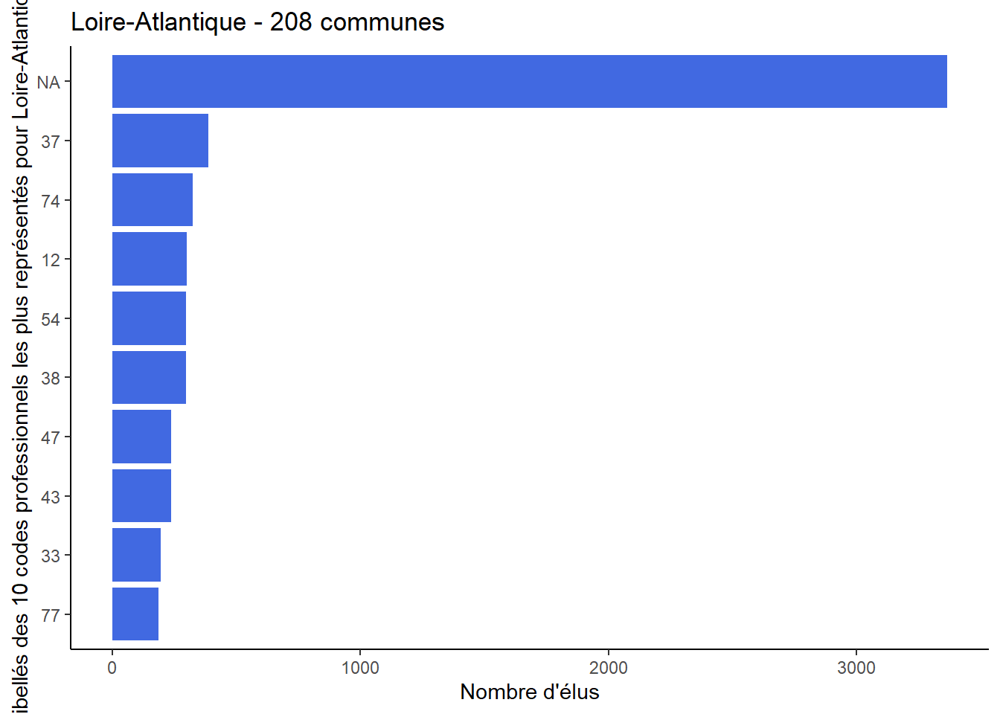

library(firstlib)
Attachement du package : 'firstlib'L'objet suivant est masqué depuis 'package:graphics':
plotLes objets suivants sont masqués depuis 'package:base':
plot, summarydf <- firstlib::donnees_eluslibrary(firstlib)
Attachement du package : 'firstlib'L'objet suivant est masqué depuis 'package:graphics':
plotLes objets suivants sont masqués depuis 'package:base':
plot, summarydf <- firstlib::donnees_eluscode_commune <- params$code_commune
code_departement <- params$code_departementdf_commune <- df[df$Code_de_la_commune == code_commune,]
commune_objet <- creer_commune(df_commune)
summary(commune_objet)[1] "Libellé de la commune : Nantes"
[1] "Nombre d'élus dans la commune : 66"
[1] "Distribution de l'âge des élus de la commune :"
0% 25% 50% 75% 100%
28.00 42.25 50.50 58.25 73.00
[1] "Élu le/la plus âgé.e de la commune :"
# A tibble: 1 × 3
Nom_de_l_élu Prénom_de_l_élu Age
<chr> <chr> <dbl>
1 PROCHASSON François 73plot(commune_objet)
df_departement <- df[df$Code_du_département == code_departement,]
departement_objet <- creer_departement(df_departement)
summary(departement_objet)[1] "Nom du département : Loire-Atlantique"
[2] "Nom du département : NA"
[1] "Nombre de commune : 208"
[1] "Nombre d'élus dans le département : 4782"
[1] "Distribution de l'âge des élus du département :"
0% 25% 50% 75% 100%
22 46 54 63 84
[1] "Élu(e) le/la plus âgé(e) du département :"
# A tibble: 1 × 3
Nom_de_l_élu Prénom_de_l_élu Age
<chr> <chr> <dbl>
1 LE BIHAN-PENNANROZ Janine 84
[1] "Commune de l'élu(e) le/la plus âgé(e) : Le Croisic"
[2] "Commune de l'élu(e) le/la plus âgé(e) : NA"
[3] "Commune de l'élu(e) le/la plus âgé(e) : NA"
[4] "Commune de l'élu(e) le/la plus âgé(e) : NA"
[5] "Commune de l'élu(e) le/la plus âgé(e) : NA"
[6] "Commune de l'élu(e) le/la plus âgé(e) : NA"
[7] "Commune de l'élu(e) le/la plus âgé(e) : NA"
[8] "Commune de l'élu(e) le/la plus âgé(e) : NA"
[9] "Commune de l'élu(e) le/la plus âgé(e) : NA"
[10] "Commune de l'élu(e) le/la plus âgé(e) : NA"
[11] "Commune de l'élu(e) le/la plus âgé(e) : NA"
[12] "Commune de l'élu(e) le/la plus âgé(e) : NA"
[13] "Commune de l'élu(e) le/la plus âgé(e) : NA"
[14] "Commune de l'élu(e) le/la plus âgé(e) : NA"
[15] "Commune de l'élu(e) le/la plus âgé(e) : NA"
[16] "Commune de l'élu(e) le/la plus âgé(e) : NA"
[17] "Commune de l'élu(e) le/la plus âgé(e) : NA"
[18] "Commune de l'élu(e) le/la plus âgé(e) : NA"
[19] "Commune de l'élu(e) le/la plus âgé(e) : NA"
[20] "Commune de l'élu(e) le/la plus âgé(e) : NA"
[21] "Commune de l'élu(e) le/la plus âgé(e) : NA"
[22] "Commune de l'élu(e) le/la plus âgé(e) : NA"
[23] "Commune de l'élu(e) le/la plus âgé(e) : NA"
[24] "Commune de l'élu(e) le/la plus âgé(e) : NA"
[25] "Commune de l'élu(e) le/la plus âgé(e) : NA"
[26] "Commune de l'élu(e) le/la plus âgé(e) : NA"
[27] "Commune de l'élu(e) le/la plus âgé(e) : NA"
[28] "Commune de l'élu(e) le/la plus âgé(e) : NA"
[29] "Commune de l'élu(e) le/la plus âgé(e) : NA"
[30] "Commune de l'élu(e) le/la plus âgé(e) : NA"
[31] "Commune de l'élu(e) le/la plus âgé(e) : NA"
[32] "Commune de l'élu(e) le/la plus âgé(e) : NA"
[33] "Commune de l'élu(e) le/la plus âgé(e) : NA"
[34] "Commune de l'élu(e) le/la plus âgé(e) : NA"
[35] "Commune de l'élu(e) le/la plus âgé(e) : NA"
[36] "Commune de l'élu(e) le/la plus âgé(e) : NA"
[37] "Commune de l'élu(e) le/la plus âgé(e) : NA"
[38] "Commune de l'élu(e) le/la plus âgé(e) : NA"
[39] "Commune de l'élu(e) le/la plus âgé(e) : NA"
[40] "Commune de l'élu(e) le/la plus âgé(e) : NA"
[41] "Commune de l'élu(e) le/la plus âgé(e) : NA"
[42] "Commune de l'élu(e) le/la plus âgé(e) : NA"
[43] "Commune de l'élu(e) le/la plus âgé(e) : NA"
[44] "Commune de l'élu(e) le/la plus âgé(e) : NA"
[45] "Commune de l'élu(e) le/la plus âgé(e) : NA"
[46] "Commune de l'élu(e) le/la plus âgé(e) : NA"
[47] "Commune de l'élu(e) le/la plus âgé(e) : NA"
[48] "Commune de l'élu(e) le/la plus âgé(e) : NA"
[49] "Commune de l'élu(e) le/la plus âgé(e) : NA"
[50] "Commune de l'élu(e) le/la plus âgé(e) : NA"
[51] "Commune de l'élu(e) le/la plus âgé(e) : NA"
[52] "Commune de l'élu(e) le/la plus âgé(e) : NA"
[53] "Commune de l'élu(e) le/la plus âgé(e) : NA"
[54] "Commune de l'élu(e) le/la plus âgé(e) : NA"
[55] "Commune de l'élu(e) le/la plus âgé(e) : NA"
[56] "Commune de l'élu(e) le/la plus âgé(e) : NA"
[57] "Commune de l'élu(e) le/la plus âgé(e) : NA"
[58] "Commune de l'élu(e) le/la plus âgé(e) : NA"
[59] "Commune de l'élu(e) le/la plus âgé(e) : NA"
[60] "Commune de l'élu(e) le/la plus âgé(e) : NA"
[61] "Commune de l'élu(e) le/la plus âgé(e) : NA"
[62] "Commune de l'élu(e) le/la plus âgé(e) : NA"
[63] "Commune de l'élu(e) le/la plus âgé(e) : NA"
[64] "Commune de l'élu(e) le/la plus âgé(e) : NA"
[65] "Commune de l'élu(e) le/la plus âgé(e) : NA"
[66] "Commune de l'élu(e) le/la plus âgé(e) : NA"
[67] "Commune de l'élu(e) le/la plus âgé(e) : NA"
[68] "Commune de l'élu(e) le/la plus âgé(e) : NA"
[69] "Commune de l'élu(e) le/la plus âgé(e) : NA"
[70] "Commune de l'élu(e) le/la plus âgé(e) : NA"
[71] "Commune de l'élu(e) le/la plus âgé(e) : NA"
[72] "Commune de l'élu(e) le/la plus âgé(e) : NA"
[73] "Commune de l'élu(e) le/la plus âgé(e) : NA"
[74] "Commune de l'élu(e) le/la plus âgé(e) : NA"
[75] "Commune de l'élu(e) le/la plus âgé(e) : NA"
[76] "Commune de l'élu(e) le/la plus âgé(e) : NA"
[77] "Commune de l'élu(e) le/la plus âgé(e) : NA"
[78] "Commune de l'élu(e) le/la plus âgé(e) : NA"
[79] "Commune de l'élu(e) le/la plus âgé(e) : NA"
[80] "Commune de l'élu(e) le/la plus âgé(e) : NA"
[81] "Commune de l'élu(e) le/la plus âgé(e) : NA"
[82] "Commune de l'élu(e) le/la plus âgé(e) : NA"
[83] "Commune de l'élu(e) le/la plus âgé(e) : NA"
[84] "Commune de l'élu(e) le/la plus âgé(e) : NA"
[85] "Commune de l'élu(e) le/la plus âgé(e) : NA"
[86] "Commune de l'élu(e) le/la plus âgé(e) : NA"
[87] "Commune de l'élu(e) le/la plus âgé(e) : NA"
[88] "Commune de l'élu(e) le/la plus âgé(e) : NA"
[89] "Commune de l'élu(e) le/la plus âgé(e) : NA"
[90] "Commune de l'élu(e) le/la plus âgé(e) : NA"
[91] "Commune de l'élu(e) le/la plus âgé(e) : NA"
[92] "Commune de l'élu(e) le/la plus âgé(e) : NA"
[93] "Commune de l'élu(e) le/la plus âgé(e) : NA"
[94] "Commune de l'élu(e) le/la plus âgé(e) : NA"
[95] "Commune de l'élu(e) le/la plus âgé(e) : NA"
[96] "Commune de l'élu(e) le/la plus âgé(e) : NA"
[97] "Commune de l'élu(e) le/la plus âgé(e) : NA"
[98] "Commune de l'élu(e) le/la plus âgé(e) : NA"
[99] "Commune de l'élu(e) le/la plus âgé(e) : NA"
[100] "Commune de l'élu(e) le/la plus âgé(e) : NA"
[101] "Commune de l'élu(e) le/la plus âgé(e) : NA"
[102] "Commune de l'élu(e) le/la plus âgé(e) : NA"
[103] "Commune de l'élu(e) le/la plus âgé(e) : NA"
[104] "Commune de l'élu(e) le/la plus âgé(e) : NA"
[105] "Commune de l'élu(e) le/la plus âgé(e) : NA"
[106] "Commune de l'élu(e) le/la plus âgé(e) : NA"
[107] "Commune de l'élu(e) le/la plus âgé(e) : NA"
[108] "Commune de l'élu(e) le/la plus âgé(e) : NA"
[109] "Commune de l'élu(e) le/la plus âgé(e) : NA"
[110] "Commune de l'élu(e) le/la plus âgé(e) : NA"
[111] "Commune de l'élu(e) le/la plus âgé(e) : NA"
[112] "Commune de l'élu(e) le/la plus âgé(e) : NA"
[113] "Commune de l'élu(e) le/la plus âgé(e) : NA"
[114] "Commune de l'élu(e) le/la plus âgé(e) : NA"
[115] "Commune de l'élu(e) le/la plus âgé(e) : NA"
[116] "Commune de l'élu(e) le/la plus âgé(e) : NA"
[117] "Commune de l'élu(e) le/la plus âgé(e) : NA"
[118] "Commune de l'élu(e) le/la plus âgé(e) : NA"
[119] "Commune de l'élu(e) le/la plus âgé(e) : NA"
[120] "Commune de l'élu(e) le/la plus âgé(e) : NA"
[121] "Commune de l'élu(e) le/la plus âgé(e) : NA"
[122] "Commune de l'élu(e) le/la plus âgé(e) : NA"
[123] "Commune de l'élu(e) le/la plus âgé(e) : NA"
[124] "Commune de l'élu(e) le/la plus âgé(e) : NA"
[125] "Commune de l'élu(e) le/la plus âgé(e) : NA"
[126] "Commune de l'élu(e) le/la plus âgé(e) : NA"
[127] "Commune de l'élu(e) le/la plus âgé(e) : NA"
[128] "Commune de l'élu(e) le/la plus âgé(e) : NA"
[129] "Commune de l'élu(e) le/la plus âgé(e) : NA"
[130] "Commune de l'élu(e) le/la plus âgé(e) : NA"
[131] "Commune de l'élu(e) le/la plus âgé(e) : NA"
[132] "Commune de l'élu(e) le/la plus âgé(e) : NA"
[133] "Commune de l'élu(e) le/la plus âgé(e) : NA"
[134] "Commune de l'élu(e) le/la plus âgé(e) : NA"
[135] "Commune de l'élu(e) le/la plus âgé(e) : NA"
[136] "Commune de l'élu(e) le/la plus âgé(e) : NA"
[137] "Commune de l'élu(e) le/la plus âgé(e) : NA"
[138] "Commune de l'élu(e) le/la plus âgé(e) : NA"
[139] "Commune de l'élu(e) le/la plus âgé(e) : NA"
[140] "Commune de l'élu(e) le/la plus âgé(e) : NA"
[141] "Commune de l'élu(e) le/la plus âgé(e) : NA"
[142] "Commune de l'élu(e) le/la plus âgé(e) : NA"
[143] "Commune de l'élu(e) le/la plus âgé(e) : NA"
[144] "Commune de l'élu(e) le/la plus âgé(e) : NA"
[145] "Commune de l'élu(e) le/la plus âgé(e) : NA"
[146] "Commune de l'élu(e) le/la plus âgé(e) : NA"
[147] "Commune de l'élu(e) le/la plus âgé(e) : NA"
[148] "Commune de l'élu(e) le/la plus âgé(e) : NA"
[149] "Commune de l'élu(e) le/la plus âgé(e) : NA"
[150] "Commune de l'élu(e) le/la plus âgé(e) : NA"
[151] "Commune de l'élu(e) le/la plus âgé(e) : NA"
[152] "Commune de l'élu(e) le/la plus âgé(e) : NA"
[153] "Commune de l'élu(e) le/la plus âgé(e) : NA"
[154] "Commune de l'élu(e) le/la plus âgé(e) : NA"
[155] "Commune de l'élu(e) le/la plus âgé(e) : NA"
[156] "Commune de l'élu(e) le/la plus âgé(e) : NA"
[157] "Commune de l'élu(e) le/la plus âgé(e) : NA"
[158] "Commune de l'élu(e) le/la plus âgé(e) : NA"
[159] "Commune de l'élu(e) le/la plus âgé(e) : NA"
[160] "Commune de l'élu(e) le/la plus âgé(e) : NA"
[161] "Commune de l'élu(e) le/la plus âgé(e) : NA"
[162] "Commune de l'élu(e) le/la plus âgé(e) : NA"
[163] "Commune de l'élu(e) le/la plus âgé(e) : NA"
[164] "Commune de l'élu(e) le/la plus âgé(e) : NA"
[165] "Commune de l'élu(e) le/la plus âgé(e) : NA"
[166] "Commune de l'élu(e) le/la plus âgé(e) : NA"
[167] "Commune de l'élu(e) le/la plus âgé(e) : NA"
[168] "Commune de l'élu(e) le/la plus âgé(e) : NA"
[169] "Commune de l'élu(e) le/la plus âgé(e) : NA"
[170] "Commune de l'élu(e) le/la plus âgé(e) : NA"
[171] "Commune de l'élu(e) le/la plus âgé(e) : NA"
[172] "Commune de l'élu(e) le/la plus âgé(e) : NA"
[173] "Commune de l'élu(e) le/la plus âgé(e) : NA"
[174] "Commune de l'élu(e) le/la plus âgé(e) : NA"
[175] "Commune de l'élu(e) le/la plus âgé(e) : NA"
[176] "Commune de l'élu(e) le/la plus âgé(e) : NA"
[177] "Commune de l'élu(e) le/la plus âgé(e) : NA"
[178] "Commune de l'élu(e) le/la plus âgé(e) : NA"
[179] "Commune de l'élu(e) le/la plus âgé(e) : NA"
[180] "Commune de l'élu(e) le/la plus âgé(e) : NA"
[181] "Commune de l'élu(e) le/la plus âgé(e) : NA"
[182] "Commune de l'élu(e) le/la plus âgé(e) : NA"
[183] "Commune de l'élu(e) le/la plus âgé(e) : NA"
[184] "Commune de l'élu(e) le/la plus âgé(e) : NA"
[185] "Commune de l'élu(e) le/la plus âgé(e) : NA"
[186] "Commune de l'élu(e) le/la plus âgé(e) : NA"
[187] "Commune de l'élu(e) le/la plus âgé(e) : NA"
[188] "Commune de l'élu(e) le/la plus âgé(e) : NA"
[189] "Commune de l'élu(e) le/la plus âgé(e) : NA"
[190] "Commune de l'élu(e) le/la plus âgé(e) : NA"
[191] "Commune de l'élu(e) le/la plus âgé(e) : NA"
[192] "Commune de l'élu(e) le/la plus âgé(e) : NA"
[193] "Commune de l'élu(e) le/la plus âgé(e) : NA"
[194] "Commune de l'élu(e) le/la plus âgé(e) : NA"
[195] "Commune de l'élu(e) le/la plus âgé(e) : NA"
[196] "Commune de l'élu(e) le/la plus âgé(e) : NA"
[197] "Commune de l'élu(e) le/la plus âgé(e) : NA"
[198] "Commune de l'élu(e) le/la plus âgé(e) : NA"
[199] "Commune de l'élu(e) le/la plus âgé(e) : NA"
[200] "Commune de l'élu(e) le/la plus âgé(e) : NA"
[201] "Commune de l'élu(e) le/la plus âgé(e) : NA"
[202] "Commune de l'élu(e) le/la plus âgé(e) : NA"
[203] "Commune de l'élu(e) le/la plus âgé(e) : NA"
[204] "Commune de l'élu(e) le/la plus âgé(e) : NA"
[205] "Commune de l'élu(e) le/la plus âgé(e) : NA"
[206] "Commune de l'élu(e) le/la plus âgé(e) : NA"
[207] "Commune de l'élu(e) le/la plus âgé(e) : NA"
[208] "Commune de l'élu(e) le/la plus âgé(e) : NA"
[209] "Commune de l'élu(e) le/la plus âgé(e) : NA"
[210] "Commune de l'élu(e) le/la plus âgé(e) : NA"
[211] "Commune de l'élu(e) le/la plus âgé(e) : NA"
[212] "Commune de l'élu(e) le/la plus âgé(e) : NA"
[213] "Commune de l'élu(e) le/la plus âgé(e) : NA"
[214] "Commune de l'élu(e) le/la plus âgé(e) : NA"
[215] "Commune de l'élu(e) le/la plus âgé(e) : NA"
[216] "Commune de l'élu(e) le/la plus âgé(e) : NA"
[217] "Commune de l'élu(e) le/la plus âgé(e) : NA"
[218] "Commune de l'élu(e) le/la plus âgé(e) : NA"
[219] "Commune de l'élu(e) le/la plus âgé(e) : NA"
[220] "Commune de l'élu(e) le/la plus âgé(e) : NA"
[221] "Commune de l'élu(e) le/la plus âgé(e) : NA"
[222] "Commune de l'élu(e) le/la plus âgé(e) : NA"
[223] "Commune de l'élu(e) le/la plus âgé(e) : NA"
[224] "Commune de l'élu(e) le/la plus âgé(e) : NA"
[225] "Commune de l'élu(e) le/la plus âgé(e) : NA"
[226] "Commune de l'élu(e) le/la plus âgé(e) : NA"
[227] "Commune de l'élu(e) le/la plus âgé(e) : NA"
[228] "Commune de l'élu(e) le/la plus âgé(e) : NA"
[229] "Commune de l'élu(e) le/la plus âgé(e) : NA"
[230] "Commune de l'élu(e) le/la plus âgé(e) : NA"
[231] "Commune de l'élu(e) le/la plus âgé(e) : NA"
[232] "Commune de l'élu(e) le/la plus âgé(e) : NA"
[233] "Commune de l'élu(e) le/la plus âgé(e) : NA"
[234] "Commune de l'élu(e) le/la plus âgé(e) : NA"
[235] "Commune de l'élu(e) le/la plus âgé(e) : NA"
[236] "Commune de l'élu(e) le/la plus âgé(e) : NA"
[237] "Commune de l'élu(e) le/la plus âgé(e) : NA"
[238] "Commune de l'élu(e) le/la plus âgé(e) : NA"
[239] "Commune de l'élu(e) le/la plus âgé(e) : NA"
[240] "Commune de l'élu(e) le/la plus âgé(e) : NA"
[241] "Commune de l'élu(e) le/la plus âgé(e) : NA"
[242] "Commune de l'élu(e) le/la plus âgé(e) : NA"
[243] "Commune de l'élu(e) le/la plus âgé(e) : NA"
[244] "Commune de l'élu(e) le/la plus âgé(e) : NA"
[245] "Commune de l'élu(e) le/la plus âgé(e) : NA"
[246] "Commune de l'élu(e) le/la plus âgé(e) : NA"
[247] "Commune de l'élu(e) le/la plus âgé(e) : NA"
[248] "Commune de l'élu(e) le/la plus âgé(e) : NA"
[249] "Commune de l'élu(e) le/la plus âgé(e) : NA"
[250] "Commune de l'élu(e) le/la plus âgé(e) : NA"
[251] "Commune de l'élu(e) le/la plus âgé(e) : NA"
[252] "Commune de l'élu(e) le/la plus âgé(e) : NA"
[253] "Commune de l'élu(e) le/la plus âgé(e) : NA"
[254] "Commune de l'élu(e) le/la plus âgé(e) : NA"
[255] "Commune de l'élu(e) le/la plus âgé(e) : NA"
[256] "Commune de l'élu(e) le/la plus âgé(e) : NA"
[257] "Commune de l'élu(e) le/la plus âgé(e) : NA"
[258] "Commune de l'élu(e) le/la plus âgé(e) : NA"
[259] "Commune de l'élu(e) le/la plus âgé(e) : NA"
[260] "Commune de l'élu(e) le/la plus âgé(e) : NA"
[261] "Commune de l'élu(e) le/la plus âgé(e) : NA"
[262] "Commune de l'élu(e) le/la plus âgé(e) : NA"
[263] "Commune de l'élu(e) le/la plus âgé(e) : NA"
[264] "Commune de l'élu(e) le/la plus âgé(e) : NA"
[265] "Commune de l'élu(e) le/la plus âgé(e) : NA"
[266] "Commune de l'élu(e) le/la plus âgé(e) : NA"
[267] "Commune de l'élu(e) le/la plus âgé(e) : NA"
[268] "Commune de l'élu(e) le/la plus âgé(e) : NA"
[269] "Commune de l'élu(e) le/la plus âgé(e) : NA"
[270] "Commune de l'élu(e) le/la plus âgé(e) : NA"
[271] "Commune de l'élu(e) le/la plus âgé(e) : NA"
[272] "Commune de l'élu(e) le/la plus âgé(e) : NA"
[273] "Commune de l'élu(e) le/la plus âgé(e) : NA"
[274] "Commune de l'élu(e) le/la plus âgé(e) : NA"
[275] "Commune de l'élu(e) le/la plus âgé(e) : NA"
[276] "Commune de l'élu(e) le/la plus âgé(e) : NA"
[277] "Commune de l'élu(e) le/la plus âgé(e) : NA"
[278] "Commune de l'élu(e) le/la plus âgé(e) : NA"
[279] "Commune de l'élu(e) le/la plus âgé(e) : NA"
[280] "Commune de l'élu(e) le/la plus âgé(e) : NA"
[281] "Commune de l'élu(e) le/la plus âgé(e) : NA"
[282] "Commune de l'élu(e) le/la plus âgé(e) : NA"
[283] "Commune de l'élu(e) le/la plus âgé(e) : NA"
[284] "Commune de l'élu(e) le/la plus âgé(e) : NA"
[285] "Commune de l'élu(e) le/la plus âgé(e) : NA"
[286] "Commune de l'élu(e) le/la plus âgé(e) : NA"
[287] "Commune de l'élu(e) le/la plus âgé(e) : NA"
[288] "Commune de l'élu(e) le/la plus âgé(e) : NA"
[289] "Commune de l'élu(e) le/la plus âgé(e) : NA"
[290] "Commune de l'élu(e) le/la plus âgé(e) : NA"
[291] "Commune de l'élu(e) le/la plus âgé(e) : NA"
[292] "Commune de l'élu(e) le/la plus âgé(e) : NA"
[293] "Commune de l'élu(e) le/la plus âgé(e) : NA"
[294] "Commune de l'élu(e) le/la plus âgé(e) : NA"
[295] "Commune de l'élu(e) le/la plus âgé(e) : NA"
[296] "Commune de l'élu(e) le/la plus âgé(e) : NA"
[297] "Commune de l'élu(e) le/la plus âgé(e) : NA"
[298] "Commune de l'élu(e) le/la plus âgé(e) : NA"
[299] "Commune de l'élu(e) le/la plus âgé(e) : NA"
[300] "Commune de l'élu(e) le/la plus âgé(e) : NA"
[301] "Commune de l'élu(e) le/la plus âgé(e) : NA"
[302] "Commune de l'élu(e) le/la plus âgé(e) : NA"
[303] "Commune de l'élu(e) le/la plus âgé(e) : NA"
[304] "Commune de l'élu(e) le/la plus âgé(e) : NA"
[305] "Commune de l'élu(e) le/la plus âgé(e) : NA"
[306] "Commune de l'élu(e) le/la plus âgé(e) : NA"
[307] "Commune de l'élu(e) le/la plus âgé(e) : NA"
[308] "Commune de l'élu(e) le/la plus âgé(e) : NA"
[309] "Commune de l'élu(e) le/la plus âgé(e) : NA"
[310] "Commune de l'élu(e) le/la plus âgé(e) : NA"
[311] "Commune de l'élu(e) le/la plus âgé(e) : NA"
[312] "Commune de l'élu(e) le/la plus âgé(e) : NA"
[313] "Commune de l'élu(e) le/la plus âgé(e) : NA"
[314] "Commune de l'élu(e) le/la plus âgé(e) : NA"
[315] "Commune de l'élu(e) le/la plus âgé(e) : NA"
[316] "Commune de l'élu(e) le/la plus âgé(e) : NA"
[317] "Commune de l'élu(e) le/la plus âgé(e) : NA"
[318] "Commune de l'élu(e) le/la plus âgé(e) : NA"
[319] "Commune de l'élu(e) le/la plus âgé(e) : NA"
[320] "Commune de l'élu(e) le/la plus âgé(e) : NA"
[321] "Commune de l'élu(e) le/la plus âgé(e) : NA"
[322] "Commune de l'élu(e) le/la plus âgé(e) : NA"
[323] "Commune de l'élu(e) le/la plus âgé(e) : NA"
[324] "Commune de l'élu(e) le/la plus âgé(e) : NA"
[325] "Commune de l'élu(e) le/la plus âgé(e) : NA"
[326] "Commune de l'élu(e) le/la plus âgé(e) : NA"
[327] "Commune de l'élu(e) le/la plus âgé(e) : NA"
[328] "Commune de l'élu(e) le/la plus âgé(e) : NA"
[329] "Commune de l'élu(e) le/la plus âgé(e) : NA"
[330] "Commune de l'élu(e) le/la plus âgé(e) : NA"
[331] "Commune de l'élu(e) le/la plus âgé(e) : NA"
[332] "Commune de l'élu(e) le/la plus âgé(e) : NA"
[333] "Commune de l'élu(e) le/la plus âgé(e) : NA"
[334] "Commune de l'élu(e) le/la plus âgé(e) : NA"
[335] "Commune de l'élu(e) le/la plus âgé(e) : NA"
[336] "Commune de l'élu(e) le/la plus âgé(e) : NA"
[337] "Commune de l'élu(e) le/la plus âgé(e) : NA"
[338] "Commune de l'élu(e) le/la plus âgé(e) : NA"
[339] "Commune de l'élu(e) le/la plus âgé(e) : NA"
[340] "Commune de l'élu(e) le/la plus âgé(e) : NA"
[341] "Commune de l'élu(e) le/la plus âgé(e) : NA"
[342] "Commune de l'élu(e) le/la plus âgé(e) : NA"
[343] "Commune de l'élu(e) le/la plus âgé(e) : NA"
[344] "Commune de l'élu(e) le/la plus âgé(e) : NA"
[345] "Commune de l'élu(e) le/la plus âgé(e) : NA"
[346] "Commune de l'élu(e) le/la plus âgé(e) : NA"
[347] "Commune de l'élu(e) le/la plus âgé(e) : NA"
[348] "Commune de l'élu(e) le/la plus âgé(e) : NA"
[349] "Commune de l'élu(e) le/la plus âgé(e) : NA"
[350] "Commune de l'élu(e) le/la plus âgé(e) : NA"
[351] "Commune de l'élu(e) le/la plus âgé(e) : NA"
[352] "Commune de l'élu(e) le/la plus âgé(e) : NA"
[353] "Commune de l'élu(e) le/la plus âgé(e) : NA"
[354] "Commune de l'élu(e) le/la plus âgé(e) : NA"
[355] "Commune de l'élu(e) le/la plus âgé(e) : NA"
[356] "Commune de l'élu(e) le/la plus âgé(e) : NA"
[357] "Commune de l'élu(e) le/la plus âgé(e) : NA"
[358] "Commune de l'élu(e) le/la plus âgé(e) : NA"
[359] "Commune de l'élu(e) le/la plus âgé(e) : NA"
[360] "Commune de l'élu(e) le/la plus âgé(e) : NA"
[361] "Commune de l'élu(e) le/la plus âgé(e) : NA"
[362] "Commune de l'élu(e) le/la plus âgé(e) : NA"
[363] "Commune de l'élu(e) le/la plus âgé(e) : NA"
[364] "Commune de l'élu(e) le/la plus âgé(e) : NA"
[365] "Commune de l'élu(e) le/la plus âgé(e) : NA"
[366] "Commune de l'élu(e) le/la plus âgé(e) : NA"
[367] "Commune de l'élu(e) le/la plus âgé(e) : NA"
[368] "Commune de l'élu(e) le/la plus âgé(e) : NA"
[369] "Commune de l'élu(e) le/la plus âgé(e) : NA"
[370] "Commune de l'élu(e) le/la plus âgé(e) : NA"
[371] "Commune de l'élu(e) le/la plus âgé(e) : NA"
[372] "Commune de l'élu(e) le/la plus âgé(e) : NA"
[373] "Commune de l'élu(e) le/la plus âgé(e) : NA"
[374] "Commune de l'élu(e) le/la plus âgé(e) : NA"
[375] "Commune de l'élu(e) le/la plus âgé(e) : NA"
[376] "Commune de l'élu(e) le/la plus âgé(e) : NA"
[377] "Commune de l'élu(e) le/la plus âgé(e) : NA"
[378] "Commune de l'élu(e) le/la plus âgé(e) : NA"
[379] "Commune de l'élu(e) le/la plus âgé(e) : NA"
[380] "Commune de l'élu(e) le/la plus âgé(e) : NA"
[381] "Commune de l'élu(e) le/la plus âgé(e) : NA"
[382] "Commune de l'élu(e) le/la plus âgé(e) : NA"
[383] "Commune de l'élu(e) le/la plus âgé(e) : NA"
[384] "Commune de l'élu(e) le/la plus âgé(e) : NA"
[385] "Commune de l'élu(e) le/la plus âgé(e) : NA"
[386] "Commune de l'élu(e) le/la plus âgé(e) : NA"
[387] "Commune de l'élu(e) le/la plus âgé(e) : NA"
[388] "Commune de l'élu(e) le/la plus âgé(e) : NA"
[389] "Commune de l'élu(e) le/la plus âgé(e) : NA"
[390] "Commune de l'élu(e) le/la plus âgé(e) : NA"
[391] "Commune de l'élu(e) le/la plus âgé(e) : NA"
[392] "Commune de l'élu(e) le/la plus âgé(e) : NA"
[393] "Commune de l'élu(e) le/la plus âgé(e) : NA"
[394] "Commune de l'élu(e) le/la plus âgé(e) : NA"
[395] "Commune de l'élu(e) le/la plus âgé(e) : NA"
[396] "Commune de l'élu(e) le/la plus âgé(e) : NA"
[397] "Commune de l'élu(e) le/la plus âgé(e) : NA"
[398] "Commune de l'élu(e) le/la plus âgé(e) : NA"
[399] "Commune de l'élu(e) le/la plus âgé(e) : NA"
[400] "Commune de l'élu(e) le/la plus âgé(e) : NA"
[401] "Commune de l'élu(e) le/la plus âgé(e) : NA"
[402] "Commune de l'élu(e) le/la plus âgé(e) : NA"
[403] "Commune de l'élu(e) le/la plus âgé(e) : NA"
[404] "Commune de l'élu(e) le/la plus âgé(e) : NA"
[405] "Commune de l'élu(e) le/la plus âgé(e) : NA"
[406] "Commune de l'élu(e) le/la plus âgé(e) : NA"
[407] "Commune de l'élu(e) le/la plus âgé(e) : NA"
[408] "Commune de l'élu(e) le/la plus âgé(e) : NA"
[409] "Commune de l'élu(e) le/la plus âgé(e) : NA"
[410] "Commune de l'élu(e) le/la plus âgé(e) : NA"
[411] "Commune de l'élu(e) le/la plus âgé(e) : NA"
[412] "Commune de l'élu(e) le/la plus âgé(e) : NA"
[413] "Commune de l'élu(e) le/la plus âgé(e) : NA"
[414] "Commune de l'élu(e) le/la plus âgé(e) : NA"
[415] "Commune de l'élu(e) le/la plus âgé(e) : NA"
[416] "Commune de l'élu(e) le/la plus âgé(e) : NA"
[417] "Commune de l'élu(e) le/la plus âgé(e) : NA"
[418] "Commune de l'élu(e) le/la plus âgé(e) : NA"
[419] "Commune de l'élu(e) le/la plus âgé(e) : NA"
[420] "Commune de l'élu(e) le/la plus âgé(e) : NA"
[421] "Commune de l'élu(e) le/la plus âgé(e) : NA"
[422] "Commune de l'élu(e) le/la plus âgé(e) : NA"
[423] "Commune de l'élu(e) le/la plus âgé(e) : NA"
[424] "Commune de l'élu(e) le/la plus âgé(e) : NA"
[425] "Commune de l'élu(e) le/la plus âgé(e) : NA"
[426] "Commune de l'élu(e) le/la plus âgé(e) : NA"
[427] "Commune de l'élu(e) le/la plus âgé(e) : NA"
[428] "Commune de l'élu(e) le/la plus âgé(e) : NA"
[429] "Commune de l'élu(e) le/la plus âgé(e) : NA"
[430] "Commune de l'élu(e) le/la plus âgé(e) : NA"
[431] "Commune de l'élu(e) le/la plus âgé(e) : NA"
[432] "Commune de l'élu(e) le/la plus âgé(e) : NA"
[433] "Commune de l'élu(e) le/la plus âgé(e) : NA"
[434] "Commune de l'élu(e) le/la plus âgé(e) : NA"
[435] "Commune de l'élu(e) le/la plus âgé(e) : NA"
[436] "Commune de l'élu(e) le/la plus âgé(e) : NA"
[437] "Commune de l'élu(e) le/la plus âgé(e) : NA"
[438] "Commune de l'élu(e) le/la plus âgé(e) : NA"
[439] "Commune de l'élu(e) le/la plus âgé(e) : NA"
[440] "Commune de l'élu(e) le/la plus âgé(e) : NA"
[441] "Commune de l'élu(e) le/la plus âgé(e) : NA"
[442] "Commune de l'élu(e) le/la plus âgé(e) : NA"
[443] "Commune de l'élu(e) le/la plus âgé(e) : NA"
[444] "Commune de l'élu(e) le/la plus âgé(e) : NA"
[445] "Commune de l'élu(e) le/la plus âgé(e) : NA"
[446] "Commune de l'élu(e) le/la plus âgé(e) : NA"
[447] "Commune de l'élu(e) le/la plus âgé(e) : NA"
[448] "Commune de l'élu(e) le/la plus âgé(e) : NA"
[449] "Commune de l'élu(e) le/la plus âgé(e) : NA"
[450] "Commune de l'élu(e) le/la plus âgé(e) : NA"
[451] "Commune de l'élu(e) le/la plus âgé(e) : NA"
[452] "Commune de l'élu(e) le/la plus âgé(e) : NA"
[453] "Commune de l'élu(e) le/la plus âgé(e) : NA"
[454] "Commune de l'élu(e) le/la plus âgé(e) : NA"
[455] "Commune de l'élu(e) le/la plus âgé(e) : NA"
[456] "Commune de l'élu(e) le/la plus âgé(e) : NA"
[457] "Commune de l'élu(e) le/la plus âgé(e) : NA"
[458] "Commune de l'élu(e) le/la plus âgé(e) : NA"
[459] "Commune de l'élu(e) le/la plus âgé(e) : NA"
[460] "Commune de l'élu(e) le/la plus âgé(e) : NA"
[461] "Commune de l'élu(e) le/la plus âgé(e) : NA"
[462] "Commune de l'élu(e) le/la plus âgé(e) : NA"
[463] "Commune de l'élu(e) le/la plus âgé(e) : NA"
[464] "Commune de l'élu(e) le/la plus âgé(e) : NA"
[465] "Commune de l'élu(e) le/la plus âgé(e) : NA"
[466] "Commune de l'élu(e) le/la plus âgé(e) : NA"
[467] "Commune de l'élu(e) le/la plus âgé(e) : NA"
[468] "Commune de l'élu(e) le/la plus âgé(e) : NA"
[469] "Commune de l'élu(e) le/la plus âgé(e) : NA"
[470] "Commune de l'élu(e) le/la plus âgé(e) : NA"
[471] "Commune de l'élu(e) le/la plus âgé(e) : NA"
[472] "Commune de l'élu(e) le/la plus âgé(e) : NA"
[473] "Commune de l'élu(e) le/la plus âgé(e) : NA"
[474] "Commune de l'élu(e) le/la plus âgé(e) : NA"
[475] "Commune de l'élu(e) le/la plus âgé(e) : NA"
[476] "Commune de l'élu(e) le/la plus âgé(e) : NA"
[477] "Commune de l'élu(e) le/la plus âgé(e) : NA"
[478] "Commune de l'élu(e) le/la plus âgé(e) : NA"
[479] "Commune de l'élu(e) le/la plus âgé(e) : NA"
[480] "Commune de l'élu(e) le/la plus âgé(e) : NA"
[481] "Commune de l'élu(e) le/la plus âgé(e) : NA"
[482] "Commune de l'élu(e) le/la plus âgé(e) : NA"
[483] "Commune de l'élu(e) le/la plus âgé(e) : NA"
[484] "Commune de l'élu(e) le/la plus âgé(e) : NA"
[485] "Commune de l'élu(e) le/la plus âgé(e) : NA"
[486] "Commune de l'élu(e) le/la plus âgé(e) : NA"
[487] "Commune de l'élu(e) le/la plus âgé(e) : NA"
[488] "Commune de l'élu(e) le/la plus âgé(e) : NA"
[489] "Commune de l'élu(e) le/la plus âgé(e) : NA"
[490] "Commune de l'élu(e) le/la plus âgé(e) : NA"
[491] "Commune de l'élu(e) le/la plus âgé(e) : NA"
[492] "Commune de l'élu(e) le/la plus âgé(e) : NA"
[493] "Commune de l'élu(e) le/la plus âgé(e) : NA"
[494] "Commune de l'élu(e) le/la plus âgé(e) : NA"
[495] "Commune de l'élu(e) le/la plus âgé(e) : NA"
[496] "Commune de l'élu(e) le/la plus âgé(e) : NA"
[497] "Commune de l'élu(e) le/la plus âgé(e) : NA"
[498] "Commune de l'élu(e) le/la plus âgé(e) : NA"
[499] "Commune de l'élu(e) le/la plus âgé(e) : NA"
[500] "Commune de l'élu(e) le/la plus âgé(e) : NA"
[501] "Commune de l'élu(e) le/la plus âgé(e) : NA"
[502] "Commune de l'élu(e) le/la plus âgé(e) : NA"
[503] "Commune de l'élu(e) le/la plus âgé(e) : NA"
[504] "Commune de l'élu(e) le/la plus âgé(e) : NA"
[505] "Commune de l'élu(e) le/la plus âgé(e) : NA"
[506] "Commune de l'élu(e) le/la plus âgé(e) : NA"
[507] "Commune de l'élu(e) le/la plus âgé(e) : NA"
[508] "Commune de l'élu(e) le/la plus âgé(e) : NA"
[509] "Commune de l'élu(e) le/la plus âgé(e) : NA"
[510] "Commune de l'élu(e) le/la plus âgé(e) : NA"
[511] "Commune de l'élu(e) le/la plus âgé(e) : NA"
[512] "Commune de l'élu(e) le/la plus âgé(e) : NA"
[513] "Commune de l'élu(e) le/la plus âgé(e) : NA"
[514] "Commune de l'élu(e) le/la plus âgé(e) : NA"
[515] "Commune de l'élu(e) le/la plus âgé(e) : NA"
[516] "Commune de l'élu(e) le/la plus âgé(e) : NA"
[517] "Commune de l'élu(e) le/la plus âgé(e) : NA"
[518] "Commune de l'élu(e) le/la plus âgé(e) : NA"
[519] "Commune de l'élu(e) le/la plus âgé(e) : NA"
[520] "Commune de l'élu(e) le/la plus âgé(e) : NA"
[521] "Commune de l'élu(e) le/la plus âgé(e) : NA"
[522] "Commune de l'élu(e) le/la plus âgé(e) : NA"
[523] "Commune de l'élu(e) le/la plus âgé(e) : NA"
[524] "Commune de l'élu(e) le/la plus âgé(e) : NA"
[525] "Commune de l'élu(e) le/la plus âgé(e) : NA"
[526] "Commune de l'élu(e) le/la plus âgé(e) : NA"
[527] "Commune de l'élu(e) le/la plus âgé(e) : NA"
[528] "Commune de l'élu(e) le/la plus âgé(e) : NA"
[529] "Commune de l'élu(e) le/la plus âgé(e) : NA"
[530] "Commune de l'élu(e) le/la plus âgé(e) : NA"
[531] "Commune de l'élu(e) le/la plus âgé(e) : NA"
[532] "Commune de l'élu(e) le/la plus âgé(e) : NA"
[533] "Commune de l'élu(e) le/la plus âgé(e) : NA"
[534] "Commune de l'élu(e) le/la plus âgé(e) : NA"
[535] "Commune de l'élu(e) le/la plus âgé(e) : NA"
[536] "Commune de l'élu(e) le/la plus âgé(e) : NA"
[537] "Commune de l'élu(e) le/la plus âgé(e) : NA"
[538] "Commune de l'élu(e) le/la plus âgé(e) : NA"
[539] "Commune de l'élu(e) le/la plus âgé(e) : NA"
[540] "Commune de l'élu(e) le/la plus âgé(e) : NA"
[541] "Commune de l'élu(e) le/la plus âgé(e) : NA"
[542] "Commune de l'élu(e) le/la plus âgé(e) : NA"
[543] "Commune de l'élu(e) le/la plus âgé(e) : NA"
[544] "Commune de l'élu(e) le/la plus âgé(e) : NA"
[545] "Commune de l'élu(e) le/la plus âgé(e) : NA"
[546] "Commune de l'élu(e) le/la plus âgé(e) : NA"
[547] "Commune de l'élu(e) le/la plus âgé(e) : NA"
[548] "Commune de l'élu(e) le/la plus âgé(e) : NA"
[549] "Commune de l'élu(e) le/la plus âgé(e) : NA"
[550] "Commune de l'élu(e) le/la plus âgé(e) : NA"
[551] "Commune de l'élu(e) le/la plus âgé(e) : NA"
[552] "Commune de l'élu(e) le/la plus âgé(e) : NA"
[553] "Commune de l'élu(e) le/la plus âgé(e) : NA"
[554] "Commune de l'élu(e) le/la plus âgé(e) : NA"
[555] "Commune de l'élu(e) le/la plus âgé(e) : NA"
[556] "Commune de l'élu(e) le/la plus âgé(e) : NA"
[557] "Commune de l'élu(e) le/la plus âgé(e) : NA"
[558] "Commune de l'élu(e) le/la plus âgé(e) : NA"
[559] "Commune de l'élu(e) le/la plus âgé(e) : NA"
[560] "Commune de l'élu(e) le/la plus âgé(e) : NA"
[561] "Commune de l'élu(e) le/la plus âgé(e) : NA"
[562] "Commune de l'élu(e) le/la plus âgé(e) : NA"
[563] "Commune de l'élu(e) le/la plus âgé(e) : NA"
[564] "Commune de l'élu(e) le/la plus âgé(e) : NA"
[565] "Commune de l'élu(e) le/la plus âgé(e) : NA"
[566] "Commune de l'élu(e) le/la plus âgé(e) : NA"
[567] "Commune de l'élu(e) le/la plus âgé(e) : NA"
[568] "Commune de l'élu(e) le/la plus âgé(e) : NA"
[569] "Commune de l'élu(e) le/la plus âgé(e) : NA"
[570] "Commune de l'élu(e) le/la plus âgé(e) : NA"
[571] "Commune de l'élu(e) le/la plus âgé(e) : NA"
[572] "Commune de l'élu(e) le/la plus âgé(e) : NA"
[573] "Commune de l'élu(e) le/la plus âgé(e) : NA"
[574] "Commune de l'élu(e) le/la plus âgé(e) : NA"
[575] "Commune de l'élu(e) le/la plus âgé(e) : NA"
[576] "Commune de l'élu(e) le/la plus âgé(e) : NA"
[577] "Commune de l'élu(e) le/la plus âgé(e) : NA"
[578] "Commune de l'élu(e) le/la plus âgé(e) : NA"
[579] "Commune de l'élu(e) le/la plus âgé(e) : NA"
[580] "Commune de l'élu(e) le/la plus âgé(e) : NA"
[581] "Commune de l'élu(e) le/la plus âgé(e) : NA"
[582] "Commune de l'élu(e) le/la plus âgé(e) : NA"
[583] "Commune de l'élu(e) le/la plus âgé(e) : NA"
[584] "Commune de l'élu(e) le/la plus âgé(e) : NA"
[585] "Commune de l'élu(e) le/la plus âgé(e) : NA"
[586] "Commune de l'élu(e) le/la plus âgé(e) : NA"
[587] "Commune de l'élu(e) le/la plus âgé(e) : NA"
[588] "Commune de l'élu(e) le/la plus âgé(e) : NA"
[589] "Commune de l'élu(e) le/la plus âgé(e) : NA"
[590] "Commune de l'élu(e) le/la plus âgé(e) : NA"
[591] "Commune de l'élu(e) le/la plus âgé(e) : NA"
[592] "Commune de l'élu(e) le/la plus âgé(e) : NA"
[593] "Commune de l'élu(e) le/la plus âgé(e) : NA"
[594] "Commune de l'élu(e) le/la plus âgé(e) : NA"
[595] "Commune de l'élu(e) le/la plus âgé(e) : NA"
[596] "Commune de l'élu(e) le/la plus âgé(e) : NA"
[597] "Commune de l'élu(e) le/la plus âgé(e) : NA"
[598] "Commune de l'élu(e) le/la plus âgé(e) : NA"
[599] "Commune de l'élu(e) le/la plus âgé(e) : NA"
[600] "Commune de l'élu(e) le/la plus âgé(e) : NA"
[601] "Commune de l'élu(e) le/la plus âgé(e) : NA"
[602] "Commune de l'élu(e) le/la plus âgé(e) : NA"
[603] "Commune de l'élu(e) le/la plus âgé(e) : NA"
[604] "Commune de l'élu(e) le/la plus âgé(e) : NA"
[605] "Commune de l'élu(e) le/la plus âgé(e) : NA"
[606] "Commune de l'élu(e) le/la plus âgé(e) : NA"
[607] "Commune de l'élu(e) le/la plus âgé(e) : NA"
[608] "Commune de l'élu(e) le/la plus âgé(e) : NA"
[609] "Commune de l'élu(e) le/la plus âgé(e) : NA"
[610] "Commune de l'élu(e) le/la plus âgé(e) : NA"
[611] "Commune de l'élu(e) le/la plus âgé(e) : NA"
[612] "Commune de l'élu(e) le/la plus âgé(e) : NA"
[613] "Commune de l'élu(e) le/la plus âgé(e) : NA"
[614] "Commune de l'élu(e) le/la plus âgé(e) : NA"
[615] "Commune de l'élu(e) le/la plus âgé(e) : NA"
[616] "Commune de l'élu(e) le/la plus âgé(e) : NA"
[617] "Commune de l'élu(e) le/la plus âgé(e) : NA"
[618] "Commune de l'élu(e) le/la plus âgé(e) : NA"
[619] "Commune de l'élu(e) le/la plus âgé(e) : NA"
[620] "Commune de l'élu(e) le/la plus âgé(e) : NA"
[621] "Commune de l'élu(e) le/la plus âgé(e) : NA"
[622] "Commune de l'élu(e) le/la plus âgé(e) : NA"
[623] "Commune de l'élu(e) le/la plus âgé(e) : NA"
[624] "Commune de l'élu(e) le/la plus âgé(e) : NA"
[625] "Commune de l'élu(e) le/la plus âgé(e) : NA"
[626] "Commune de l'élu(e) le/la plus âgé(e) : NA"
[627] "Commune de l'élu(e) le/la plus âgé(e) : NA"
[628] "Commune de l'élu(e) le/la plus âgé(e) : NA"
[629] "Commune de l'élu(e) le/la plus âgé(e) : NA"
[630] "Commune de l'élu(e) le/la plus âgé(e) : NA"
[631] "Commune de l'élu(e) le/la plus âgé(e) : NA"
[632] "Commune de l'élu(e) le/la plus âgé(e) : NA"
[633] "Commune de l'élu(e) le/la plus âgé(e) : NA"
[634] "Commune de l'élu(e) le/la plus âgé(e) : NA"
[635] "Commune de l'élu(e) le/la plus âgé(e) : NA"
[636] "Commune de l'élu(e) le/la plus âgé(e) : NA"
[637] "Commune de l'élu(e) le/la plus âgé(e) : NA"
[638] "Commune de l'élu(e) le/la plus âgé(e) : NA"
[639] "Commune de l'élu(e) le/la plus âgé(e) : NA"
[640] "Commune de l'élu(e) le/la plus âgé(e) : NA"
[641] "Commune de l'élu(e) le/la plus âgé(e) : NA"
[642] "Commune de l'élu(e) le/la plus âgé(e) : NA"
[643] "Commune de l'élu(e) le/la plus âgé(e) : NA"
[644] "Commune de l'élu(e) le/la plus âgé(e) : NA"
[645] "Commune de l'élu(e) le/la plus âgé(e) : NA"
[646] "Commune de l'élu(e) le/la plus âgé(e) : NA"
[647] "Commune de l'élu(e) le/la plus âgé(e) : NA"
[648] "Commune de l'élu(e) le/la plus âgé(e) : NA"
[649] "Commune de l'élu(e) le/la plus âgé(e) : NA"
[650] "Commune de l'élu(e) le/la plus âgé(e) : NA"
[651] "Commune de l'élu(e) le/la plus âgé(e) : NA"
[652] "Commune de l'élu(e) le/la plus âgé(e) : NA"
[653] "Commune de l'élu(e) le/la plus âgé(e) : NA"
[654] "Commune de l'élu(e) le/la plus âgé(e) : NA"
[655] "Commune de l'élu(e) le/la plus âgé(e) : NA"
[656] "Commune de l'élu(e) le/la plus âgé(e) : NA"
[657] "Commune de l'élu(e) le/la plus âgé(e) : NA"
[658] "Commune de l'élu(e) le/la plus âgé(e) : NA"
[659] "Commune de l'élu(e) le/la plus âgé(e) : NA"
[660] "Commune de l'élu(e) le/la plus âgé(e) : NA"
[661] "Commune de l'élu(e) le/la plus âgé(e) : NA"
[662] "Commune de l'élu(e) le/la plus âgé(e) : NA"
[663] "Commune de l'élu(e) le/la plus âgé(e) : NA"
[664] "Commune de l'élu(e) le/la plus âgé(e) : NA"
[665] "Commune de l'élu(e) le/la plus âgé(e) : NA"
[666] "Commune de l'élu(e) le/la plus âgé(e) : NA"
[667] "Commune de l'élu(e) le/la plus âgé(e) : NA"
[668] "Commune de l'élu(e) le/la plus âgé(e) : NA"
[669] "Commune de l'élu(e) le/la plus âgé(e) : NA"
[670] "Commune de l'élu(e) le/la plus âgé(e) : NA"
[671] "Commune de l'élu(e) le/la plus âgé(e) : NA"
[672] "Commune de l'élu(e) le/la plus âgé(e) : NA"
[673] "Commune de l'élu(e) le/la plus âgé(e) : NA"
[674] "Commune de l'élu(e) le/la plus âgé(e) : NA"
[675] "Commune de l'élu(e) le/la plus âgé(e) : NA"
[676] "Commune de l'élu(e) le/la plus âgé(e) : NA"
[677] "Commune de l'élu(e) le/la plus âgé(e) : NA"
[678] "Commune de l'élu(e) le/la plus âgé(e) : NA"
[679] "Commune de l'élu(e) le/la plus âgé(e) : NA"
[680] "Commune de l'élu(e) le/la plus âgé(e) : NA"
[681] "Commune de l'élu(e) le/la plus âgé(e) : NA"
[682] "Commune de l'élu(e) le/la plus âgé(e) : NA"
[683] "Commune de l'élu(e) le/la plus âgé(e) : NA"
[684] "Commune de l'élu(e) le/la plus âgé(e) : NA"
[685] "Commune de l'élu(e) le/la plus âgé(e) : NA"
[686] "Commune de l'élu(e) le/la plus âgé(e) : NA"
[687] "Commune de l'élu(e) le/la plus âgé(e) : NA"
[688] "Commune de l'élu(e) le/la plus âgé(e) : NA"
[689] "Commune de l'élu(e) le/la plus âgé(e) : NA"
[690] "Commune de l'élu(e) le/la plus âgé(e) : NA"
[691] "Commune de l'élu(e) le/la plus âgé(e) : NA"
[692] "Commune de l'élu(e) le/la plus âgé(e) : NA"
[693] "Commune de l'élu(e) le/la plus âgé(e) : NA"
[694] "Commune de l'élu(e) le/la plus âgé(e) : NA"
[695] "Commune de l'élu(e) le/la plus âgé(e) : NA"
[696] "Commune de l'élu(e) le/la plus âgé(e) : NA"
[697] "Commune de l'élu(e) le/la plus âgé(e) : NA"
[698] "Commune de l'élu(e) le/la plus âgé(e) : NA"
[699] "Commune de l'élu(e) le/la plus âgé(e) : NA"
[700] "Commune de l'élu(e) le/la plus âgé(e) : NA"
[701] "Commune de l'élu(e) le/la plus âgé(e) : NA"
[702] "Commune de l'élu(e) le/la plus âgé(e) : NA"
[703] "Commune de l'élu(e) le/la plus âgé(e) : NA"
[704] "Commune de l'élu(e) le/la plus âgé(e) : NA"
[705] "Commune de l'élu(e) le/la plus âgé(e) : NA"
[706] "Commune de l'élu(e) le/la plus âgé(e) : NA"
[707] "Commune de l'élu(e) le/la plus âgé(e) : NA"
[708] "Commune de l'élu(e) le/la plus âgé(e) : NA"
[709] "Commune de l'élu(e) le/la plus âgé(e) : NA"
[710] "Commune de l'élu(e) le/la plus âgé(e) : NA"
[711] "Commune de l'élu(e) le/la plus âgé(e) : NA"
[712] "Commune de l'élu(e) le/la plus âgé(e) : NA"
[713] "Commune de l'élu(e) le/la plus âgé(e) : NA"
[714] "Commune de l'élu(e) le/la plus âgé(e) : NA"
[715] "Commune de l'élu(e) le/la plus âgé(e) : NA"
[716] "Commune de l'élu(e) le/la plus âgé(e) : NA"
[717] "Commune de l'élu(e) le/la plus âgé(e) : NA"
[718] "Commune de l'élu(e) le/la plus âgé(e) : NA"
[719] "Commune de l'élu(e) le/la plus âgé(e) : NA"
[720] "Commune de l'élu(e) le/la plus âgé(e) : NA"
[721] "Commune de l'élu(e) le/la plus âgé(e) : NA"
[722] "Commune de l'élu(e) le/la plus âgé(e) : NA"
[723] "Commune de l'élu(e) le/la plus âgé(e) : NA"
[724] "Commune de l'élu(e) le/la plus âgé(e) : NA"
[725] "Commune de l'élu(e) le/la plus âgé(e) : NA"
[726] "Commune de l'élu(e) le/la plus âgé(e) : NA"
[727] "Commune de l'élu(e) le/la plus âgé(e) : NA"
[728] "Commune de l'élu(e) le/la plus âgé(e) : NA"
[729] "Commune de l'élu(e) le/la plus âgé(e) : NA"
[730] "Commune de l'élu(e) le/la plus âgé(e) : NA"
[731] "Commune de l'élu(e) le/la plus âgé(e) : NA"
[732] "Commune de l'élu(e) le/la plus âgé(e) : NA"
[733] "Commune de l'élu(e) le/la plus âgé(e) : NA"
[734] "Commune de l'élu(e) le/la plus âgé(e) : NA"
[735] "Commune de l'élu(e) le/la plus âgé(e) : NA"
[736] "Commune de l'élu(e) le/la plus âgé(e) : NA"
[737] "Commune de l'élu(e) le/la plus âgé(e) : NA"
[738] "Commune de l'élu(e) le/la plus âgé(e) : NA"
[739] "Commune de l'élu(e) le/la plus âgé(e) : NA"
[740] "Commune de l'élu(e) le/la plus âgé(e) : NA"
[741] "Commune de l'élu(e) le/la plus âgé(e) : NA"
[742] "Commune de l'élu(e) le/la plus âgé(e) : NA"
[743] "Commune de l'élu(e) le/la plus âgé(e) : NA"
[744] "Commune de l'élu(e) le/la plus âgé(e) : NA"
[745] "Commune de l'élu(e) le/la plus âgé(e) : NA"
[746] "Commune de l'élu(e) le/la plus âgé(e) : NA"
[747] "Commune de l'élu(e) le/la plus âgé(e) : NA"
[748] "Commune de l'élu(e) le/la plus âgé(e) : NA"
[749] "Commune de l'élu(e) le/la plus âgé(e) : NA"
[750] "Commune de l'élu(e) le/la plus âgé(e) : NA"
[751] "Commune de l'élu(e) le/la plus âgé(e) : NA"
[752] "Commune de l'élu(e) le/la plus âgé(e) : NA"
[753] "Commune de l'élu(e) le/la plus âgé(e) : NA"
[754] "Commune de l'élu(e) le/la plus âgé(e) : NA"
[755] "Commune de l'élu(e) le/la plus âgé(e) : NA"
[756] "Commune de l'élu(e) le/la plus âgé(e) : NA"
[757] "Commune de l'élu(e) le/la plus âgé(e) : NA"
[758] "Commune de l'élu(e) le/la plus âgé(e) : NA"
[759] "Commune de l'élu(e) le/la plus âgé(e) : NA"
[760] "Commune de l'élu(e) le/la plus âgé(e) : NA"
[761] "Commune de l'élu(e) le/la plus âgé(e) : NA"
[762] "Commune de l'élu(e) le/la plus âgé(e) : NA"
[763] "Commune de l'élu(e) le/la plus âgé(e) : NA"
[764] "Commune de l'élu(e) le/la plus âgé(e) : NA"
[765] "Commune de l'élu(e) le/la plus âgé(e) : NA"
[766] "Commune de l'élu(e) le/la plus âgé(e) : NA"
[767] "Commune de l'élu(e) le/la plus âgé(e) : NA"
[768] "Commune de l'élu(e) le/la plus âgé(e) : NA"
[769] "Commune de l'élu(e) le/la plus âgé(e) : NA"
[770] "Commune de l'élu(e) le/la plus âgé(e) : NA"
[771] "Commune de l'élu(e) le/la plus âgé(e) : NA"
[772] "Commune de l'élu(e) le/la plus âgé(e) : NA"
[773] "Commune de l'élu(e) le/la plus âgé(e) : NA"
[774] "Commune de l'élu(e) le/la plus âgé(e) : NA"
[775] "Commune de l'élu(e) le/la plus âgé(e) : NA"
[776] "Commune de l'élu(e) le/la plus âgé(e) : NA"
[777] "Commune de l'élu(e) le/la plus âgé(e) : NA"
[778] "Commune de l'élu(e) le/la plus âgé(e) : NA"
[779] "Commune de l'élu(e) le/la plus âgé(e) : NA"
[780] "Commune de l'élu(e) le/la plus âgé(e) : NA"
[781] "Commune de l'élu(e) le/la plus âgé(e) : NA"
[782] "Commune de l'élu(e) le/la plus âgé(e) : NA"
[783] "Commune de l'élu(e) le/la plus âgé(e) : NA"
[784] "Commune de l'élu(e) le/la plus âgé(e) : NA"
[785] "Commune de l'élu(e) le/la plus âgé(e) : NA"
[786] "Commune de l'élu(e) le/la plus âgé(e) : NA"
[787] "Commune de l'élu(e) le/la plus âgé(e) : NA"
[788] "Commune de l'élu(e) le/la plus âgé(e) : NA"
[789] "Commune de l'élu(e) le/la plus âgé(e) : NA"
[790] "Commune de l'élu(e) le/la plus âgé(e) : NA"
[791] "Commune de l'élu(e) le/la plus âgé(e) : NA"
[792] "Commune de l'élu(e) le/la plus âgé(e) : NA"
[793] "Commune de l'élu(e) le/la plus âgé(e) : NA"
[794] "Commune de l'élu(e) le/la plus âgé(e) : NA"
[795] "Commune de l'élu(e) le/la plus âgé(e) : NA"
[796] "Commune de l'élu(e) le/la plus âgé(e) : NA"
[797] "Commune de l'élu(e) le/la plus âgé(e) : NA"
[798] "Commune de l'élu(e) le/la plus âgé(e) : NA"
[799] "Commune de l'élu(e) le/la plus âgé(e) : NA"
[800] "Commune de l'élu(e) le/la plus âgé(e) : NA"
[801] "Commune de l'élu(e) le/la plus âgé(e) : NA"
[802] "Commune de l'élu(e) le/la plus âgé(e) : NA"
[803] "Commune de l'élu(e) le/la plus âgé(e) : NA"
[804] "Commune de l'élu(e) le/la plus âgé(e) : NA"
[805] "Commune de l'élu(e) le/la plus âgé(e) : NA"
[806] "Commune de l'élu(e) le/la plus âgé(e) : NA"
[807] "Commune de l'élu(e) le/la plus âgé(e) : NA"
[808] "Commune de l'élu(e) le/la plus âgé(e) : NA"
[809] "Commune de l'élu(e) le/la plus âgé(e) : NA"
[810] "Commune de l'élu(e) le/la plus âgé(e) : NA"
[811] "Commune de l'élu(e) le/la plus âgé(e) : NA"
[812] "Commune de l'élu(e) le/la plus âgé(e) : NA"
[813] "Commune de l'élu(e) le/la plus âgé(e) : NA"
[814] "Commune de l'élu(e) le/la plus âgé(e) : NA"
[815] "Commune de l'élu(e) le/la plus âgé(e) : NA"
[816] "Commune de l'élu(e) le/la plus âgé(e) : NA"
[817] "Commune de l'élu(e) le/la plus âgé(e) : NA"
[818] "Commune de l'élu(e) le/la plus âgé(e) : NA"
[819] "Commune de l'élu(e) le/la plus âgé(e) : NA"
[820] "Commune de l'élu(e) le/la plus âgé(e) : NA"
[821] "Commune de l'élu(e) le/la plus âgé(e) : NA"
[822] "Commune de l'élu(e) le/la plus âgé(e) : NA"
[823] "Commune de l'élu(e) le/la plus âgé(e) : NA"
[824] "Commune de l'élu(e) le/la plus âgé(e) : NA"
[825] "Commune de l'élu(e) le/la plus âgé(e) : NA"
[826] "Commune de l'élu(e) le/la plus âgé(e) : NA"
[827] "Commune de l'élu(e) le/la plus âgé(e) : NA"
[828] "Commune de l'élu(e) le/la plus âgé(e) : NA"
[829] "Commune de l'élu(e) le/la plus âgé(e) : NA"
[830] "Commune de l'élu(e) le/la plus âgé(e) : NA"
[831] "Commune de l'élu(e) le/la plus âgé(e) : NA"
[832] "Commune de l'élu(e) le/la plus âgé(e) : NA"
[833] "Commune de l'élu(e) le/la plus âgé(e) : NA"
[834] "Commune de l'élu(e) le/la plus âgé(e) : NA"
[835] "Commune de l'élu(e) le/la plus âgé(e) : NA"
[836] "Commune de l'élu(e) le/la plus âgé(e) : NA"
[837] "Commune de l'élu(e) le/la plus âgé(e) : NA"
[838] "Commune de l'élu(e) le/la plus âgé(e) : NA"
[839] "Commune de l'élu(e) le/la plus âgé(e) : NA"
[840] "Commune de l'élu(e) le/la plus âgé(e) : NA"
[841] "Commune de l'élu(e) le/la plus âgé(e) : NA"
[842] "Commune de l'élu(e) le/la plus âgé(e) : NA"
[843] "Commune de l'élu(e) le/la plus âgé(e) : NA"
[844] "Commune de l'élu(e) le/la plus âgé(e) : NA"
[845] "Commune de l'élu(e) le/la plus âgé(e) : NA"
[846] "Commune de l'élu(e) le/la plus âgé(e) : NA"
[847] "Commune de l'élu(e) le/la plus âgé(e) : NA"
[848] "Commune de l'élu(e) le/la plus âgé(e) : NA"
[849] "Commune de l'élu(e) le/la plus âgé(e) : NA"
[850] "Commune de l'élu(e) le/la plus âgé(e) : NA"
[851] "Commune de l'élu(e) le/la plus âgé(e) : NA"
[852] "Commune de l'élu(e) le/la plus âgé(e) : NA"
[853] "Commune de l'élu(e) le/la plus âgé(e) : NA"
[854] "Commune de l'élu(e) le/la plus âgé(e) : NA"
[855] "Commune de l'élu(e) le/la plus âgé(e) : NA"
[856] "Commune de l'élu(e) le/la plus âgé(e) : NA"
[857] "Commune de l'élu(e) le/la plus âgé(e) : NA"
[858] "Commune de l'élu(e) le/la plus âgé(e) : NA"
[859] "Commune de l'élu(e) le/la plus âgé(e) : NA"
[860] "Commune de l'élu(e) le/la plus âgé(e) : NA"
[861] "Commune de l'élu(e) le/la plus âgé(e) : NA"
[862] "Commune de l'élu(e) le/la plus âgé(e) : NA"
[863] "Commune de l'élu(e) le/la plus âgé(e) : NA"
[864] "Commune de l'élu(e) le/la plus âgé(e) : NA"
[865] "Commune de l'élu(e) le/la plus âgé(e) : NA"
[866] "Commune de l'élu(e) le/la plus âgé(e) : NA"
[867] "Commune de l'élu(e) le/la plus âgé(e) : NA"
[868] "Commune de l'élu(e) le/la plus âgé(e) : NA"
[869] "Commune de l'élu(e) le/la plus âgé(e) : NA"
[870] "Commune de l'élu(e) le/la plus âgé(e) : NA"
[871] "Commune de l'élu(e) le/la plus âgé(e) : NA"
[872] "Commune de l'élu(e) le/la plus âgé(e) : NA"
[873] "Commune de l'élu(e) le/la plus âgé(e) : NA"
[874] "Commune de l'élu(e) le/la plus âgé(e) : NA"
[875] "Commune de l'élu(e) le/la plus âgé(e) : NA"
[876] "Commune de l'élu(e) le/la plus âgé(e) : NA"
[877] "Commune de l'élu(e) le/la plus âgé(e) : NA"
[878] "Commune de l'élu(e) le/la plus âgé(e) : NA"
[879] "Commune de l'élu(e) le/la plus âgé(e) : NA"
[880] "Commune de l'élu(e) le/la plus âgé(e) : NA"
[881] "Commune de l'élu(e) le/la plus âgé(e) : NA"
[882] "Commune de l'élu(e) le/la plus âgé(e) : NA"
[883] "Commune de l'élu(e) le/la plus âgé(e) : NA"
[884] "Commune de l'élu(e) le/la plus âgé(e) : NA"
[885] "Commune de l'élu(e) le/la plus âgé(e) : NA"
[886] "Commune de l'élu(e) le/la plus âgé(e) : NA"
[887] "Commune de l'élu(e) le/la plus âgé(e) : NA"
[888] "Commune de l'élu(e) le/la plus âgé(e) : NA"
[889] "Commune de l'élu(e) le/la plus âgé(e) : NA"
[890] "Commune de l'élu(e) le/la plus âgé(e) : NA"
[891] "Commune de l'élu(e) le/la plus âgé(e) : NA"
[892] "Commune de l'élu(e) le/la plus âgé(e) : NA"
[893] "Commune de l'élu(e) le/la plus âgé(e) : NA"
[894] "Commune de l'élu(e) le/la plus âgé(e) : NA"
[895] "Commune de l'élu(e) le/la plus âgé(e) : NA"
[896] "Commune de l'élu(e) le/la plus âgé(e) : NA"
[897] "Commune de l'élu(e) le/la plus âgé(e) : NA"
[898] "Commune de l'élu(e) le/la plus âgé(e) : NA"
[899] "Commune de l'élu(e) le/la plus âgé(e) : NA"
[900] "Commune de l'élu(e) le/la plus âgé(e) : NA"
[901] "Commune de l'élu(e) le/la plus âgé(e) : NA"
[902] "Commune de l'élu(e) le/la plus âgé(e) : NA"
[903] "Commune de l'élu(e) le/la plus âgé(e) : NA"
[904] "Commune de l'élu(e) le/la plus âgé(e) : NA"
[905] "Commune de l'élu(e) le/la plus âgé(e) : NA"
[906] "Commune de l'élu(e) le/la plus âgé(e) : NA"
[907] "Commune de l'élu(e) le/la plus âgé(e) : NA"
[908] "Commune de l'élu(e) le/la plus âgé(e) : NA"
[909] "Commune de l'élu(e) le/la plus âgé(e) : NA"
[910] "Commune de l'élu(e) le/la plus âgé(e) : NA"
[911] "Commune de l'élu(e) le/la plus âgé(e) : NA"
[912] "Commune de l'élu(e) le/la plus âgé(e) : NA"
[913] "Commune de l'élu(e) le/la plus âgé(e) : NA"
[914] "Commune de l'élu(e) le/la plus âgé(e) : NA"
[915] "Commune de l'élu(e) le/la plus âgé(e) : NA"
[916] "Commune de l'élu(e) le/la plus âgé(e) : NA"
[917] "Commune de l'élu(e) le/la plus âgé(e) : NA"
[918] "Commune de l'élu(e) le/la plus âgé(e) : NA"
[919] "Commune de l'élu(e) le/la plus âgé(e) : NA"
[920] "Commune de l'élu(e) le/la plus âgé(e) : NA"
[921] "Commune de l'élu(e) le/la plus âgé(e) : NA"
[922] "Commune de l'élu(e) le/la plus âgé(e) : NA"
[923] "Commune de l'élu(e) le/la plus âgé(e) : NA"
[924] "Commune de l'élu(e) le/la plus âgé(e) : NA"
[925] "Commune de l'élu(e) le/la plus âgé(e) : NA"
[926] "Commune de l'élu(e) le/la plus âgé(e) : NA"
[927] "Commune de l'élu(e) le/la plus âgé(e) : NA"
[928] "Commune de l'élu(e) le/la plus âgé(e) : NA"
[929] "Commune de l'élu(e) le/la plus âgé(e) : NA"
[930] "Commune de l'élu(e) le/la plus âgé(e) : NA"
[931] "Commune de l'élu(e) le/la plus âgé(e) : NA"
[932] "Commune de l'élu(e) le/la plus âgé(e) : NA"
[933] "Commune de l'élu(e) le/la plus âgé(e) : NA"
[934] "Commune de l'élu(e) le/la plus âgé(e) : NA"
[935] "Commune de l'élu(e) le/la plus âgé(e) : NA"
[936] "Commune de l'élu(e) le/la plus âgé(e) : NA"
[937] "Commune de l'élu(e) le/la plus âgé(e) : NA"
[938] "Commune de l'élu(e) le/la plus âgé(e) : NA"
[939] "Commune de l'élu(e) le/la plus âgé(e) : NA"
[940] "Commune de l'élu(e) le/la plus âgé(e) : NA"
[941] "Commune de l'élu(e) le/la plus âgé(e) : NA"
[942] "Commune de l'élu(e) le/la plus âgé(e) : NA"
[943] "Commune de l'élu(e) le/la plus âgé(e) : NA"
[944] "Commune de l'élu(e) le/la plus âgé(e) : NA"
[945] "Commune de l'élu(e) le/la plus âgé(e) : NA"
[946] "Commune de l'élu(e) le/la plus âgé(e) : NA"
[947] "Commune de l'élu(e) le/la plus âgé(e) : NA"
[948] "Commune de l'élu(e) le/la plus âgé(e) : NA"
[949] "Commune de l'élu(e) le/la plus âgé(e) : NA"
[950] "Commune de l'élu(e) le/la plus âgé(e) : NA"
[951] "Commune de l'élu(e) le/la plus âgé(e) : NA"
[952] "Commune de l'élu(e) le/la plus âgé(e) : NA"
[953] "Commune de l'élu(e) le/la plus âgé(e) : NA"
[954] "Commune de l'élu(e) le/la plus âgé(e) : NA"
[955] "Commune de l'élu(e) le/la plus âgé(e) : NA"
[956] "Commune de l'élu(e) le/la plus âgé(e) : NA"
[957] "Commune de l'élu(e) le/la plus âgé(e) : NA"
[958] "Commune de l'élu(e) le/la plus âgé(e) : NA"
[959] "Commune de l'élu(e) le/la plus âgé(e) : NA"
[960] "Commune de l'élu(e) le/la plus âgé(e) : NA"
[961] "Commune de l'élu(e) le/la plus âgé(e) : NA"
[962] "Commune de l'élu(e) le/la plus âgé(e) : NA"
[963] "Commune de l'élu(e) le/la plus âgé(e) : NA"
[964] "Commune de l'élu(e) le/la plus âgé(e) : NA"
[965] "Commune de l'élu(e) le/la plus âgé(e) : NA"
[966] "Commune de l'élu(e) le/la plus âgé(e) : NA"
[967] "Commune de l'élu(e) le/la plus âgé(e) : NA"
[968] "Commune de l'élu(e) le/la plus âgé(e) : NA"
[969] "Commune de l'élu(e) le/la plus âgé(e) : NA"
[970] "Commune de l'élu(e) le/la plus âgé(e) : NA"
[971] "Commune de l'élu(e) le/la plus âgé(e) : NA"
[972] "Commune de l'élu(e) le/la plus âgé(e) : NA"
[973] "Commune de l'élu(e) le/la plus âgé(e) : NA"
[974] "Commune de l'élu(e) le/la plus âgé(e) : NA"
[975] "Commune de l'élu(e) le/la plus âgé(e) : NA"
[976] "Commune de l'élu(e) le/la plus âgé(e) : NA"
[977] "Commune de l'élu(e) le/la plus âgé(e) : NA"
[978] "Commune de l'élu(e) le/la plus âgé(e) : NA"
[979] "Commune de l'élu(e) le/la plus âgé(e) : NA"
[980] "Commune de l'élu(e) le/la plus âgé(e) : NA"
[981] "Commune de l'élu(e) le/la plus âgé(e) : NA"
[982] "Commune de l'élu(e) le/la plus âgé(e) : NA"
[983] "Commune de l'élu(e) le/la plus âgé(e) : NA"
[984] "Commune de l'élu(e) le/la plus âgé(e) : NA"
[985] "Commune de l'élu(e) le/la plus âgé(e) : NA"
[986] "Commune de l'élu(e) le/la plus âgé(e) : NA"
[987] "Commune de l'élu(e) le/la plus âgé(e) : NA"
[988] "Commune de l'élu(e) le/la plus âgé(e) : NA"
[989] "Commune de l'élu(e) le/la plus âgé(e) : NA"
[990] "Commune de l'élu(e) le/la plus âgé(e) : NA"
[991] "Commune de l'élu(e) le/la plus âgé(e) : NA"
[992] "Commune de l'élu(e) le/la plus âgé(e) : NA"
[993] "Commune de l'élu(e) le/la plus âgé(e) : NA"
[994] "Commune de l'élu(e) le/la plus âgé(e) : NA"
[995] "Commune de l'élu(e) le/la plus âgé(e) : NA"
[996] "Commune de l'élu(e) le/la plus âgé(e) : NA"
[997] "Commune de l'élu(e) le/la plus âgé(e) : NA"
[998] "Commune de l'élu(e) le/la plus âgé(e) : NA"
[999] "Commune de l'élu(e) le/la plus âgé(e) : NA"
[1000] "Commune de l'élu(e) le/la plus âgé(e) : NA"
[1001] "Commune de l'élu(e) le/la plus âgé(e) : NA"
[1002] "Commune de l'élu(e) le/la plus âgé(e) : NA"
[1003] "Commune de l'élu(e) le/la plus âgé(e) : NA"
[1004] "Commune de l'élu(e) le/la plus âgé(e) : NA"
[1005] "Commune de l'élu(e) le/la plus âgé(e) : NA"
[1006] "Commune de l'élu(e) le/la plus âgé(e) : NA"
[1007] "Commune de l'élu(e) le/la plus âgé(e) : NA"
[1008] "Commune de l'élu(e) le/la plus âgé(e) : NA"
[1009] "Commune de l'élu(e) le/la plus âgé(e) : NA"
[1010] "Commune de l'élu(e) le/la plus âgé(e) : NA"
[1011] "Commune de l'élu(e) le/la plus âgé(e) : NA"
[1012] "Commune de l'élu(e) le/la plus âgé(e) : NA"
[1013] "Commune de l'élu(e) le/la plus âgé(e) : NA"
[1014] "Commune de l'élu(e) le/la plus âgé(e) : NA"
[1015] "Commune de l'élu(e) le/la plus âgé(e) : NA"
[1016] "Commune de l'élu(e) le/la plus âgé(e) : NA"
[1017] "Commune de l'élu(e) le/la plus âgé(e) : NA"
[1018] "Commune de l'élu(e) le/la plus âgé(e) : NA"
[1019] "Commune de l'élu(e) le/la plus âgé(e) : NA"
[1020] "Commune de l'élu(e) le/la plus âgé(e) : NA"
[1021] "Commune de l'élu(e) le/la plus âgé(e) : NA"
[1022] "Commune de l'élu(e) le/la plus âgé(e) : NA"
[1023] "Commune de l'élu(e) le/la plus âgé(e) : NA"
[1024] "Commune de l'élu(e) le/la plus âgé(e) : NA"
[1025] "Commune de l'élu(e) le/la plus âgé(e) : NA"
[1026] "Commune de l'élu(e) le/la plus âgé(e) : NA"
[1027] "Commune de l'élu(e) le/la plus âgé(e) : NA"
[1028] "Commune de l'élu(e) le/la plus âgé(e) : NA"
[1029] "Commune de l'élu(e) le/la plus âgé(e) : NA"
[1030] "Commune de l'élu(e) le/la plus âgé(e) : NA"
[1031] "Commune de l'élu(e) le/la plus âgé(e) : NA"
[1032] "Commune de l'élu(e) le/la plus âgé(e) : NA"
[1033] "Commune de l'élu(e) le/la plus âgé(e) : NA"
[1034] "Commune de l'élu(e) le/la plus âgé(e) : NA"
[1035] "Commune de l'élu(e) le/la plus âgé(e) : NA"
[1036] "Commune de l'élu(e) le/la plus âgé(e) : NA"
[1037] "Commune de l'élu(e) le/la plus âgé(e) : NA"
[1038] "Commune de l'élu(e) le/la plus âgé(e) : NA"
[1039] "Commune de l'élu(e) le/la plus âgé(e) : NA"
[1040] "Commune de l'élu(e) le/la plus âgé(e) : NA"
[1041] "Commune de l'élu(e) le/la plus âgé(e) : NA"
[1042] "Commune de l'élu(e) le/la plus âgé(e) : NA"
[1043] "Commune de l'élu(e) le/la plus âgé(e) : NA"
[1044] "Commune de l'élu(e) le/la plus âgé(e) : NA"
[1045] "Commune de l'élu(e) le/la plus âgé(e) : NA"
[1046] "Commune de l'élu(e) le/la plus âgé(e) : NA"
[1047] "Commune de l'élu(e) le/la plus âgé(e) : NA"
[1048] "Commune de l'élu(e) le/la plus âgé(e) : NA"
[1049] "Commune de l'élu(e) le/la plus âgé(e) : NA"
[1050] "Commune de l'élu(e) le/la plus âgé(e) : NA"
[1051] "Commune de l'élu(e) le/la plus âgé(e) : NA"
[1052] "Commune de l'élu(e) le/la plus âgé(e) : NA"
[1053] "Commune de l'élu(e) le/la plus âgé(e) : NA"
[1054] "Commune de l'élu(e) le/la plus âgé(e) : NA"
[1055] "Commune de l'élu(e) le/la plus âgé(e) : NA"
[1056] "Commune de l'élu(e) le/la plus âgé(e) : NA"
[1057] "Commune de l'élu(e) le/la plus âgé(e) : NA"
[1058] "Commune de l'élu(e) le/la plus âgé(e) : NA"
[1059] "Commune de l'élu(e) le/la plus âgé(e) : NA"
[1060] "Commune de l'élu(e) le/la plus âgé(e) : NA"
[1061] "Commune de l'élu(e) le/la plus âgé(e) : NA"
[1062] "Commune de l'élu(e) le/la plus âgé(e) : NA"
[1063] "Commune de l'élu(e) le/la plus âgé(e) : NA"
[1064] "Commune de l'élu(e) le/la plus âgé(e) : NA"
[1065] "Commune de l'élu(e) le/la plus âgé(e) : NA"
[1066] "Commune de l'élu(e) le/la plus âgé(e) : NA"
[1067] "Commune de l'élu(e) le/la plus âgé(e) : NA"
[1068] "Commune de l'élu(e) le/la plus âgé(e) : NA"
[1069] "Commune de l'élu(e) le/la plus âgé(e) : NA"
[1070] "Commune de l'élu(e) le/la plus âgé(e) : NA"
[1071] "Commune de l'élu(e) le/la plus âgé(e) : NA"
[1072] "Commune de l'élu(e) le/la plus âgé(e) : NA"
[1073] "Commune de l'élu(e) le/la plus âgé(e) : NA"
[1074] "Commune de l'élu(e) le/la plus âgé(e) : NA"
[1075] "Commune de l'élu(e) le/la plus âgé(e) : NA"
[1076] "Commune de l'élu(e) le/la plus âgé(e) : NA"
[1077] "Commune de l'élu(e) le/la plus âgé(e) : NA"
[1078] "Commune de l'élu(e) le/la plus âgé(e) : NA"
[1079] "Commune de l'élu(e) le/la plus âgé(e) : NA"
[1080] "Commune de l'élu(e) le/la plus âgé(e) : NA"
[1081] "Commune de l'élu(e) le/la plus âgé(e) : NA"
[1082] "Commune de l'élu(e) le/la plus âgé(e) : NA"
[1083] "Commune de l'élu(e) le/la plus âgé(e) : NA"
[1084] "Commune de l'élu(e) le/la plus âgé(e) : NA"
[1085] "Commune de l'élu(e) le/la plus âgé(e) : NA"
[1086] "Commune de l'élu(e) le/la plus âgé(e) : NA"
[1087] "Commune de l'élu(e) le/la plus âgé(e) : NA"
[1088] "Commune de l'élu(e) le/la plus âgé(e) : NA"
[1089] "Commune de l'élu(e) le/la plus âgé(e) : NA"
[1090] "Commune de l'élu(e) le/la plus âgé(e) : NA"
[1091] "Commune de l'élu(e) le/la plus âgé(e) : NA"
[1092] "Commune de l'élu(e) le/la plus âgé(e) : NA"
[1093] "Commune de l'élu(e) le/la plus âgé(e) : NA"
[1094] "Commune de l'élu(e) le/la plus âgé(e) : NA"
[1095] "Commune de l'élu(e) le/la plus âgé(e) : NA"
[1096] "Commune de l'élu(e) le/la plus âgé(e) : NA"
[1097] "Commune de l'élu(e) le/la plus âgé(e) : NA"
[1098] "Commune de l'élu(e) le/la plus âgé(e) : NA"
[1099] "Commune de l'élu(e) le/la plus âgé(e) : NA"
[1100] "Commune de l'élu(e) le/la plus âgé(e) : NA"
[1101] "Commune de l'élu(e) le/la plus âgé(e) : NA"
[1102] "Commune de l'élu(e) le/la plus âgé(e) : NA"
[1103] "Commune de l'élu(e) le/la plus âgé(e) : NA"
[1104] "Commune de l'élu(e) le/la plus âgé(e) : NA"
[1105] "Commune de l'élu(e) le/la plus âgé(e) : NA"
[1106] "Commune de l'élu(e) le/la plus âgé(e) : NA"
[1107] "Commune de l'élu(e) le/la plus âgé(e) : NA"
[1108] "Commune de l'élu(e) le/la plus âgé(e) : NA"
[1109] "Commune de l'élu(e) le/la plus âgé(e) : NA"
[1110] "Commune de l'élu(e) le/la plus âgé(e) : NA"
[1111] "Commune de l'élu(e) le/la plus âgé(e) : NA"
[1112] "Commune de l'élu(e) le/la plus âgé(e) : NA"
[1113] "Commune de l'élu(e) le/la plus âgé(e) : NA"
[1114] "Commune de l'élu(e) le/la plus âgé(e) : NA"
[1115] "Commune de l'élu(e) le/la plus âgé(e) : NA"
[1116] "Commune de l'élu(e) le/la plus âgé(e) : NA"
[1117] "Commune de l'élu(e) le/la plus âgé(e) : NA"
[1118] "Commune de l'élu(e) le/la plus âgé(e) : NA"
[1119] "Commune de l'élu(e) le/la plus âgé(e) : NA"
[1120] "Commune de l'élu(e) le/la plus âgé(e) : NA"
[1121] "Commune de l'élu(e) le/la plus âgé(e) : NA"
[1122] "Commune de l'élu(e) le/la plus âgé(e) : NA"
[1123] "Commune de l'élu(e) le/la plus âgé(e) : NA"
[1124] "Commune de l'élu(e) le/la plus âgé(e) : NA"
[1125] "Commune de l'élu(e) le/la plus âgé(e) : NA"
[1126] "Commune de l'élu(e) le/la plus âgé(e) : NA"
[1127] "Commune de l'élu(e) le/la plus âgé(e) : NA"
[1128] "Commune de l'élu(e) le/la plus âgé(e) : NA"
[1129] "Commune de l'élu(e) le/la plus âgé(e) : NA"
[1130] "Commune de l'élu(e) le/la plus âgé(e) : NA"
[1131] "Commune de l'élu(e) le/la plus âgé(e) : NA"
[1132] "Commune de l'élu(e) le/la plus âgé(e) : NA"
[1133] "Commune de l'élu(e) le/la plus âgé(e) : NA"
[1134] "Commune de l'élu(e) le/la plus âgé(e) : NA"
[1135] "Commune de l'élu(e) le/la plus âgé(e) : NA"
[1136] "Commune de l'élu(e) le/la plus âgé(e) : NA"
[1137] "Commune de l'élu(e) le/la plus âgé(e) : NA"
[1138] "Commune de l'élu(e) le/la plus âgé(e) : NA"
[1139] "Commune de l'élu(e) le/la plus âgé(e) : NA"
[1140] "Commune de l'élu(e) le/la plus âgé(e) : NA"
[1141] "Commune de l'élu(e) le/la plus âgé(e) : NA"
[1142] "Commune de l'élu(e) le/la plus âgé(e) : NA"
[1143] "Commune de l'élu(e) le/la plus âgé(e) : NA"
[1144] "Commune de l'élu(e) le/la plus âgé(e) : NA"
[1145] "Commune de l'élu(e) le/la plus âgé(e) : NA"
[1146] "Commune de l'élu(e) le/la plus âgé(e) : NA"
[1147] "Commune de l'élu(e) le/la plus âgé(e) : NA"
[1148] "Commune de l'élu(e) le/la plus âgé(e) : NA"
[1149] "Commune de l'élu(e) le/la plus âgé(e) : NA"
[1150] "Commune de l'élu(e) le/la plus âgé(e) : NA"
[1151] "Commune de l'élu(e) le/la plus âgé(e) : NA"
[1152] "Commune de l'élu(e) le/la plus âgé(e) : NA"
[1153] "Commune de l'élu(e) le/la plus âgé(e) : NA"
[1154] "Commune de l'élu(e) le/la plus âgé(e) : NA"
[1155] "Commune de l'élu(e) le/la plus âgé(e) : NA"
[1156] "Commune de l'élu(e) le/la plus âgé(e) : NA"
[1157] "Commune de l'élu(e) le/la plus âgé(e) : NA"
[1158] "Commune de l'élu(e) le/la plus âgé(e) : NA"
[1159] "Commune de l'élu(e) le/la plus âgé(e) : NA"
[1160] "Commune de l'élu(e) le/la plus âgé(e) : NA"
[1161] "Commune de l'élu(e) le/la plus âgé(e) : NA"
[1162] "Commune de l'élu(e) le/la plus âgé(e) : NA"
[1163] "Commune de l'élu(e) le/la plus âgé(e) : NA"
[1164] "Commune de l'élu(e) le/la plus âgé(e) : NA"
[1165] "Commune de l'élu(e) le/la plus âgé(e) : NA"
[1166] "Commune de l'élu(e) le/la plus âgé(e) : NA"
[1167] "Commune de l'élu(e) le/la plus âgé(e) : NA"
[1168] "Commune de l'élu(e) le/la plus âgé(e) : NA"
[1169] "Commune de l'élu(e) le/la plus âgé(e) : NA"
[1170] "Commune de l'élu(e) le/la plus âgé(e) : NA"
[1171] "Commune de l'élu(e) le/la plus âgé(e) : NA"
[1172] "Commune de l'élu(e) le/la plus âgé(e) : NA"
[1173] "Commune de l'élu(e) le/la plus âgé(e) : NA"
[1174] "Commune de l'élu(e) le/la plus âgé(e) : NA"
[1175] "Commune de l'élu(e) le/la plus âgé(e) : NA"
[1176] "Commune de l'élu(e) le/la plus âgé(e) : NA"
[1177] "Commune de l'élu(e) le/la plus âgé(e) : NA"
[1178] "Commune de l'élu(e) le/la plus âgé(e) : NA"
[1179] "Commune de l'élu(e) le/la plus âgé(e) : NA"
[1180] "Commune de l'élu(e) le/la plus âgé(e) : NA"
[1181] "Commune de l'élu(e) le/la plus âgé(e) : NA"
[1182] "Commune de l'élu(e) le/la plus âgé(e) : NA"
[1183] "Commune de l'élu(e) le/la plus âgé(e) : NA"
[1184] "Commune de l'élu(e) le/la plus âgé(e) : NA"
[1185] "Commune de l'élu(e) le/la plus âgé(e) : NA"
[1186] "Commune de l'élu(e) le/la plus âgé(e) : NA"
[1187] "Commune de l'élu(e) le/la plus âgé(e) : NA"
[1188] "Commune de l'élu(e) le/la plus âgé(e) : NA"
[1189] "Commune de l'élu(e) le/la plus âgé(e) : NA"
[1190] "Commune de l'élu(e) le/la plus âgé(e) : NA"
[1191] "Commune de l'élu(e) le/la plus âgé(e) : NA"
[1192] "Commune de l'élu(e) le/la plus âgé(e) : NA"
[1193] "Commune de l'élu(e) le/la plus âgé(e) : NA"
[1194] "Commune de l'élu(e) le/la plus âgé(e) : NA"
[1195] "Commune de l'élu(e) le/la plus âgé(e) : NA"
[1196] "Commune de l'élu(e) le/la plus âgé(e) : NA"
[1197] "Commune de l'élu(e) le/la plus âgé(e) : NA"
[1198] "Commune de l'élu(e) le/la plus âgé(e) : NA"
[1199] "Commune de l'élu(e) le/la plus âgé(e) : NA"
[1200] "Commune de l'élu(e) le/la plus âgé(e) : NA"
[1201] "Commune de l'élu(e) le/la plus âgé(e) : NA"
[1202] "Commune de l'élu(e) le/la plus âgé(e) : NA"
[1203] "Commune de l'élu(e) le/la plus âgé(e) : NA"
[1204] "Commune de l'élu(e) le/la plus âgé(e) : NA"
[1205] "Commune de l'élu(e) le/la plus âgé(e) : NA"
[1206] "Commune de l'élu(e) le/la plus âgé(e) : NA"
[1207] "Commune de l'élu(e) le/la plus âgé(e) : NA"
[1208] "Commune de l'élu(e) le/la plus âgé(e) : NA"
[1209] "Commune de l'élu(e) le/la plus âgé(e) : NA"
[1210] "Commune de l'élu(e) le/la plus âgé(e) : NA"
[1211] "Commune de l'élu(e) le/la plus âgé(e) : NA"
[1212] "Commune de l'élu(e) le/la plus âgé(e) : NA"
[1213] "Commune de l'élu(e) le/la plus âgé(e) : NA"
[1214] "Commune de l'élu(e) le/la plus âgé(e) : NA"
[1215] "Commune de l'élu(e) le/la plus âgé(e) : NA"
[1216] "Commune de l'élu(e) le/la plus âgé(e) : NA"
[1217] "Commune de l'élu(e) le/la plus âgé(e) : NA"
[1218] "Commune de l'élu(e) le/la plus âgé(e) : NA"
[1219] "Commune de l'élu(e) le/la plus âgé(e) : NA"
[1220] "Commune de l'élu(e) le/la plus âgé(e) : NA"
[1221] "Commune de l'élu(e) le/la plus âgé(e) : NA"
[1222] "Commune de l'élu(e) le/la plus âgé(e) : NA"
[1223] "Commune de l'élu(e) le/la plus âgé(e) : NA"
[1224] "Commune de l'élu(e) le/la plus âgé(e) : NA"
[1225] "Commune de l'élu(e) le/la plus âgé(e) : NA"
[1226] "Commune de l'élu(e) le/la plus âgé(e) : NA"
[1227] "Commune de l'élu(e) le/la plus âgé(e) : NA"
[1228] "Commune de l'élu(e) le/la plus âgé(e) : NA"
[1229] "Commune de l'élu(e) le/la plus âgé(e) : NA"
[1230] "Commune de l'élu(e) le/la plus âgé(e) : NA"
[1231] "Commune de l'élu(e) le/la plus âgé(e) : NA"
[1232] "Commune de l'élu(e) le/la plus âgé(e) : NA"
[1233] "Commune de l'élu(e) le/la plus âgé(e) : NA"
[1234] "Commune de l'élu(e) le/la plus âgé(e) : NA"
[1235] "Commune de l'élu(e) le/la plus âgé(e) : NA"
[1236] "Commune de l'élu(e) le/la plus âgé(e) : NA"
[1237] "Commune de l'élu(e) le/la plus âgé(e) : NA"
[1238] "Commune de l'élu(e) le/la plus âgé(e) : NA"
[1239] "Commune de l'élu(e) le/la plus âgé(e) : NA"
[1240] "Commune de l'élu(e) le/la plus âgé(e) : NA"
[1241] "Commune de l'élu(e) le/la plus âgé(e) : NA"
[1242] "Commune de l'élu(e) le/la plus âgé(e) : NA"
[1243] "Commune de l'élu(e) le/la plus âgé(e) : NA"
[1244] "Commune de l'élu(e) le/la plus âgé(e) : NA"
[1245] "Commune de l'élu(e) le/la plus âgé(e) : NA"
[1246] "Commune de l'élu(e) le/la plus âgé(e) : NA"
[1247] "Commune de l'élu(e) le/la plus âgé(e) : NA"
[1248] "Commune de l'élu(e) le/la plus âgé(e) : NA"
[1249] "Commune de l'élu(e) le/la plus âgé(e) : NA"
[1250] "Commune de l'élu(e) le/la plus âgé(e) : NA"
[1251] "Commune de l'élu(e) le/la plus âgé(e) : NA"
[1252] "Commune de l'élu(e) le/la plus âgé(e) : NA"
[1253] "Commune de l'élu(e) le/la plus âgé(e) : NA"
[1254] "Commune de l'élu(e) le/la plus âgé(e) : NA"
[1255] "Commune de l'élu(e) le/la plus âgé(e) : NA"
[1256] "Commune de l'élu(e) le/la plus âgé(e) : NA"
[1257] "Commune de l'élu(e) le/la plus âgé(e) : NA"
[1258] "Commune de l'élu(e) le/la plus âgé(e) : NA"
[1259] "Commune de l'élu(e) le/la plus âgé(e) : NA"
[1260] "Commune de l'élu(e) le/la plus âgé(e) : NA"
[1261] "Commune de l'élu(e) le/la plus âgé(e) : NA"
[1262] "Commune de l'élu(e) le/la plus âgé(e) : NA"
[1263] "Commune de l'élu(e) le/la plus âgé(e) : NA"
[1264] "Commune de l'élu(e) le/la plus âgé(e) : NA"
[1265] "Commune de l'élu(e) le/la plus âgé(e) : NA"
[1266] "Commune de l'élu(e) le/la plus âgé(e) : NA"
[1267] "Commune de l'élu(e) le/la plus âgé(e) : NA"
[1268] "Commune de l'élu(e) le/la plus âgé(e) : NA"
[1269] "Commune de l'élu(e) le/la plus âgé(e) : NA"
[1270] "Commune de l'élu(e) le/la plus âgé(e) : NA"
[1271] "Commune de l'élu(e) le/la plus âgé(e) : NA"
[1272] "Commune de l'élu(e) le/la plus âgé(e) : NA"
[1273] "Commune de l'élu(e) le/la plus âgé(e) : NA"
[1274] "Commune de l'élu(e) le/la plus âgé(e) : NA"
[1275] "Commune de l'élu(e) le/la plus âgé(e) : NA"
[1276] "Commune de l'élu(e) le/la plus âgé(e) : NA"
[1277] "Commune de l'élu(e) le/la plus âgé(e) : NA"
[1278] "Commune de l'élu(e) le/la plus âgé(e) : NA"
[1279] "Commune de l'élu(e) le/la plus âgé(e) : NA"
[1280] "Commune de l'élu(e) le/la plus âgé(e) : NA"
[1281] "Commune de l'élu(e) le/la plus âgé(e) : NA"
[1282] "Commune de l'élu(e) le/la plus âgé(e) : NA"
[1283] "Commune de l'élu(e) le/la plus âgé(e) : NA"
[1284] "Commune de l'élu(e) le/la plus âgé(e) : NA"
[1285] "Commune de l'élu(e) le/la plus âgé(e) : NA"
[1286] "Commune de l'élu(e) le/la plus âgé(e) : NA"
[1287] "Commune de l'élu(e) le/la plus âgé(e) : NA"
[1288] "Commune de l'élu(e) le/la plus âgé(e) : NA"
[1289] "Commune de l'élu(e) le/la plus âgé(e) : NA"
[1290] "Commune de l'élu(e) le/la plus âgé(e) : NA"
[1291] "Commune de l'élu(e) le/la plus âgé(e) : NA"
[1292] "Commune de l'élu(e) le/la plus âgé(e) : NA"
[1293] "Commune de l'élu(e) le/la plus âgé(e) : NA"
[1294] "Commune de l'élu(e) le/la plus âgé(e) : NA"
[1295] "Commune de l'élu(e) le/la plus âgé(e) : NA"
[1296] "Commune de l'élu(e) le/la plus âgé(e) : NA"
[1297] "Commune de l'élu(e) le/la plus âgé(e) : NA"
[1298] "Commune de l'élu(e) le/la plus âgé(e) : NA"
[1299] "Commune de l'élu(e) le/la plus âgé(e) : NA"
[1300] "Commune de l'élu(e) le/la plus âgé(e) : NA"
[1301] "Commune de l'élu(e) le/la plus âgé(e) : NA"
[1302] "Commune de l'élu(e) le/la plus âgé(e) : NA"
[1303] "Commune de l'élu(e) le/la plus âgé(e) : NA"
[1304] "Commune de l'élu(e) le/la plus âgé(e) : NA"
[1305] "Commune de l'élu(e) le/la plus âgé(e) : NA"
[1306] "Commune de l'élu(e) le/la plus âgé(e) : NA"
[1307] "Commune de l'élu(e) le/la plus âgé(e) : NA"
[1308] "Commune de l'élu(e) le/la plus âgé(e) : NA"
[1309] "Commune de l'élu(e) le/la plus âgé(e) : NA"
[1310] "Commune de l'élu(e) le/la plus âgé(e) : NA"
[1311] "Commune de l'élu(e) le/la plus âgé(e) : NA"
[1312] "Commune de l'élu(e) le/la plus âgé(e) : NA"
[1313] "Commune de l'élu(e) le/la plus âgé(e) : NA"
[1314] "Commune de l'élu(e) le/la plus âgé(e) : NA"
[1315] "Commune de l'élu(e) le/la plus âgé(e) : NA"
[1316] "Commune de l'élu(e) le/la plus âgé(e) : NA"
[1317] "Commune de l'élu(e) le/la plus âgé(e) : NA"
[1318] "Commune de l'élu(e) le/la plus âgé(e) : NA"
[1319] "Commune de l'élu(e) le/la plus âgé(e) : NA"
[1320] "Commune de l'élu(e) le/la plus âgé(e) : NA"
[1321] "Commune de l'élu(e) le/la plus âgé(e) : NA"
[1322] "Commune de l'élu(e) le/la plus âgé(e) : NA"
[1323] "Commune de l'élu(e) le/la plus âgé(e) : NA"
[1324] "Commune de l'élu(e) le/la plus âgé(e) : NA"
[1325] "Commune de l'élu(e) le/la plus âgé(e) : NA"
[1326] "Commune de l'élu(e) le/la plus âgé(e) : NA"
[1327] "Commune de l'élu(e) le/la plus âgé(e) : NA"
[1328] "Commune de l'élu(e) le/la plus âgé(e) : NA"
[1329] "Commune de l'élu(e) le/la plus âgé(e) : NA"
[1330] "Commune de l'élu(e) le/la plus âgé(e) : NA"
[1331] "Commune de l'élu(e) le/la plus âgé(e) : NA"
[1332] "Commune de l'élu(e) le/la plus âgé(e) : NA"
[1333] "Commune de l'élu(e) le/la plus âgé(e) : NA"
[1334] "Commune de l'élu(e) le/la plus âgé(e) : NA"
[1335] "Commune de l'élu(e) le/la plus âgé(e) : NA"
[1336] "Commune de l'élu(e) le/la plus âgé(e) : NA"
[1337] "Commune de l'élu(e) le/la plus âgé(e) : NA"
[1338] "Commune de l'élu(e) le/la plus âgé(e) : NA"
[1339] "Commune de l'élu(e) le/la plus âgé(e) : NA"
[1340] "Commune de l'élu(e) le/la plus âgé(e) : NA"
[1341] "Commune de l'élu(e) le/la plus âgé(e) : NA"
[1342] "Commune de l'élu(e) le/la plus âgé(e) : NA"
[1343] "Commune de l'élu(e) le/la plus âgé(e) : NA"
[1344] "Commune de l'élu(e) le/la plus âgé(e) : NA"
[1345] "Commune de l'élu(e) le/la plus âgé(e) : NA"
[1346] "Commune de l'élu(e) le/la plus âgé(e) : NA"
[1347] "Commune de l'élu(e) le/la plus âgé(e) : NA"
[1348] "Commune de l'élu(e) le/la plus âgé(e) : NA"
[1349] "Commune de l'élu(e) le/la plus âgé(e) : NA"
[1350] "Commune de l'élu(e) le/la plus âgé(e) : NA"
[1351] "Commune de l'élu(e) le/la plus âgé(e) : NA"
[1352] "Commune de l'élu(e) le/la plus âgé(e) : NA"
[1353] "Commune de l'élu(e) le/la plus âgé(e) : NA"
[1354] "Commune de l'élu(e) le/la plus âgé(e) : NA"
[1355] "Commune de l'élu(e) le/la plus âgé(e) : NA"
[1356] "Commune de l'élu(e) le/la plus âgé(e) : NA"
[1357] "Commune de l'élu(e) le/la plus âgé(e) : NA"
[1358] "Commune de l'élu(e) le/la plus âgé(e) : NA"
[1359] "Commune de l'élu(e) le/la plus âgé(e) : NA"
[1360] "Commune de l'élu(e) le/la plus âgé(e) : NA"
[1361] "Commune de l'élu(e) le/la plus âgé(e) : NA"
[1362] "Commune de l'élu(e) le/la plus âgé(e) : NA"
[1363] "Commune de l'élu(e) le/la plus âgé(e) : NA"
[1364] "Commune de l'élu(e) le/la plus âgé(e) : NA"
[1365] "Commune de l'élu(e) le/la plus âgé(e) : NA"
[1366] "Commune de l'élu(e) le/la plus âgé(e) : NA"
[1367] "Commune de l'élu(e) le/la plus âgé(e) : NA"
[1368] "Commune de l'élu(e) le/la plus âgé(e) : NA"
[1369] "Commune de l'élu(e) le/la plus âgé(e) : NA"
[1370] "Commune de l'élu(e) le/la plus âgé(e) : NA"
[1371] "Commune de l'élu(e) le/la plus âgé(e) : NA"
[1372] "Commune de l'élu(e) le/la plus âgé(e) : NA"
[1373] "Commune de l'élu(e) le/la plus âgé(e) : NA"
[1374] "Commune de l'élu(e) le/la plus âgé(e) : NA"
[1375] "Commune de l'élu(e) le/la plus âgé(e) : NA"
[1376] "Commune de l'élu(e) le/la plus âgé(e) : NA"
[1377] "Commune de l'élu(e) le/la plus âgé(e) : NA"
[1378] "Commune de l'élu(e) le/la plus âgé(e) : NA"
[1379] "Commune de l'élu(e) le/la plus âgé(e) : NA"
[1380] "Commune de l'élu(e) le/la plus âgé(e) : NA"
[1381] "Commune de l'élu(e) le/la plus âgé(e) : NA"
[1382] "Commune de l'élu(e) le/la plus âgé(e) : NA"
[1383] "Commune de l'élu(e) le/la plus âgé(e) : NA"
[1384] "Commune de l'élu(e) le/la plus âgé(e) : NA"
[1385] "Commune de l'élu(e) le/la plus âgé(e) : NA"
[1386] "Commune de l'élu(e) le/la plus âgé(e) : NA"
[1387] "Commune de l'élu(e) le/la plus âgé(e) : NA"
[1388] "Commune de l'élu(e) le/la plus âgé(e) : NA"
[1389] "Commune de l'élu(e) le/la plus âgé(e) : NA"
[1390] "Commune de l'élu(e) le/la plus âgé(e) : NA"
[1391] "Commune de l'élu(e) le/la plus âgé(e) : NA"
[1392] "Commune de l'élu(e) le/la plus âgé(e) : NA"
[1393] "Commune de l'élu(e) le/la plus âgé(e) : NA"
[1394] "Commune de l'élu(e) le/la plus âgé(e) : NA"
[1395] "Commune de l'élu(e) le/la plus âgé(e) : NA"
[1396] "Commune de l'élu(e) le/la plus âgé(e) : NA"
[1397] "Commune de l'élu(e) le/la plus âgé(e) : NA"
[1398] "Commune de l'élu(e) le/la plus âgé(e) : NA"
[1399] "Commune de l'élu(e) le/la plus âgé(e) : NA"
[1400] "Commune de l'élu(e) le/la plus âgé(e) : NA"
[1401] "Commune de l'élu(e) le/la plus âgé(e) : NA"
[1402] "Commune de l'élu(e) le/la plus âgé(e) : NA"
[1403] "Commune de l'élu(e) le/la plus âgé(e) : NA"
[1404] "Commune de l'élu(e) le/la plus âgé(e) : NA"
[1405] "Commune de l'élu(e) le/la plus âgé(e) : NA"
[1406] "Commune de l'élu(e) le/la plus âgé(e) : NA"
[1407] "Commune de l'élu(e) le/la plus âgé(e) : NA"
[1408] "Commune de l'élu(e) le/la plus âgé(e) : NA"
[1409] "Commune de l'élu(e) le/la plus âgé(e) : NA"
[1410] "Commune de l'élu(e) le/la plus âgé(e) : NA"
[1411] "Commune de l'élu(e) le/la plus âgé(e) : NA"
[1412] "Commune de l'élu(e) le/la plus âgé(e) : NA"
[1413] "Commune de l'élu(e) le/la plus âgé(e) : NA"
[1414] "Commune de l'élu(e) le/la plus âgé(e) : NA"
[1415] "Commune de l'élu(e) le/la plus âgé(e) : NA"
[1416] "Commune de l'élu(e) le/la plus âgé(e) : NA"
[1417] "Commune de l'élu(e) le/la plus âgé(e) : NA"
[1418] "Commune de l'élu(e) le/la plus âgé(e) : NA"
[1419] "Commune de l'élu(e) le/la plus âgé(e) : NA"
[1420] "Commune de l'élu(e) le/la plus âgé(e) : NA"
[1421] "Commune de l'élu(e) le/la plus âgé(e) : NA"
[1422] "Commune de l'élu(e) le/la plus âgé(e) : NA"
[1423] "Commune de l'élu(e) le/la plus âgé(e) : NA"
[1424] "Commune de l'élu(e) le/la plus âgé(e) : NA"
[1425] "Commune de l'élu(e) le/la plus âgé(e) : NA"
[1426] "Commune de l'élu(e) le/la plus âgé(e) : NA"
[1427] "Commune de l'élu(e) le/la plus âgé(e) : NA"
[1428] "Commune de l'élu(e) le/la plus âgé(e) : NA"
[1429] "Commune de l'élu(e) le/la plus âgé(e) : NA"
[1430] "Commune de l'élu(e) le/la plus âgé(e) : NA"
[1431] "Commune de l'élu(e) le/la plus âgé(e) : NA"
[1432] "Commune de l'élu(e) le/la plus âgé(e) : NA"
[1433] "Commune de l'élu(e) le/la plus âgé(e) : NA"
[1434] "Commune de l'élu(e) le/la plus âgé(e) : NA"
[1435] "Commune de l'élu(e) le/la plus âgé(e) : NA"
[1436] "Commune de l'élu(e) le/la plus âgé(e) : NA"
[1437] "Commune de l'élu(e) le/la plus âgé(e) : NA"
[1438] "Commune de l'élu(e) le/la plus âgé(e) : NA"
[1439] "Commune de l'élu(e) le/la plus âgé(e) : NA"
[1440] "Commune de l'élu(e) le/la plus âgé(e) : NA"
[1441] "Commune de l'élu(e) le/la plus âgé(e) : NA"
[1442] "Commune de l'élu(e) le/la plus âgé(e) : NA"
[1443] "Commune de l'élu(e) le/la plus âgé(e) : NA"
[1444] "Commune de l'élu(e) le/la plus âgé(e) : NA"
[1445] "Commune de l'élu(e) le/la plus âgé(e) : NA"
[1446] "Commune de l'élu(e) le/la plus âgé(e) : NA"
[1447] "Commune de l'élu(e) le/la plus âgé(e) : NA"
[1448] "Commune de l'élu(e) le/la plus âgé(e) : NA"
[1449] "Commune de l'élu(e) le/la plus âgé(e) : NA"
[1450] "Commune de l'élu(e) le/la plus âgé(e) : NA"
[1451] "Commune de l'élu(e) le/la plus âgé(e) : NA"
[1452] "Commune de l'élu(e) le/la plus âgé(e) : NA"
[1453] "Commune de l'élu(e) le/la plus âgé(e) : NA"
[1454] "Commune de l'élu(e) le/la plus âgé(e) : NA"
[1455] "Commune de l'élu(e) le/la plus âgé(e) : NA"
[1456] "Commune de l'élu(e) le/la plus âgé(e) : NA"
[1457] "Commune de l'élu(e) le/la plus âgé(e) : NA"
[1458] "Commune de l'élu(e) le/la plus âgé(e) : NA"
[1459] "Commune de l'élu(e) le/la plus âgé(e) : NA"
[1460] "Commune de l'élu(e) le/la plus âgé(e) : NA"
[1461] "Commune de l'élu(e) le/la plus âgé(e) : NA"
[1462] "Commune de l'élu(e) le/la plus âgé(e) : NA"
[1463] "Commune de l'élu(e) le/la plus âgé(e) : NA"
[1464] "Commune de l'élu(e) le/la plus âgé(e) : NA"
[1465] "Commune de l'élu(e) le/la plus âgé(e) : NA"
[1466] "Commune de l'élu(e) le/la plus âgé(e) : NA"
[1467] "Commune de l'élu(e) le/la plus âgé(e) : NA"
[1468] "Commune de l'élu(e) le/la plus âgé(e) : NA"
[1469] "Commune de l'élu(e) le/la plus âgé(e) : NA"
[1470] "Commune de l'élu(e) le/la plus âgé(e) : NA"
[1471] "Commune de l'élu(e) le/la plus âgé(e) : NA"
[1472] "Commune de l'élu(e) le/la plus âgé(e) : NA"
[1473] "Commune de l'élu(e) le/la plus âgé(e) : NA"
[1474] "Commune de l'élu(e) le/la plus âgé(e) : NA"
[1475] "Commune de l'élu(e) le/la plus âgé(e) : NA"
[1476] "Commune de l'élu(e) le/la plus âgé(e) : NA"
[1477] "Commune de l'élu(e) le/la plus âgé(e) : NA"
[1478] "Commune de l'élu(e) le/la plus âgé(e) : NA"
[1479] "Commune de l'élu(e) le/la plus âgé(e) : NA"
[1480] "Commune de l'élu(e) le/la plus âgé(e) : NA"
[1481] "Commune de l'élu(e) le/la plus âgé(e) : NA"
[1482] "Commune de l'élu(e) le/la plus âgé(e) : NA"
[1483] "Commune de l'élu(e) le/la plus âgé(e) : NA"
[1484] "Commune de l'élu(e) le/la plus âgé(e) : NA"
[1485] "Commune de l'élu(e) le/la plus âgé(e) : NA"
[1486] "Commune de l'élu(e) le/la plus âgé(e) : NA"
[1487] "Commune de l'élu(e) le/la plus âgé(e) : NA"
[1488] "Commune de l'élu(e) le/la plus âgé(e) : NA"
[1489] "Commune de l'élu(e) le/la plus âgé(e) : NA"
[1490] "Commune de l'élu(e) le/la plus âgé(e) : NA"
[1491] "Commune de l'élu(e) le/la plus âgé(e) : NA"
[1492] "Commune de l'élu(e) le/la plus âgé(e) : NA"
[1493] "Commune de l'élu(e) le/la plus âgé(e) : NA"
[1494] "Commune de l'élu(e) le/la plus âgé(e) : NA"
[1495] "Commune de l'élu(e) le/la plus âgé(e) : NA"
[1496] "Commune de l'élu(e) le/la plus âgé(e) : NA"
[1497] "Commune de l'élu(e) le/la plus âgé(e) : NA"
[1498] "Commune de l'élu(e) le/la plus âgé(e) : NA"
[1499] "Commune de l'élu(e) le/la plus âgé(e) : NA"
[1500] "Commune de l'élu(e) le/la plus âgé(e) : NA"
[1501] "Commune de l'élu(e) le/la plus âgé(e) : NA"
[1502] "Commune de l'élu(e) le/la plus âgé(e) : NA"
[1503] "Commune de l'élu(e) le/la plus âgé(e) : NA"
[1504] "Commune de l'élu(e) le/la plus âgé(e) : NA"
[1505] "Commune de l'élu(e) le/la plus âgé(e) : NA"
[1506] "Commune de l'élu(e) le/la plus âgé(e) : NA"
[1507] "Commune de l'élu(e) le/la plus âgé(e) : NA"
[1508] "Commune de l'élu(e) le/la plus âgé(e) : NA"
[1509] "Commune de l'élu(e) le/la plus âgé(e) : NA"
[1510] "Commune de l'élu(e) le/la plus âgé(e) : NA"
[1511] "Commune de l'élu(e) le/la plus âgé(e) : NA"
[1512] "Commune de l'élu(e) le/la plus âgé(e) : NA"
[1513] "Commune de l'élu(e) le/la plus âgé(e) : NA"
[1514] "Commune de l'élu(e) le/la plus âgé(e) : NA"
[1515] "Commune de l'élu(e) le/la plus âgé(e) : NA"
[1516] "Commune de l'élu(e) le/la plus âgé(e) : NA"
[1517] "Commune de l'élu(e) le/la plus âgé(e) : NA"
[1518] "Commune de l'élu(e) le/la plus âgé(e) : NA"
[1519] "Commune de l'élu(e) le/la plus âgé(e) : NA"
[1520] "Commune de l'élu(e) le/la plus âgé(e) : NA"
[1521] "Commune de l'élu(e) le/la plus âgé(e) : NA"
[1522] "Commune de l'élu(e) le/la plus âgé(e) : NA"
[1523] "Commune de l'élu(e) le/la plus âgé(e) : NA"
[1524] "Commune de l'élu(e) le/la plus âgé(e) : NA"
[1525] "Commune de l'élu(e) le/la plus âgé(e) : NA"
[1526] "Commune de l'élu(e) le/la plus âgé(e) : NA"
[1527] "Commune de l'élu(e) le/la plus âgé(e) : NA"
[1528] "Commune de l'élu(e) le/la plus âgé(e) : NA"
[1529] "Commune de l'élu(e) le/la plus âgé(e) : NA"
[1530] "Commune de l'élu(e) le/la plus âgé(e) : NA"
[1531] "Commune de l'élu(e) le/la plus âgé(e) : NA"
[1532] "Commune de l'élu(e) le/la plus âgé(e) : NA"
[1533] "Commune de l'élu(e) le/la plus âgé(e) : NA"
[1534] "Commune de l'élu(e) le/la plus âgé(e) : NA"
[1535] "Commune de l'élu(e) le/la plus âgé(e) : NA"
[1536] "Commune de l'élu(e) le/la plus âgé(e) : NA"
[1537] "Commune de l'élu(e) le/la plus âgé(e) : NA"
[1538] "Commune de l'élu(e) le/la plus âgé(e) : NA"
[1539] "Commune de l'élu(e) le/la plus âgé(e) : NA"
[1540] "Commune de l'élu(e) le/la plus âgé(e) : NA"
[1541] "Commune de l'élu(e) le/la plus âgé(e) : NA"
[1542] "Commune de l'élu(e) le/la plus âgé(e) : NA"
[1543] "Commune de l'élu(e) le/la plus âgé(e) : NA"
[1544] "Commune de l'élu(e) le/la plus âgé(e) : NA"
[1545] "Commune de l'élu(e) le/la plus âgé(e) : NA"
[1546] "Commune de l'élu(e) le/la plus âgé(e) : NA"
[1547] "Commune de l'élu(e) le/la plus âgé(e) : NA"
[1548] "Commune de l'élu(e) le/la plus âgé(e) : NA"
[1549] "Commune de l'élu(e) le/la plus âgé(e) : NA"
[1550] "Commune de l'élu(e) le/la plus âgé(e) : NA"
[1551] "Commune de l'élu(e) le/la plus âgé(e) : NA"
[1552] "Commune de l'élu(e) le/la plus âgé(e) : NA"
[1553] "Commune de l'élu(e) le/la plus âgé(e) : NA"
[1554] "Commune de l'élu(e) le/la plus âgé(e) : NA"
[1555] "Commune de l'élu(e) le/la plus âgé(e) : NA"
[1556] "Commune de l'élu(e) le/la plus âgé(e) : NA"
[1557] "Commune de l'élu(e) le/la plus âgé(e) : NA"
[1558] "Commune de l'élu(e) le/la plus âgé(e) : NA"
[1559] "Commune de l'élu(e) le/la plus âgé(e) : NA"
[1560] "Commune de l'élu(e) le/la plus âgé(e) : NA"
[1561] "Commune de l'élu(e) le/la plus âgé(e) : NA"
[1562] "Commune de l'élu(e) le/la plus âgé(e) : NA"
[1563] "Commune de l'élu(e) le/la plus âgé(e) : NA"
[1564] "Commune de l'élu(e) le/la plus âgé(e) : NA"
[1565] "Commune de l'élu(e) le/la plus âgé(e) : NA"
[1566] "Commune de l'élu(e) le/la plus âgé(e) : NA"
[1567] "Commune de l'élu(e) le/la plus âgé(e) : NA"
[1568] "Commune de l'élu(e) le/la plus âgé(e) : NA"
[1569] "Commune de l'élu(e) le/la plus âgé(e) : NA"
[1570] "Commune de l'élu(e) le/la plus âgé(e) : NA"
[1571] "Commune de l'élu(e) le/la plus âgé(e) : NA"
[1572] "Commune de l'élu(e) le/la plus âgé(e) : NA"
[1573] "Commune de l'élu(e) le/la plus âgé(e) : NA"
[1574] "Commune de l'élu(e) le/la plus âgé(e) : NA"
[1575] "Commune de l'élu(e) le/la plus âgé(e) : NA"
[1576] "Commune de l'élu(e) le/la plus âgé(e) : NA"
[1577] "Commune de l'élu(e) le/la plus âgé(e) : NA"
[1578] "Commune de l'élu(e) le/la plus âgé(e) : NA"
[1579] "Commune de l'élu(e) le/la plus âgé(e) : NA"
[1580] "Commune de l'élu(e) le/la plus âgé(e) : NA"
[1581] "Commune de l'élu(e) le/la plus âgé(e) : NA"
[1582] "Commune de l'élu(e) le/la plus âgé(e) : NA"
[1583] "Commune de l'élu(e) le/la plus âgé(e) : NA"
[1584] "Commune de l'élu(e) le/la plus âgé(e) : NA"
[1585] "Commune de l'élu(e) le/la plus âgé(e) : NA"
[1586] "Commune de l'élu(e) le/la plus âgé(e) : NA"
[1587] "Commune de l'élu(e) le/la plus âgé(e) : NA"
[1588] "Commune de l'élu(e) le/la plus âgé(e) : NA"
[1589] "Commune de l'élu(e) le/la plus âgé(e) : NA"
[1590] "Commune de l'élu(e) le/la plus âgé(e) : NA"
[1591] "Commune de l'élu(e) le/la plus âgé(e) : NA"
[1592] "Commune de l'élu(e) le/la plus âgé(e) : NA"
[1593] "Commune de l'élu(e) le/la plus âgé(e) : NA"
[1594] "Commune de l'élu(e) le/la plus âgé(e) : NA"
[1595] "Commune de l'élu(e) le/la plus âgé(e) : NA"
[1596] "Commune de l'élu(e) le/la plus âgé(e) : NA"
[1597] "Commune de l'élu(e) le/la plus âgé(e) : NA"
[1598] "Commune de l'élu(e) le/la plus âgé(e) : NA"
[1599] "Commune de l'élu(e) le/la plus âgé(e) : NA"
[1600] "Commune de l'élu(e) le/la plus âgé(e) : NA"
[1601] "Commune de l'élu(e) le/la plus âgé(e) : NA"
[1602] "Commune de l'élu(e) le/la plus âgé(e) : NA"
[1603] "Commune de l'élu(e) le/la plus âgé(e) : NA"
[1604] "Commune de l'élu(e) le/la plus âgé(e) : NA"
[1605] "Commune de l'élu(e) le/la plus âgé(e) : NA"
[1606] "Commune de l'élu(e) le/la plus âgé(e) : NA"
[1607] "Commune de l'élu(e) le/la plus âgé(e) : NA"
[1608] "Commune de l'élu(e) le/la plus âgé(e) : NA"
[1609] "Commune de l'élu(e) le/la plus âgé(e) : NA"
[1610] "Commune de l'élu(e) le/la plus âgé(e) : NA"
[1611] "Commune de l'élu(e) le/la plus âgé(e) : NA"
[1612] "Commune de l'élu(e) le/la plus âgé(e) : NA"
[1613] "Commune de l'élu(e) le/la plus âgé(e) : NA"
[1614] "Commune de l'élu(e) le/la plus âgé(e) : NA"
[1615] "Commune de l'élu(e) le/la plus âgé(e) : NA"
[1616] "Commune de l'élu(e) le/la plus âgé(e) : NA"
[1617] "Commune de l'élu(e) le/la plus âgé(e) : NA"
[1618] "Commune de l'élu(e) le/la plus âgé(e) : NA"
[1619] "Commune de l'élu(e) le/la plus âgé(e) : NA"
[1620] "Commune de l'élu(e) le/la plus âgé(e) : NA"
[1621] "Commune de l'élu(e) le/la plus âgé(e) : NA"
[1622] "Commune de l'élu(e) le/la plus âgé(e) : NA"
[1623] "Commune de l'élu(e) le/la plus âgé(e) : NA"
[1624] "Commune de l'élu(e) le/la plus âgé(e) : NA"
[1625] "Commune de l'élu(e) le/la plus âgé(e) : NA"
[1626] "Commune de l'élu(e) le/la plus âgé(e) : NA"
[1627] "Commune de l'élu(e) le/la plus âgé(e) : NA"
[1628] "Commune de l'élu(e) le/la plus âgé(e) : NA"
[1629] "Commune de l'élu(e) le/la plus âgé(e) : NA"
[1630] "Commune de l'élu(e) le/la plus âgé(e) : NA"
[1631] "Commune de l'élu(e) le/la plus âgé(e) : NA"
[1632] "Commune de l'élu(e) le/la plus âgé(e) : NA"
[1633] "Commune de l'élu(e) le/la plus âgé(e) : NA"
[1634] "Commune de l'élu(e) le/la plus âgé(e) : NA"
[1635] "Commune de l'élu(e) le/la plus âgé(e) : NA"
[1636] "Commune de l'élu(e) le/la plus âgé(e) : NA"
[1637] "Commune de l'élu(e) le/la plus âgé(e) : NA"
[1638] "Commune de l'élu(e) le/la plus âgé(e) : NA"
[1639] "Commune de l'élu(e) le/la plus âgé(e) : NA"
[1640] "Commune de l'élu(e) le/la plus âgé(e) : NA"
[1641] "Commune de l'élu(e) le/la plus âgé(e) : NA"
[1642] "Commune de l'élu(e) le/la plus âgé(e) : NA"
[1643] "Commune de l'élu(e) le/la plus âgé(e) : NA"
[1644] "Commune de l'élu(e) le/la plus âgé(e) : NA"
[1645] "Commune de l'élu(e) le/la plus âgé(e) : NA"
[1646] "Commune de l'élu(e) le/la plus âgé(e) : NA"
[1647] "Commune de l'élu(e) le/la plus âgé(e) : NA"
[1648] "Commune de l'élu(e) le/la plus âgé(e) : NA"
[1649] "Commune de l'élu(e) le/la plus âgé(e) : NA"
[1650] "Commune de l'élu(e) le/la plus âgé(e) : NA"
[1651] "Commune de l'élu(e) le/la plus âgé(e) : NA"
[1652] "Commune de l'élu(e) le/la plus âgé(e) : NA"
[1653] "Commune de l'élu(e) le/la plus âgé(e) : NA"
[1654] "Commune de l'élu(e) le/la plus âgé(e) : NA"
[1655] "Commune de l'élu(e) le/la plus âgé(e) : NA"
[1656] "Commune de l'élu(e) le/la plus âgé(e) : NA"
[1657] "Commune de l'élu(e) le/la plus âgé(e) : NA"
[1658] "Commune de l'élu(e) le/la plus âgé(e) : NA"
[1659] "Commune de l'élu(e) le/la plus âgé(e) : NA"
[1660] "Commune de l'élu(e) le/la plus âgé(e) : NA"
[1661] "Commune de l'élu(e) le/la plus âgé(e) : NA"
[1662] "Commune de l'élu(e) le/la plus âgé(e) : NA"
[1663] "Commune de l'élu(e) le/la plus âgé(e) : NA"
[1664] "Commune de l'élu(e) le/la plus âgé(e) : NA"
[1665] "Commune de l'élu(e) le/la plus âgé(e) : NA"
[1666] "Commune de l'élu(e) le/la plus âgé(e) : NA"
[1667] "Commune de l'élu(e) le/la plus âgé(e) : NA"
[1668] "Commune de l'élu(e) le/la plus âgé(e) : NA"
[1669] "Commune de l'élu(e) le/la plus âgé(e) : NA"
[1670] "Commune de l'élu(e) le/la plus âgé(e) : NA"
[1671] "Commune de l'élu(e) le/la plus âgé(e) : NA"
[1672] "Commune de l'élu(e) le/la plus âgé(e) : NA"
[1673] "Commune de l'élu(e) le/la plus âgé(e) : NA"
[1674] "Commune de l'élu(e) le/la plus âgé(e) : NA"
[1675] "Commune de l'élu(e) le/la plus âgé(e) : NA"
[1676] "Commune de l'élu(e) le/la plus âgé(e) : NA"
[1677] "Commune de l'élu(e) le/la plus âgé(e) : NA"
[1678] "Commune de l'élu(e) le/la plus âgé(e) : NA"
[1679] "Commune de l'élu(e) le/la plus âgé(e) : NA"
[1680] "Commune de l'élu(e) le/la plus âgé(e) : NA"
[1681] "Commune de l'élu(e) le/la plus âgé(e) : NA"
[1682] "Commune de l'élu(e) le/la plus âgé(e) : NA"
[1683] "Commune de l'élu(e) le/la plus âgé(e) : NA"
[1684] "Commune de l'élu(e) le/la plus âgé(e) : NA"
[1685] "Commune de l'élu(e) le/la plus âgé(e) : NA"
[1686] "Commune de l'élu(e) le/la plus âgé(e) : NA"
[1687] "Commune de l'élu(e) le/la plus âgé(e) : NA"
[1688] "Commune de l'élu(e) le/la plus âgé(e) : NA"
[1689] "Commune de l'élu(e) le/la plus âgé(e) : NA"
[1690] "Commune de l'élu(e) le/la plus âgé(e) : NA"
[1691] "Commune de l'élu(e) le/la plus âgé(e) : NA"
[1692] "Commune de l'élu(e) le/la plus âgé(e) : NA"
[1693] "Commune de l'élu(e) le/la plus âgé(e) : NA"
[1694] "Commune de l'élu(e) le/la plus âgé(e) : NA"
[1695] "Commune de l'élu(e) le/la plus âgé(e) : NA"
[1696] "Commune de l'élu(e) le/la plus âgé(e) : NA"
[1697] "Commune de l'élu(e) le/la plus âgé(e) : NA"
[1698] "Commune de l'élu(e) le/la plus âgé(e) : NA"
[1699] "Commune de l'élu(e) le/la plus âgé(e) : NA"
[1700] "Commune de l'élu(e) le/la plus âgé(e) : NA"
[1701] "Commune de l'élu(e) le/la plus âgé(e) : NA"
[1702] "Commune de l'élu(e) le/la plus âgé(e) : NA"
[1703] "Commune de l'élu(e) le/la plus âgé(e) : NA"
[1704] "Commune de l'élu(e) le/la plus âgé(e) : NA"
[1705] "Commune de l'élu(e) le/la plus âgé(e) : NA"
[1706] "Commune de l'élu(e) le/la plus âgé(e) : NA"
[1707] "Commune de l'élu(e) le/la plus âgé(e) : NA"
[1708] "Commune de l'élu(e) le/la plus âgé(e) : NA"
[1709] "Commune de l'élu(e) le/la plus âgé(e) : NA"
[1710] "Commune de l'élu(e) le/la plus âgé(e) : NA"
[1711] "Commune de l'élu(e) le/la plus âgé(e) : NA"
[1712] "Commune de l'élu(e) le/la plus âgé(e) : NA"
[1713] "Commune de l'élu(e) le/la plus âgé(e) : NA"
[1714] "Commune de l'élu(e) le/la plus âgé(e) : NA"
[1715] "Commune de l'élu(e) le/la plus âgé(e) : NA"
[1716] "Commune de l'élu(e) le/la plus âgé(e) : NA"
[1717] "Commune de l'élu(e) le/la plus âgé(e) : NA"
[1718] "Commune de l'élu(e) le/la plus âgé(e) : NA"
[1719] "Commune de l'élu(e) le/la plus âgé(e) : NA"
[1720] "Commune de l'élu(e) le/la plus âgé(e) : NA"
[1721] "Commune de l'élu(e) le/la plus âgé(e) : NA"
[1722] "Commune de l'élu(e) le/la plus âgé(e) : NA"
[1723] "Commune de l'élu(e) le/la plus âgé(e) : NA"
[1724] "Commune de l'élu(e) le/la plus âgé(e) : NA"
[1725] "Commune de l'élu(e) le/la plus âgé(e) : NA"
[1726] "Commune de l'élu(e) le/la plus âgé(e) : NA"
[1727] "Commune de l'élu(e) le/la plus âgé(e) : NA"
[1728] "Commune de l'élu(e) le/la plus âgé(e) : NA"
[1729] "Commune de l'élu(e) le/la plus âgé(e) : NA"
[1730] "Commune de l'élu(e) le/la plus âgé(e) : NA"
[1731] "Commune de l'élu(e) le/la plus âgé(e) : NA"
[1732] "Commune de l'élu(e) le/la plus âgé(e) : NA"
[1733] "Commune de l'élu(e) le/la plus âgé(e) : NA"
[1734] "Commune de l'élu(e) le/la plus âgé(e) : NA"
[1735] "Commune de l'élu(e) le/la plus âgé(e) : NA"
[1736] "Commune de l'élu(e) le/la plus âgé(e) : NA"
[1737] "Commune de l'élu(e) le/la plus âgé(e) : NA"
[1738] "Commune de l'élu(e) le/la plus âgé(e) : NA"
[1739] "Commune de l'élu(e) le/la plus âgé(e) : NA"
[1740] "Commune de l'élu(e) le/la plus âgé(e) : NA"
[1741] "Commune de l'élu(e) le/la plus âgé(e) : NA"
[1742] "Commune de l'élu(e) le/la plus âgé(e) : NA"
[1743] "Commune de l'élu(e) le/la plus âgé(e) : NA"
[1744] "Commune de l'élu(e) le/la plus âgé(e) : NA"
[1745] "Commune de l'élu(e) le/la plus âgé(e) : NA"
[1746] "Commune de l'élu(e) le/la plus âgé(e) : NA"
[1747] "Commune de l'élu(e) le/la plus âgé(e) : NA"
[1748] "Commune de l'élu(e) le/la plus âgé(e) : NA"
[1749] "Commune de l'élu(e) le/la plus âgé(e) : NA"
[1750] "Commune de l'élu(e) le/la plus âgé(e) : NA"
[1751] "Commune de l'élu(e) le/la plus âgé(e) : NA"
[1752] "Commune de l'élu(e) le/la plus âgé(e) : NA"
[1753] "Commune de l'élu(e) le/la plus âgé(e) : NA"
[1754] "Commune de l'élu(e) le/la plus âgé(e) : NA"
[1755] "Commune de l'élu(e) le/la plus âgé(e) : NA"
[1756] "Commune de l'élu(e) le/la plus âgé(e) : NA"
[1757] "Commune de l'élu(e) le/la plus âgé(e) : NA"
[1758] "Commune de l'élu(e) le/la plus âgé(e) : NA"
[1759] "Commune de l'élu(e) le/la plus âgé(e) : NA"
[1760] "Commune de l'élu(e) le/la plus âgé(e) : NA"
[1761] "Commune de l'élu(e) le/la plus âgé(e) : NA"
[1762] "Commune de l'élu(e) le/la plus âgé(e) : NA"
[1763] "Commune de l'élu(e) le/la plus âgé(e) : NA"
[1764] "Commune de l'élu(e) le/la plus âgé(e) : NA"
[1765] "Commune de l'élu(e) le/la plus âgé(e) : NA"
[1766] "Commune de l'élu(e) le/la plus âgé(e) : NA"
[1767] "Commune de l'élu(e) le/la plus âgé(e) : NA"
[1768] "Commune de l'élu(e) le/la plus âgé(e) : NA"
[1769] "Commune de l'élu(e) le/la plus âgé(e) : NA"
[1770] "Commune de l'élu(e) le/la plus âgé(e) : NA"
[1771] "Commune de l'élu(e) le/la plus âgé(e) : NA"
[1772] "Commune de l'élu(e) le/la plus âgé(e) : NA"
[1773] "Commune de l'élu(e) le/la plus âgé(e) : NA"
[1774] "Commune de l'élu(e) le/la plus âgé(e) : NA"
[1775] "Commune de l'élu(e) le/la plus âgé(e) : NA"
[1776] "Commune de l'élu(e) le/la plus âgé(e) : NA"
[1777] "Commune de l'élu(e) le/la plus âgé(e) : NA"
[1778] "Commune de l'élu(e) le/la plus âgé(e) : NA"
[1779] "Commune de l'élu(e) le/la plus âgé(e) : NA"
[1780] "Commune de l'élu(e) le/la plus âgé(e) : NA"
[1781] "Commune de l'élu(e) le/la plus âgé(e) : NA"
[1782] "Commune de l'élu(e) le/la plus âgé(e) : NA"
[1783] "Commune de l'élu(e) le/la plus âgé(e) : NA"
[1784] "Commune de l'élu(e) le/la plus âgé(e) : NA"
[1785] "Commune de l'élu(e) le/la plus âgé(e) : NA"
[1786] "Commune de l'élu(e) le/la plus âgé(e) : NA"
[1787] "Commune de l'élu(e) le/la plus âgé(e) : NA"
[1788] "Commune de l'élu(e) le/la plus âgé(e) : NA"
[1789] "Commune de l'élu(e) le/la plus âgé(e) : NA"
[1790] "Commune de l'élu(e) le/la plus âgé(e) : NA"
[1791] "Commune de l'élu(e) le/la plus âgé(e) : NA"
[1792] "Commune de l'élu(e) le/la plus âgé(e) : NA"
[1793] "Commune de l'élu(e) le/la plus âgé(e) : NA"
[1794] "Commune de l'élu(e) le/la plus âgé(e) : NA"
[1795] "Commune de l'élu(e) le/la plus âgé(e) : NA"
[1796] "Commune de l'élu(e) le/la plus âgé(e) : NA"
[1797] "Commune de l'élu(e) le/la plus âgé(e) : NA"
[1798] "Commune de l'élu(e) le/la plus âgé(e) : NA"
[1799] "Commune de l'élu(e) le/la plus âgé(e) : NA"
[1800] "Commune de l'élu(e) le/la plus âgé(e) : NA"
[1801] "Commune de l'élu(e) le/la plus âgé(e) : NA"
[1802] "Commune de l'élu(e) le/la plus âgé(e) : NA"
[1803] "Commune de l'élu(e) le/la plus âgé(e) : NA"
[1804] "Commune de l'élu(e) le/la plus âgé(e) : NA"
[1805] "Commune de l'élu(e) le/la plus âgé(e) : NA"
[1806] "Commune de l'élu(e) le/la plus âgé(e) : NA"
[1807] "Commune de l'élu(e) le/la plus âgé(e) : NA"
[1808] "Commune de l'élu(e) le/la plus âgé(e) : NA"
[1809] "Commune de l'élu(e) le/la plus âgé(e) : NA"
[1810] "Commune de l'élu(e) le/la plus âgé(e) : NA"
[1811] "Commune de l'élu(e) le/la plus âgé(e) : NA"
[1812] "Commune de l'élu(e) le/la plus âgé(e) : NA"
[1813] "Commune de l'élu(e) le/la plus âgé(e) : NA"
[1814] "Commune de l'élu(e) le/la plus âgé(e) : NA"
[1815] "Commune de l'élu(e) le/la plus âgé(e) : NA"
[1816] "Commune de l'élu(e) le/la plus âgé(e) : NA"
[1817] "Commune de l'élu(e) le/la plus âgé(e) : NA"
[1818] "Commune de l'élu(e) le/la plus âgé(e) : NA"
[1819] "Commune de l'élu(e) le/la plus âgé(e) : NA"
[1820] "Commune de l'élu(e) le/la plus âgé(e) : NA"
[1821] "Commune de l'élu(e) le/la plus âgé(e) : NA"
[1822] "Commune de l'élu(e) le/la plus âgé(e) : NA"
[1823] "Commune de l'élu(e) le/la plus âgé(e) : NA"
[1824] "Commune de l'élu(e) le/la plus âgé(e) : NA"
[1825] "Commune de l'élu(e) le/la plus âgé(e) : NA"
[1826] "Commune de l'élu(e) le/la plus âgé(e) : NA"
[1827] "Commune de l'élu(e) le/la plus âgé(e) : NA"
[1828] "Commune de l'élu(e) le/la plus âgé(e) : NA"
[1829] "Commune de l'élu(e) le/la plus âgé(e) : NA"
[1830] "Commune de l'élu(e) le/la plus âgé(e) : NA"
[1831] "Commune de l'élu(e) le/la plus âgé(e) : NA"
[1832] "Commune de l'élu(e) le/la plus âgé(e) : NA"
[1833] "Commune de l'élu(e) le/la plus âgé(e) : NA"
[1834] "Commune de l'élu(e) le/la plus âgé(e) : NA"
[1835] "Commune de l'élu(e) le/la plus âgé(e) : NA"
[1836] "Commune de l'élu(e) le/la plus âgé(e) : NA"
[1837] "Commune de l'élu(e) le/la plus âgé(e) : NA"
[1838] "Commune de l'élu(e) le/la plus âgé(e) : NA"
[1839] "Commune de l'élu(e) le/la plus âgé(e) : NA"
[1840] "Commune de l'élu(e) le/la plus âgé(e) : NA"
[1841] "Commune de l'élu(e) le/la plus âgé(e) : NA"
[1842] "Commune de l'élu(e) le/la plus âgé(e) : NA"
[1843] "Commune de l'élu(e) le/la plus âgé(e) : NA"
[1844] "Commune de l'élu(e) le/la plus âgé(e) : NA"
[1845] "Commune de l'élu(e) le/la plus âgé(e) : NA"
[1846] "Commune de l'élu(e) le/la plus âgé(e) : NA"
[1847] "Commune de l'élu(e) le/la plus âgé(e) : NA"
[1848] "Commune de l'élu(e) le/la plus âgé(e) : NA"
[1849] "Commune de l'élu(e) le/la plus âgé(e) : NA"
[1850] "Commune de l'élu(e) le/la plus âgé(e) : NA"
[1851] "Commune de l'élu(e) le/la plus âgé(e) : NA"
[1852] "Commune de l'élu(e) le/la plus âgé(e) : NA"
[1853] "Commune de l'élu(e) le/la plus âgé(e) : NA"
[1854] "Commune de l'élu(e) le/la plus âgé(e) : NA"
[1855] "Commune de l'élu(e) le/la plus âgé(e) : NA"
[1856] "Commune de l'élu(e) le/la plus âgé(e) : NA"
[1857] "Commune de l'élu(e) le/la plus âgé(e) : NA"
[1858] "Commune de l'élu(e) le/la plus âgé(e) : NA"
[1859] "Commune de l'élu(e) le/la plus âgé(e) : NA"
[1860] "Commune de l'élu(e) le/la plus âgé(e) : NA"
[1861] "Commune de l'élu(e) le/la plus âgé(e) : NA"
[1862] "Commune de l'élu(e) le/la plus âgé(e) : NA"
[1863] "Commune de l'élu(e) le/la plus âgé(e) : NA"
[1864] "Commune de l'élu(e) le/la plus âgé(e) : NA"
[1865] "Commune de l'élu(e) le/la plus âgé(e) : NA"
[1866] "Commune de l'élu(e) le/la plus âgé(e) : NA"
[1867] "Commune de l'élu(e) le/la plus âgé(e) : NA"
[1868] "Commune de l'élu(e) le/la plus âgé(e) : NA"
[1869] "Commune de l'élu(e) le/la plus âgé(e) : NA"
[1870] "Commune de l'élu(e) le/la plus âgé(e) : NA"
[1871] "Commune de l'élu(e) le/la plus âgé(e) : NA"
[1872] "Commune de l'élu(e) le/la plus âgé(e) : NA"
[1873] "Commune de l'élu(e) le/la plus âgé(e) : NA"
[1874] "Commune de l'élu(e) le/la plus âgé(e) : NA"
[1875] "Commune de l'élu(e) le/la plus âgé(e) : NA"
[1876] "Commune de l'élu(e) le/la plus âgé(e) : NA"
[1877] "Commune de l'élu(e) le/la plus âgé(e) : NA"
[1878] "Commune de l'élu(e) le/la plus âgé(e) : NA"
[1879] "Commune de l'élu(e) le/la plus âgé(e) : NA"
[1880] "Commune de l'élu(e) le/la plus âgé(e) : NA"
[1881] "Commune de l'élu(e) le/la plus âgé(e) : NA"
[1882] "Commune de l'élu(e) le/la plus âgé(e) : NA"
[1883] "Commune de l'élu(e) le/la plus âgé(e) : NA"
[1884] "Commune de l'élu(e) le/la plus âgé(e) : NA"
[1885] "Commune de l'élu(e) le/la plus âgé(e) : NA"
[1886] "Commune de l'élu(e) le/la plus âgé(e) : NA"
[1887] "Commune de l'élu(e) le/la plus âgé(e) : NA"
[1888] "Commune de l'élu(e) le/la plus âgé(e) : NA"
[1889] "Commune de l'élu(e) le/la plus âgé(e) : NA"
[1890] "Commune de l'élu(e) le/la plus âgé(e) : NA"
[1891] "Commune de l'élu(e) le/la plus âgé(e) : NA"
[1892] "Commune de l'élu(e) le/la plus âgé(e) : NA"
[1893] "Commune de l'élu(e) le/la plus âgé(e) : NA"
[1894] "Commune de l'élu(e) le/la plus âgé(e) : NA"
[1895] "Commune de l'élu(e) le/la plus âgé(e) : NA"
[1896] "Commune de l'élu(e) le/la plus âgé(e) : NA"
[1897] "Commune de l'élu(e) le/la plus âgé(e) : NA"
[1898] "Commune de l'élu(e) le/la plus âgé(e) : NA"
[1899] "Commune de l'élu(e) le/la plus âgé(e) : NA"
[1900] "Commune de l'élu(e) le/la plus âgé(e) : NA"
[1901] "Commune de l'élu(e) le/la plus âgé(e) : NA"
[1902] "Commune de l'élu(e) le/la plus âgé(e) : NA"
[1903] "Commune de l'élu(e) le/la plus âgé(e) : NA"
[1904] "Commune de l'élu(e) le/la plus âgé(e) : NA"
[1905] "Commune de l'élu(e) le/la plus âgé(e) : NA"
[1906] "Commune de l'élu(e) le/la plus âgé(e) : NA"
[1907] "Commune de l'élu(e) le/la plus âgé(e) : NA"
[1908] "Commune de l'élu(e) le/la plus âgé(e) : NA"
[1909] "Commune de l'élu(e) le/la plus âgé(e) : NA"
[1910] "Commune de l'élu(e) le/la plus âgé(e) : NA"
[1911] "Commune de l'élu(e) le/la plus âgé(e) : NA"
[1912] "Commune de l'élu(e) le/la plus âgé(e) : NA"
[1913] "Commune de l'élu(e) le/la plus âgé(e) : NA"
[1914] "Commune de l'élu(e) le/la plus âgé(e) : NA"
[1915] "Commune de l'élu(e) le/la plus âgé(e) : NA"
[1916] "Commune de l'élu(e) le/la plus âgé(e) : NA"
[1917] "Commune de l'élu(e) le/la plus âgé(e) : NA"
[1918] "Commune de l'élu(e) le/la plus âgé(e) : NA"
[1919] "Commune de l'élu(e) le/la plus âgé(e) : NA"
[1920] "Commune de l'élu(e) le/la plus âgé(e) : NA"
[1921] "Commune de l'élu(e) le/la plus âgé(e) : NA"
[1922] "Commune de l'élu(e) le/la plus âgé(e) : NA"
[1923] "Commune de l'élu(e) le/la plus âgé(e) : NA"
[1924] "Commune de l'élu(e) le/la plus âgé(e) : NA"
[1925] "Commune de l'élu(e) le/la plus âgé(e) : NA"
[1926] "Commune de l'élu(e) le/la plus âgé(e) : NA"
[1927] "Commune de l'élu(e) le/la plus âgé(e) : NA"
[1928] "Commune de l'élu(e) le/la plus âgé(e) : NA"
[1929] "Commune de l'élu(e) le/la plus âgé(e) : NA"
[1930] "Commune de l'élu(e) le/la plus âgé(e) : NA"
[1931] "Commune de l'élu(e) le/la plus âgé(e) : NA"
[1932] "Commune de l'élu(e) le/la plus âgé(e) : NA"
[1933] "Commune de l'élu(e) le/la plus âgé(e) : NA"
[1934] "Commune de l'élu(e) le/la plus âgé(e) : NA"
[1935] "Commune de l'élu(e) le/la plus âgé(e) : NA"
[1936] "Commune de l'élu(e) le/la plus âgé(e) : NA"
[1937] "Commune de l'élu(e) le/la plus âgé(e) : NA"
[1938] "Commune de l'élu(e) le/la plus âgé(e) : NA"
[1939] "Commune de l'élu(e) le/la plus âgé(e) : NA"
[1940] "Commune de l'élu(e) le/la plus âgé(e) : NA"
[1941] "Commune de l'élu(e) le/la plus âgé(e) : NA"
[1942] "Commune de l'élu(e) le/la plus âgé(e) : NA"
[1943] "Commune de l'élu(e) le/la plus âgé(e) : NA"
[1944] "Commune de l'élu(e) le/la plus âgé(e) : NA"
[1945] "Commune de l'élu(e) le/la plus âgé(e) : NA"
[1946] "Commune de l'élu(e) le/la plus âgé(e) : NA"
[1947] "Commune de l'élu(e) le/la plus âgé(e) : NA"
[1948] "Commune de l'élu(e) le/la plus âgé(e) : NA"
[1949] "Commune de l'élu(e) le/la plus âgé(e) : NA"
[1950] "Commune de l'élu(e) le/la plus âgé(e) : NA"
[1951] "Commune de l'élu(e) le/la plus âgé(e) : NA"
[1952] "Commune de l'élu(e) le/la plus âgé(e) : NA"
[1953] "Commune de l'élu(e) le/la plus âgé(e) : NA"
[1954] "Commune de l'élu(e) le/la plus âgé(e) : NA"
[1955] "Commune de l'élu(e) le/la plus âgé(e) : NA"
[1956] "Commune de l'élu(e) le/la plus âgé(e) : NA"
[1957] "Commune de l'élu(e) le/la plus âgé(e) : NA"
[1958] "Commune de l'élu(e) le/la plus âgé(e) : NA"
[1959] "Commune de l'élu(e) le/la plus âgé(e) : NA"
[1960] "Commune de l'élu(e) le/la plus âgé(e) : NA"
[1961] "Commune de l'élu(e) le/la plus âgé(e) : NA"
[1962] "Commune de l'élu(e) le/la plus âgé(e) : NA"
[1963] "Commune de l'élu(e) le/la plus âgé(e) : NA"
[1964] "Commune de l'élu(e) le/la plus âgé(e) : NA"
[1965] "Commune de l'élu(e) le/la plus âgé(e) : NA"
[1966] "Commune de l'élu(e) le/la plus âgé(e) : NA"
[1967] "Commune de l'élu(e) le/la plus âgé(e) : NA"
[1968] "Commune de l'élu(e) le/la plus âgé(e) : NA"
[1969] "Commune de l'élu(e) le/la plus âgé(e) : NA"
[1970] "Commune de l'élu(e) le/la plus âgé(e) : NA"
[1971] "Commune de l'élu(e) le/la plus âgé(e) : NA"
[1972] "Commune de l'élu(e) le/la plus âgé(e) : NA"
[1973] "Commune de l'élu(e) le/la plus âgé(e) : NA"
[1974] "Commune de l'élu(e) le/la plus âgé(e) : NA"
[1975] "Commune de l'élu(e) le/la plus âgé(e) : NA"
[1976] "Commune de l'élu(e) le/la plus âgé(e) : NA"
[1977] "Commune de l'élu(e) le/la plus âgé(e) : NA"
[1978] "Commune de l'élu(e) le/la plus âgé(e) : NA"
[1979] "Commune de l'élu(e) le/la plus âgé(e) : NA"
[1980] "Commune de l'élu(e) le/la plus âgé(e) : NA"
[1981] "Commune de l'élu(e) le/la plus âgé(e) : NA"
[1982] "Commune de l'élu(e) le/la plus âgé(e) : NA"
[1983] "Commune de l'élu(e) le/la plus âgé(e) : NA"
[1984] "Commune de l'élu(e) le/la plus âgé(e) : NA"
[1985] "Commune de l'élu(e) le/la plus âgé(e) : NA"
[1986] "Commune de l'élu(e) le/la plus âgé(e) : NA"
[1987] "Commune de l'élu(e) le/la plus âgé(e) : NA"
[1988] "Commune de l'élu(e) le/la plus âgé(e) : NA"
[1989] "Commune de l'élu(e) le/la plus âgé(e) : NA"
[1990] "Commune de l'élu(e) le/la plus âgé(e) : NA"
[1991] "Commune de l'élu(e) le/la plus âgé(e) : NA"
[1992] "Commune de l'élu(e) le/la plus âgé(e) : NA"
[1993] "Commune de l'élu(e) le/la plus âgé(e) : NA"
[1994] "Commune de l'élu(e) le/la plus âgé(e) : NA"
[1995] "Commune de l'élu(e) le/la plus âgé(e) : NA"
[1996] "Commune de l'élu(e) le/la plus âgé(e) : NA"
[1997] "Commune de l'élu(e) le/la plus âgé(e) : NA"
[1998] "Commune de l'élu(e) le/la plus âgé(e) : NA"
[1999] "Commune de l'élu(e) le/la plus âgé(e) : NA"
[2000] "Commune de l'élu(e) le/la plus âgé(e) : NA"
[2001] "Commune de l'élu(e) le/la plus âgé(e) : NA"
[2002] "Commune de l'élu(e) le/la plus âgé(e) : NA"
[2003] "Commune de l'élu(e) le/la plus âgé(e) : NA"
[2004] "Commune de l'élu(e) le/la plus âgé(e) : NA"
[2005] "Commune de l'élu(e) le/la plus âgé(e) : NA"
[2006] "Commune de l'élu(e) le/la plus âgé(e) : NA"
[2007] "Commune de l'élu(e) le/la plus âgé(e) : NA"
[2008] "Commune de l'élu(e) le/la plus âgé(e) : NA"
[2009] "Commune de l'élu(e) le/la plus âgé(e) : NA"
[2010] "Commune de l'élu(e) le/la plus âgé(e) : NA"
[2011] "Commune de l'élu(e) le/la plus âgé(e) : NA"
[2012] "Commune de l'élu(e) le/la plus âgé(e) : NA"
[2013] "Commune de l'élu(e) le/la plus âgé(e) : NA"
[2014] "Commune de l'élu(e) le/la plus âgé(e) : NA"
[2015] "Commune de l'élu(e) le/la plus âgé(e) : NA"
[2016] "Commune de l'élu(e) le/la plus âgé(e) : NA"
[2017] "Commune de l'élu(e) le/la plus âgé(e) : NA"
[2018] "Commune de l'élu(e) le/la plus âgé(e) : NA"
[2019] "Commune de l'élu(e) le/la plus âgé(e) : NA"
[2020] "Commune de l'élu(e) le/la plus âgé(e) : NA"
[2021] "Commune de l'élu(e) le/la plus âgé(e) : NA"
[2022] "Commune de l'élu(e) le/la plus âgé(e) : NA"
[2023] "Commune de l'élu(e) le/la plus âgé(e) : NA"
[2024] "Commune de l'élu(e) le/la plus âgé(e) : NA"
[2025] "Commune de l'élu(e) le/la plus âgé(e) : NA"
[2026] "Commune de l'élu(e) le/la plus âgé(e) : NA"
[2027] "Commune de l'élu(e) le/la plus âgé(e) : NA"
[2028] "Commune de l'élu(e) le/la plus âgé(e) : NA"
[2029] "Commune de l'élu(e) le/la plus âgé(e) : NA"
[2030] "Commune de l'élu(e) le/la plus âgé(e) : NA"
[2031] "Commune de l'élu(e) le/la plus âgé(e) : NA"
[2032] "Commune de l'élu(e) le/la plus âgé(e) : NA"
[2033] "Commune de l'élu(e) le/la plus âgé(e) : NA"
[2034] "Commune de l'élu(e) le/la plus âgé(e) : NA"
[2035] "Commune de l'élu(e) le/la plus âgé(e) : NA"
[2036] "Commune de l'élu(e) le/la plus âgé(e) : NA"
[2037] "Commune de l'élu(e) le/la plus âgé(e) : NA"
[2038] "Commune de l'élu(e) le/la plus âgé(e) : NA"
[2039] "Commune de l'élu(e) le/la plus âgé(e) : NA"
[2040] "Commune de l'élu(e) le/la plus âgé(e) : NA"
[2041] "Commune de l'élu(e) le/la plus âgé(e) : NA"
[2042] "Commune de l'élu(e) le/la plus âgé(e) : NA"
[2043] "Commune de l'élu(e) le/la plus âgé(e) : NA"
[2044] "Commune de l'élu(e) le/la plus âgé(e) : NA"
[2045] "Commune de l'élu(e) le/la plus âgé(e) : NA"
[2046] "Commune de l'élu(e) le/la plus âgé(e) : NA"
[2047] "Commune de l'élu(e) le/la plus âgé(e) : NA"
[2048] "Commune de l'élu(e) le/la plus âgé(e) : NA"
[2049] "Commune de l'élu(e) le/la plus âgé(e) : NA"
[2050] "Commune de l'élu(e) le/la plus âgé(e) : NA"
[2051] "Commune de l'élu(e) le/la plus âgé(e) : NA"
[2052] "Commune de l'élu(e) le/la plus âgé(e) : NA"
[2053] "Commune de l'élu(e) le/la plus âgé(e) : NA"
[2054] "Commune de l'élu(e) le/la plus âgé(e) : NA"
[2055] "Commune de l'élu(e) le/la plus âgé(e) : NA"
[2056] "Commune de l'élu(e) le/la plus âgé(e) : NA"
[2057] "Commune de l'élu(e) le/la plus âgé(e) : NA"
[2058] "Commune de l'élu(e) le/la plus âgé(e) : NA"
[2059] "Commune de l'élu(e) le/la plus âgé(e) : NA"
[2060] "Commune de l'élu(e) le/la plus âgé(e) : NA"
[2061] "Commune de l'élu(e) le/la plus âgé(e) : NA"
[2062] "Commune de l'élu(e) le/la plus âgé(e) : NA"
[2063] "Commune de l'élu(e) le/la plus âgé(e) : NA"
[2064] "Commune de l'élu(e) le/la plus âgé(e) : NA"
[2065] "Commune de l'élu(e) le/la plus âgé(e) : NA"
[2066] "Commune de l'élu(e) le/la plus âgé(e) : NA"
[2067] "Commune de l'élu(e) le/la plus âgé(e) : NA"
[2068] "Commune de l'élu(e) le/la plus âgé(e) : NA"
[2069] "Commune de l'élu(e) le/la plus âgé(e) : NA"
[2070] "Commune de l'élu(e) le/la plus âgé(e) : NA"
[2071] "Commune de l'élu(e) le/la plus âgé(e) : NA"
[2072] "Commune de l'élu(e) le/la plus âgé(e) : NA"
[2073] "Commune de l'élu(e) le/la plus âgé(e) : NA"
[2074] "Commune de l'élu(e) le/la plus âgé(e) : NA"
[2075] "Commune de l'élu(e) le/la plus âgé(e) : NA"
[2076] "Commune de l'élu(e) le/la plus âgé(e) : NA"
[2077] "Commune de l'élu(e) le/la plus âgé(e) : NA"
[2078] "Commune de l'élu(e) le/la plus âgé(e) : NA"
[2079] "Commune de l'élu(e) le/la plus âgé(e) : NA"
[2080] "Commune de l'élu(e) le/la plus âgé(e) : NA"
[2081] "Commune de l'élu(e) le/la plus âgé(e) : NA"
[2082] "Commune de l'élu(e) le/la plus âgé(e) : NA"
[2083] "Commune de l'élu(e) le/la plus âgé(e) : NA"
[2084] "Commune de l'élu(e) le/la plus âgé(e) : NA"
[2085] "Commune de l'élu(e) le/la plus âgé(e) : NA"
[2086] "Commune de l'élu(e) le/la plus âgé(e) : NA"
[2087] "Commune de l'élu(e) le/la plus âgé(e) : NA"
[2088] "Commune de l'élu(e) le/la plus âgé(e) : NA"
[2089] "Commune de l'élu(e) le/la plus âgé(e) : NA"
[2090] "Commune de l'élu(e) le/la plus âgé(e) : NA"
[2091] "Commune de l'élu(e) le/la plus âgé(e) : NA"
[2092] "Commune de l'élu(e) le/la plus âgé(e) : NA"
[2093] "Commune de l'élu(e) le/la plus âgé(e) : NA"
[2094] "Commune de l'élu(e) le/la plus âgé(e) : NA"
[2095] "Commune de l'élu(e) le/la plus âgé(e) : NA"
[2096] "Commune de l'élu(e) le/la plus âgé(e) : NA"
[2097] "Commune de l'élu(e) le/la plus âgé(e) : NA"
[2098] "Commune de l'élu(e) le/la plus âgé(e) : NA"
[2099] "Commune de l'élu(e) le/la plus âgé(e) : NA"
[2100] "Commune de l'élu(e) le/la plus âgé(e) : NA"
[2101] "Commune de l'élu(e) le/la plus âgé(e) : NA"
[2102] "Commune de l'élu(e) le/la plus âgé(e) : NA"
[2103] "Commune de l'élu(e) le/la plus âgé(e) : NA"
[2104] "Commune de l'élu(e) le/la plus âgé(e) : NA"
[2105] "Commune de l'élu(e) le/la plus âgé(e) : NA"
[2106] "Commune de l'élu(e) le/la plus âgé(e) : NA"
[2107] "Commune de l'élu(e) le/la plus âgé(e) : NA"
[2108] "Commune de l'élu(e) le/la plus âgé(e) : NA"
[2109] "Commune de l'élu(e) le/la plus âgé(e) : NA"
[2110] "Commune de l'élu(e) le/la plus âgé(e) : NA"
[2111] "Commune de l'élu(e) le/la plus âgé(e) : NA"
[2112] "Commune de l'élu(e) le/la plus âgé(e) : NA"
[2113] "Commune de l'élu(e) le/la plus âgé(e) : NA"
[2114] "Commune de l'élu(e) le/la plus âgé(e) : NA"
[2115] "Commune de l'élu(e) le/la plus âgé(e) : NA"
[2116] "Commune de l'élu(e) le/la plus âgé(e) : NA"
[2117] "Commune de l'élu(e) le/la plus âgé(e) : NA"
[2118] "Commune de l'élu(e) le/la plus âgé(e) : NA"
[2119] "Commune de l'élu(e) le/la plus âgé(e) : NA"
[2120] "Commune de l'élu(e) le/la plus âgé(e) : NA"
[2121] "Commune de l'élu(e) le/la plus âgé(e) : NA"
[2122] "Commune de l'élu(e) le/la plus âgé(e) : NA"
[2123] "Commune de l'élu(e) le/la plus âgé(e) : NA"
[2124] "Commune de l'élu(e) le/la plus âgé(e) : NA"
[2125] "Commune de l'élu(e) le/la plus âgé(e) : NA"
[2126] "Commune de l'élu(e) le/la plus âgé(e) : NA"
[2127] "Commune de l'élu(e) le/la plus âgé(e) : NA"
[2128] "Commune de l'élu(e) le/la plus âgé(e) : NA"
[2129] "Commune de l'élu(e) le/la plus âgé(e) : NA"
[2130] "Commune de l'élu(e) le/la plus âgé(e) : NA"
[2131] "Commune de l'élu(e) le/la plus âgé(e) : NA"
[2132] "Commune de l'élu(e) le/la plus âgé(e) : NA"
[2133] "Commune de l'élu(e) le/la plus âgé(e) : NA"
[2134] "Commune de l'élu(e) le/la plus âgé(e) : NA"
[2135] "Commune de l'élu(e) le/la plus âgé(e) : NA"
[2136] "Commune de l'élu(e) le/la plus âgé(e) : NA"
[2137] "Commune de l'élu(e) le/la plus âgé(e) : NA"
[2138] "Commune de l'élu(e) le/la plus âgé(e) : NA"
[2139] "Commune de l'élu(e) le/la plus âgé(e) : NA"
[2140] "Commune de l'élu(e) le/la plus âgé(e) : NA"
[2141] "Commune de l'élu(e) le/la plus âgé(e) : NA"
[2142] "Commune de l'élu(e) le/la plus âgé(e) : NA"
[2143] "Commune de l'élu(e) le/la plus âgé(e) : NA"
[2144] "Commune de l'élu(e) le/la plus âgé(e) : NA"
[2145] "Commune de l'élu(e) le/la plus âgé(e) : NA"
[2146] "Commune de l'élu(e) le/la plus âgé(e) : NA"
[2147] "Commune de l'élu(e) le/la plus âgé(e) : NA"
[2148] "Commune de l'élu(e) le/la plus âgé(e) : NA"
[2149] "Commune de l'élu(e) le/la plus âgé(e) : NA"
[2150] "Commune de l'élu(e) le/la plus âgé(e) : NA"
[2151] "Commune de l'élu(e) le/la plus âgé(e) : NA"
[2152] "Commune de l'élu(e) le/la plus âgé(e) : NA"
[2153] "Commune de l'élu(e) le/la plus âgé(e) : NA"
[2154] "Commune de l'élu(e) le/la plus âgé(e) : NA"
[2155] "Commune de l'élu(e) le/la plus âgé(e) : NA"
[2156] "Commune de l'élu(e) le/la plus âgé(e) : NA"
[2157] "Commune de l'élu(e) le/la plus âgé(e) : NA"
[2158] "Commune de l'élu(e) le/la plus âgé(e) : NA"
[2159] "Commune de l'élu(e) le/la plus âgé(e) : NA"
[2160] "Commune de l'élu(e) le/la plus âgé(e) : NA"
[2161] "Commune de l'élu(e) le/la plus âgé(e) : NA"
[2162] "Commune de l'élu(e) le/la plus âgé(e) : NA"
[2163] "Commune de l'élu(e) le/la plus âgé(e) : NA"
[2164] "Commune de l'élu(e) le/la plus âgé(e) : NA"
[2165] "Commune de l'élu(e) le/la plus âgé(e) : NA"
[2166] "Commune de l'élu(e) le/la plus âgé(e) : NA"
[2167] "Commune de l'élu(e) le/la plus âgé(e) : NA"
[2168] "Commune de l'élu(e) le/la plus âgé(e) : NA"
[2169] "Commune de l'élu(e) le/la plus âgé(e) : NA"
[2170] "Commune de l'élu(e) le/la plus âgé(e) : NA"
[2171] "Commune de l'élu(e) le/la plus âgé(e) : NA"
[2172] "Commune de l'élu(e) le/la plus âgé(e) : NA"
[2173] "Commune de l'élu(e) le/la plus âgé(e) : NA"
[2174] "Commune de l'élu(e) le/la plus âgé(e) : NA"
[2175] "Commune de l'élu(e) le/la plus âgé(e) : NA"
[2176] "Commune de l'élu(e) le/la plus âgé(e) : NA"
[2177] "Commune de l'élu(e) le/la plus âgé(e) : NA"
[2178] "Commune de l'élu(e) le/la plus âgé(e) : NA"
[2179] "Commune de l'élu(e) le/la plus âgé(e) : NA"
[2180] "Commune de l'élu(e) le/la plus âgé(e) : NA"
[2181] "Commune de l'élu(e) le/la plus âgé(e) : NA"
[2182] "Commune de l'élu(e) le/la plus âgé(e) : NA"
[2183] "Commune de l'élu(e) le/la plus âgé(e) : NA"
[2184] "Commune de l'élu(e) le/la plus âgé(e) : NA"
[2185] "Commune de l'élu(e) le/la plus âgé(e) : NA"
[2186] "Commune de l'élu(e) le/la plus âgé(e) : NA"
[2187] "Commune de l'élu(e) le/la plus âgé(e) : NA"
[2188] "Commune de l'élu(e) le/la plus âgé(e) : NA"
[2189] "Commune de l'élu(e) le/la plus âgé(e) : NA"
[2190] "Commune de l'élu(e) le/la plus âgé(e) : NA"
[2191] "Commune de l'élu(e) le/la plus âgé(e) : NA"
[2192] "Commune de l'élu(e) le/la plus âgé(e) : NA"
[2193] "Commune de l'élu(e) le/la plus âgé(e) : NA"
[2194] "Commune de l'élu(e) le/la plus âgé(e) : NA"
[2195] "Commune de l'élu(e) le/la plus âgé(e) : NA"
[2196] "Commune de l'élu(e) le/la plus âgé(e) : NA"
[2197] "Commune de l'élu(e) le/la plus âgé(e) : NA"
[2198] "Commune de l'élu(e) le/la plus âgé(e) : NA"
[2199] "Commune de l'élu(e) le/la plus âgé(e) : NA"
[2200] "Commune de l'élu(e) le/la plus âgé(e) : NA"
[2201] "Commune de l'élu(e) le/la plus âgé(e) : NA"
[2202] "Commune de l'élu(e) le/la plus âgé(e) : NA"
[2203] "Commune de l'élu(e) le/la plus âgé(e) : NA"
[2204] "Commune de l'élu(e) le/la plus âgé(e) : NA"
[2205] "Commune de l'élu(e) le/la plus âgé(e) : NA"
[2206] "Commune de l'élu(e) le/la plus âgé(e) : NA"
[2207] "Commune de l'élu(e) le/la plus âgé(e) : NA"
[2208] "Commune de l'élu(e) le/la plus âgé(e) : NA"
[2209] "Commune de l'élu(e) le/la plus âgé(e) : NA"
[2210] "Commune de l'élu(e) le/la plus âgé(e) : NA"
[2211] "Commune de l'élu(e) le/la plus âgé(e) : NA"
[2212] "Commune de l'élu(e) le/la plus âgé(e) : NA"
[2213] "Commune de l'élu(e) le/la plus âgé(e) : NA"
[2214] "Commune de l'élu(e) le/la plus âgé(e) : NA"
[2215] "Commune de l'élu(e) le/la plus âgé(e) : NA"
[2216] "Commune de l'élu(e) le/la plus âgé(e) : NA"
[2217] "Commune de l'élu(e) le/la plus âgé(e) : NA"
[2218] "Commune de l'élu(e) le/la plus âgé(e) : NA"
[2219] "Commune de l'élu(e) le/la plus âgé(e) : NA"
[2220] "Commune de l'élu(e) le/la plus âgé(e) : NA"
[2221] "Commune de l'élu(e) le/la plus âgé(e) : NA"
[2222] "Commune de l'élu(e) le/la plus âgé(e) : NA"
[2223] "Commune de l'élu(e) le/la plus âgé(e) : NA"
[2224] "Commune de l'élu(e) le/la plus âgé(e) : NA"
[2225] "Commune de l'élu(e) le/la plus âgé(e) : NA"
[2226] "Commune de l'élu(e) le/la plus âgé(e) : NA"
[2227] "Commune de l'élu(e) le/la plus âgé(e) : NA"
[2228] "Commune de l'élu(e) le/la plus âgé(e) : NA"
[2229] "Commune de l'élu(e) le/la plus âgé(e) : NA"
[2230] "Commune de l'élu(e) le/la plus âgé(e) : NA"
[2231] "Commune de l'élu(e) le/la plus âgé(e) : NA"
[2232] "Commune de l'élu(e) le/la plus âgé(e) : NA"
[2233] "Commune de l'élu(e) le/la plus âgé(e) : NA"
[2234] "Commune de l'élu(e) le/la plus âgé(e) : NA"
[2235] "Commune de l'élu(e) le/la plus âgé(e) : NA"
[2236] "Commune de l'élu(e) le/la plus âgé(e) : NA"
[2237] "Commune de l'élu(e) le/la plus âgé(e) : NA"
[2238] "Commune de l'élu(e) le/la plus âgé(e) : NA"
[2239] "Commune de l'élu(e) le/la plus âgé(e) : NA"
[2240] "Commune de l'élu(e) le/la plus âgé(e) : NA"
[2241] "Commune de l'élu(e) le/la plus âgé(e) : NA"
[2242] "Commune de l'élu(e) le/la plus âgé(e) : NA"
[2243] "Commune de l'élu(e) le/la plus âgé(e) : NA"
[2244] "Commune de l'élu(e) le/la plus âgé(e) : NA"
[2245] "Commune de l'élu(e) le/la plus âgé(e) : NA"
[2246] "Commune de l'élu(e) le/la plus âgé(e) : NA"
[2247] "Commune de l'élu(e) le/la plus âgé(e) : NA"
[2248] "Commune de l'élu(e) le/la plus âgé(e) : NA"
[2249] "Commune de l'élu(e) le/la plus âgé(e) : NA"
[2250] "Commune de l'élu(e) le/la plus âgé(e) : NA"
[2251] "Commune de l'élu(e) le/la plus âgé(e) : NA"
[2252] "Commune de l'élu(e) le/la plus âgé(e) : NA"
[2253] "Commune de l'élu(e) le/la plus âgé(e) : NA"
[2254] "Commune de l'élu(e) le/la plus âgé(e) : NA"
[2255] "Commune de l'élu(e) le/la plus âgé(e) : NA"
[2256] "Commune de l'élu(e) le/la plus âgé(e) : NA"
[2257] "Commune de l'élu(e) le/la plus âgé(e) : NA"
[2258] "Commune de l'élu(e) le/la plus âgé(e) : NA"
[2259] "Commune de l'élu(e) le/la plus âgé(e) : NA"
[2260] "Commune de l'élu(e) le/la plus âgé(e) : NA"
[2261] "Commune de l'élu(e) le/la plus âgé(e) : NA"
[2262] "Commune de l'élu(e) le/la plus âgé(e) : NA"
[2263] "Commune de l'élu(e) le/la plus âgé(e) : NA"
[2264] "Commune de l'élu(e) le/la plus âgé(e) : NA"
[2265] "Commune de l'élu(e) le/la plus âgé(e) : NA"
[2266] "Commune de l'élu(e) le/la plus âgé(e) : NA"
[2267] "Commune de l'élu(e) le/la plus âgé(e) : NA"
[2268] "Commune de l'élu(e) le/la plus âgé(e) : NA"
[2269] "Commune de l'élu(e) le/la plus âgé(e) : NA"
[2270] "Commune de l'élu(e) le/la plus âgé(e) : NA"
[2271] "Commune de l'élu(e) le/la plus âgé(e) : NA"
[2272] "Commune de l'élu(e) le/la plus âgé(e) : NA"
[2273] "Commune de l'élu(e) le/la plus âgé(e) : NA"
[2274] "Commune de l'élu(e) le/la plus âgé(e) : NA"
[2275] "Commune de l'élu(e) le/la plus âgé(e) : NA"
[2276] "Commune de l'élu(e) le/la plus âgé(e) : NA"
[2277] "Commune de l'élu(e) le/la plus âgé(e) : NA"
[2278] "Commune de l'élu(e) le/la plus âgé(e) : NA"
[2279] "Commune de l'élu(e) le/la plus âgé(e) : NA"
[2280] "Commune de l'élu(e) le/la plus âgé(e) : NA"
[2281] "Commune de l'élu(e) le/la plus âgé(e) : NA"
[2282] "Commune de l'élu(e) le/la plus âgé(e) : NA"
[2283] "Commune de l'élu(e) le/la plus âgé(e) : NA"
[2284] "Commune de l'élu(e) le/la plus âgé(e) : NA"
[2285] "Commune de l'élu(e) le/la plus âgé(e) : NA"
[2286] "Commune de l'élu(e) le/la plus âgé(e) : NA"
[2287] "Commune de l'élu(e) le/la plus âgé(e) : NA"
[2288] "Commune de l'élu(e) le/la plus âgé(e) : NA"
[2289] "Commune de l'élu(e) le/la plus âgé(e) : NA"
[2290] "Commune de l'élu(e) le/la plus âgé(e) : NA"
[2291] "Commune de l'élu(e) le/la plus âgé(e) : NA"
[2292] "Commune de l'élu(e) le/la plus âgé(e) : NA"
[2293] "Commune de l'élu(e) le/la plus âgé(e) : NA"
[2294] "Commune de l'élu(e) le/la plus âgé(e) : NA"
[2295] "Commune de l'élu(e) le/la plus âgé(e) : NA"
[2296] "Commune de l'élu(e) le/la plus âgé(e) : NA"
[2297] "Commune de l'élu(e) le/la plus âgé(e) : NA"
[2298] "Commune de l'élu(e) le/la plus âgé(e) : NA"
[2299] "Commune de l'élu(e) le/la plus âgé(e) : NA"
[2300] "Commune de l'élu(e) le/la plus âgé(e) : NA"
[2301] "Commune de l'élu(e) le/la plus âgé(e) : NA"
[2302] "Commune de l'élu(e) le/la plus âgé(e) : NA"
[2303] "Commune de l'élu(e) le/la plus âgé(e) : NA"
[2304] "Commune de l'élu(e) le/la plus âgé(e) : NA"
[2305] "Commune de l'élu(e) le/la plus âgé(e) : NA"
[2306] "Commune de l'élu(e) le/la plus âgé(e) : NA"
[2307] "Commune de l'élu(e) le/la plus âgé(e) : NA"
[2308] "Commune de l'élu(e) le/la plus âgé(e) : NA"
[2309] "Commune de l'élu(e) le/la plus âgé(e) : NA"
[2310] "Commune de l'élu(e) le/la plus âgé(e) : NA"
[2311] "Commune de l'élu(e) le/la plus âgé(e) : NA"
[2312] "Commune de l'élu(e) le/la plus âgé(e) : NA"
[2313] "Commune de l'élu(e) le/la plus âgé(e) : NA"
[2314] "Commune de l'élu(e) le/la plus âgé(e) : NA"
[2315] "Commune de l'élu(e) le/la plus âgé(e) : NA"
[2316] "Commune de l'élu(e) le/la plus âgé(e) : NA"
[2317] "Commune de l'élu(e) le/la plus âgé(e) : NA"
[2318] "Commune de l'élu(e) le/la plus âgé(e) : NA"
[2319] "Commune de l'élu(e) le/la plus âgé(e) : NA"
[2320] "Commune de l'élu(e) le/la plus âgé(e) : NA"
[2321] "Commune de l'élu(e) le/la plus âgé(e) : NA"
[2322] "Commune de l'élu(e) le/la plus âgé(e) : NA"
[2323] "Commune de l'élu(e) le/la plus âgé(e) : NA"
[2324] "Commune de l'élu(e) le/la plus âgé(e) : NA"
[2325] "Commune de l'élu(e) le/la plus âgé(e) : NA"
[2326] "Commune de l'élu(e) le/la plus âgé(e) : NA"
[2327] "Commune de l'élu(e) le/la plus âgé(e) : NA"
[2328] "Commune de l'élu(e) le/la plus âgé(e) : NA"
[2329] "Commune de l'élu(e) le/la plus âgé(e) : NA"
[2330] "Commune de l'élu(e) le/la plus âgé(e) : NA"
[2331] "Commune de l'élu(e) le/la plus âgé(e) : NA"
[2332] "Commune de l'élu(e) le/la plus âgé(e) : NA"
[2333] "Commune de l'élu(e) le/la plus âgé(e) : NA"
[2334] "Commune de l'élu(e) le/la plus âgé(e) : NA"
[2335] "Commune de l'élu(e) le/la plus âgé(e) : NA"
[2336] "Commune de l'élu(e) le/la plus âgé(e) : NA"
[2337] "Commune de l'élu(e) le/la plus âgé(e) : NA"
[2338] "Commune de l'élu(e) le/la plus âgé(e) : NA"
[2339] "Commune de l'élu(e) le/la plus âgé(e) : NA"
[2340] "Commune de l'élu(e) le/la plus âgé(e) : NA"
[2341] "Commune de l'élu(e) le/la plus âgé(e) : NA"
[2342] "Commune de l'élu(e) le/la plus âgé(e) : NA"
[2343] "Commune de l'élu(e) le/la plus âgé(e) : NA"
[2344] "Commune de l'élu(e) le/la plus âgé(e) : NA"
[2345] "Commune de l'élu(e) le/la plus âgé(e) : NA"
[2346] "Commune de l'élu(e) le/la plus âgé(e) : NA"
[2347] "Commune de l'élu(e) le/la plus âgé(e) : NA"
[2348] "Commune de l'élu(e) le/la plus âgé(e) : NA"
[2349] "Commune de l'élu(e) le/la plus âgé(e) : NA"
[2350] "Commune de l'élu(e) le/la plus âgé(e) : NA"
[2351] "Commune de l'élu(e) le/la plus âgé(e) : NA"
[2352] "Commune de l'élu(e) le/la plus âgé(e) : NA"
[2353] "Commune de l'élu(e) le/la plus âgé(e) : NA"
[2354] "Commune de l'élu(e) le/la plus âgé(e) : NA"
[2355] "Commune de l'élu(e) le/la plus âgé(e) : NA"
[2356] "Commune de l'élu(e) le/la plus âgé(e) : NA"
[2357] "Commune de l'élu(e) le/la plus âgé(e) : NA"
[2358] "Commune de l'élu(e) le/la plus âgé(e) : NA"
[2359] "Commune de l'élu(e) le/la plus âgé(e) : NA"
[2360] "Commune de l'élu(e) le/la plus âgé(e) : NA"
[2361] "Commune de l'élu(e) le/la plus âgé(e) : NA"
[2362] "Commune de l'élu(e) le/la plus âgé(e) : NA"
[2363] "Commune de l'élu(e) le/la plus âgé(e) : NA"
[2364] "Commune de l'élu(e) le/la plus âgé(e) : NA"
[2365] "Commune de l'élu(e) le/la plus âgé(e) : NA"
[2366] "Commune de l'élu(e) le/la plus âgé(e) : NA"
[2367] "Commune de l'élu(e) le/la plus âgé(e) : NA"
[2368] "Commune de l'élu(e) le/la plus âgé(e) : NA"
[2369] "Commune de l'élu(e) le/la plus âgé(e) : NA"
[2370] "Commune de l'élu(e) le/la plus âgé(e) : NA"
[2371] "Commune de l'élu(e) le/la plus âgé(e) : NA"
[2372] "Commune de l'élu(e) le/la plus âgé(e) : NA"
[2373] "Commune de l'élu(e) le/la plus âgé(e) : NA"
[2374] "Commune de l'élu(e) le/la plus âgé(e) : NA"
[2375] "Commune de l'élu(e) le/la plus âgé(e) : NA"
[2376] "Commune de l'élu(e) le/la plus âgé(e) : NA"
[2377] "Commune de l'élu(e) le/la plus âgé(e) : NA"
[2378] "Commune de l'élu(e) le/la plus âgé(e) : NA"
[2379] "Commune de l'élu(e) le/la plus âgé(e) : NA"
[2380] "Commune de l'élu(e) le/la plus âgé(e) : NA"
[2381] "Commune de l'élu(e) le/la plus âgé(e) : NA"
[2382] "Commune de l'élu(e) le/la plus âgé(e) : NA"
[2383] "Commune de l'élu(e) le/la plus âgé(e) : NA"
[2384] "Commune de l'élu(e) le/la plus âgé(e) : NA"
[2385] "Commune de l'élu(e) le/la plus âgé(e) : NA"
[2386] "Commune de l'élu(e) le/la plus âgé(e) : NA"
[2387] "Commune de l'élu(e) le/la plus âgé(e) : NA"
[2388] "Commune de l'élu(e) le/la plus âgé(e) : NA"
[2389] "Commune de l'élu(e) le/la plus âgé(e) : NA"
[2390] "Commune de l'élu(e) le/la plus âgé(e) : NA"
[2391] "Commune de l'élu(e) le/la plus âgé(e) : NA"
[2392] "Commune de l'élu(e) le/la plus âgé(e) : NA"
[2393] "Commune de l'élu(e) le/la plus âgé(e) : NA"
[2394] "Commune de l'élu(e) le/la plus âgé(e) : NA"
[2395] "Commune de l'élu(e) le/la plus âgé(e) : NA"
[2396] "Commune de l'élu(e) le/la plus âgé(e) : NA"
[2397] "Commune de l'élu(e) le/la plus âgé(e) : NA"
[2398] "Commune de l'élu(e) le/la plus âgé(e) : NA"
[2399] "Commune de l'élu(e) le/la plus âgé(e) : NA"
[2400] "Commune de l'élu(e) le/la plus âgé(e) : NA"
[2401] "Commune de l'élu(e) le/la plus âgé(e) : NA"
[2402] "Commune de l'élu(e) le/la plus âgé(e) : NA"
[2403] "Commune de l'élu(e) le/la plus âgé(e) : NA"
[2404] "Commune de l'élu(e) le/la plus âgé(e) : NA"
[2405] "Commune de l'élu(e) le/la plus âgé(e) : NA"
[2406] "Commune de l'élu(e) le/la plus âgé(e) : NA"
[2407] "Commune de l'élu(e) le/la plus âgé(e) : NA"
[2408] "Commune de l'élu(e) le/la plus âgé(e) : NA"
[2409] "Commune de l'élu(e) le/la plus âgé(e) : NA"
[2410] "Commune de l'élu(e) le/la plus âgé(e) : NA"
[2411] "Commune de l'élu(e) le/la plus âgé(e) : NA"
[2412] "Commune de l'élu(e) le/la plus âgé(e) : NA"
[2413] "Commune de l'élu(e) le/la plus âgé(e) : NA"
[2414] "Commune de l'élu(e) le/la plus âgé(e) : NA"
[2415] "Commune de l'élu(e) le/la plus âgé(e) : NA"
[2416] "Commune de l'élu(e) le/la plus âgé(e) : NA"
[2417] "Commune de l'élu(e) le/la plus âgé(e) : NA"
[2418] "Commune de l'élu(e) le/la plus âgé(e) : NA"
[2419] "Commune de l'élu(e) le/la plus âgé(e) : NA"
[2420] "Commune de l'élu(e) le/la plus âgé(e) : NA"
[2421] "Commune de l'élu(e) le/la plus âgé(e) : NA"
[2422] "Commune de l'élu(e) le/la plus âgé(e) : NA"
[2423] "Commune de l'élu(e) le/la plus âgé(e) : NA"
[2424] "Commune de l'élu(e) le/la plus âgé(e) : NA"
[2425] "Commune de l'élu(e) le/la plus âgé(e) : NA"
[2426] "Commune de l'élu(e) le/la plus âgé(e) : NA"
[2427] "Commune de l'élu(e) le/la plus âgé(e) : NA"
[2428] "Commune de l'élu(e) le/la plus âgé(e) : NA"
[2429] "Commune de l'élu(e) le/la plus âgé(e) : NA"
[2430] "Commune de l'élu(e) le/la plus âgé(e) : NA"
[2431] "Commune de l'élu(e) le/la plus âgé(e) : NA"
[2432] "Commune de l'élu(e) le/la plus âgé(e) : NA"
[2433] "Commune de l'élu(e) le/la plus âgé(e) : NA"
[2434] "Commune de l'élu(e) le/la plus âgé(e) : NA"
[2435] "Commune de l'élu(e) le/la plus âgé(e) : NA"
[2436] "Commune de l'élu(e) le/la plus âgé(e) : NA"
[2437] "Commune de l'élu(e) le/la plus âgé(e) : NA"
[2438] "Commune de l'élu(e) le/la plus âgé(e) : NA"
[2439] "Commune de l'élu(e) le/la plus âgé(e) : NA"
[2440] "Commune de l'élu(e) le/la plus âgé(e) : NA"
[2441] "Commune de l'élu(e) le/la plus âgé(e) : NA"
[2442] "Commune de l'élu(e) le/la plus âgé(e) : NA"
[2443] "Commune de l'élu(e) le/la plus âgé(e) : NA"
[2444] "Commune de l'élu(e) le/la plus âgé(e) : NA"
[2445] "Commune de l'élu(e) le/la plus âgé(e) : NA"
[2446] "Commune de l'élu(e) le/la plus âgé(e) : NA"
[2447] "Commune de l'élu(e) le/la plus âgé(e) : NA"
[2448] "Commune de l'élu(e) le/la plus âgé(e) : NA"
[2449] "Commune de l'élu(e) le/la plus âgé(e) : NA"
[2450] "Commune de l'élu(e) le/la plus âgé(e) : NA"
[2451] "Commune de l'élu(e) le/la plus âgé(e) : NA"
[2452] "Commune de l'élu(e) le/la plus âgé(e) : NA"
[2453] "Commune de l'élu(e) le/la plus âgé(e) : NA"
[2454] "Commune de l'élu(e) le/la plus âgé(e) : NA"
[2455] "Commune de l'élu(e) le/la plus âgé(e) : NA"
[2456] "Commune de l'élu(e) le/la plus âgé(e) : NA"
[2457] "Commune de l'élu(e) le/la plus âgé(e) : NA"
[2458] "Commune de l'élu(e) le/la plus âgé(e) : NA"
[2459] "Commune de l'élu(e) le/la plus âgé(e) : NA"
[2460] "Commune de l'élu(e) le/la plus âgé(e) : NA"
[2461] "Commune de l'élu(e) le/la plus âgé(e) : NA"
[2462] "Commune de l'élu(e) le/la plus âgé(e) : NA"
[2463] "Commune de l'élu(e) le/la plus âgé(e) : NA"
[2464] "Commune de l'élu(e) le/la plus âgé(e) : NA"
[2465] "Commune de l'élu(e) le/la plus âgé(e) : NA"
[2466] "Commune de l'élu(e) le/la plus âgé(e) : NA"
[2467] "Commune de l'élu(e) le/la plus âgé(e) : NA"
[2468] "Commune de l'élu(e) le/la plus âgé(e) : NA"
[2469] "Commune de l'élu(e) le/la plus âgé(e) : NA"
[2470] "Commune de l'élu(e) le/la plus âgé(e) : NA"
[2471] "Commune de l'élu(e) le/la plus âgé(e) : NA"
[2472] "Commune de l'élu(e) le/la plus âgé(e) : NA"
[2473] "Commune de l'élu(e) le/la plus âgé(e) : NA"
[2474] "Commune de l'élu(e) le/la plus âgé(e) : NA"
[2475] "Commune de l'élu(e) le/la plus âgé(e) : NA"
[2476] "Commune de l'élu(e) le/la plus âgé(e) : NA"
[2477] "Commune de l'élu(e) le/la plus âgé(e) : NA"
[2478] "Commune de l'élu(e) le/la plus âgé(e) : NA"
[2479] "Commune de l'élu(e) le/la plus âgé(e) : NA"
[2480] "Commune de l'élu(e) le/la plus âgé(e) : NA"
[2481] "Commune de l'élu(e) le/la plus âgé(e) : NA"
[2482] "Commune de l'élu(e) le/la plus âgé(e) : NA"
[2483] "Commune de l'élu(e) le/la plus âgé(e) : NA"
[2484] "Commune de l'élu(e) le/la plus âgé(e) : NA"
[2485] "Commune de l'élu(e) le/la plus âgé(e) : NA"
[2486] "Commune de l'élu(e) le/la plus âgé(e) : NA"
[2487] "Commune de l'élu(e) le/la plus âgé(e) : NA"
[2488] "Commune de l'élu(e) le/la plus âgé(e) : NA"
[2489] "Commune de l'élu(e) le/la plus âgé(e) : NA"
[2490] "Commune de l'élu(e) le/la plus âgé(e) : NA"
[2491] "Commune de l'élu(e) le/la plus âgé(e) : NA"
[2492] "Commune de l'élu(e) le/la plus âgé(e) : NA"
[2493] "Commune de l'élu(e) le/la plus âgé(e) : NA"
[2494] "Commune de l'élu(e) le/la plus âgé(e) : NA"
[2495] "Commune de l'élu(e) le/la plus âgé(e) : NA"
[2496] "Commune de l'élu(e) le/la plus âgé(e) : NA"
[2497] "Commune de l'élu(e) le/la plus âgé(e) : NA"
[2498] "Commune de l'élu(e) le/la plus âgé(e) : NA"
[2499] "Commune de l'élu(e) le/la plus âgé(e) : NA"
[2500] "Commune de l'élu(e) le/la plus âgé(e) : NA"
[2501] "Commune de l'élu(e) le/la plus âgé(e) : NA"
[2502] "Commune de l'élu(e) le/la plus âgé(e) : NA"
[2503] "Commune de l'élu(e) le/la plus âgé(e) : NA"
[2504] "Commune de l'élu(e) le/la plus âgé(e) : NA"
[2505] "Commune de l'élu(e) le/la plus âgé(e) : NA"
[2506] "Commune de l'élu(e) le/la plus âgé(e) : NA"
[2507] "Commune de l'élu(e) le/la plus âgé(e) : NA"
[2508] "Commune de l'élu(e) le/la plus âgé(e) : NA"
[2509] "Commune de l'élu(e) le/la plus âgé(e) : NA"
[2510] "Commune de l'élu(e) le/la plus âgé(e) : NA"
[2511] "Commune de l'élu(e) le/la plus âgé(e) : NA"
[2512] "Commune de l'élu(e) le/la plus âgé(e) : NA"
[2513] "Commune de l'élu(e) le/la plus âgé(e) : NA"
[2514] "Commune de l'élu(e) le/la plus âgé(e) : NA"
[2515] "Commune de l'élu(e) le/la plus âgé(e) : NA"
[2516] "Commune de l'élu(e) le/la plus âgé(e) : NA"
[2517] "Commune de l'élu(e) le/la plus âgé(e) : NA"
[2518] "Commune de l'élu(e) le/la plus âgé(e) : NA"
[2519] "Commune de l'élu(e) le/la plus âgé(e) : NA"
[2520] "Commune de l'élu(e) le/la plus âgé(e) : NA"
[2521] "Commune de l'élu(e) le/la plus âgé(e) : NA"
[2522] "Commune de l'élu(e) le/la plus âgé(e) : NA"
[2523] "Commune de l'élu(e) le/la plus âgé(e) : NA"
[2524] "Commune de l'élu(e) le/la plus âgé(e) : NA"
[2525] "Commune de l'élu(e) le/la plus âgé(e) : NA"
[2526] "Commune de l'élu(e) le/la plus âgé(e) : NA"
[2527] "Commune de l'élu(e) le/la plus âgé(e) : NA"
[2528] "Commune de l'élu(e) le/la plus âgé(e) : NA"
[2529] "Commune de l'élu(e) le/la plus âgé(e) : NA"
[2530] "Commune de l'élu(e) le/la plus âgé(e) : NA"
[2531] "Commune de l'élu(e) le/la plus âgé(e) : NA"
[2532] "Commune de l'élu(e) le/la plus âgé(e) : NA"
[2533] "Commune de l'élu(e) le/la plus âgé(e) : NA"
[2534] "Commune de l'élu(e) le/la plus âgé(e) : NA"
[2535] "Commune de l'élu(e) le/la plus âgé(e) : NA"
[2536] "Commune de l'élu(e) le/la plus âgé(e) : NA"
[2537] "Commune de l'élu(e) le/la plus âgé(e) : NA"
[2538] "Commune de l'élu(e) le/la plus âgé(e) : NA"
[2539] "Commune de l'élu(e) le/la plus âgé(e) : NA"
[2540] "Commune de l'élu(e) le/la plus âgé(e) : NA"
[2541] "Commune de l'élu(e) le/la plus âgé(e) : NA"
[2542] "Commune de l'élu(e) le/la plus âgé(e) : NA"
[2543] "Commune de l'élu(e) le/la plus âgé(e) : NA"
[2544] "Commune de l'élu(e) le/la plus âgé(e) : NA"
[2545] "Commune de l'élu(e) le/la plus âgé(e) : NA"
[2546] "Commune de l'élu(e) le/la plus âgé(e) : NA"
[2547] "Commune de l'élu(e) le/la plus âgé(e) : NA"
[2548] "Commune de l'élu(e) le/la plus âgé(e) : NA"
[2549] "Commune de l'élu(e) le/la plus âgé(e) : NA"
[2550] "Commune de l'élu(e) le/la plus âgé(e) : NA"
[2551] "Commune de l'élu(e) le/la plus âgé(e) : NA"
[2552] "Commune de l'élu(e) le/la plus âgé(e) : NA"
[2553] "Commune de l'élu(e) le/la plus âgé(e) : NA"
[2554] "Commune de l'élu(e) le/la plus âgé(e) : NA"
[2555] "Commune de l'élu(e) le/la plus âgé(e) : NA"
[2556] "Commune de l'élu(e) le/la plus âgé(e) : NA"
[2557] "Commune de l'élu(e) le/la plus âgé(e) : NA"
[2558] "Commune de l'élu(e) le/la plus âgé(e) : NA"
[2559] "Commune de l'élu(e) le/la plus âgé(e) : NA"
[2560] "Commune de l'élu(e) le/la plus âgé(e) : NA"
[2561] "Commune de l'élu(e) le/la plus âgé(e) : NA"
[2562] "Commune de l'élu(e) le/la plus âgé(e) : NA"
[2563] "Commune de l'élu(e) le/la plus âgé(e) : NA"
[2564] "Commune de l'élu(e) le/la plus âgé(e) : NA"
[2565] "Commune de l'élu(e) le/la plus âgé(e) : NA"
[2566] "Commune de l'élu(e) le/la plus âgé(e) : NA"
[2567] "Commune de l'élu(e) le/la plus âgé(e) : NA"
[2568] "Commune de l'élu(e) le/la plus âgé(e) : NA"
[2569] "Commune de l'élu(e) le/la plus âgé(e) : NA"
[2570] "Commune de l'élu(e) le/la plus âgé(e) : NA"
[2571] "Commune de l'élu(e) le/la plus âgé(e) : NA"
[2572] "Commune de l'élu(e) le/la plus âgé(e) : NA"
[2573] "Commune de l'élu(e) le/la plus âgé(e) : NA"
[2574] "Commune de l'élu(e) le/la plus âgé(e) : NA"
[2575] "Commune de l'élu(e) le/la plus âgé(e) : NA"
[2576] "Commune de l'élu(e) le/la plus âgé(e) : NA"
[2577] "Commune de l'élu(e) le/la plus âgé(e) : NA"
[2578] "Commune de l'élu(e) le/la plus âgé(e) : NA"
[2579] "Commune de l'élu(e) le/la plus âgé(e) : NA"
[2580] "Commune de l'élu(e) le/la plus âgé(e) : NA"
[2581] "Commune de l'élu(e) le/la plus âgé(e) : NA"
[2582] "Commune de l'élu(e) le/la plus âgé(e) : NA"
[2583] "Commune de l'élu(e) le/la plus âgé(e) : NA"
[2584] "Commune de l'élu(e) le/la plus âgé(e) : NA"
[2585] "Commune de l'élu(e) le/la plus âgé(e) : NA"
[2586] "Commune de l'élu(e) le/la plus âgé(e) : NA"
[2587] "Commune de l'élu(e) le/la plus âgé(e) : NA"
[2588] "Commune de l'élu(e) le/la plus âgé(e) : NA"
[2589] "Commune de l'élu(e) le/la plus âgé(e) : NA"
[2590] "Commune de l'élu(e) le/la plus âgé(e) : NA"
[2591] "Commune de l'élu(e) le/la plus âgé(e) : NA"
[2592] "Commune de l'élu(e) le/la plus âgé(e) : NA"
[2593] "Commune de l'élu(e) le/la plus âgé(e) : NA"
[2594] "Commune de l'élu(e) le/la plus âgé(e) : NA"
[2595] "Commune de l'élu(e) le/la plus âgé(e) : NA"
[2596] "Commune de l'élu(e) le/la plus âgé(e) : NA"
[2597] "Commune de l'élu(e) le/la plus âgé(e) : NA"
[2598] "Commune de l'élu(e) le/la plus âgé(e) : NA"
[2599] "Commune de l'élu(e) le/la plus âgé(e) : NA"
[2600] "Commune de l'élu(e) le/la plus âgé(e) : NA"
[2601] "Commune de l'élu(e) le/la plus âgé(e) : NA"
[2602] "Commune de l'élu(e) le/la plus âgé(e) : NA"
[2603] "Commune de l'élu(e) le/la plus âgé(e) : NA"
[2604] "Commune de l'élu(e) le/la plus âgé(e) : NA"
[2605] "Commune de l'élu(e) le/la plus âgé(e) : NA"
[2606] "Commune de l'élu(e) le/la plus âgé(e) : NA"
[2607] "Commune de l'élu(e) le/la plus âgé(e) : NA"
[2608] "Commune de l'élu(e) le/la plus âgé(e) : NA"
[2609] "Commune de l'élu(e) le/la plus âgé(e) : NA"
[2610] "Commune de l'élu(e) le/la plus âgé(e) : NA"
[2611] "Commune de l'élu(e) le/la plus âgé(e) : NA"
[2612] "Commune de l'élu(e) le/la plus âgé(e) : NA"
[2613] "Commune de l'élu(e) le/la plus âgé(e) : NA"
[2614] "Commune de l'élu(e) le/la plus âgé(e) : NA"
[2615] "Commune de l'élu(e) le/la plus âgé(e) : NA"
[2616] "Commune de l'élu(e) le/la plus âgé(e) : NA"
[2617] "Commune de l'élu(e) le/la plus âgé(e) : NA"
[2618] "Commune de l'élu(e) le/la plus âgé(e) : NA"
[2619] "Commune de l'élu(e) le/la plus âgé(e) : NA"
[2620] "Commune de l'élu(e) le/la plus âgé(e) : NA"
[2621] "Commune de l'élu(e) le/la plus âgé(e) : NA"
[2622] "Commune de l'élu(e) le/la plus âgé(e) : NA"
[2623] "Commune de l'élu(e) le/la plus âgé(e) : NA"
[2624] "Commune de l'élu(e) le/la plus âgé(e) : NA"
[2625] "Commune de l'élu(e) le/la plus âgé(e) : NA"
[2626] "Commune de l'élu(e) le/la plus âgé(e) : NA"
[2627] "Commune de l'élu(e) le/la plus âgé(e) : NA"
[2628] "Commune de l'élu(e) le/la plus âgé(e) : NA"
[2629] "Commune de l'élu(e) le/la plus âgé(e) : NA"
[2630] "Commune de l'élu(e) le/la plus âgé(e) : NA"
[2631] "Commune de l'élu(e) le/la plus âgé(e) : NA"
[2632] "Commune de l'élu(e) le/la plus âgé(e) : NA"
[2633] "Commune de l'élu(e) le/la plus âgé(e) : NA"
[2634] "Commune de l'élu(e) le/la plus âgé(e) : NA"
[2635] "Commune de l'élu(e) le/la plus âgé(e) : NA"
[2636] "Commune de l'élu(e) le/la plus âgé(e) : NA"
[2637] "Commune de l'élu(e) le/la plus âgé(e) : NA"
[2638] "Commune de l'élu(e) le/la plus âgé(e) : NA"
[2639] "Commune de l'élu(e) le/la plus âgé(e) : NA"
[2640] "Commune de l'élu(e) le/la plus âgé(e) : NA"
[2641] "Commune de l'élu(e) le/la plus âgé(e) : NA"
[2642] "Commune de l'élu(e) le/la plus âgé(e) : NA"
[2643] "Commune de l'élu(e) le/la plus âgé(e) : NA"
[2644] "Commune de l'élu(e) le/la plus âgé(e) : NA"
[2645] "Commune de l'élu(e) le/la plus âgé(e) : NA"
[2646] "Commune de l'élu(e) le/la plus âgé(e) : NA"
[2647] "Commune de l'élu(e) le/la plus âgé(e) : NA"
[2648] "Commune de l'élu(e) le/la plus âgé(e) : NA"
[2649] "Commune de l'élu(e) le/la plus âgé(e) : NA"
[2650] "Commune de l'élu(e) le/la plus âgé(e) : NA"
[2651] "Commune de l'élu(e) le/la plus âgé(e) : NA"
[2652] "Commune de l'élu(e) le/la plus âgé(e) : NA"
[2653] "Commune de l'élu(e) le/la plus âgé(e) : NA"
[2654] "Commune de l'élu(e) le/la plus âgé(e) : NA"
[2655] "Commune de l'élu(e) le/la plus âgé(e) : NA"
[2656] "Commune de l'élu(e) le/la plus âgé(e) : NA"
[2657] "Commune de l'élu(e) le/la plus âgé(e) : NA"
[2658] "Commune de l'élu(e) le/la plus âgé(e) : NA"
[2659] "Commune de l'élu(e) le/la plus âgé(e) : NA"
[2660] "Commune de l'élu(e) le/la plus âgé(e) : NA"
[2661] "Commune de l'élu(e) le/la plus âgé(e) : NA"
[2662] "Commune de l'élu(e) le/la plus âgé(e) : NA"
[2663] "Commune de l'élu(e) le/la plus âgé(e) : NA"
[2664] "Commune de l'élu(e) le/la plus âgé(e) : NA"
[2665] "Commune de l'élu(e) le/la plus âgé(e) : NA"
[2666] "Commune de l'élu(e) le/la plus âgé(e) : NA"
[2667] "Commune de l'élu(e) le/la plus âgé(e) : NA"
[2668] "Commune de l'élu(e) le/la plus âgé(e) : NA"
[2669] "Commune de l'élu(e) le/la plus âgé(e) : NA"
[2670] "Commune de l'élu(e) le/la plus âgé(e) : NA"
[2671] "Commune de l'élu(e) le/la plus âgé(e) : NA"
[2672] "Commune de l'élu(e) le/la plus âgé(e) : NA"
[2673] "Commune de l'élu(e) le/la plus âgé(e) : NA"
[2674] "Commune de l'élu(e) le/la plus âgé(e) : NA"
[2675] "Commune de l'élu(e) le/la plus âgé(e) : NA"
[2676] "Commune de l'élu(e) le/la plus âgé(e) : NA"
[2677] "Commune de l'élu(e) le/la plus âgé(e) : NA"
[2678] "Commune de l'élu(e) le/la plus âgé(e) : NA"
[2679] "Commune de l'élu(e) le/la plus âgé(e) : NA"
[2680] "Commune de l'élu(e) le/la plus âgé(e) : NA"
[2681] "Commune de l'élu(e) le/la plus âgé(e) : NA"
[2682] "Commune de l'élu(e) le/la plus âgé(e) : NA"
[2683] "Commune de l'élu(e) le/la plus âgé(e) : NA"
[2684] "Commune de l'élu(e) le/la plus âgé(e) : NA"
[2685] "Commune de l'élu(e) le/la plus âgé(e) : NA"
[2686] "Commune de l'élu(e) le/la plus âgé(e) : NA"
[2687] "Commune de l'élu(e) le/la plus âgé(e) : NA"
[2688] "Commune de l'élu(e) le/la plus âgé(e) : NA"
[2689] "Commune de l'élu(e) le/la plus âgé(e) : NA"
[2690] "Commune de l'élu(e) le/la plus âgé(e) : NA"
[2691] "Commune de l'élu(e) le/la plus âgé(e) : NA"
[2692] "Commune de l'élu(e) le/la plus âgé(e) : NA"
[2693] "Commune de l'élu(e) le/la plus âgé(e) : NA"
[2694] "Commune de l'élu(e) le/la plus âgé(e) : NA"
[2695] "Commune de l'élu(e) le/la plus âgé(e) : NA"
[2696] "Commune de l'élu(e) le/la plus âgé(e) : NA"
[2697] "Commune de l'élu(e) le/la plus âgé(e) : NA"
[2698] "Commune de l'élu(e) le/la plus âgé(e) : NA"
[2699] "Commune de l'élu(e) le/la plus âgé(e) : NA"
[2700] "Commune de l'élu(e) le/la plus âgé(e) : NA"
[2701] "Commune de l'élu(e) le/la plus âgé(e) : NA"
[2702] "Commune de l'élu(e) le/la plus âgé(e) : NA"
[2703] "Commune de l'élu(e) le/la plus âgé(e) : NA"
[2704] "Commune de l'élu(e) le/la plus âgé(e) : NA"
[2705] "Commune de l'élu(e) le/la plus âgé(e) : NA"
[2706] "Commune de l'élu(e) le/la plus âgé(e) : NA"
[2707] "Commune de l'élu(e) le/la plus âgé(e) : NA"
[2708] "Commune de l'élu(e) le/la plus âgé(e) : NA"
[2709] "Commune de l'élu(e) le/la plus âgé(e) : NA"
[2710] "Commune de l'élu(e) le/la plus âgé(e) : NA"
[2711] "Commune de l'élu(e) le/la plus âgé(e) : NA"
[2712] "Commune de l'élu(e) le/la plus âgé(e) : NA"
[2713] "Commune de l'élu(e) le/la plus âgé(e) : NA"
[2714] "Commune de l'élu(e) le/la plus âgé(e) : NA"
[2715] "Commune de l'élu(e) le/la plus âgé(e) : NA"
[2716] "Commune de l'élu(e) le/la plus âgé(e) : NA"
[2717] "Commune de l'élu(e) le/la plus âgé(e) : NA"
[2718] "Commune de l'élu(e) le/la plus âgé(e) : NA"
[2719] "Commune de l'élu(e) le/la plus âgé(e) : NA"
[2720] "Commune de l'élu(e) le/la plus âgé(e) : NA"
[2721] "Commune de l'élu(e) le/la plus âgé(e) : NA"
[2722] "Commune de l'élu(e) le/la plus âgé(e) : NA"
[2723] "Commune de l'élu(e) le/la plus âgé(e) : NA"
[2724] "Commune de l'élu(e) le/la plus âgé(e) : NA"
[2725] "Commune de l'élu(e) le/la plus âgé(e) : NA"
[2726] "Commune de l'élu(e) le/la plus âgé(e) : NA"
[2727] "Commune de l'élu(e) le/la plus âgé(e) : NA"
[2728] "Commune de l'élu(e) le/la plus âgé(e) : NA"
[2729] "Commune de l'élu(e) le/la plus âgé(e) : NA"
[2730] "Commune de l'élu(e) le/la plus âgé(e) : NA"
[2731] "Commune de l'élu(e) le/la plus âgé(e) : NA"
[2732] "Commune de l'élu(e) le/la plus âgé(e) : NA"
[2733] "Commune de l'élu(e) le/la plus âgé(e) : NA"
[2734] "Commune de l'élu(e) le/la plus âgé(e) : NA"
[2735] "Commune de l'élu(e) le/la plus âgé(e) : NA"
[2736] "Commune de l'élu(e) le/la plus âgé(e) : NA"
[2737] "Commune de l'élu(e) le/la plus âgé(e) : NA"
[2738] "Commune de l'élu(e) le/la plus âgé(e) : NA"
[2739] "Commune de l'élu(e) le/la plus âgé(e) : NA"
[2740] "Commune de l'élu(e) le/la plus âgé(e) : NA"
[2741] "Commune de l'élu(e) le/la plus âgé(e) : NA"
[2742] "Commune de l'élu(e) le/la plus âgé(e) : NA"
[2743] "Commune de l'élu(e) le/la plus âgé(e) : NA"
[2744] "Commune de l'élu(e) le/la plus âgé(e) : NA"
[2745] "Commune de l'élu(e) le/la plus âgé(e) : NA"
[2746] "Commune de l'élu(e) le/la plus âgé(e) : NA"
[2747] "Commune de l'élu(e) le/la plus âgé(e) : NA"
[2748] "Commune de l'élu(e) le/la plus âgé(e) : NA"
[2749] "Commune de l'élu(e) le/la plus âgé(e) : NA"
[2750] "Commune de l'élu(e) le/la plus âgé(e) : NA"
[2751] "Commune de l'élu(e) le/la plus âgé(e) : NA"
[2752] "Commune de l'élu(e) le/la plus âgé(e) : NA"
[2753] "Commune de l'élu(e) le/la plus âgé(e) : NA"
[2754] "Commune de l'élu(e) le/la plus âgé(e) : NA"
[2755] "Commune de l'élu(e) le/la plus âgé(e) : NA"
[2756] "Commune de l'élu(e) le/la plus âgé(e) : NA"
[2757] "Commune de l'élu(e) le/la plus âgé(e) : NA"
[2758] "Commune de l'élu(e) le/la plus âgé(e) : NA"
[2759] "Commune de l'élu(e) le/la plus âgé(e) : NA"
[2760] "Commune de l'élu(e) le/la plus âgé(e) : NA"
[2761] "Commune de l'élu(e) le/la plus âgé(e) : NA"
[2762] "Commune de l'élu(e) le/la plus âgé(e) : NA"
[2763] "Commune de l'élu(e) le/la plus âgé(e) : NA"
[2764] "Commune de l'élu(e) le/la plus âgé(e) : NA"
[2765] "Commune de l'élu(e) le/la plus âgé(e) : NA"
[2766] "Commune de l'élu(e) le/la plus âgé(e) : NA"
[2767] "Commune de l'élu(e) le/la plus âgé(e) : NA"
[2768] "Commune de l'élu(e) le/la plus âgé(e) : NA"
[2769] "Commune de l'élu(e) le/la plus âgé(e) : NA"
[2770] "Commune de l'élu(e) le/la plus âgé(e) : NA"
[2771] "Commune de l'élu(e) le/la plus âgé(e) : NA"
[2772] "Commune de l'élu(e) le/la plus âgé(e) : NA"
[2773] "Commune de l'élu(e) le/la plus âgé(e) : NA"
[2774] "Commune de l'élu(e) le/la plus âgé(e) : NA"
[2775] "Commune de l'élu(e) le/la plus âgé(e) : NA"
[2776] "Commune de l'élu(e) le/la plus âgé(e) : NA"
[2777] "Commune de l'élu(e) le/la plus âgé(e) : NA"
[2778] "Commune de l'élu(e) le/la plus âgé(e) : NA"
[2779] "Commune de l'élu(e) le/la plus âgé(e) : NA"
[2780] "Commune de l'élu(e) le/la plus âgé(e) : NA"
[2781] "Commune de l'élu(e) le/la plus âgé(e) : NA"
[2782] "Commune de l'élu(e) le/la plus âgé(e) : NA"
[2783] "Commune de l'élu(e) le/la plus âgé(e) : NA"
[2784] "Commune de l'élu(e) le/la plus âgé(e) : NA"
[2785] "Commune de l'élu(e) le/la plus âgé(e) : NA"
[2786] "Commune de l'élu(e) le/la plus âgé(e) : NA"
[2787] "Commune de l'élu(e) le/la plus âgé(e) : NA"
[2788] "Commune de l'élu(e) le/la plus âgé(e) : NA"
[2789] "Commune de l'élu(e) le/la plus âgé(e) : NA"
[2790] "Commune de l'élu(e) le/la plus âgé(e) : NA"
[2791] "Commune de l'élu(e) le/la plus âgé(e) : NA"
[2792] "Commune de l'élu(e) le/la plus âgé(e) : NA"
[2793] "Commune de l'élu(e) le/la plus âgé(e) : NA"
[2794] "Commune de l'élu(e) le/la plus âgé(e) : NA"
[2795] "Commune de l'élu(e) le/la plus âgé(e) : NA"
[2796] "Commune de l'élu(e) le/la plus âgé(e) : NA"
[2797] "Commune de l'élu(e) le/la plus âgé(e) : NA"
[2798] "Commune de l'élu(e) le/la plus âgé(e) : NA"
[2799] "Commune de l'élu(e) le/la plus âgé(e) : NA"
[2800] "Commune de l'élu(e) le/la plus âgé(e) : NA"
[2801] "Commune de l'élu(e) le/la plus âgé(e) : NA"
[2802] "Commune de l'élu(e) le/la plus âgé(e) : NA"
[2803] "Commune de l'élu(e) le/la plus âgé(e) : NA"
[2804] "Commune de l'élu(e) le/la plus âgé(e) : NA"
[2805] "Commune de l'élu(e) le/la plus âgé(e) : NA"
[2806] "Commune de l'élu(e) le/la plus âgé(e) : NA"
[2807] "Commune de l'élu(e) le/la plus âgé(e) : NA"
[2808] "Commune de l'élu(e) le/la plus âgé(e) : NA"
[2809] "Commune de l'élu(e) le/la plus âgé(e) : NA"
[2810] "Commune de l'élu(e) le/la plus âgé(e) : NA"
[2811] "Commune de l'élu(e) le/la plus âgé(e) : NA"
[2812] "Commune de l'élu(e) le/la plus âgé(e) : NA"
[2813] "Commune de l'élu(e) le/la plus âgé(e) : NA"
[2814] "Commune de l'élu(e) le/la plus âgé(e) : NA"
[2815] "Commune de l'élu(e) le/la plus âgé(e) : NA"
[2816] "Commune de l'élu(e) le/la plus âgé(e) : NA"
[2817] "Commune de l'élu(e) le/la plus âgé(e) : NA"
[2818] "Commune de l'élu(e) le/la plus âgé(e) : NA"
[2819] "Commune de l'élu(e) le/la plus âgé(e) : NA"
[2820] "Commune de l'élu(e) le/la plus âgé(e) : NA"
[2821] "Commune de l'élu(e) le/la plus âgé(e) : NA"
[2822] "Commune de l'élu(e) le/la plus âgé(e) : NA"
[2823] "Commune de l'élu(e) le/la plus âgé(e) : NA"
[2824] "Commune de l'élu(e) le/la plus âgé(e) : NA"
[2825] "Commune de l'élu(e) le/la plus âgé(e) : NA"
[2826] "Commune de l'élu(e) le/la plus âgé(e) : NA"
[2827] "Commune de l'élu(e) le/la plus âgé(e) : NA"
[2828] "Commune de l'élu(e) le/la plus âgé(e) : NA"
[2829] "Commune de l'élu(e) le/la plus âgé(e) : NA"
[2830] "Commune de l'élu(e) le/la plus âgé(e) : NA"
[2831] "Commune de l'élu(e) le/la plus âgé(e) : NA"
[2832] "Commune de l'élu(e) le/la plus âgé(e) : NA"
[2833] "Commune de l'élu(e) le/la plus âgé(e) : NA"
[2834] "Commune de l'élu(e) le/la plus âgé(e) : NA"
[2835] "Commune de l'élu(e) le/la plus âgé(e) : NA"
[2836] "Commune de l'élu(e) le/la plus âgé(e) : NA"
[2837] "Commune de l'élu(e) le/la plus âgé(e) : NA"
[2838] "Commune de l'élu(e) le/la plus âgé(e) : NA"
[2839] "Commune de l'élu(e) le/la plus âgé(e) : NA"
[2840] "Commune de l'élu(e) le/la plus âgé(e) : NA"
[2841] "Commune de l'élu(e) le/la plus âgé(e) : NA"
[2842] "Commune de l'élu(e) le/la plus âgé(e) : NA"
[2843] "Commune de l'élu(e) le/la plus âgé(e) : NA"
[2844] "Commune de l'élu(e) le/la plus âgé(e) : NA"
[2845] "Commune de l'élu(e) le/la plus âgé(e) : NA"
[2846] "Commune de l'élu(e) le/la plus âgé(e) : NA"
[2847] "Commune de l'élu(e) le/la plus âgé(e) : NA"
[2848] "Commune de l'élu(e) le/la plus âgé(e) : NA"
[2849] "Commune de l'élu(e) le/la plus âgé(e) : NA"
[2850] "Commune de l'élu(e) le/la plus âgé(e) : NA"
[2851] "Commune de l'élu(e) le/la plus âgé(e) : NA"
[2852] "Commune de l'élu(e) le/la plus âgé(e) : NA"
[2853] "Commune de l'élu(e) le/la plus âgé(e) : NA"
[2854] "Commune de l'élu(e) le/la plus âgé(e) : NA"
[2855] "Commune de l'élu(e) le/la plus âgé(e) : NA"
[2856] "Commune de l'élu(e) le/la plus âgé(e) : NA"
[2857] "Commune de l'élu(e) le/la plus âgé(e) : NA"
[2858] "Commune de l'élu(e) le/la plus âgé(e) : NA"
[2859] "Commune de l'élu(e) le/la plus âgé(e) : NA"
[2860] "Commune de l'élu(e) le/la plus âgé(e) : NA"
[2861] "Commune de l'élu(e) le/la plus âgé(e) : NA"
[2862] "Commune de l'élu(e) le/la plus âgé(e) : NA"
[2863] "Commune de l'élu(e) le/la plus âgé(e) : NA"
[2864] "Commune de l'élu(e) le/la plus âgé(e) : NA"
[2865] "Commune de l'élu(e) le/la plus âgé(e) : NA"
[2866] "Commune de l'élu(e) le/la plus âgé(e) : NA"
[2867] "Commune de l'élu(e) le/la plus âgé(e) : NA"
[2868] "Commune de l'élu(e) le/la plus âgé(e) : NA"
[2869] "Commune de l'élu(e) le/la plus âgé(e) : NA"
[2870] "Commune de l'élu(e) le/la plus âgé(e) : NA"
[2871] "Commune de l'élu(e) le/la plus âgé(e) : NA"
[2872] "Commune de l'élu(e) le/la plus âgé(e) : NA"
[2873] "Commune de l'élu(e) le/la plus âgé(e) : NA"
[2874] "Commune de l'élu(e) le/la plus âgé(e) : NA"
[2875] "Commune de l'élu(e) le/la plus âgé(e) : NA"
[2876] "Commune de l'élu(e) le/la plus âgé(e) : NA"
[2877] "Commune de l'élu(e) le/la plus âgé(e) : NA"
[2878] "Commune de l'élu(e) le/la plus âgé(e) : NA"
[2879] "Commune de l'élu(e) le/la plus âgé(e) : NA"
[2880] "Commune de l'élu(e) le/la plus âgé(e) : NA"
[2881] "Commune de l'élu(e) le/la plus âgé(e) : NA"
[2882] "Commune de l'élu(e) le/la plus âgé(e) : NA"
[2883] "Commune de l'élu(e) le/la plus âgé(e) : NA"
[2884] "Commune de l'élu(e) le/la plus âgé(e) : NA"
[2885] "Commune de l'élu(e) le/la plus âgé(e) : NA"
[2886] "Commune de l'élu(e) le/la plus âgé(e) : NA"
[2887] "Commune de l'élu(e) le/la plus âgé(e) : NA"
[2888] "Commune de l'élu(e) le/la plus âgé(e) : NA"
[2889] "Commune de l'élu(e) le/la plus âgé(e) : NA"
[2890] "Commune de l'élu(e) le/la plus âgé(e) : NA"
[2891] "Commune de l'élu(e) le/la plus âgé(e) : NA"
[2892] "Commune de l'élu(e) le/la plus âgé(e) : NA"
[2893] "Commune de l'élu(e) le/la plus âgé(e) : NA"
[2894] "Commune de l'élu(e) le/la plus âgé(e) : NA"
[2895] "Commune de l'élu(e) le/la plus âgé(e) : NA"
[2896] "Commune de l'élu(e) le/la plus âgé(e) : NA"
[2897] "Commune de l'élu(e) le/la plus âgé(e) : NA"
[2898] "Commune de l'élu(e) le/la plus âgé(e) : NA"
[2899] "Commune de l'élu(e) le/la plus âgé(e) : NA"
[2900] "Commune de l'élu(e) le/la plus âgé(e) : NA"
[2901] "Commune de l'élu(e) le/la plus âgé(e) : NA"
[2902] "Commune de l'élu(e) le/la plus âgé(e) : NA"
[2903] "Commune de l'élu(e) le/la plus âgé(e) : NA"
[2904] "Commune de l'élu(e) le/la plus âgé(e) : NA"
[2905] "Commune de l'élu(e) le/la plus âgé(e) : NA"
[2906] "Commune de l'élu(e) le/la plus âgé(e) : NA"
[2907] "Commune de l'élu(e) le/la plus âgé(e) : NA"
[2908] "Commune de l'élu(e) le/la plus âgé(e) : NA"
[2909] "Commune de l'élu(e) le/la plus âgé(e) : NA"
[2910] "Commune de l'élu(e) le/la plus âgé(e) : NA"
[2911] "Commune de l'élu(e) le/la plus âgé(e) : NA"
[2912] "Commune de l'élu(e) le/la plus âgé(e) : NA"
[2913] "Commune de l'élu(e) le/la plus âgé(e) : NA"
[2914] "Commune de l'élu(e) le/la plus âgé(e) : NA"
[2915] "Commune de l'élu(e) le/la plus âgé(e) : NA"
[2916] "Commune de l'élu(e) le/la plus âgé(e) : NA"
[2917] "Commune de l'élu(e) le/la plus âgé(e) : NA"
[2918] "Commune de l'élu(e) le/la plus âgé(e) : NA"
[2919] "Commune de l'élu(e) le/la plus âgé(e) : NA"
[2920] "Commune de l'élu(e) le/la plus âgé(e) : NA"
[2921] "Commune de l'élu(e) le/la plus âgé(e) : NA"
[2922] "Commune de l'élu(e) le/la plus âgé(e) : NA"
[2923] "Commune de l'élu(e) le/la plus âgé(e) : NA"
[2924] "Commune de l'élu(e) le/la plus âgé(e) : NA"
[2925] "Commune de l'élu(e) le/la plus âgé(e) : NA"
[2926] "Commune de l'élu(e) le/la plus âgé(e) : NA"
[2927] "Commune de l'élu(e) le/la plus âgé(e) : NA"
[2928] "Commune de l'élu(e) le/la plus âgé(e) : NA"
[2929] "Commune de l'élu(e) le/la plus âgé(e) : NA"
[2930] "Commune de l'élu(e) le/la plus âgé(e) : NA"
[2931] "Commune de l'élu(e) le/la plus âgé(e) : NA"
[2932] "Commune de l'élu(e) le/la plus âgé(e) : NA"
[2933] "Commune de l'élu(e) le/la plus âgé(e) : NA"
[2934] "Commune de l'élu(e) le/la plus âgé(e) : NA"
[2935] "Commune de l'élu(e) le/la plus âgé(e) : NA"
[2936] "Commune de l'élu(e) le/la plus âgé(e) : NA"
[2937] "Commune de l'élu(e) le/la plus âgé(e) : NA"
[2938] "Commune de l'élu(e) le/la plus âgé(e) : NA"
[2939] "Commune de l'élu(e) le/la plus âgé(e) : NA"
[2940] "Commune de l'élu(e) le/la plus âgé(e) : NA"
[2941] "Commune de l'élu(e) le/la plus âgé(e) : NA"
[2942] "Commune de l'élu(e) le/la plus âgé(e) : NA"
[2943] "Commune de l'élu(e) le/la plus âgé(e) : NA"
[2944] "Commune de l'élu(e) le/la plus âgé(e) : NA"
[2945] "Commune de l'élu(e) le/la plus âgé(e) : NA"
[2946] "Commune de l'élu(e) le/la plus âgé(e) : NA"
[2947] "Commune de l'élu(e) le/la plus âgé(e) : NA"
[2948] "Commune de l'élu(e) le/la plus âgé(e) : NA"
[2949] "Commune de l'élu(e) le/la plus âgé(e) : NA"
[2950] "Commune de l'élu(e) le/la plus âgé(e) : NA"
[2951] "Commune de l'élu(e) le/la plus âgé(e) : NA"
[2952] "Commune de l'élu(e) le/la plus âgé(e) : NA"
[2953] "Commune de l'élu(e) le/la plus âgé(e) : NA"
[2954] "Commune de l'élu(e) le/la plus âgé(e) : NA"
[2955] "Commune de l'élu(e) le/la plus âgé(e) : NA"
[2956] "Commune de l'élu(e) le/la plus âgé(e) : NA"
[2957] "Commune de l'élu(e) le/la plus âgé(e) : NA"
[2958] "Commune de l'élu(e) le/la plus âgé(e) : NA"
[2959] "Commune de l'élu(e) le/la plus âgé(e) : NA"
[2960] "Commune de l'élu(e) le/la plus âgé(e) : NA"
[2961] "Commune de l'élu(e) le/la plus âgé(e) : NA"
[2962] "Commune de l'élu(e) le/la plus âgé(e) : NA"
[2963] "Commune de l'élu(e) le/la plus âgé(e) : NA"
[2964] "Commune de l'élu(e) le/la plus âgé(e) : NA"
[2965] "Commune de l'élu(e) le/la plus âgé(e) : NA"
[2966] "Commune de l'élu(e) le/la plus âgé(e) : NA"
[2967] "Commune de l'élu(e) le/la plus âgé(e) : NA"
[2968] "Commune de l'élu(e) le/la plus âgé(e) : NA"
[2969] "Commune de l'élu(e) le/la plus âgé(e) : NA"
[2970] "Commune de l'élu(e) le/la plus âgé(e) : NA"
[2971] "Commune de l'élu(e) le/la plus âgé(e) : NA"
[2972] "Commune de l'élu(e) le/la plus âgé(e) : NA"
[2973] "Commune de l'élu(e) le/la plus âgé(e) : NA"
[2974] "Commune de l'élu(e) le/la plus âgé(e) : NA"
[2975] "Commune de l'élu(e) le/la plus âgé(e) : NA"
[2976] "Commune de l'élu(e) le/la plus âgé(e) : NA"
[2977] "Commune de l'élu(e) le/la plus âgé(e) : NA"
[2978] "Commune de l'élu(e) le/la plus âgé(e) : NA"
[2979] "Commune de l'élu(e) le/la plus âgé(e) : NA"
[2980] "Commune de l'élu(e) le/la plus âgé(e) : NA"
[2981] "Commune de l'élu(e) le/la plus âgé(e) : NA"
[2982] "Commune de l'élu(e) le/la plus âgé(e) : NA"
[2983] "Commune de l'élu(e) le/la plus âgé(e) : NA"
[2984] "Commune de l'élu(e) le/la plus âgé(e) : NA"
[2985] "Commune de l'élu(e) le/la plus âgé(e) : NA"
[2986] "Commune de l'élu(e) le/la plus âgé(e) : NA"
[2987] "Commune de l'élu(e) le/la plus âgé(e) : NA"
[2988] "Commune de l'élu(e) le/la plus âgé(e) : NA"
[2989] "Commune de l'élu(e) le/la plus âgé(e) : NA"
[2990] "Commune de l'élu(e) le/la plus âgé(e) : NA"
[2991] "Commune de l'élu(e) le/la plus âgé(e) : NA"
[2992] "Commune de l'élu(e) le/la plus âgé(e) : NA"
[2993] "Commune de l'élu(e) le/la plus âgé(e) : NA"
[2994] "Commune de l'élu(e) le/la plus âgé(e) : NA"
[2995] "Commune de l'élu(e) le/la plus âgé(e) : NA"
[2996] "Commune de l'élu(e) le/la plus âgé(e) : NA"
[2997] "Commune de l'élu(e) le/la plus âgé(e) : NA"
[2998] "Commune de l'élu(e) le/la plus âgé(e) : NA"
[2999] "Commune de l'élu(e) le/la plus âgé(e) : NA"
[3000] "Commune de l'élu(e) le/la plus âgé(e) : NA"
[3001] "Commune de l'élu(e) le/la plus âgé(e) : NA"
[3002] "Commune de l'élu(e) le/la plus âgé(e) : NA"
[3003] "Commune de l'élu(e) le/la plus âgé(e) : NA"
[3004] "Commune de l'élu(e) le/la plus âgé(e) : NA"
[3005] "Commune de l'élu(e) le/la plus âgé(e) : NA"
[3006] "Commune de l'élu(e) le/la plus âgé(e) : NA"
[3007] "Commune de l'élu(e) le/la plus âgé(e) : NA"
[3008] "Commune de l'élu(e) le/la plus âgé(e) : NA"
[3009] "Commune de l'élu(e) le/la plus âgé(e) : NA"
[3010] "Commune de l'élu(e) le/la plus âgé(e) : NA"
[3011] "Commune de l'élu(e) le/la plus âgé(e) : NA"
[3012] "Commune de l'élu(e) le/la plus âgé(e) : NA"
[3013] "Commune de l'élu(e) le/la plus âgé(e) : NA"
[3014] "Commune de l'élu(e) le/la plus âgé(e) : NA"
[3015] "Commune de l'élu(e) le/la plus âgé(e) : NA"
[3016] "Commune de l'élu(e) le/la plus âgé(e) : NA"
[3017] "Commune de l'élu(e) le/la plus âgé(e) : NA"
[3018] "Commune de l'élu(e) le/la plus âgé(e) : NA"
[3019] "Commune de l'élu(e) le/la plus âgé(e) : NA"
[3020] "Commune de l'élu(e) le/la plus âgé(e) : NA"
[3021] "Commune de l'élu(e) le/la plus âgé(e) : NA"
[3022] "Commune de l'élu(e) le/la plus âgé(e) : NA"
[3023] "Commune de l'élu(e) le/la plus âgé(e) : NA"
[3024] "Commune de l'élu(e) le/la plus âgé(e) : NA"
[3025] "Commune de l'élu(e) le/la plus âgé(e) : NA"
[3026] "Commune de l'élu(e) le/la plus âgé(e) : NA"
[3027] "Commune de l'élu(e) le/la plus âgé(e) : NA"
[3028] "Commune de l'élu(e) le/la plus âgé(e) : NA"
[3029] "Commune de l'élu(e) le/la plus âgé(e) : NA"
[3030] "Commune de l'élu(e) le/la plus âgé(e) : NA"
[3031] "Commune de l'élu(e) le/la plus âgé(e) : NA"
[3032] "Commune de l'élu(e) le/la plus âgé(e) : NA"
[3033] "Commune de l'élu(e) le/la plus âgé(e) : NA"
[3034] "Commune de l'élu(e) le/la plus âgé(e) : NA"
[3035] "Commune de l'élu(e) le/la plus âgé(e) : NA"
[3036] "Commune de l'élu(e) le/la plus âgé(e) : NA"
[3037] "Commune de l'élu(e) le/la plus âgé(e) : NA"
[3038] "Commune de l'élu(e) le/la plus âgé(e) : NA"
[3039] "Commune de l'élu(e) le/la plus âgé(e) : NA"
[3040] "Commune de l'élu(e) le/la plus âgé(e) : NA"
[3041] "Commune de l'élu(e) le/la plus âgé(e) : NA"
[3042] "Commune de l'élu(e) le/la plus âgé(e) : NA"
[3043] "Commune de l'élu(e) le/la plus âgé(e) : NA"
[3044] "Commune de l'élu(e) le/la plus âgé(e) : NA"
[3045] "Commune de l'élu(e) le/la plus âgé(e) : NA"
[3046] "Commune de l'élu(e) le/la plus âgé(e) : NA"
[3047] "Commune de l'élu(e) le/la plus âgé(e) : NA"
[3048] "Commune de l'élu(e) le/la plus âgé(e) : NA"
[3049] "Commune de l'élu(e) le/la plus âgé(e) : NA"
[3050] "Commune de l'élu(e) le/la plus âgé(e) : NA"
[3051] "Commune de l'élu(e) le/la plus âgé(e) : NA"
[3052] "Commune de l'élu(e) le/la plus âgé(e) : NA"
[3053] "Commune de l'élu(e) le/la plus âgé(e) : NA"
[3054] "Commune de l'élu(e) le/la plus âgé(e) : NA"
[3055] "Commune de l'élu(e) le/la plus âgé(e) : NA"
[3056] "Commune de l'élu(e) le/la plus âgé(e) : NA"
[3057] "Commune de l'élu(e) le/la plus âgé(e) : NA"
[3058] "Commune de l'élu(e) le/la plus âgé(e) : NA"
[3059] "Commune de l'élu(e) le/la plus âgé(e) : NA"
[3060] "Commune de l'élu(e) le/la plus âgé(e) : NA"
[3061] "Commune de l'élu(e) le/la plus âgé(e) : NA"
[3062] "Commune de l'élu(e) le/la plus âgé(e) : NA"
[3063] "Commune de l'élu(e) le/la plus âgé(e) : NA"
[3064] "Commune de l'élu(e) le/la plus âgé(e) : NA"
[3065] "Commune de l'élu(e) le/la plus âgé(e) : NA"
[3066] "Commune de l'élu(e) le/la plus âgé(e) : NA"
[3067] "Commune de l'élu(e) le/la plus âgé(e) : NA"
[3068] "Commune de l'élu(e) le/la plus âgé(e) : NA"
[3069] "Commune de l'élu(e) le/la plus âgé(e) : NA"
[3070] "Commune de l'élu(e) le/la plus âgé(e) : NA"
[3071] "Commune de l'élu(e) le/la plus âgé(e) : NA"
[3072] "Commune de l'élu(e) le/la plus âgé(e) : NA"
[3073] "Commune de l'élu(e) le/la plus âgé(e) : NA"
[3074] "Commune de l'élu(e) le/la plus âgé(e) : NA"
[3075] "Commune de l'élu(e) le/la plus âgé(e) : NA"
[3076] "Commune de l'élu(e) le/la plus âgé(e) : NA"
[3077] "Commune de l'élu(e) le/la plus âgé(e) : NA"
[3078] "Commune de l'élu(e) le/la plus âgé(e) : NA"
[3079] "Commune de l'élu(e) le/la plus âgé(e) : NA"
[3080] "Commune de l'élu(e) le/la plus âgé(e) : NA"
[3081] "Commune de l'élu(e) le/la plus âgé(e) : NA"
[3082] "Commune de l'élu(e) le/la plus âgé(e) : NA"
[3083] "Commune de l'élu(e) le/la plus âgé(e) : NA"
[3084] "Commune de l'élu(e) le/la plus âgé(e) : NA"
[3085] "Commune de l'élu(e) le/la plus âgé(e) : NA"
[3086] "Commune de l'élu(e) le/la plus âgé(e) : NA"
[3087] "Commune de l'élu(e) le/la plus âgé(e) : NA"
[3088] "Commune de l'élu(e) le/la plus âgé(e) : NA"
[3089] "Commune de l'élu(e) le/la plus âgé(e) : NA"
[3090] "Commune de l'élu(e) le/la plus âgé(e) : NA"
[3091] "Commune de l'élu(e) le/la plus âgé(e) : NA"
[3092] "Commune de l'élu(e) le/la plus âgé(e) : NA"
[3093] "Commune de l'élu(e) le/la plus âgé(e) : NA"
[3094] "Commune de l'élu(e) le/la plus âgé(e) : NA"
[3095] "Commune de l'élu(e) le/la plus âgé(e) : NA"
[3096] "Commune de l'élu(e) le/la plus âgé(e) : NA"
[3097] "Commune de l'élu(e) le/la plus âgé(e) : NA"
[3098] "Commune de l'élu(e) le/la plus âgé(e) : NA"
[3099] "Commune de l'élu(e) le/la plus âgé(e) : NA"
[3100] "Commune de l'élu(e) le/la plus âgé(e) : NA"
[3101] "Commune de l'élu(e) le/la plus âgé(e) : NA"
[3102] "Commune de l'élu(e) le/la plus âgé(e) : NA"
[3103] "Commune de l'élu(e) le/la plus âgé(e) : NA"
[3104] "Commune de l'élu(e) le/la plus âgé(e) : NA"
[3105] "Commune de l'élu(e) le/la plus âgé(e) : NA"
[3106] "Commune de l'élu(e) le/la plus âgé(e) : NA"
[3107] "Commune de l'élu(e) le/la plus âgé(e) : NA"
[3108] "Commune de l'élu(e) le/la plus âgé(e) : NA"
[3109] "Commune de l'élu(e) le/la plus âgé(e) : NA"
[3110] "Commune de l'élu(e) le/la plus âgé(e) : NA"
[3111] "Commune de l'élu(e) le/la plus âgé(e) : NA"
[3112] "Commune de l'élu(e) le/la plus âgé(e) : NA"
[3113] "Commune de l'élu(e) le/la plus âgé(e) : NA"
[3114] "Commune de l'élu(e) le/la plus âgé(e) : NA"
[3115] "Commune de l'élu(e) le/la plus âgé(e) : NA"
[3116] "Commune de l'élu(e) le/la plus âgé(e) : NA"
[3117] "Commune de l'élu(e) le/la plus âgé(e) : NA"
[3118] "Commune de l'élu(e) le/la plus âgé(e) : NA"
[3119] "Commune de l'élu(e) le/la plus âgé(e) : NA"
[3120] "Commune de l'élu(e) le/la plus âgé(e) : NA"
[3121] "Commune de l'élu(e) le/la plus âgé(e) : NA"
[3122] "Commune de l'élu(e) le/la plus âgé(e) : NA"
[3123] "Commune de l'élu(e) le/la plus âgé(e) : NA"
[3124] "Commune de l'élu(e) le/la plus âgé(e) : NA"
[3125] "Commune de l'élu(e) le/la plus âgé(e) : NA"
[3126] "Commune de l'élu(e) le/la plus âgé(e) : NA"
[3127] "Commune de l'élu(e) le/la plus âgé(e) : NA"
[3128] "Commune de l'élu(e) le/la plus âgé(e) : NA"
[3129] "Commune de l'élu(e) le/la plus âgé(e) : NA"
[3130] "Commune de l'élu(e) le/la plus âgé(e) : NA"
[3131] "Commune de l'élu(e) le/la plus âgé(e) : NA"
[3132] "Commune de l'élu(e) le/la plus âgé(e) : NA"
[3133] "Commune de l'élu(e) le/la plus âgé(e) : NA"
[3134] "Commune de l'élu(e) le/la plus âgé(e) : NA"
[3135] "Commune de l'élu(e) le/la plus âgé(e) : NA"
[3136] "Commune de l'élu(e) le/la plus âgé(e) : NA"
[3137] "Commune de l'élu(e) le/la plus âgé(e) : NA"
[3138] "Commune de l'élu(e) le/la plus âgé(e) : NA"
[3139] "Commune de l'élu(e) le/la plus âgé(e) : NA"
[3140] "Commune de l'élu(e) le/la plus âgé(e) : NA"
[3141] "Commune de l'élu(e) le/la plus âgé(e) : NA"
[3142] "Commune de l'élu(e) le/la plus âgé(e) : NA"
[3143] "Commune de l'élu(e) le/la plus âgé(e) : NA"
[3144] "Commune de l'élu(e) le/la plus âgé(e) : NA"
[3145] "Commune de l'élu(e) le/la plus âgé(e) : NA"
[3146] "Commune de l'élu(e) le/la plus âgé(e) : NA"
[3147] "Commune de l'élu(e) le/la plus âgé(e) : NA"
[3148] "Commune de l'élu(e) le/la plus âgé(e) : NA"
[3149] "Commune de l'élu(e) le/la plus âgé(e) : NA"
[3150] "Commune de l'élu(e) le/la plus âgé(e) : NA"
[3151] "Commune de l'élu(e) le/la plus âgé(e) : NA"
[3152] "Commune de l'élu(e) le/la plus âgé(e) : NA"
[3153] "Commune de l'élu(e) le/la plus âgé(e) : NA"
[3154] "Commune de l'élu(e) le/la plus âgé(e) : NA"
[3155] "Commune de l'élu(e) le/la plus âgé(e) : NA"
[3156] "Commune de l'élu(e) le/la plus âgé(e) : NA"
[3157] "Commune de l'élu(e) le/la plus âgé(e) : NA"
[3158] "Commune de l'élu(e) le/la plus âgé(e) : NA"
[3159] "Commune de l'élu(e) le/la plus âgé(e) : NA"
[3160] "Commune de l'élu(e) le/la plus âgé(e) : NA"
[3161] "Commune de l'élu(e) le/la plus âgé(e) : NA"
[3162] "Commune de l'élu(e) le/la plus âgé(e) : NA"
[3163] "Commune de l'élu(e) le/la plus âgé(e) : NA"
[3164] "Commune de l'élu(e) le/la plus âgé(e) : NA"
[3165] "Commune de l'élu(e) le/la plus âgé(e) : NA"
[3166] "Commune de l'élu(e) le/la plus âgé(e) : NA"
[3167] "Commune de l'élu(e) le/la plus âgé(e) : NA"
[3168] "Commune de l'élu(e) le/la plus âgé(e) : NA"
[3169] "Commune de l'élu(e) le/la plus âgé(e) : NA"
[3170] "Commune de l'élu(e) le/la plus âgé(e) : NA"
[3171] "Commune de l'élu(e) le/la plus âgé(e) : NA"
[3172] "Commune de l'élu(e) le/la plus âgé(e) : NA"
[3173] "Commune de l'élu(e) le/la plus âgé(e) : NA"
[3174] "Commune de l'élu(e) le/la plus âgé(e) : NA"
[3175] "Commune de l'élu(e) le/la plus âgé(e) : NA"
[3176] "Commune de l'élu(e) le/la plus âgé(e) : NA"
[3177] "Commune de l'élu(e) le/la plus âgé(e) : NA"
[3178] "Commune de l'élu(e) le/la plus âgé(e) : NA"
[3179] "Commune de l'élu(e) le/la plus âgé(e) : NA"
[3180] "Commune de l'élu(e) le/la plus âgé(e) : NA"
[3181] "Commune de l'élu(e) le/la plus âgé(e) : NA"
[3182] "Commune de l'élu(e) le/la plus âgé(e) : NA"
[3183] "Commune de l'élu(e) le/la plus âgé(e) : NA"
[3184] "Commune de l'élu(e) le/la plus âgé(e) : NA"
[3185] "Commune de l'élu(e) le/la plus âgé(e) : NA"
[3186] "Commune de l'élu(e) le/la plus âgé(e) : NA"
[3187] "Commune de l'élu(e) le/la plus âgé(e) : NA"
[3188] "Commune de l'élu(e) le/la plus âgé(e) : NA"
[3189] "Commune de l'élu(e) le/la plus âgé(e) : NA"
[3190] "Commune de l'élu(e) le/la plus âgé(e) : NA"
[3191] "Commune de l'élu(e) le/la plus âgé(e) : NA"
[3192] "Commune de l'élu(e) le/la plus âgé(e) : NA"
[3193] "Commune de l'élu(e) le/la plus âgé(e) : NA"
[3194] "Commune de l'élu(e) le/la plus âgé(e) : NA"
[3195] "Commune de l'élu(e) le/la plus âgé(e) : NA"
[3196] "Commune de l'élu(e) le/la plus âgé(e) : NA"
[3197] "Commune de l'élu(e) le/la plus âgé(e) : NA"
[3198] "Commune de l'élu(e) le/la plus âgé(e) : NA"
[3199] "Commune de l'élu(e) le/la plus âgé(e) : NA"
[3200] "Commune de l'élu(e) le/la plus âgé(e) : NA"
[3201] "Commune de l'élu(e) le/la plus âgé(e) : NA"
[3202] "Commune de l'élu(e) le/la plus âgé(e) : NA"
[3203] "Commune de l'élu(e) le/la plus âgé(e) : NA"
[3204] "Commune de l'élu(e) le/la plus âgé(e) : NA"
[3205] "Commune de l'élu(e) le/la plus âgé(e) : NA"
[3206] "Commune de l'élu(e) le/la plus âgé(e) : NA"
[3207] "Commune de l'élu(e) le/la plus âgé(e) : NA"
[3208] "Commune de l'élu(e) le/la plus âgé(e) : NA"
[3209] "Commune de l'élu(e) le/la plus âgé(e) : NA"
[3210] "Commune de l'élu(e) le/la plus âgé(e) : NA"
[3211] "Commune de l'élu(e) le/la plus âgé(e) : NA"
[3212] "Commune de l'élu(e) le/la plus âgé(e) : NA"
[3213] "Commune de l'élu(e) le/la plus âgé(e) : NA"
[3214] "Commune de l'élu(e) le/la plus âgé(e) : NA"
[3215] "Commune de l'élu(e) le/la plus âgé(e) : NA"
[3216] "Commune de l'élu(e) le/la plus âgé(e) : NA"
[3217] "Commune de l'élu(e) le/la plus âgé(e) : NA"
[3218] "Commune de l'élu(e) le/la plus âgé(e) : NA"
[3219] "Commune de l'élu(e) le/la plus âgé(e) : NA"
[3220] "Commune de l'élu(e) le/la plus âgé(e) : NA"
[3221] "Commune de l'élu(e) le/la plus âgé(e) : NA"
[3222] "Commune de l'élu(e) le/la plus âgé(e) : NA"
[3223] "Commune de l'élu(e) le/la plus âgé(e) : NA"
[3224] "Commune de l'élu(e) le/la plus âgé(e) : NA"
[3225] "Commune de l'élu(e) le/la plus âgé(e) : NA"
[3226] "Commune de l'élu(e) le/la plus âgé(e) : NA"
[3227] "Commune de l'élu(e) le/la plus âgé(e) : NA"
[3228] "Commune de l'élu(e) le/la plus âgé(e) : NA"
[3229] "Commune de l'élu(e) le/la plus âgé(e) : NA"
[3230] "Commune de l'élu(e) le/la plus âgé(e) : NA"
[3231] "Commune de l'élu(e) le/la plus âgé(e) : NA"
[3232] "Commune de l'élu(e) le/la plus âgé(e) : NA"
[3233] "Commune de l'élu(e) le/la plus âgé(e) : NA"
[3234] "Commune de l'élu(e) le/la plus âgé(e) : NA"
[3235] "Commune de l'élu(e) le/la plus âgé(e) : NA"
[3236] "Commune de l'élu(e) le/la plus âgé(e) : NA"
[3237] "Commune de l'élu(e) le/la plus âgé(e) : NA"
[3238] "Commune de l'élu(e) le/la plus âgé(e) : NA"
[3239] "Commune de l'élu(e) le/la plus âgé(e) : NA"
[3240] "Commune de l'élu(e) le/la plus âgé(e) : NA"
[3241] "Commune de l'élu(e) le/la plus âgé(e) : NA"
[3242] "Commune de l'élu(e) le/la plus âgé(e) : NA"
[3243] "Commune de l'élu(e) le/la plus âgé(e) : NA"
[3244] "Commune de l'élu(e) le/la plus âgé(e) : NA"
[3245] "Commune de l'élu(e) le/la plus âgé(e) : NA"
[3246] "Commune de l'élu(e) le/la plus âgé(e) : NA"
[3247] "Commune de l'élu(e) le/la plus âgé(e) : NA"
[3248] "Commune de l'élu(e) le/la plus âgé(e) : NA"
[3249] "Commune de l'élu(e) le/la plus âgé(e) : NA"
[3250] "Commune de l'élu(e) le/la plus âgé(e) : NA"
[3251] "Commune de l'élu(e) le/la plus âgé(e) : NA"
[3252] "Commune de l'élu(e) le/la plus âgé(e) : NA"
[3253] "Commune de l'élu(e) le/la plus âgé(e) : NA"
[3254] "Commune de l'élu(e) le/la plus âgé(e) : NA"
[3255] "Commune de l'élu(e) le/la plus âgé(e) : NA"
[3256] "Commune de l'élu(e) le/la plus âgé(e) : NA"
[3257] "Commune de l'élu(e) le/la plus âgé(e) : NA"
[3258] "Commune de l'élu(e) le/la plus âgé(e) : NA"
[3259] "Commune de l'élu(e) le/la plus âgé(e) : NA"
[3260] "Commune de l'élu(e) le/la plus âgé(e) : NA"
[3261] "Commune de l'élu(e) le/la plus âgé(e) : NA"
[3262] "Commune de l'élu(e) le/la plus âgé(e) : NA"
[3263] "Commune de l'élu(e) le/la plus âgé(e) : NA"
[3264] "Commune de l'élu(e) le/la plus âgé(e) : NA"
[3265] "Commune de l'élu(e) le/la plus âgé(e) : NA"
[3266] "Commune de l'élu(e) le/la plus âgé(e) : NA"
[3267] "Commune de l'élu(e) le/la plus âgé(e) : NA"
[3268] "Commune de l'élu(e) le/la plus âgé(e) : NA"
[3269] "Commune de l'élu(e) le/la plus âgé(e) : NA"
[3270] "Commune de l'élu(e) le/la plus âgé(e) : NA"
[3271] "Commune de l'élu(e) le/la plus âgé(e) : NA"
[3272] "Commune de l'élu(e) le/la plus âgé(e) : NA"
[3273] "Commune de l'élu(e) le/la plus âgé(e) : NA"
[3274] "Commune de l'élu(e) le/la plus âgé(e) : NA"
[3275] "Commune de l'élu(e) le/la plus âgé(e) : NA"
[3276] "Commune de l'élu(e) le/la plus âgé(e) : NA"
[3277] "Commune de l'élu(e) le/la plus âgé(e) : NA"
[3278] "Commune de l'élu(e) le/la plus âgé(e) : NA"
[3279] "Commune de l'élu(e) le/la plus âgé(e) : NA"
[3280] "Commune de l'élu(e) le/la plus âgé(e) : NA"
[3281] "Commune de l'élu(e) le/la plus âgé(e) : NA"
[3282] "Commune de l'élu(e) le/la plus âgé(e) : NA"
[3283] "Commune de l'élu(e) le/la plus âgé(e) : NA"
[3284] "Commune de l'élu(e) le/la plus âgé(e) : NA"
[3285] "Commune de l'élu(e) le/la plus âgé(e) : NA"
[3286] "Commune de l'élu(e) le/la plus âgé(e) : NA"
[3287] "Commune de l'élu(e) le/la plus âgé(e) : NA"
[3288] "Commune de l'élu(e) le/la plus âgé(e) : NA"
[3289] "Commune de l'élu(e) le/la plus âgé(e) : NA"
[3290] "Commune de l'élu(e) le/la plus âgé(e) : NA"
[3291] "Commune de l'élu(e) le/la plus âgé(e) : NA"
[3292] "Commune de l'élu(e) le/la plus âgé(e) : NA"
[3293] "Commune de l'élu(e) le/la plus âgé(e) : NA"
[3294] "Commune de l'élu(e) le/la plus âgé(e) : NA"
[3295] "Commune de l'élu(e) le/la plus âgé(e) : NA"
[3296] "Commune de l'élu(e) le/la plus âgé(e) : NA"
[3297] "Commune de l'élu(e) le/la plus âgé(e) : NA"
[3298] "Commune de l'élu(e) le/la plus âgé(e) : NA"
[3299] "Commune de l'élu(e) le/la plus âgé(e) : NA"
[3300] "Commune de l'élu(e) le/la plus âgé(e) : NA"
[3301] "Commune de l'élu(e) le/la plus âgé(e) : NA"
[3302] "Commune de l'élu(e) le/la plus âgé(e) : NA"
[3303] "Commune de l'élu(e) le/la plus âgé(e) : NA"
[3304] "Commune de l'élu(e) le/la plus âgé(e) : NA"
[3305] "Commune de l'élu(e) le/la plus âgé(e) : NA"
[3306] "Commune de l'élu(e) le/la plus âgé(e) : NA"
[3307] "Commune de l'élu(e) le/la plus âgé(e) : NA"
[3308] "Commune de l'élu(e) le/la plus âgé(e) : NA"
[3309] "Commune de l'élu(e) le/la plus âgé(e) : NA"
[3310] "Commune de l'élu(e) le/la plus âgé(e) : NA"
[3311] "Commune de l'élu(e) le/la plus âgé(e) : NA"
[3312] "Commune de l'élu(e) le/la plus âgé(e) : NA"
[3313] "Commune de l'élu(e) le/la plus âgé(e) : NA"
[3314] "Commune de l'élu(e) le/la plus âgé(e) : NA"
[3315] "Commune de l'élu(e) le/la plus âgé(e) : NA"
[3316] "Commune de l'élu(e) le/la plus âgé(e) : NA"
[3317] "Commune de l'élu(e) le/la plus âgé(e) : NA"
[3318] "Commune de l'élu(e) le/la plus âgé(e) : NA"
[3319] "Commune de l'élu(e) le/la plus âgé(e) : NA"
[3320] "Commune de l'élu(e) le/la plus âgé(e) : NA"
[3321] "Commune de l'élu(e) le/la plus âgé(e) : NA"
[3322] "Commune de l'élu(e) le/la plus âgé(e) : NA"
[3323] "Commune de l'élu(e) le/la plus âgé(e) : NA"
[3324] "Commune de l'élu(e) le/la plus âgé(e) : NA"
[3325] "Commune de l'élu(e) le/la plus âgé(e) : NA"
[3326] "Commune de l'élu(e) le/la plus âgé(e) : NA"
[3327] "Commune de l'élu(e) le/la plus âgé(e) : NA"
[3328] "Commune de l'élu(e) le/la plus âgé(e) : NA"
[3329] "Commune de l'élu(e) le/la plus âgé(e) : NA"
[3330] "Commune de l'élu(e) le/la plus âgé(e) : NA"
[3331] "Commune de l'élu(e) le/la plus âgé(e) : NA"
[3332] "Commune de l'élu(e) le/la plus âgé(e) : NA"
[3333] "Commune de l'élu(e) le/la plus âgé(e) : NA"
[1] "Élu(e) le/la plus jeune du département :"
# A tibble: 1 × 3
Nom_de_l_élu Prénom_de_l_élu Age
<chr> <chr> <dbl>
1 MERCERON Leslie 22
[1] "Commune de l'élu(e) le/la plus jeune : Saint-Lumine-De-Coutais"
[2] "Commune de l'élu(e) le/la plus jeune : NA"
[3] "Commune de l'élu(e) le/la plus jeune : NA"
[4] "Commune de l'élu(e) le/la plus jeune : NA"
[5] "Commune de l'élu(e) le/la plus jeune : NA"
[6] "Commune de l'élu(e) le/la plus jeune : NA"
[7] "Commune de l'élu(e) le/la plus jeune : NA"
[8] "Commune de l'élu(e) le/la plus jeune : NA"
[9] "Commune de l'élu(e) le/la plus jeune : NA"
[10] "Commune de l'élu(e) le/la plus jeune : NA"
[11] "Commune de l'élu(e) le/la plus jeune : NA"
[12] "Commune de l'élu(e) le/la plus jeune : NA"
[13] "Commune de l'élu(e) le/la plus jeune : NA"
[14] "Commune de l'élu(e) le/la plus jeune : NA"
[15] "Commune de l'élu(e) le/la plus jeune : NA"
[16] "Commune de l'élu(e) le/la plus jeune : NA"
[17] "Commune de l'élu(e) le/la plus jeune : NA"
[18] "Commune de l'élu(e) le/la plus jeune : NA"
[19] "Commune de l'élu(e) le/la plus jeune : NA"
[20] "Commune de l'élu(e) le/la plus jeune : NA"
[21] "Commune de l'élu(e) le/la plus jeune : NA"
[22] "Commune de l'élu(e) le/la plus jeune : NA"
[23] "Commune de l'élu(e) le/la plus jeune : NA"
[24] "Commune de l'élu(e) le/la plus jeune : NA"
[25] "Commune de l'élu(e) le/la plus jeune : NA"
[26] "Commune de l'élu(e) le/la plus jeune : NA"
[27] "Commune de l'élu(e) le/la plus jeune : NA"
[28] "Commune de l'élu(e) le/la plus jeune : NA"
[29] "Commune de l'élu(e) le/la plus jeune : NA"
[30] "Commune de l'élu(e) le/la plus jeune : NA"
[31] "Commune de l'élu(e) le/la plus jeune : NA"
[32] "Commune de l'élu(e) le/la plus jeune : NA"
[33] "Commune de l'élu(e) le/la plus jeune : NA"
[34] "Commune de l'élu(e) le/la plus jeune : NA"
[35] "Commune de l'élu(e) le/la plus jeune : NA"
[36] "Commune de l'élu(e) le/la plus jeune : NA"
[37] "Commune de l'élu(e) le/la plus jeune : NA"
[38] "Commune de l'élu(e) le/la plus jeune : NA"
[39] "Commune de l'élu(e) le/la plus jeune : NA"
[40] "Commune de l'élu(e) le/la plus jeune : NA"
[41] "Commune de l'élu(e) le/la plus jeune : NA"
[42] "Commune de l'élu(e) le/la plus jeune : NA"
[43] "Commune de l'élu(e) le/la plus jeune : NA"
[44] "Commune de l'élu(e) le/la plus jeune : NA"
[45] "Commune de l'élu(e) le/la plus jeune : NA"
[46] "Commune de l'élu(e) le/la plus jeune : NA"
[47] "Commune de l'élu(e) le/la plus jeune : NA"
[48] "Commune de l'élu(e) le/la plus jeune : NA"
[49] "Commune de l'élu(e) le/la plus jeune : NA"
[50] "Commune de l'élu(e) le/la plus jeune : NA"
[51] "Commune de l'élu(e) le/la plus jeune : NA"
[52] "Commune de l'élu(e) le/la plus jeune : NA"
[53] "Commune de l'élu(e) le/la plus jeune : NA"
[54] "Commune de l'élu(e) le/la plus jeune : NA"
[55] "Commune de l'élu(e) le/la plus jeune : NA"
[56] "Commune de l'élu(e) le/la plus jeune : NA"
[57] "Commune de l'élu(e) le/la plus jeune : NA"
[58] "Commune de l'élu(e) le/la plus jeune : NA"
[59] "Commune de l'élu(e) le/la plus jeune : NA"
[60] "Commune de l'élu(e) le/la plus jeune : NA"
[61] "Commune de l'élu(e) le/la plus jeune : NA"
[62] "Commune de l'élu(e) le/la plus jeune : NA"
[63] "Commune de l'élu(e) le/la plus jeune : NA"
[64] "Commune de l'élu(e) le/la plus jeune : NA"
[65] "Commune de l'élu(e) le/la plus jeune : NA"
[66] "Commune de l'élu(e) le/la plus jeune : NA"
[67] "Commune de l'élu(e) le/la plus jeune : NA"
[68] "Commune de l'élu(e) le/la plus jeune : NA"
[69] "Commune de l'élu(e) le/la plus jeune : NA"
[70] "Commune de l'élu(e) le/la plus jeune : NA"
[71] "Commune de l'élu(e) le/la plus jeune : NA"
[72] "Commune de l'élu(e) le/la plus jeune : NA"
[73] "Commune de l'élu(e) le/la plus jeune : NA"
[74] "Commune de l'élu(e) le/la plus jeune : NA"
[75] "Commune de l'élu(e) le/la plus jeune : NA"
[76] "Commune de l'élu(e) le/la plus jeune : NA"
[77] "Commune de l'élu(e) le/la plus jeune : NA"
[78] "Commune de l'élu(e) le/la plus jeune : NA"
[79] "Commune de l'élu(e) le/la plus jeune : NA"
[80] "Commune de l'élu(e) le/la plus jeune : NA"
[81] "Commune de l'élu(e) le/la plus jeune : NA"
[82] "Commune de l'élu(e) le/la plus jeune : NA"
[83] "Commune de l'élu(e) le/la plus jeune : NA"
[84] "Commune de l'élu(e) le/la plus jeune : NA"
[85] "Commune de l'élu(e) le/la plus jeune : NA"
[86] "Commune de l'élu(e) le/la plus jeune : NA"
[87] "Commune de l'élu(e) le/la plus jeune : NA"
[88] "Commune de l'élu(e) le/la plus jeune : NA"
[89] "Commune de l'élu(e) le/la plus jeune : NA"
[90] "Commune de l'élu(e) le/la plus jeune : NA"
[91] "Commune de l'élu(e) le/la plus jeune : NA"
[92] "Commune de l'élu(e) le/la plus jeune : NA"
[93] "Commune de l'élu(e) le/la plus jeune : NA"
[94] "Commune de l'élu(e) le/la plus jeune : NA"
[95] "Commune de l'élu(e) le/la plus jeune : NA"
[96] "Commune de l'élu(e) le/la plus jeune : NA"
[97] "Commune de l'élu(e) le/la plus jeune : NA"
[98] "Commune de l'élu(e) le/la plus jeune : NA"
[99] "Commune de l'élu(e) le/la plus jeune : NA"
[100] "Commune de l'élu(e) le/la plus jeune : NA"
[101] "Commune de l'élu(e) le/la plus jeune : NA"
[102] "Commune de l'élu(e) le/la plus jeune : NA"
[103] "Commune de l'élu(e) le/la plus jeune : NA"
[104] "Commune de l'élu(e) le/la plus jeune : NA"
[105] "Commune de l'élu(e) le/la plus jeune : NA"
[106] "Commune de l'élu(e) le/la plus jeune : NA"
[107] "Commune de l'élu(e) le/la plus jeune : NA"
[108] "Commune de l'élu(e) le/la plus jeune : NA"
[109] "Commune de l'élu(e) le/la plus jeune : NA"
[110] "Commune de l'élu(e) le/la plus jeune : NA"
[111] "Commune de l'élu(e) le/la plus jeune : NA"
[112] "Commune de l'élu(e) le/la plus jeune : NA"
[113] "Commune de l'élu(e) le/la plus jeune : NA"
[114] "Commune de l'élu(e) le/la plus jeune : NA"
[115] "Commune de l'élu(e) le/la plus jeune : NA"
[116] "Commune de l'élu(e) le/la plus jeune : NA"
[117] "Commune de l'élu(e) le/la plus jeune : NA"
[118] "Commune de l'élu(e) le/la plus jeune : NA"
[119] "Commune de l'élu(e) le/la plus jeune : NA"
[120] "Commune de l'élu(e) le/la plus jeune : NA"
[121] "Commune de l'élu(e) le/la plus jeune : NA"
[122] "Commune de l'élu(e) le/la plus jeune : NA"
[123] "Commune de l'élu(e) le/la plus jeune : NA"
[124] "Commune de l'élu(e) le/la plus jeune : NA"
[125] "Commune de l'élu(e) le/la plus jeune : NA"
[126] "Commune de l'élu(e) le/la plus jeune : NA"
[127] "Commune de l'élu(e) le/la plus jeune : NA"
[128] "Commune de l'élu(e) le/la plus jeune : NA"
[129] "Commune de l'élu(e) le/la plus jeune : NA"
[130] "Commune de l'élu(e) le/la plus jeune : NA"
[131] "Commune de l'élu(e) le/la plus jeune : NA"
[132] "Commune de l'élu(e) le/la plus jeune : NA"
[133] "Commune de l'élu(e) le/la plus jeune : NA"
[134] "Commune de l'élu(e) le/la plus jeune : NA"
[135] "Commune de l'élu(e) le/la plus jeune : NA"
[136] "Commune de l'élu(e) le/la plus jeune : NA"
[137] "Commune de l'élu(e) le/la plus jeune : NA"
[138] "Commune de l'élu(e) le/la plus jeune : NA"
[139] "Commune de l'élu(e) le/la plus jeune : NA"
[140] "Commune de l'élu(e) le/la plus jeune : NA"
[141] "Commune de l'élu(e) le/la plus jeune : NA"
[142] "Commune de l'élu(e) le/la plus jeune : NA"
[143] "Commune de l'élu(e) le/la plus jeune : NA"
[144] "Commune de l'élu(e) le/la plus jeune : NA"
[145] "Commune de l'élu(e) le/la plus jeune : NA"
[146] "Commune de l'élu(e) le/la plus jeune : NA"
[147] "Commune de l'élu(e) le/la plus jeune : NA"
[148] "Commune de l'élu(e) le/la plus jeune : NA"
[149] "Commune de l'élu(e) le/la plus jeune : NA"
[150] "Commune de l'élu(e) le/la plus jeune : NA"
[151] "Commune de l'élu(e) le/la plus jeune : NA"
[152] "Commune de l'élu(e) le/la plus jeune : NA"
[153] "Commune de l'élu(e) le/la plus jeune : NA"
[154] "Commune de l'élu(e) le/la plus jeune : NA"
[155] "Commune de l'élu(e) le/la plus jeune : NA"
[156] "Commune de l'élu(e) le/la plus jeune : NA"
[157] "Commune de l'élu(e) le/la plus jeune : NA"
[158] "Commune de l'élu(e) le/la plus jeune : NA"
[159] "Commune de l'élu(e) le/la plus jeune : NA"
[160] "Commune de l'élu(e) le/la plus jeune : NA"
[161] "Commune de l'élu(e) le/la plus jeune : NA"
[162] "Commune de l'élu(e) le/la plus jeune : NA"
[163] "Commune de l'élu(e) le/la plus jeune : NA"
[164] "Commune de l'élu(e) le/la plus jeune : NA"
[165] "Commune de l'élu(e) le/la plus jeune : NA"
[166] "Commune de l'élu(e) le/la plus jeune : NA"
[167] "Commune de l'élu(e) le/la plus jeune : NA"
[168] "Commune de l'élu(e) le/la plus jeune : NA"
[169] "Commune de l'élu(e) le/la plus jeune : NA"
[170] "Commune de l'élu(e) le/la plus jeune : NA"
[171] "Commune de l'élu(e) le/la plus jeune : NA"
[172] "Commune de l'élu(e) le/la plus jeune : NA"
[173] "Commune de l'élu(e) le/la plus jeune : NA"
[174] "Commune de l'élu(e) le/la plus jeune : NA"
[175] "Commune de l'élu(e) le/la plus jeune : NA"
[176] "Commune de l'élu(e) le/la plus jeune : NA"
[177] "Commune de l'élu(e) le/la plus jeune : NA"
[178] "Commune de l'élu(e) le/la plus jeune : NA"
[179] "Commune de l'élu(e) le/la plus jeune : NA"
[180] "Commune de l'élu(e) le/la plus jeune : NA"
[181] "Commune de l'élu(e) le/la plus jeune : NA"
[182] "Commune de l'élu(e) le/la plus jeune : NA"
[183] "Commune de l'élu(e) le/la plus jeune : NA"
[184] "Commune de l'élu(e) le/la plus jeune : NA"
[185] "Commune de l'élu(e) le/la plus jeune : NA"
[186] "Commune de l'élu(e) le/la plus jeune : NA"
[187] "Commune de l'élu(e) le/la plus jeune : NA"
[188] "Commune de l'élu(e) le/la plus jeune : NA"
[189] "Commune de l'élu(e) le/la plus jeune : NA"
[190] "Commune de l'élu(e) le/la plus jeune : NA"
[191] "Commune de l'élu(e) le/la plus jeune : NA"
[192] "Commune de l'élu(e) le/la plus jeune : NA"
[193] "Commune de l'élu(e) le/la plus jeune : NA"
[194] "Commune de l'élu(e) le/la plus jeune : NA"
[195] "Commune de l'élu(e) le/la plus jeune : NA"
[196] "Commune de l'élu(e) le/la plus jeune : NA"
[197] "Commune de l'élu(e) le/la plus jeune : NA"
[198] "Commune de l'élu(e) le/la plus jeune : NA"
[199] "Commune de l'élu(e) le/la plus jeune : NA"
[200] "Commune de l'élu(e) le/la plus jeune : NA"
[201] "Commune de l'élu(e) le/la plus jeune : NA"
[202] "Commune de l'élu(e) le/la plus jeune : NA"
[203] "Commune de l'élu(e) le/la plus jeune : NA"
[204] "Commune de l'élu(e) le/la plus jeune : NA"
[205] "Commune de l'élu(e) le/la plus jeune : NA"
[206] "Commune de l'élu(e) le/la plus jeune : NA"
[207] "Commune de l'élu(e) le/la plus jeune : NA"
[208] "Commune de l'élu(e) le/la plus jeune : NA"
[209] "Commune de l'élu(e) le/la plus jeune : NA"
[210] "Commune de l'élu(e) le/la plus jeune : NA"
[211] "Commune de l'élu(e) le/la plus jeune : NA"
[212] "Commune de l'élu(e) le/la plus jeune : NA"
[213] "Commune de l'élu(e) le/la plus jeune : NA"
[214] "Commune de l'élu(e) le/la plus jeune : NA"
[215] "Commune de l'élu(e) le/la plus jeune : NA"
[216] "Commune de l'élu(e) le/la plus jeune : NA"
[217] "Commune de l'élu(e) le/la plus jeune : NA"
[218] "Commune de l'élu(e) le/la plus jeune : NA"
[219] "Commune de l'élu(e) le/la plus jeune : NA"
[220] "Commune de l'élu(e) le/la plus jeune : NA"
[221] "Commune de l'élu(e) le/la plus jeune : NA"
[222] "Commune de l'élu(e) le/la plus jeune : NA"
[223] "Commune de l'élu(e) le/la plus jeune : NA"
[224] "Commune de l'élu(e) le/la plus jeune : NA"
[225] "Commune de l'élu(e) le/la plus jeune : NA"
[226] "Commune de l'élu(e) le/la plus jeune : NA"
[227] "Commune de l'élu(e) le/la plus jeune : NA"
[228] "Commune de l'élu(e) le/la plus jeune : NA"
[229] "Commune de l'élu(e) le/la plus jeune : NA"
[230] "Commune de l'élu(e) le/la plus jeune : NA"
[231] "Commune de l'élu(e) le/la plus jeune : NA"
[232] "Commune de l'élu(e) le/la plus jeune : NA"
[233] "Commune de l'élu(e) le/la plus jeune : NA"
[234] "Commune de l'élu(e) le/la plus jeune : NA"
[235] "Commune de l'élu(e) le/la plus jeune : NA"
[236] "Commune de l'élu(e) le/la plus jeune : NA"
[237] "Commune de l'élu(e) le/la plus jeune : NA"
[238] "Commune de l'élu(e) le/la plus jeune : NA"
[239] "Commune de l'élu(e) le/la plus jeune : NA"
[240] "Commune de l'élu(e) le/la plus jeune : NA"
[241] "Commune de l'élu(e) le/la plus jeune : NA"
[242] "Commune de l'élu(e) le/la plus jeune : NA"
[243] "Commune de l'élu(e) le/la plus jeune : NA"
[244] "Commune de l'élu(e) le/la plus jeune : NA"
[245] "Commune de l'élu(e) le/la plus jeune : NA"
[246] "Commune de l'élu(e) le/la plus jeune : NA"
[247] "Commune de l'élu(e) le/la plus jeune : NA"
[248] "Commune de l'élu(e) le/la plus jeune : NA"
[249] "Commune de l'élu(e) le/la plus jeune : NA"
[250] "Commune de l'élu(e) le/la plus jeune : NA"
[251] "Commune de l'élu(e) le/la plus jeune : NA"
[252] "Commune de l'élu(e) le/la plus jeune : NA"
[253] "Commune de l'élu(e) le/la plus jeune : NA"
[254] "Commune de l'élu(e) le/la plus jeune : NA"
[255] "Commune de l'élu(e) le/la plus jeune : NA"
[256] "Commune de l'élu(e) le/la plus jeune : NA"
[257] "Commune de l'élu(e) le/la plus jeune : NA"
[258] "Commune de l'élu(e) le/la plus jeune : NA"
[259] "Commune de l'élu(e) le/la plus jeune : NA"
[260] "Commune de l'élu(e) le/la plus jeune : NA"
[261] "Commune de l'élu(e) le/la plus jeune : NA"
[262] "Commune de l'élu(e) le/la plus jeune : NA"
[263] "Commune de l'élu(e) le/la plus jeune : NA"
[264] "Commune de l'élu(e) le/la plus jeune : NA"
[265] "Commune de l'élu(e) le/la plus jeune : NA"
[266] "Commune de l'élu(e) le/la plus jeune : NA"
[267] "Commune de l'élu(e) le/la plus jeune : NA"
[268] "Commune de l'élu(e) le/la plus jeune : NA"
[269] "Commune de l'élu(e) le/la plus jeune : NA"
[270] "Commune de l'élu(e) le/la plus jeune : NA"
[271] "Commune de l'élu(e) le/la plus jeune : NA"
[272] "Commune de l'élu(e) le/la plus jeune : NA"
[273] "Commune de l'élu(e) le/la plus jeune : NA"
[274] "Commune de l'élu(e) le/la plus jeune : NA"
[275] "Commune de l'élu(e) le/la plus jeune : NA"
[276] "Commune de l'élu(e) le/la plus jeune : NA"
[277] "Commune de l'élu(e) le/la plus jeune : NA"
[278] "Commune de l'élu(e) le/la plus jeune : NA"
[279] "Commune de l'élu(e) le/la plus jeune : NA"
[280] "Commune de l'élu(e) le/la plus jeune : NA"
[281] "Commune de l'élu(e) le/la plus jeune : NA"
[282] "Commune de l'élu(e) le/la plus jeune : NA"
[283] "Commune de l'élu(e) le/la plus jeune : NA"
[284] "Commune de l'élu(e) le/la plus jeune : NA"
[285] "Commune de l'élu(e) le/la plus jeune : NA"
[286] "Commune de l'élu(e) le/la plus jeune : NA"
[287] "Commune de l'élu(e) le/la plus jeune : NA"
[288] "Commune de l'élu(e) le/la plus jeune : NA"
[289] "Commune de l'élu(e) le/la plus jeune : NA"
[290] "Commune de l'élu(e) le/la plus jeune : NA"
[291] "Commune de l'élu(e) le/la plus jeune : NA"
[292] "Commune de l'élu(e) le/la plus jeune : NA"
[293] "Commune de l'élu(e) le/la plus jeune : NA"
[294] "Commune de l'élu(e) le/la plus jeune : NA"
[295] "Commune de l'élu(e) le/la plus jeune : NA"
[296] "Commune de l'élu(e) le/la plus jeune : NA"
[297] "Commune de l'élu(e) le/la plus jeune : NA"
[298] "Commune de l'élu(e) le/la plus jeune : NA"
[299] "Commune de l'élu(e) le/la plus jeune : NA"
[300] "Commune de l'élu(e) le/la plus jeune : NA"
[301] "Commune de l'élu(e) le/la plus jeune : NA"
[302] "Commune de l'élu(e) le/la plus jeune : NA"
[303] "Commune de l'élu(e) le/la plus jeune : NA"
[304] "Commune de l'élu(e) le/la plus jeune : NA"
[305] "Commune de l'élu(e) le/la plus jeune : NA"
[306] "Commune de l'élu(e) le/la plus jeune : NA"
[307] "Commune de l'élu(e) le/la plus jeune : NA"
[308] "Commune de l'élu(e) le/la plus jeune : NA"
[309] "Commune de l'élu(e) le/la plus jeune : NA"
[310] "Commune de l'élu(e) le/la plus jeune : NA"
[311] "Commune de l'élu(e) le/la plus jeune : NA"
[312] "Commune de l'élu(e) le/la plus jeune : NA"
[313] "Commune de l'élu(e) le/la plus jeune : NA"
[314] "Commune de l'élu(e) le/la plus jeune : NA"
[315] "Commune de l'élu(e) le/la plus jeune : NA"
[316] "Commune de l'élu(e) le/la plus jeune : NA"
[317] "Commune de l'élu(e) le/la plus jeune : NA"
[318] "Commune de l'élu(e) le/la plus jeune : NA"
[319] "Commune de l'élu(e) le/la plus jeune : NA"
[320] "Commune de l'élu(e) le/la plus jeune : NA"
[321] "Commune de l'élu(e) le/la plus jeune : NA"
[322] "Commune de l'élu(e) le/la plus jeune : NA"
[323] "Commune de l'élu(e) le/la plus jeune : NA"
[324] "Commune de l'élu(e) le/la plus jeune : NA"
[325] "Commune de l'élu(e) le/la plus jeune : NA"
[326] "Commune de l'élu(e) le/la plus jeune : NA"
[327] "Commune de l'élu(e) le/la plus jeune : NA"
[328] "Commune de l'élu(e) le/la plus jeune : NA"
[329] "Commune de l'élu(e) le/la plus jeune : NA"
[330] "Commune de l'élu(e) le/la plus jeune : NA"
[331] "Commune de l'élu(e) le/la plus jeune : NA"
[332] "Commune de l'élu(e) le/la plus jeune : NA"
[333] "Commune de l'élu(e) le/la plus jeune : NA"
[334] "Commune de l'élu(e) le/la plus jeune : NA"
[335] "Commune de l'élu(e) le/la plus jeune : NA"
[336] "Commune de l'élu(e) le/la plus jeune : NA"
[337] "Commune de l'élu(e) le/la plus jeune : NA"
[338] "Commune de l'élu(e) le/la plus jeune : NA"
[339] "Commune de l'élu(e) le/la plus jeune : NA"
[340] "Commune de l'élu(e) le/la plus jeune : NA"
[341] "Commune de l'élu(e) le/la plus jeune : NA"
[342] "Commune de l'élu(e) le/la plus jeune : NA"
[343] "Commune de l'élu(e) le/la plus jeune : NA"
[344] "Commune de l'élu(e) le/la plus jeune : NA"
[345] "Commune de l'élu(e) le/la plus jeune : NA"
[346] "Commune de l'élu(e) le/la plus jeune : NA"
[347] "Commune de l'élu(e) le/la plus jeune : NA"
[348] "Commune de l'élu(e) le/la plus jeune : NA"
[349] "Commune de l'élu(e) le/la plus jeune : NA"
[350] "Commune de l'élu(e) le/la plus jeune : NA"
[351] "Commune de l'élu(e) le/la plus jeune : NA"
[352] "Commune de l'élu(e) le/la plus jeune : NA"
[353] "Commune de l'élu(e) le/la plus jeune : NA"
[354] "Commune de l'élu(e) le/la plus jeune : NA"
[355] "Commune de l'élu(e) le/la plus jeune : NA"
[356] "Commune de l'élu(e) le/la plus jeune : NA"
[357] "Commune de l'élu(e) le/la plus jeune : NA"
[358] "Commune de l'élu(e) le/la plus jeune : NA"
[359] "Commune de l'élu(e) le/la plus jeune : NA"
[360] "Commune de l'élu(e) le/la plus jeune : NA"
[361] "Commune de l'élu(e) le/la plus jeune : NA"
[362] "Commune de l'élu(e) le/la plus jeune : NA"
[363] "Commune de l'élu(e) le/la plus jeune : NA"
[364] "Commune de l'élu(e) le/la plus jeune : NA"
[365] "Commune de l'élu(e) le/la plus jeune : NA"
[366] "Commune de l'élu(e) le/la plus jeune : NA"
[367] "Commune de l'élu(e) le/la plus jeune : NA"
[368] "Commune de l'élu(e) le/la plus jeune : NA"
[369] "Commune de l'élu(e) le/la plus jeune : NA"
[370] "Commune de l'élu(e) le/la plus jeune : NA"
[371] "Commune de l'élu(e) le/la plus jeune : NA"
[372] "Commune de l'élu(e) le/la plus jeune : NA"
[373] "Commune de l'élu(e) le/la plus jeune : NA"
[374] "Commune de l'élu(e) le/la plus jeune : NA"
[375] "Commune de l'élu(e) le/la plus jeune : NA"
[376] "Commune de l'élu(e) le/la plus jeune : NA"
[377] "Commune de l'élu(e) le/la plus jeune : NA"
[378] "Commune de l'élu(e) le/la plus jeune : NA"
[379] "Commune de l'élu(e) le/la plus jeune : NA"
[380] "Commune de l'élu(e) le/la plus jeune : NA"
[381] "Commune de l'élu(e) le/la plus jeune : NA"
[382] "Commune de l'élu(e) le/la plus jeune : NA"
[383] "Commune de l'élu(e) le/la plus jeune : NA"
[384] "Commune de l'élu(e) le/la plus jeune : NA"
[385] "Commune de l'élu(e) le/la plus jeune : NA"
[386] "Commune de l'élu(e) le/la plus jeune : NA"
[387] "Commune de l'élu(e) le/la plus jeune : NA"
[388] "Commune de l'élu(e) le/la plus jeune : NA"
[389] "Commune de l'élu(e) le/la plus jeune : NA"
[390] "Commune de l'élu(e) le/la plus jeune : NA"
[391] "Commune de l'élu(e) le/la plus jeune : NA"
[392] "Commune de l'élu(e) le/la plus jeune : NA"
[393] "Commune de l'élu(e) le/la plus jeune : NA"
[394] "Commune de l'élu(e) le/la plus jeune : NA"
[395] "Commune de l'élu(e) le/la plus jeune : NA"
[396] "Commune de l'élu(e) le/la plus jeune : NA"
[397] "Commune de l'élu(e) le/la plus jeune : NA"
[398] "Commune de l'élu(e) le/la plus jeune : NA"
[399] "Commune de l'élu(e) le/la plus jeune : NA"
[400] "Commune de l'élu(e) le/la plus jeune : NA"
[401] "Commune de l'élu(e) le/la plus jeune : NA"
[402] "Commune de l'élu(e) le/la plus jeune : NA"
[403] "Commune de l'élu(e) le/la plus jeune : NA"
[404] "Commune de l'élu(e) le/la plus jeune : NA"
[405] "Commune de l'élu(e) le/la plus jeune : NA"
[406] "Commune de l'élu(e) le/la plus jeune : NA"
[407] "Commune de l'élu(e) le/la plus jeune : NA"
[408] "Commune de l'élu(e) le/la plus jeune : NA"
[409] "Commune de l'élu(e) le/la plus jeune : NA"
[410] "Commune de l'élu(e) le/la plus jeune : NA"
[411] "Commune de l'élu(e) le/la plus jeune : NA"
[412] "Commune de l'élu(e) le/la plus jeune : NA"
[413] "Commune de l'élu(e) le/la plus jeune : NA"
[414] "Commune de l'élu(e) le/la plus jeune : NA"
[415] "Commune de l'élu(e) le/la plus jeune : NA"
[416] "Commune de l'élu(e) le/la plus jeune : NA"
[417] "Commune de l'élu(e) le/la plus jeune : NA"
[418] "Commune de l'élu(e) le/la plus jeune : NA"
[419] "Commune de l'élu(e) le/la plus jeune : NA"
[420] "Commune de l'élu(e) le/la plus jeune : NA"
[421] "Commune de l'élu(e) le/la plus jeune : NA"
[422] "Commune de l'élu(e) le/la plus jeune : NA"
[423] "Commune de l'élu(e) le/la plus jeune : NA"
[424] "Commune de l'élu(e) le/la plus jeune : NA"
[425] "Commune de l'élu(e) le/la plus jeune : NA"
[426] "Commune de l'élu(e) le/la plus jeune : NA"
[427] "Commune de l'élu(e) le/la plus jeune : NA"
[428] "Commune de l'élu(e) le/la plus jeune : NA"
[429] "Commune de l'élu(e) le/la plus jeune : NA"
[430] "Commune de l'élu(e) le/la plus jeune : NA"
[431] "Commune de l'élu(e) le/la plus jeune : NA"
[432] "Commune de l'élu(e) le/la plus jeune : NA"
[433] "Commune de l'élu(e) le/la plus jeune : NA"
[434] "Commune de l'élu(e) le/la plus jeune : NA"
[435] "Commune de l'élu(e) le/la plus jeune : NA"
[436] "Commune de l'élu(e) le/la plus jeune : NA"
[437] "Commune de l'élu(e) le/la plus jeune : NA"
[438] "Commune de l'élu(e) le/la plus jeune : NA"
[439] "Commune de l'élu(e) le/la plus jeune : NA"
[440] "Commune de l'élu(e) le/la plus jeune : NA"
[441] "Commune de l'élu(e) le/la plus jeune : NA"
[442] "Commune de l'élu(e) le/la plus jeune : NA"
[443] "Commune de l'élu(e) le/la plus jeune : NA"
[444] "Commune de l'élu(e) le/la plus jeune : NA"
[445] "Commune de l'élu(e) le/la plus jeune : NA"
[446] "Commune de l'élu(e) le/la plus jeune : NA"
[447] "Commune de l'élu(e) le/la plus jeune : NA"
[448] "Commune de l'élu(e) le/la plus jeune : NA"
[449] "Commune de l'élu(e) le/la plus jeune : NA"
[450] "Commune de l'élu(e) le/la plus jeune : NA"
[451] "Commune de l'élu(e) le/la plus jeune : NA"
[452] "Commune de l'élu(e) le/la plus jeune : NA"
[453] "Commune de l'élu(e) le/la plus jeune : NA"
[454] "Commune de l'élu(e) le/la plus jeune : NA"
[455] "Commune de l'élu(e) le/la plus jeune : NA"
[456] "Commune de l'élu(e) le/la plus jeune : NA"
[457] "Commune de l'élu(e) le/la plus jeune : NA"
[458] "Commune de l'élu(e) le/la plus jeune : NA"
[459] "Commune de l'élu(e) le/la plus jeune : NA"
[460] "Commune de l'élu(e) le/la plus jeune : NA"
[461] "Commune de l'élu(e) le/la plus jeune : NA"
[462] "Commune de l'élu(e) le/la plus jeune : NA"
[463] "Commune de l'élu(e) le/la plus jeune : NA"
[464] "Commune de l'élu(e) le/la plus jeune : NA"
[465] "Commune de l'élu(e) le/la plus jeune : NA"
[466] "Commune de l'élu(e) le/la plus jeune : NA"
[467] "Commune de l'élu(e) le/la plus jeune : NA"
[468] "Commune de l'élu(e) le/la plus jeune : NA"
[469] "Commune de l'élu(e) le/la plus jeune : NA"
[470] "Commune de l'élu(e) le/la plus jeune : NA"
[471] "Commune de l'élu(e) le/la plus jeune : NA"
[472] "Commune de l'élu(e) le/la plus jeune : NA"
[473] "Commune de l'élu(e) le/la plus jeune : NA"
[474] "Commune de l'élu(e) le/la plus jeune : NA"
[475] "Commune de l'élu(e) le/la plus jeune : NA"
[476] "Commune de l'élu(e) le/la plus jeune : NA"
[477] "Commune de l'élu(e) le/la plus jeune : NA"
[478] "Commune de l'élu(e) le/la plus jeune : NA"
[479] "Commune de l'élu(e) le/la plus jeune : NA"
[480] "Commune de l'élu(e) le/la plus jeune : NA"
[481] "Commune de l'élu(e) le/la plus jeune : NA"
[482] "Commune de l'élu(e) le/la plus jeune : NA"
[483] "Commune de l'élu(e) le/la plus jeune : NA"
[484] "Commune de l'élu(e) le/la plus jeune : NA"
[485] "Commune de l'élu(e) le/la plus jeune : NA"
[486] "Commune de l'élu(e) le/la plus jeune : NA"
[487] "Commune de l'élu(e) le/la plus jeune : NA"
[488] "Commune de l'élu(e) le/la plus jeune : NA"
[489] "Commune de l'élu(e) le/la plus jeune : NA"
[490] "Commune de l'élu(e) le/la plus jeune : NA"
[491] "Commune de l'élu(e) le/la plus jeune : NA"
[492] "Commune de l'élu(e) le/la plus jeune : NA"
[493] "Commune de l'élu(e) le/la plus jeune : NA"
[494] "Commune de l'élu(e) le/la plus jeune : NA"
[495] "Commune de l'élu(e) le/la plus jeune : NA"
[496] "Commune de l'élu(e) le/la plus jeune : NA"
[497] "Commune de l'élu(e) le/la plus jeune : NA"
[498] "Commune de l'élu(e) le/la plus jeune : NA"
[499] "Commune de l'élu(e) le/la plus jeune : NA"
[500] "Commune de l'élu(e) le/la plus jeune : NA"
[501] "Commune de l'élu(e) le/la plus jeune : NA"
[502] "Commune de l'élu(e) le/la plus jeune : NA"
[503] "Commune de l'élu(e) le/la plus jeune : NA"
[504] "Commune de l'élu(e) le/la plus jeune : NA"
[505] "Commune de l'élu(e) le/la plus jeune : NA"
[506] "Commune de l'élu(e) le/la plus jeune : NA"
[507] "Commune de l'élu(e) le/la plus jeune : NA"
[508] "Commune de l'élu(e) le/la plus jeune : NA"
[509] "Commune de l'élu(e) le/la plus jeune : NA"
[510] "Commune de l'élu(e) le/la plus jeune : NA"
[511] "Commune de l'élu(e) le/la plus jeune : NA"
[512] "Commune de l'élu(e) le/la plus jeune : NA"
[513] "Commune de l'élu(e) le/la plus jeune : NA"
[514] "Commune de l'élu(e) le/la plus jeune : NA"
[515] "Commune de l'élu(e) le/la plus jeune : NA"
[516] "Commune de l'élu(e) le/la plus jeune : NA"
[517] "Commune de l'élu(e) le/la plus jeune : NA"
[518] "Commune de l'élu(e) le/la plus jeune : NA"
[519] "Commune de l'élu(e) le/la plus jeune : NA"
[520] "Commune de l'élu(e) le/la plus jeune : NA"
[521] "Commune de l'élu(e) le/la plus jeune : NA"
[522] "Commune de l'élu(e) le/la plus jeune : NA"
[523] "Commune de l'élu(e) le/la plus jeune : NA"
[524] "Commune de l'élu(e) le/la plus jeune : NA"
[525] "Commune de l'élu(e) le/la plus jeune : NA"
[526] "Commune de l'élu(e) le/la plus jeune : NA"
[527] "Commune de l'élu(e) le/la plus jeune : NA"
[528] "Commune de l'élu(e) le/la plus jeune : NA"
[529] "Commune de l'élu(e) le/la plus jeune : NA"
[530] "Commune de l'élu(e) le/la plus jeune : NA"
[531] "Commune de l'élu(e) le/la plus jeune : NA"
[532] "Commune de l'élu(e) le/la plus jeune : NA"
[533] "Commune de l'élu(e) le/la plus jeune : NA"
[534] "Commune de l'élu(e) le/la plus jeune : NA"
[535] "Commune de l'élu(e) le/la plus jeune : NA"
[536] "Commune de l'élu(e) le/la plus jeune : NA"
[537] "Commune de l'élu(e) le/la plus jeune : NA"
[538] "Commune de l'élu(e) le/la plus jeune : NA"
[539] "Commune de l'élu(e) le/la plus jeune : NA"
[540] "Commune de l'élu(e) le/la plus jeune : NA"
[541] "Commune de l'élu(e) le/la plus jeune : NA"
[542] "Commune de l'élu(e) le/la plus jeune : NA"
[543] "Commune de l'élu(e) le/la plus jeune : NA"
[544] "Commune de l'élu(e) le/la plus jeune : NA"
[545] "Commune de l'élu(e) le/la plus jeune : NA"
[546] "Commune de l'élu(e) le/la plus jeune : NA"
[547] "Commune de l'élu(e) le/la plus jeune : NA"
[548] "Commune de l'élu(e) le/la plus jeune : NA"
[549] "Commune de l'élu(e) le/la plus jeune : NA"
[550] "Commune de l'élu(e) le/la plus jeune : NA"
[551] "Commune de l'élu(e) le/la plus jeune : NA"
[552] "Commune de l'élu(e) le/la plus jeune : NA"
[553] "Commune de l'élu(e) le/la plus jeune : NA"
[554] "Commune de l'élu(e) le/la plus jeune : NA"
[555] "Commune de l'élu(e) le/la plus jeune : NA"
[556] "Commune de l'élu(e) le/la plus jeune : NA"
[557] "Commune de l'élu(e) le/la plus jeune : NA"
[558] "Commune de l'élu(e) le/la plus jeune : NA"
[559] "Commune de l'élu(e) le/la plus jeune : NA"
[560] "Commune de l'élu(e) le/la plus jeune : NA"
[561] "Commune de l'élu(e) le/la plus jeune : NA"
[562] "Commune de l'élu(e) le/la plus jeune : NA"
[563] "Commune de l'élu(e) le/la plus jeune : NA"
[564] "Commune de l'élu(e) le/la plus jeune : NA"
[565] "Commune de l'élu(e) le/la plus jeune : NA"
[566] "Commune de l'élu(e) le/la plus jeune : NA"
[567] "Commune de l'élu(e) le/la plus jeune : NA"
[568] "Commune de l'élu(e) le/la plus jeune : NA"
[569] "Commune de l'élu(e) le/la plus jeune : NA"
[570] "Commune de l'élu(e) le/la plus jeune : NA"
[571] "Commune de l'élu(e) le/la plus jeune : NA"
[572] "Commune de l'élu(e) le/la plus jeune : NA"
[573] "Commune de l'élu(e) le/la plus jeune : NA"
[574] "Commune de l'élu(e) le/la plus jeune : NA"
[575] "Commune de l'élu(e) le/la plus jeune : NA"
[576] "Commune de l'élu(e) le/la plus jeune : NA"
[577] "Commune de l'élu(e) le/la plus jeune : NA"
[578] "Commune de l'élu(e) le/la plus jeune : NA"
[579] "Commune de l'élu(e) le/la plus jeune : NA"
[580] "Commune de l'élu(e) le/la plus jeune : NA"
[581] "Commune de l'élu(e) le/la plus jeune : NA"
[582] "Commune de l'élu(e) le/la plus jeune : NA"
[583] "Commune de l'élu(e) le/la plus jeune : NA"
[584] "Commune de l'élu(e) le/la plus jeune : NA"
[585] "Commune de l'élu(e) le/la plus jeune : NA"
[586] "Commune de l'élu(e) le/la plus jeune : NA"
[587] "Commune de l'élu(e) le/la plus jeune : NA"
[588] "Commune de l'élu(e) le/la plus jeune : NA"
[589] "Commune de l'élu(e) le/la plus jeune : NA"
[590] "Commune de l'élu(e) le/la plus jeune : NA"
[591] "Commune de l'élu(e) le/la plus jeune : NA"
[592] "Commune de l'élu(e) le/la plus jeune : NA"
[593] "Commune de l'élu(e) le/la plus jeune : NA"
[594] "Commune de l'élu(e) le/la plus jeune : NA"
[595] "Commune de l'élu(e) le/la plus jeune : NA"
[596] "Commune de l'élu(e) le/la plus jeune : NA"
[597] "Commune de l'élu(e) le/la plus jeune : NA"
[598] "Commune de l'élu(e) le/la plus jeune : NA"
[599] "Commune de l'élu(e) le/la plus jeune : NA"
[600] "Commune de l'élu(e) le/la plus jeune : NA"
[601] "Commune de l'élu(e) le/la plus jeune : NA"
[602] "Commune de l'élu(e) le/la plus jeune : NA"
[603] "Commune de l'élu(e) le/la plus jeune : NA"
[604] "Commune de l'élu(e) le/la plus jeune : NA"
[605] "Commune de l'élu(e) le/la plus jeune : NA"
[606] "Commune de l'élu(e) le/la plus jeune : NA"
[607] "Commune de l'élu(e) le/la plus jeune : NA"
[608] "Commune de l'élu(e) le/la plus jeune : NA"
[609] "Commune de l'élu(e) le/la plus jeune : NA"
[610] "Commune de l'élu(e) le/la plus jeune : NA"
[611] "Commune de l'élu(e) le/la plus jeune : NA"
[612] "Commune de l'élu(e) le/la plus jeune : NA"
[613] "Commune de l'élu(e) le/la plus jeune : NA"
[614] "Commune de l'élu(e) le/la plus jeune : NA"
[615] "Commune de l'élu(e) le/la plus jeune : NA"
[616] "Commune de l'élu(e) le/la plus jeune : NA"
[617] "Commune de l'élu(e) le/la plus jeune : NA"
[618] "Commune de l'élu(e) le/la plus jeune : NA"
[619] "Commune de l'élu(e) le/la plus jeune : NA"
[620] "Commune de l'élu(e) le/la plus jeune : NA"
[621] "Commune de l'élu(e) le/la plus jeune : NA"
[622] "Commune de l'élu(e) le/la plus jeune : NA"
[623] "Commune de l'élu(e) le/la plus jeune : NA"
[624] "Commune de l'élu(e) le/la plus jeune : NA"
[625] "Commune de l'élu(e) le/la plus jeune : NA"
[626] "Commune de l'élu(e) le/la plus jeune : NA"
[627] "Commune de l'élu(e) le/la plus jeune : NA"
[628] "Commune de l'élu(e) le/la plus jeune : NA"
[629] "Commune de l'élu(e) le/la plus jeune : NA"
[630] "Commune de l'élu(e) le/la plus jeune : NA"
[631] "Commune de l'élu(e) le/la plus jeune : NA"
[632] "Commune de l'élu(e) le/la plus jeune : NA"
[633] "Commune de l'élu(e) le/la plus jeune : NA"
[634] "Commune de l'élu(e) le/la plus jeune : NA"
[635] "Commune de l'élu(e) le/la plus jeune : NA"
[636] "Commune de l'élu(e) le/la plus jeune : NA"
[637] "Commune de l'élu(e) le/la plus jeune : NA"
[638] "Commune de l'élu(e) le/la plus jeune : NA"
[639] "Commune de l'élu(e) le/la plus jeune : NA"
[640] "Commune de l'élu(e) le/la plus jeune : NA"
[641] "Commune de l'élu(e) le/la plus jeune : NA"
[642] "Commune de l'élu(e) le/la plus jeune : NA"
[643] "Commune de l'élu(e) le/la plus jeune : NA"
[644] "Commune de l'élu(e) le/la plus jeune : NA"
[645] "Commune de l'élu(e) le/la plus jeune : NA"
[646] "Commune de l'élu(e) le/la plus jeune : NA"
[647] "Commune de l'élu(e) le/la plus jeune : NA"
[648] "Commune de l'élu(e) le/la plus jeune : NA"
[649] "Commune de l'élu(e) le/la plus jeune : NA"
[650] "Commune de l'élu(e) le/la plus jeune : NA"
[651] "Commune de l'élu(e) le/la plus jeune : NA"
[652] "Commune de l'élu(e) le/la plus jeune : NA"
[653] "Commune de l'élu(e) le/la plus jeune : NA"
[654] "Commune de l'élu(e) le/la plus jeune : NA"
[655] "Commune de l'élu(e) le/la plus jeune : NA"
[656] "Commune de l'élu(e) le/la plus jeune : NA"
[657] "Commune de l'élu(e) le/la plus jeune : NA"
[658] "Commune de l'élu(e) le/la plus jeune : NA"
[659] "Commune de l'élu(e) le/la plus jeune : NA"
[660] "Commune de l'élu(e) le/la plus jeune : NA"
[661] "Commune de l'élu(e) le/la plus jeune : NA"
[662] "Commune de l'élu(e) le/la plus jeune : NA"
[663] "Commune de l'élu(e) le/la plus jeune : NA"
[664] "Commune de l'élu(e) le/la plus jeune : NA"
[665] "Commune de l'élu(e) le/la plus jeune : NA"
[666] "Commune de l'élu(e) le/la plus jeune : NA"
[667] "Commune de l'élu(e) le/la plus jeune : NA"
[668] "Commune de l'élu(e) le/la plus jeune : NA"
[669] "Commune de l'élu(e) le/la plus jeune : NA"
[670] "Commune de l'élu(e) le/la plus jeune : NA"
[671] "Commune de l'élu(e) le/la plus jeune : NA"
[672] "Commune de l'élu(e) le/la plus jeune : NA"
[673] "Commune de l'élu(e) le/la plus jeune : NA"
[674] "Commune de l'élu(e) le/la plus jeune : NA"
[675] "Commune de l'élu(e) le/la plus jeune : NA"
[676] "Commune de l'élu(e) le/la plus jeune : NA"
[677] "Commune de l'élu(e) le/la plus jeune : NA"
[678] "Commune de l'élu(e) le/la plus jeune : NA"
[679] "Commune de l'élu(e) le/la plus jeune : NA"
[680] "Commune de l'élu(e) le/la plus jeune : NA"
[681] "Commune de l'élu(e) le/la plus jeune : NA"
[682] "Commune de l'élu(e) le/la plus jeune : NA"
[683] "Commune de l'élu(e) le/la plus jeune : NA"
[684] "Commune de l'élu(e) le/la plus jeune : NA"
[685] "Commune de l'élu(e) le/la plus jeune : NA"
[686] "Commune de l'élu(e) le/la plus jeune : NA"
[687] "Commune de l'élu(e) le/la plus jeune : NA"
[688] "Commune de l'élu(e) le/la plus jeune : NA"
[689] "Commune de l'élu(e) le/la plus jeune : NA"
[690] "Commune de l'élu(e) le/la plus jeune : NA"
[691] "Commune de l'élu(e) le/la plus jeune : NA"
[692] "Commune de l'élu(e) le/la plus jeune : NA"
[693] "Commune de l'élu(e) le/la plus jeune : NA"
[694] "Commune de l'élu(e) le/la plus jeune : NA"
[695] "Commune de l'élu(e) le/la plus jeune : NA"
[696] "Commune de l'élu(e) le/la plus jeune : NA"
[697] "Commune de l'élu(e) le/la plus jeune : NA"
[698] "Commune de l'élu(e) le/la plus jeune : NA"
[699] "Commune de l'élu(e) le/la plus jeune : NA"
[700] "Commune de l'élu(e) le/la plus jeune : NA"
[701] "Commune de l'élu(e) le/la plus jeune : NA"
[702] "Commune de l'élu(e) le/la plus jeune : NA"
[703] "Commune de l'élu(e) le/la plus jeune : NA"
[704] "Commune de l'élu(e) le/la plus jeune : NA"
[705] "Commune de l'élu(e) le/la plus jeune : NA"
[706] "Commune de l'élu(e) le/la plus jeune : NA"
[707] "Commune de l'élu(e) le/la plus jeune : NA"
[708] "Commune de l'élu(e) le/la plus jeune : NA"
[709] "Commune de l'élu(e) le/la plus jeune : NA"
[710] "Commune de l'élu(e) le/la plus jeune : NA"
[711] "Commune de l'élu(e) le/la plus jeune : NA"
[712] "Commune de l'élu(e) le/la plus jeune : NA"
[713] "Commune de l'élu(e) le/la plus jeune : NA"
[714] "Commune de l'élu(e) le/la plus jeune : NA"
[715] "Commune de l'élu(e) le/la plus jeune : NA"
[716] "Commune de l'élu(e) le/la plus jeune : NA"
[717] "Commune de l'élu(e) le/la plus jeune : NA"
[718] "Commune de l'élu(e) le/la plus jeune : NA"
[719] "Commune de l'élu(e) le/la plus jeune : NA"
[720] "Commune de l'élu(e) le/la plus jeune : NA"
[721] "Commune de l'élu(e) le/la plus jeune : NA"
[722] "Commune de l'élu(e) le/la plus jeune : NA"
[723] "Commune de l'élu(e) le/la plus jeune : NA"
[724] "Commune de l'élu(e) le/la plus jeune : NA"
[725] "Commune de l'élu(e) le/la plus jeune : NA"
[726] "Commune de l'élu(e) le/la plus jeune : NA"
[727] "Commune de l'élu(e) le/la plus jeune : NA"
[728] "Commune de l'élu(e) le/la plus jeune : NA"
[729] "Commune de l'élu(e) le/la plus jeune : NA"
[730] "Commune de l'élu(e) le/la plus jeune : NA"
[731] "Commune de l'élu(e) le/la plus jeune : NA"
[732] "Commune de l'élu(e) le/la plus jeune : NA"
[733] "Commune de l'élu(e) le/la plus jeune : NA"
[734] "Commune de l'élu(e) le/la plus jeune : NA"
[735] "Commune de l'élu(e) le/la plus jeune : NA"
[736] "Commune de l'élu(e) le/la plus jeune : NA"
[737] "Commune de l'élu(e) le/la plus jeune : NA"
[738] "Commune de l'élu(e) le/la plus jeune : NA"
[739] "Commune de l'élu(e) le/la plus jeune : NA"
[740] "Commune de l'élu(e) le/la plus jeune : NA"
[741] "Commune de l'élu(e) le/la plus jeune : NA"
[742] "Commune de l'élu(e) le/la plus jeune : NA"
[743] "Commune de l'élu(e) le/la plus jeune : NA"
[744] "Commune de l'élu(e) le/la plus jeune : NA"
[745] "Commune de l'élu(e) le/la plus jeune : NA"
[746] "Commune de l'élu(e) le/la plus jeune : NA"
[747] "Commune de l'élu(e) le/la plus jeune : NA"
[748] "Commune de l'élu(e) le/la plus jeune : NA"
[749] "Commune de l'élu(e) le/la plus jeune : NA"
[750] "Commune de l'élu(e) le/la plus jeune : NA"
[751] "Commune de l'élu(e) le/la plus jeune : NA"
[752] "Commune de l'élu(e) le/la plus jeune : NA"
[753] "Commune de l'élu(e) le/la plus jeune : NA"
[754] "Commune de l'élu(e) le/la plus jeune : NA"
[755] "Commune de l'élu(e) le/la plus jeune : NA"
[756] "Commune de l'élu(e) le/la plus jeune : NA"
[757] "Commune de l'élu(e) le/la plus jeune : NA"
[758] "Commune de l'élu(e) le/la plus jeune : NA"
[759] "Commune de l'élu(e) le/la plus jeune : NA"
[760] "Commune de l'élu(e) le/la plus jeune : NA"
[761] "Commune de l'élu(e) le/la plus jeune : NA"
[762] "Commune de l'élu(e) le/la plus jeune : NA"
[763] "Commune de l'élu(e) le/la plus jeune : NA"
[764] "Commune de l'élu(e) le/la plus jeune : NA"
[765] "Commune de l'élu(e) le/la plus jeune : NA"
[766] "Commune de l'élu(e) le/la plus jeune : NA"
[767] "Commune de l'élu(e) le/la plus jeune : NA"
[768] "Commune de l'élu(e) le/la plus jeune : NA"
[769] "Commune de l'élu(e) le/la plus jeune : NA"
[770] "Commune de l'élu(e) le/la plus jeune : NA"
[771] "Commune de l'élu(e) le/la plus jeune : NA"
[772] "Commune de l'élu(e) le/la plus jeune : NA"
[773] "Commune de l'élu(e) le/la plus jeune : NA"
[774] "Commune de l'élu(e) le/la plus jeune : NA"
[775] "Commune de l'élu(e) le/la plus jeune : NA"
[776] "Commune de l'élu(e) le/la plus jeune : NA"
[777] "Commune de l'élu(e) le/la plus jeune : NA"
[778] "Commune de l'élu(e) le/la plus jeune : NA"
[779] "Commune de l'élu(e) le/la plus jeune : NA"
[780] "Commune de l'élu(e) le/la plus jeune : NA"
[781] "Commune de l'élu(e) le/la plus jeune : NA"
[782] "Commune de l'élu(e) le/la plus jeune : NA"
[783] "Commune de l'élu(e) le/la plus jeune : NA"
[784] "Commune de l'élu(e) le/la plus jeune : NA"
[785] "Commune de l'élu(e) le/la plus jeune : NA"
[786] "Commune de l'élu(e) le/la plus jeune : NA"
[787] "Commune de l'élu(e) le/la plus jeune : NA"
[788] "Commune de l'élu(e) le/la plus jeune : NA"
[789] "Commune de l'élu(e) le/la plus jeune : NA"
[790] "Commune de l'élu(e) le/la plus jeune : NA"
[791] "Commune de l'élu(e) le/la plus jeune : NA"
[792] "Commune de l'élu(e) le/la plus jeune : NA"
[793] "Commune de l'élu(e) le/la plus jeune : NA"
[794] "Commune de l'élu(e) le/la plus jeune : NA"
[795] "Commune de l'élu(e) le/la plus jeune : NA"
[796] "Commune de l'élu(e) le/la plus jeune : NA"
[797] "Commune de l'élu(e) le/la plus jeune : NA"
[798] "Commune de l'élu(e) le/la plus jeune : NA"
[799] "Commune de l'élu(e) le/la plus jeune : NA"
[800] "Commune de l'élu(e) le/la plus jeune : NA"
[801] "Commune de l'élu(e) le/la plus jeune : NA"
[802] "Commune de l'élu(e) le/la plus jeune : NA"
[803] "Commune de l'élu(e) le/la plus jeune : NA"
[804] "Commune de l'élu(e) le/la plus jeune : NA"
[805] "Commune de l'élu(e) le/la plus jeune : NA"
[806] "Commune de l'élu(e) le/la plus jeune : NA"
[807] "Commune de l'élu(e) le/la plus jeune : NA"
[808] "Commune de l'élu(e) le/la plus jeune : NA"
[809] "Commune de l'élu(e) le/la plus jeune : NA"
[810] "Commune de l'élu(e) le/la plus jeune : NA"
[811] "Commune de l'élu(e) le/la plus jeune : NA"
[812] "Commune de l'élu(e) le/la plus jeune : NA"
[813] "Commune de l'élu(e) le/la plus jeune : NA"
[814] "Commune de l'élu(e) le/la plus jeune : NA"
[815] "Commune de l'élu(e) le/la plus jeune : NA"
[816] "Commune de l'élu(e) le/la plus jeune : NA"
[817] "Commune de l'élu(e) le/la plus jeune : NA"
[818] "Commune de l'élu(e) le/la plus jeune : NA"
[819] "Commune de l'élu(e) le/la plus jeune : NA"
[820] "Commune de l'élu(e) le/la plus jeune : NA"
[821] "Commune de l'élu(e) le/la plus jeune : NA"
[822] "Commune de l'élu(e) le/la plus jeune : NA"
[823] "Commune de l'élu(e) le/la plus jeune : NA"
[824] "Commune de l'élu(e) le/la plus jeune : NA"
[825] "Commune de l'élu(e) le/la plus jeune : NA"
[826] "Commune de l'élu(e) le/la plus jeune : NA"
[827] "Commune de l'élu(e) le/la plus jeune : NA"
[828] "Commune de l'élu(e) le/la plus jeune : NA"
[829] "Commune de l'élu(e) le/la plus jeune : NA"
[830] "Commune de l'élu(e) le/la plus jeune : NA"
[831] "Commune de l'élu(e) le/la plus jeune : NA"
[832] "Commune de l'élu(e) le/la plus jeune : NA"
[833] "Commune de l'élu(e) le/la plus jeune : NA"
[834] "Commune de l'élu(e) le/la plus jeune : NA"
[835] "Commune de l'élu(e) le/la plus jeune : NA"
[836] "Commune de l'élu(e) le/la plus jeune : NA"
[837] "Commune de l'élu(e) le/la plus jeune : NA"
[838] "Commune de l'élu(e) le/la plus jeune : NA"
[839] "Commune de l'élu(e) le/la plus jeune : NA"
[840] "Commune de l'élu(e) le/la plus jeune : NA"
[841] "Commune de l'élu(e) le/la plus jeune : NA"
[842] "Commune de l'élu(e) le/la plus jeune : NA"
[843] "Commune de l'élu(e) le/la plus jeune : NA"
[844] "Commune de l'élu(e) le/la plus jeune : NA"
[845] "Commune de l'élu(e) le/la plus jeune : NA"
[846] "Commune de l'élu(e) le/la plus jeune : NA"
[847] "Commune de l'élu(e) le/la plus jeune : NA"
[848] "Commune de l'élu(e) le/la plus jeune : NA"
[849] "Commune de l'élu(e) le/la plus jeune : NA"
[850] "Commune de l'élu(e) le/la plus jeune : NA"
[851] "Commune de l'élu(e) le/la plus jeune : NA"
[852] "Commune de l'élu(e) le/la plus jeune : NA"
[853] "Commune de l'élu(e) le/la plus jeune : NA"
[854] "Commune de l'élu(e) le/la plus jeune : NA"
[855] "Commune de l'élu(e) le/la plus jeune : NA"
[856] "Commune de l'élu(e) le/la plus jeune : NA"
[857] "Commune de l'élu(e) le/la plus jeune : NA"
[858] "Commune de l'élu(e) le/la plus jeune : NA"
[859] "Commune de l'élu(e) le/la plus jeune : NA"
[860] "Commune de l'élu(e) le/la plus jeune : NA"
[861] "Commune de l'élu(e) le/la plus jeune : NA"
[862] "Commune de l'élu(e) le/la plus jeune : NA"
[863] "Commune de l'élu(e) le/la plus jeune : NA"
[864] "Commune de l'élu(e) le/la plus jeune : NA"
[865] "Commune de l'élu(e) le/la plus jeune : NA"
[866] "Commune de l'élu(e) le/la plus jeune : NA"
[867] "Commune de l'élu(e) le/la plus jeune : NA"
[868] "Commune de l'élu(e) le/la plus jeune : NA"
[869] "Commune de l'élu(e) le/la plus jeune : NA"
[870] "Commune de l'élu(e) le/la plus jeune : NA"
[871] "Commune de l'élu(e) le/la plus jeune : NA"
[872] "Commune de l'élu(e) le/la plus jeune : NA"
[873] "Commune de l'élu(e) le/la plus jeune : NA"
[874] "Commune de l'élu(e) le/la plus jeune : NA"
[875] "Commune de l'élu(e) le/la plus jeune : NA"
[876] "Commune de l'élu(e) le/la plus jeune : NA"
[877] "Commune de l'élu(e) le/la plus jeune : NA"
[878] "Commune de l'élu(e) le/la plus jeune : NA"
[879] "Commune de l'élu(e) le/la plus jeune : NA"
[880] "Commune de l'élu(e) le/la plus jeune : NA"
[881] "Commune de l'élu(e) le/la plus jeune : NA"
[882] "Commune de l'élu(e) le/la plus jeune : NA"
[883] "Commune de l'élu(e) le/la plus jeune : NA"
[884] "Commune de l'élu(e) le/la plus jeune : NA"
[885] "Commune de l'élu(e) le/la plus jeune : NA"
[886] "Commune de l'élu(e) le/la plus jeune : NA"
[887] "Commune de l'élu(e) le/la plus jeune : NA"
[888] "Commune de l'élu(e) le/la plus jeune : NA"
[889] "Commune de l'élu(e) le/la plus jeune : NA"
[890] "Commune de l'élu(e) le/la plus jeune : NA"
[891] "Commune de l'élu(e) le/la plus jeune : NA"
[892] "Commune de l'élu(e) le/la plus jeune : NA"
[893] "Commune de l'élu(e) le/la plus jeune : NA"
[894] "Commune de l'élu(e) le/la plus jeune : NA"
[895] "Commune de l'élu(e) le/la plus jeune : NA"
[896] "Commune de l'élu(e) le/la plus jeune : NA"
[897] "Commune de l'élu(e) le/la plus jeune : NA"
[898] "Commune de l'élu(e) le/la plus jeune : NA"
[899] "Commune de l'élu(e) le/la plus jeune : NA"
[900] "Commune de l'élu(e) le/la plus jeune : NA"
[901] "Commune de l'élu(e) le/la plus jeune : NA"
[902] "Commune de l'élu(e) le/la plus jeune : NA"
[903] "Commune de l'élu(e) le/la plus jeune : NA"
[904] "Commune de l'élu(e) le/la plus jeune : NA"
[905] "Commune de l'élu(e) le/la plus jeune : NA"
[906] "Commune de l'élu(e) le/la plus jeune : NA"
[907] "Commune de l'élu(e) le/la plus jeune : NA"
[908] "Commune de l'élu(e) le/la plus jeune : NA"
[909] "Commune de l'élu(e) le/la plus jeune : NA"
[910] "Commune de l'élu(e) le/la plus jeune : NA"
[911] "Commune de l'élu(e) le/la plus jeune : NA"
[912] "Commune de l'élu(e) le/la plus jeune : NA"
[913] "Commune de l'élu(e) le/la plus jeune : NA"
[914] "Commune de l'élu(e) le/la plus jeune : NA"
[915] "Commune de l'élu(e) le/la plus jeune : NA"
[916] "Commune de l'élu(e) le/la plus jeune : NA"
[917] "Commune de l'élu(e) le/la plus jeune : NA"
[918] "Commune de l'élu(e) le/la plus jeune : NA"
[919] "Commune de l'élu(e) le/la plus jeune : NA"
[920] "Commune de l'élu(e) le/la plus jeune : NA"
[921] "Commune de l'élu(e) le/la plus jeune : NA"
[922] "Commune de l'élu(e) le/la plus jeune : NA"
[923] "Commune de l'élu(e) le/la plus jeune : NA"
[924] "Commune de l'élu(e) le/la plus jeune : NA"
[925] "Commune de l'élu(e) le/la plus jeune : NA"
[926] "Commune de l'élu(e) le/la plus jeune : NA"
[927] "Commune de l'élu(e) le/la plus jeune : NA"
[928] "Commune de l'élu(e) le/la plus jeune : NA"
[929] "Commune de l'élu(e) le/la plus jeune : NA"
[930] "Commune de l'élu(e) le/la plus jeune : NA"
[931] "Commune de l'élu(e) le/la plus jeune : NA"
[932] "Commune de l'élu(e) le/la plus jeune : NA"
[933] "Commune de l'élu(e) le/la plus jeune : NA"
[934] "Commune de l'élu(e) le/la plus jeune : NA"
[935] "Commune de l'élu(e) le/la plus jeune : NA"
[936] "Commune de l'élu(e) le/la plus jeune : NA"
[937] "Commune de l'élu(e) le/la plus jeune : NA"
[938] "Commune de l'élu(e) le/la plus jeune : NA"
[939] "Commune de l'élu(e) le/la plus jeune : NA"
[940] "Commune de l'élu(e) le/la plus jeune : NA"
[941] "Commune de l'élu(e) le/la plus jeune : NA"
[942] "Commune de l'élu(e) le/la plus jeune : NA"
[943] "Commune de l'élu(e) le/la plus jeune : NA"
[944] "Commune de l'élu(e) le/la plus jeune : NA"
[945] "Commune de l'élu(e) le/la plus jeune : NA"
[946] "Commune de l'élu(e) le/la plus jeune : NA"
[947] "Commune de l'élu(e) le/la plus jeune : NA"
[948] "Commune de l'élu(e) le/la plus jeune : NA"
[949] "Commune de l'élu(e) le/la plus jeune : NA"
[950] "Commune de l'élu(e) le/la plus jeune : NA"
[951] "Commune de l'élu(e) le/la plus jeune : NA"
[952] "Commune de l'élu(e) le/la plus jeune : NA"
[953] "Commune de l'élu(e) le/la plus jeune : NA"
[954] "Commune de l'élu(e) le/la plus jeune : NA"
[955] "Commune de l'élu(e) le/la plus jeune : NA"
[956] "Commune de l'élu(e) le/la plus jeune : NA"
[957] "Commune de l'élu(e) le/la plus jeune : NA"
[958] "Commune de l'élu(e) le/la plus jeune : NA"
[959] "Commune de l'élu(e) le/la plus jeune : NA"
[960] "Commune de l'élu(e) le/la plus jeune : NA"
[961] "Commune de l'élu(e) le/la plus jeune : NA"
[962] "Commune de l'élu(e) le/la plus jeune : NA"
[963] "Commune de l'élu(e) le/la plus jeune : NA"
[964] "Commune de l'élu(e) le/la plus jeune : NA"
[965] "Commune de l'élu(e) le/la plus jeune : NA"
[966] "Commune de l'élu(e) le/la plus jeune : NA"
[967] "Commune de l'élu(e) le/la plus jeune : NA"
[968] "Commune de l'élu(e) le/la plus jeune : NA"
[969] "Commune de l'élu(e) le/la plus jeune : NA"
[970] "Commune de l'élu(e) le/la plus jeune : NA"
[971] "Commune de l'élu(e) le/la plus jeune : NA"
[972] "Commune de l'élu(e) le/la plus jeune : NA"
[973] "Commune de l'élu(e) le/la plus jeune : NA"
[974] "Commune de l'élu(e) le/la plus jeune : NA"
[975] "Commune de l'élu(e) le/la plus jeune : NA"
[976] "Commune de l'élu(e) le/la plus jeune : NA"
[977] "Commune de l'élu(e) le/la plus jeune : NA"
[978] "Commune de l'élu(e) le/la plus jeune : NA"
[979] "Commune de l'élu(e) le/la plus jeune : NA"
[980] "Commune de l'élu(e) le/la plus jeune : NA"
[981] "Commune de l'élu(e) le/la plus jeune : NA"
[982] "Commune de l'élu(e) le/la plus jeune : NA"
[983] "Commune de l'élu(e) le/la plus jeune : NA"
[984] "Commune de l'élu(e) le/la plus jeune : NA"
[985] "Commune de l'élu(e) le/la plus jeune : NA"
[986] "Commune de l'élu(e) le/la plus jeune : NA"
[987] "Commune de l'élu(e) le/la plus jeune : NA"
[988] "Commune de l'élu(e) le/la plus jeune : NA"
[989] "Commune de l'élu(e) le/la plus jeune : NA"
[990] "Commune de l'élu(e) le/la plus jeune : NA"
[991] "Commune de l'élu(e) le/la plus jeune : NA"
[992] "Commune de l'élu(e) le/la plus jeune : NA"
[993] "Commune de l'élu(e) le/la plus jeune : NA"
[994] "Commune de l'élu(e) le/la plus jeune : NA"
[995] "Commune de l'élu(e) le/la plus jeune : NA"
[996] "Commune de l'élu(e) le/la plus jeune : NA"
[997] "Commune de l'élu(e) le/la plus jeune : NA"
[998] "Commune de l'élu(e) le/la plus jeune : NA"
[999] "Commune de l'élu(e) le/la plus jeune : NA"
[1000] "Commune de l'élu(e) le/la plus jeune : NA"
[1001] "Commune de l'élu(e) le/la plus jeune : NA"
[1002] "Commune de l'élu(e) le/la plus jeune : NA"
[1003] "Commune de l'élu(e) le/la plus jeune : NA"
[1004] "Commune de l'élu(e) le/la plus jeune : NA"
[1005] "Commune de l'élu(e) le/la plus jeune : NA"
[1006] "Commune de l'élu(e) le/la plus jeune : NA"
[1007] "Commune de l'élu(e) le/la plus jeune : NA"
[1008] "Commune de l'élu(e) le/la plus jeune : NA"
[1009] "Commune de l'élu(e) le/la plus jeune : NA"
[1010] "Commune de l'élu(e) le/la plus jeune : NA"
[1011] "Commune de l'élu(e) le/la plus jeune : NA"
[1012] "Commune de l'élu(e) le/la plus jeune : NA"
[1013] "Commune de l'élu(e) le/la plus jeune : NA"
[1014] "Commune de l'élu(e) le/la plus jeune : NA"
[1015] "Commune de l'élu(e) le/la plus jeune : NA"
[1016] "Commune de l'élu(e) le/la plus jeune : NA"
[1017] "Commune de l'élu(e) le/la plus jeune : NA"
[1018] "Commune de l'élu(e) le/la plus jeune : NA"
[1019] "Commune de l'élu(e) le/la plus jeune : NA"
[1020] "Commune de l'élu(e) le/la plus jeune : NA"
[1021] "Commune de l'élu(e) le/la plus jeune : NA"
[1022] "Commune de l'élu(e) le/la plus jeune : NA"
[1023] "Commune de l'élu(e) le/la plus jeune : NA"
[1024] "Commune de l'élu(e) le/la plus jeune : NA"
[1025] "Commune de l'élu(e) le/la plus jeune : NA"
[1026] "Commune de l'élu(e) le/la plus jeune : NA"
[1027] "Commune de l'élu(e) le/la plus jeune : NA"
[1028] "Commune de l'élu(e) le/la plus jeune : NA"
[1029] "Commune de l'élu(e) le/la plus jeune : NA"
[1030] "Commune de l'élu(e) le/la plus jeune : NA"
[1031] "Commune de l'élu(e) le/la plus jeune : NA"
[1032] "Commune de l'élu(e) le/la plus jeune : NA"
[1033] "Commune de l'élu(e) le/la plus jeune : NA"
[1034] "Commune de l'élu(e) le/la plus jeune : NA"
[1035] "Commune de l'élu(e) le/la plus jeune : NA"
[1036] "Commune de l'élu(e) le/la plus jeune : NA"
[1037] "Commune de l'élu(e) le/la plus jeune : NA"
[1038] "Commune de l'élu(e) le/la plus jeune : NA"
[1039] "Commune de l'élu(e) le/la plus jeune : NA"
[1040] "Commune de l'élu(e) le/la plus jeune : NA"
[1041] "Commune de l'élu(e) le/la plus jeune : NA"
[1042] "Commune de l'élu(e) le/la plus jeune : NA"
[1043] "Commune de l'élu(e) le/la plus jeune : NA"
[1044] "Commune de l'élu(e) le/la plus jeune : NA"
[1045] "Commune de l'élu(e) le/la plus jeune : NA"
[1046] "Commune de l'élu(e) le/la plus jeune : NA"
[1047] "Commune de l'élu(e) le/la plus jeune : NA"
[1048] "Commune de l'élu(e) le/la plus jeune : NA"
[1049] "Commune de l'élu(e) le/la plus jeune : NA"
[1050] "Commune de l'élu(e) le/la plus jeune : NA"
[1051] "Commune de l'élu(e) le/la plus jeune : NA"
[1052] "Commune de l'élu(e) le/la plus jeune : NA"
[1053] "Commune de l'élu(e) le/la plus jeune : NA"
[1054] "Commune de l'élu(e) le/la plus jeune : NA"
[1055] "Commune de l'élu(e) le/la plus jeune : NA"
[1056] "Commune de l'élu(e) le/la plus jeune : NA"
[1057] "Commune de l'élu(e) le/la plus jeune : NA"
[1058] "Commune de l'élu(e) le/la plus jeune : NA"
[1059] "Commune de l'élu(e) le/la plus jeune : NA"
[1060] "Commune de l'élu(e) le/la plus jeune : NA"
[1061] "Commune de l'élu(e) le/la plus jeune : NA"
[1062] "Commune de l'élu(e) le/la plus jeune : NA"
[1063] "Commune de l'élu(e) le/la plus jeune : NA"
[1064] "Commune de l'élu(e) le/la plus jeune : NA"
[1065] "Commune de l'élu(e) le/la plus jeune : NA"
[1066] "Commune de l'élu(e) le/la plus jeune : NA"
[1067] "Commune de l'élu(e) le/la plus jeune : NA"
[1068] "Commune de l'élu(e) le/la plus jeune : NA"
[1069] "Commune de l'élu(e) le/la plus jeune : NA"
[1070] "Commune de l'élu(e) le/la plus jeune : NA"
[1071] "Commune de l'élu(e) le/la plus jeune : NA"
[1072] "Commune de l'élu(e) le/la plus jeune : NA"
[1073] "Commune de l'élu(e) le/la plus jeune : NA"
[1074] "Commune de l'élu(e) le/la plus jeune : NA"
[1075] "Commune de l'élu(e) le/la plus jeune : NA"
[1076] "Commune de l'élu(e) le/la plus jeune : NA"
[1077] "Commune de l'élu(e) le/la plus jeune : NA"
[1078] "Commune de l'élu(e) le/la plus jeune : NA"
[1079] "Commune de l'élu(e) le/la plus jeune : NA"
[1080] "Commune de l'élu(e) le/la plus jeune : NA"
[1081] "Commune de l'élu(e) le/la plus jeune : NA"
[1082] "Commune de l'élu(e) le/la plus jeune : NA"
[1083] "Commune de l'élu(e) le/la plus jeune : NA"
[1084] "Commune de l'élu(e) le/la plus jeune : NA"
[1085] "Commune de l'élu(e) le/la plus jeune : NA"
[1086] "Commune de l'élu(e) le/la plus jeune : NA"
[1087] "Commune de l'élu(e) le/la plus jeune : NA"
[1088] "Commune de l'élu(e) le/la plus jeune : NA"
[1089] "Commune de l'élu(e) le/la plus jeune : NA"
[1090] "Commune de l'élu(e) le/la plus jeune : NA"
[1091] "Commune de l'élu(e) le/la plus jeune : NA"
[1092] "Commune de l'élu(e) le/la plus jeune : NA"
[1093] "Commune de l'élu(e) le/la plus jeune : NA"
[1094] "Commune de l'élu(e) le/la plus jeune : NA"
[1095] "Commune de l'élu(e) le/la plus jeune : NA"
[1096] "Commune de l'élu(e) le/la plus jeune : NA"
[1097] "Commune de l'élu(e) le/la plus jeune : NA"
[1098] "Commune de l'élu(e) le/la plus jeune : NA"
[1099] "Commune de l'élu(e) le/la plus jeune : NA"
[1100] "Commune de l'élu(e) le/la plus jeune : NA"
[1101] "Commune de l'élu(e) le/la plus jeune : NA"
[1102] "Commune de l'élu(e) le/la plus jeune : NA"
[1103] "Commune de l'élu(e) le/la plus jeune : NA"
[1104] "Commune de l'élu(e) le/la plus jeune : NA"
[1105] "Commune de l'élu(e) le/la plus jeune : NA"
[1106] "Commune de l'élu(e) le/la plus jeune : NA"
[1107] "Commune de l'élu(e) le/la plus jeune : NA"
[1108] "Commune de l'élu(e) le/la plus jeune : NA"
[1109] "Commune de l'élu(e) le/la plus jeune : NA"
[1110] "Commune de l'élu(e) le/la plus jeune : NA"
[1111] "Commune de l'élu(e) le/la plus jeune : NA"
[1112] "Commune de l'élu(e) le/la plus jeune : NA"
[1113] "Commune de l'élu(e) le/la plus jeune : NA"
[1114] "Commune de l'élu(e) le/la plus jeune : NA"
[1115] "Commune de l'élu(e) le/la plus jeune : NA"
[1116] "Commune de l'élu(e) le/la plus jeune : NA"
[1117] "Commune de l'élu(e) le/la plus jeune : NA"
[1118] "Commune de l'élu(e) le/la plus jeune : NA"
[1119] "Commune de l'élu(e) le/la plus jeune : NA"
[1120] "Commune de l'élu(e) le/la plus jeune : NA"
[1121] "Commune de l'élu(e) le/la plus jeune : NA"
[1122] "Commune de l'élu(e) le/la plus jeune : NA"
[1123] "Commune de l'élu(e) le/la plus jeune : NA"
[1124] "Commune de l'élu(e) le/la plus jeune : NA"
[1125] "Commune de l'élu(e) le/la plus jeune : NA"
[1126] "Commune de l'élu(e) le/la plus jeune : NA"
[1127] "Commune de l'élu(e) le/la plus jeune : NA"
[1128] "Commune de l'élu(e) le/la plus jeune : NA"
[1129] "Commune de l'élu(e) le/la plus jeune : NA"
[1130] "Commune de l'élu(e) le/la plus jeune : NA"
[1131] "Commune de l'élu(e) le/la plus jeune : NA"
[1132] "Commune de l'élu(e) le/la plus jeune : NA"
[1133] "Commune de l'élu(e) le/la plus jeune : NA"
[1134] "Commune de l'élu(e) le/la plus jeune : NA"
[1135] "Commune de l'élu(e) le/la plus jeune : NA"
[1136] "Commune de l'élu(e) le/la plus jeune : NA"
[1137] "Commune de l'élu(e) le/la plus jeune : NA"
[1138] "Commune de l'élu(e) le/la plus jeune : NA"
[1139] "Commune de l'élu(e) le/la plus jeune : NA"
[1140] "Commune de l'élu(e) le/la plus jeune : NA"
[1141] "Commune de l'élu(e) le/la plus jeune : NA"
[1142] "Commune de l'élu(e) le/la plus jeune : NA"
[1143] "Commune de l'élu(e) le/la plus jeune : NA"
[1144] "Commune de l'élu(e) le/la plus jeune : NA"
[1145] "Commune de l'élu(e) le/la plus jeune : NA"
[1146] "Commune de l'élu(e) le/la plus jeune : NA"
[1147] "Commune de l'élu(e) le/la plus jeune : NA"
[1148] "Commune de l'élu(e) le/la plus jeune : NA"
[1149] "Commune de l'élu(e) le/la plus jeune : NA"
[1150] "Commune de l'élu(e) le/la plus jeune : NA"
[1151] "Commune de l'élu(e) le/la plus jeune : NA"
[1152] "Commune de l'élu(e) le/la plus jeune : NA"
[1153] "Commune de l'élu(e) le/la plus jeune : NA"
[1154] "Commune de l'élu(e) le/la plus jeune : NA"
[1155] "Commune de l'élu(e) le/la plus jeune : NA"
[1156] "Commune de l'élu(e) le/la plus jeune : NA"
[1157] "Commune de l'élu(e) le/la plus jeune : NA"
[1158] "Commune de l'élu(e) le/la plus jeune : NA"
[1159] "Commune de l'élu(e) le/la plus jeune : NA"
[1160] "Commune de l'élu(e) le/la plus jeune : NA"
[1161] "Commune de l'élu(e) le/la plus jeune : NA"
[1162] "Commune de l'élu(e) le/la plus jeune : NA"
[1163] "Commune de l'élu(e) le/la plus jeune : NA"
[1164] "Commune de l'élu(e) le/la plus jeune : NA"
[1165] "Commune de l'élu(e) le/la plus jeune : NA"
[1166] "Commune de l'élu(e) le/la plus jeune : NA"
[1167] "Commune de l'élu(e) le/la plus jeune : NA"
[1168] "Commune de l'élu(e) le/la plus jeune : NA"
[1169] "Commune de l'élu(e) le/la plus jeune : NA"
[1170] "Commune de l'élu(e) le/la plus jeune : NA"
[1171] "Commune de l'élu(e) le/la plus jeune : NA"
[1172] "Commune de l'élu(e) le/la plus jeune : NA"
[1173] "Commune de l'élu(e) le/la plus jeune : NA"
[1174] "Commune de l'élu(e) le/la plus jeune : NA"
[1175] "Commune de l'élu(e) le/la plus jeune : NA"
[1176] "Commune de l'élu(e) le/la plus jeune : NA"
[1177] "Commune de l'élu(e) le/la plus jeune : NA"
[1178] "Commune de l'élu(e) le/la plus jeune : NA"
[1179] "Commune de l'élu(e) le/la plus jeune : NA"
[1180] "Commune de l'élu(e) le/la plus jeune : NA"
[1181] "Commune de l'élu(e) le/la plus jeune : NA"
[1182] "Commune de l'élu(e) le/la plus jeune : NA"
[1183] "Commune de l'élu(e) le/la plus jeune : NA"
[1184] "Commune de l'élu(e) le/la plus jeune : NA"
[1185] "Commune de l'élu(e) le/la plus jeune : NA"
[1186] "Commune de l'élu(e) le/la plus jeune : NA"
[1187] "Commune de l'élu(e) le/la plus jeune : NA"
[1188] "Commune de l'élu(e) le/la plus jeune : NA"
[1189] "Commune de l'élu(e) le/la plus jeune : NA"
[1190] "Commune de l'élu(e) le/la plus jeune : NA"
[1191] "Commune de l'élu(e) le/la plus jeune : NA"
[1192] "Commune de l'élu(e) le/la plus jeune : NA"
[1193] "Commune de l'élu(e) le/la plus jeune : NA"
[1194] "Commune de l'élu(e) le/la plus jeune : NA"
[1195] "Commune de l'élu(e) le/la plus jeune : NA"
[1196] "Commune de l'élu(e) le/la plus jeune : NA"
[1197] "Commune de l'élu(e) le/la plus jeune : NA"
[1198] "Commune de l'élu(e) le/la plus jeune : NA"
[1199] "Commune de l'élu(e) le/la plus jeune : NA"
[1200] "Commune de l'élu(e) le/la plus jeune : NA"
[1201] "Commune de l'élu(e) le/la plus jeune : NA"
[1202] "Commune de l'élu(e) le/la plus jeune : NA"
[1203] "Commune de l'élu(e) le/la plus jeune : NA"
[1204] "Commune de l'élu(e) le/la plus jeune : NA"
[1205] "Commune de l'élu(e) le/la plus jeune : NA"
[1206] "Commune de l'élu(e) le/la plus jeune : NA"
[1207] "Commune de l'élu(e) le/la plus jeune : NA"
[1208] "Commune de l'élu(e) le/la plus jeune : NA"
[1209] "Commune de l'élu(e) le/la plus jeune : NA"
[1210] "Commune de l'élu(e) le/la plus jeune : NA"
[1211] "Commune de l'élu(e) le/la plus jeune : NA"
[1212] "Commune de l'élu(e) le/la plus jeune : NA"
[1213] "Commune de l'élu(e) le/la plus jeune : NA"
[1214] "Commune de l'élu(e) le/la plus jeune : NA"
[1215] "Commune de l'élu(e) le/la plus jeune : NA"
[1216] "Commune de l'élu(e) le/la plus jeune : NA"
[1217] "Commune de l'élu(e) le/la plus jeune : NA"
[1218] "Commune de l'élu(e) le/la plus jeune : NA"
[1219] "Commune de l'élu(e) le/la plus jeune : NA"
[1220] "Commune de l'élu(e) le/la plus jeune : NA"
[1221] "Commune de l'élu(e) le/la plus jeune : NA"
[1222] "Commune de l'élu(e) le/la plus jeune : NA"
[1223] "Commune de l'élu(e) le/la plus jeune : NA"
[1224] "Commune de l'élu(e) le/la plus jeune : NA"
[1225] "Commune de l'élu(e) le/la plus jeune : NA"
[1226] "Commune de l'élu(e) le/la plus jeune : NA"
[1227] "Commune de l'élu(e) le/la plus jeune : NA"
[1228] "Commune de l'élu(e) le/la plus jeune : NA"
[1229] "Commune de l'élu(e) le/la plus jeune : NA"
[1230] "Commune de l'élu(e) le/la plus jeune : NA"
[1231] "Commune de l'élu(e) le/la plus jeune : NA"
[1232] "Commune de l'élu(e) le/la plus jeune : NA"
[1233] "Commune de l'élu(e) le/la plus jeune : NA"
[1234] "Commune de l'élu(e) le/la plus jeune : NA"
[1235] "Commune de l'élu(e) le/la plus jeune : NA"
[1236] "Commune de l'élu(e) le/la plus jeune : NA"
[1237] "Commune de l'élu(e) le/la plus jeune : NA"
[1238] "Commune de l'élu(e) le/la plus jeune : NA"
[1239] "Commune de l'élu(e) le/la plus jeune : NA"
[1240] "Commune de l'élu(e) le/la plus jeune : NA"
[1241] "Commune de l'élu(e) le/la plus jeune : NA"
[1242] "Commune de l'élu(e) le/la plus jeune : NA"
[1243] "Commune de l'élu(e) le/la plus jeune : NA"
[1244] "Commune de l'élu(e) le/la plus jeune : NA"
[1245] "Commune de l'élu(e) le/la plus jeune : NA"
[1246] "Commune de l'élu(e) le/la plus jeune : NA"
[1247] "Commune de l'élu(e) le/la plus jeune : NA"
[1248] "Commune de l'élu(e) le/la plus jeune : NA"
[1249] "Commune de l'élu(e) le/la plus jeune : NA"
[1250] "Commune de l'élu(e) le/la plus jeune : NA"
[1251] "Commune de l'élu(e) le/la plus jeune : NA"
[1252] "Commune de l'élu(e) le/la plus jeune : NA"
[1253] "Commune de l'élu(e) le/la plus jeune : NA"
[1254] "Commune de l'élu(e) le/la plus jeune : NA"
[1255] "Commune de l'élu(e) le/la plus jeune : NA"
[1256] "Commune de l'élu(e) le/la plus jeune : NA"
[1257] "Commune de l'élu(e) le/la plus jeune : NA"
[1258] "Commune de l'élu(e) le/la plus jeune : NA"
[1259] "Commune de l'élu(e) le/la plus jeune : NA"
[1260] "Commune de l'élu(e) le/la plus jeune : NA"
[1261] "Commune de l'élu(e) le/la plus jeune : NA"
[1262] "Commune de l'élu(e) le/la plus jeune : NA"
[1263] "Commune de l'élu(e) le/la plus jeune : NA"
[1264] "Commune de l'élu(e) le/la plus jeune : NA"
[1265] "Commune de l'élu(e) le/la plus jeune : NA"
[1266] "Commune de l'élu(e) le/la plus jeune : NA"
[1267] "Commune de l'élu(e) le/la plus jeune : NA"
[1268] "Commune de l'élu(e) le/la plus jeune : NA"
[1269] "Commune de l'élu(e) le/la plus jeune : NA"
[1270] "Commune de l'élu(e) le/la plus jeune : NA"
[1271] "Commune de l'élu(e) le/la plus jeune : NA"
[1272] "Commune de l'élu(e) le/la plus jeune : NA"
[1273] "Commune de l'élu(e) le/la plus jeune : NA"
[1274] "Commune de l'élu(e) le/la plus jeune : NA"
[1275] "Commune de l'élu(e) le/la plus jeune : NA"
[1276] "Commune de l'élu(e) le/la plus jeune : NA"
[1277] "Commune de l'élu(e) le/la plus jeune : NA"
[1278] "Commune de l'élu(e) le/la plus jeune : NA"
[1279] "Commune de l'élu(e) le/la plus jeune : NA"
[1280] "Commune de l'élu(e) le/la plus jeune : NA"
[1281] "Commune de l'élu(e) le/la plus jeune : NA"
[1282] "Commune de l'élu(e) le/la plus jeune : NA"
[1283] "Commune de l'élu(e) le/la plus jeune : NA"
[1284] "Commune de l'élu(e) le/la plus jeune : NA"
[1285] "Commune de l'élu(e) le/la plus jeune : NA"
[1286] "Commune de l'élu(e) le/la plus jeune : NA"
[1287] "Commune de l'élu(e) le/la plus jeune : NA"
[1288] "Commune de l'élu(e) le/la plus jeune : NA"
[1289] "Commune de l'élu(e) le/la plus jeune : NA"
[1290] "Commune de l'élu(e) le/la plus jeune : NA"
[1291] "Commune de l'élu(e) le/la plus jeune : NA"
[1292] "Commune de l'élu(e) le/la plus jeune : NA"
[1293] "Commune de l'élu(e) le/la plus jeune : NA"
[1294] "Commune de l'élu(e) le/la plus jeune : NA"
[1295] "Commune de l'élu(e) le/la plus jeune : NA"
[1296] "Commune de l'élu(e) le/la plus jeune : NA"
[1297] "Commune de l'élu(e) le/la plus jeune : NA"
[1298] "Commune de l'élu(e) le/la plus jeune : NA"
[1299] "Commune de l'élu(e) le/la plus jeune : NA"
[1300] "Commune de l'élu(e) le/la plus jeune : NA"
[1301] "Commune de l'élu(e) le/la plus jeune : NA"
[1302] "Commune de l'élu(e) le/la plus jeune : NA"
[1303] "Commune de l'élu(e) le/la plus jeune : NA"
[1304] "Commune de l'élu(e) le/la plus jeune : NA"
[1305] "Commune de l'élu(e) le/la plus jeune : NA"
[1306] "Commune de l'élu(e) le/la plus jeune : NA"
[1307] "Commune de l'élu(e) le/la plus jeune : NA"
[1308] "Commune de l'élu(e) le/la plus jeune : NA"
[1309] "Commune de l'élu(e) le/la plus jeune : NA"
[1310] "Commune de l'élu(e) le/la plus jeune : NA"
[1311] "Commune de l'élu(e) le/la plus jeune : NA"
[1312] "Commune de l'élu(e) le/la plus jeune : NA"
[1313] "Commune de l'élu(e) le/la plus jeune : NA"
[1314] "Commune de l'élu(e) le/la plus jeune : NA"
[1315] "Commune de l'élu(e) le/la plus jeune : NA"
[1316] "Commune de l'élu(e) le/la plus jeune : NA"
[1317] "Commune de l'élu(e) le/la plus jeune : NA"
[1318] "Commune de l'élu(e) le/la plus jeune : NA"
[1319] "Commune de l'élu(e) le/la plus jeune : NA"
[1320] "Commune de l'élu(e) le/la plus jeune : NA"
[1321] "Commune de l'élu(e) le/la plus jeune : NA"
[1322] "Commune de l'élu(e) le/la plus jeune : NA"
[1323] "Commune de l'élu(e) le/la plus jeune : NA"
[1324] "Commune de l'élu(e) le/la plus jeune : NA"
[1325] "Commune de l'élu(e) le/la plus jeune : NA"
[1326] "Commune de l'élu(e) le/la plus jeune : NA"
[1327] "Commune de l'élu(e) le/la plus jeune : NA"
[1328] "Commune de l'élu(e) le/la plus jeune : NA"
[1329] "Commune de l'élu(e) le/la plus jeune : NA"
[1330] "Commune de l'élu(e) le/la plus jeune : NA"
[1331] "Commune de l'élu(e) le/la plus jeune : NA"
[1332] "Commune de l'élu(e) le/la plus jeune : NA"
[1333] "Commune de l'élu(e) le/la plus jeune : NA"
[1334] "Commune de l'élu(e) le/la plus jeune : NA"
[1335] "Commune de l'élu(e) le/la plus jeune : NA"
[1336] "Commune de l'élu(e) le/la plus jeune : NA"
[1337] "Commune de l'élu(e) le/la plus jeune : NA"
[1338] "Commune de l'élu(e) le/la plus jeune : NA"
[1339] "Commune de l'élu(e) le/la plus jeune : NA"
[1340] "Commune de l'élu(e) le/la plus jeune : NA"
[1341] "Commune de l'élu(e) le/la plus jeune : NA"
[1342] "Commune de l'élu(e) le/la plus jeune : NA"
[1343] "Commune de l'élu(e) le/la plus jeune : NA"
[1344] "Commune de l'élu(e) le/la plus jeune : NA"
[1345] "Commune de l'élu(e) le/la plus jeune : NA"
[1346] "Commune de l'élu(e) le/la plus jeune : NA"
[1347] "Commune de l'élu(e) le/la plus jeune : NA"
[1348] "Commune de l'élu(e) le/la plus jeune : NA"
[1349] "Commune de l'élu(e) le/la plus jeune : NA"
[1350] "Commune de l'élu(e) le/la plus jeune : NA"
[1351] "Commune de l'élu(e) le/la plus jeune : NA"
[1352] "Commune de l'élu(e) le/la plus jeune : NA"
[1353] "Commune de l'élu(e) le/la plus jeune : NA"
[1354] "Commune de l'élu(e) le/la plus jeune : NA"
[1355] "Commune de l'élu(e) le/la plus jeune : NA"
[1356] "Commune de l'élu(e) le/la plus jeune : NA"
[1357] "Commune de l'élu(e) le/la plus jeune : NA"
[1358] "Commune de l'élu(e) le/la plus jeune : NA"
[1359] "Commune de l'élu(e) le/la plus jeune : NA"
[1360] "Commune de l'élu(e) le/la plus jeune : NA"
[1361] "Commune de l'élu(e) le/la plus jeune : NA"
[1362] "Commune de l'élu(e) le/la plus jeune : NA"
[1363] "Commune de l'élu(e) le/la plus jeune : NA"
[1364] "Commune de l'élu(e) le/la plus jeune : NA"
[1365] "Commune de l'élu(e) le/la plus jeune : NA"
[1366] "Commune de l'élu(e) le/la plus jeune : NA"
[1367] "Commune de l'élu(e) le/la plus jeune : NA"
[1368] "Commune de l'élu(e) le/la plus jeune : NA"
[1369] "Commune de l'élu(e) le/la plus jeune : NA"
[1370] "Commune de l'élu(e) le/la plus jeune : NA"
[1371] "Commune de l'élu(e) le/la plus jeune : NA"
[1372] "Commune de l'élu(e) le/la plus jeune : NA"
[1373] "Commune de l'élu(e) le/la plus jeune : NA"
[1374] "Commune de l'élu(e) le/la plus jeune : NA"
[1375] "Commune de l'élu(e) le/la plus jeune : NA"
[1376] "Commune de l'élu(e) le/la plus jeune : NA"
[1377] "Commune de l'élu(e) le/la plus jeune : NA"
[1378] "Commune de l'élu(e) le/la plus jeune : NA"
[1379] "Commune de l'élu(e) le/la plus jeune : NA"
[1380] "Commune de l'élu(e) le/la plus jeune : NA"
[1381] "Commune de l'élu(e) le/la plus jeune : NA"
[1382] "Commune de l'élu(e) le/la plus jeune : NA"
[1383] "Commune de l'élu(e) le/la plus jeune : NA"
[1384] "Commune de l'élu(e) le/la plus jeune : NA"
[1385] "Commune de l'élu(e) le/la plus jeune : NA"
[1386] "Commune de l'élu(e) le/la plus jeune : NA"
[1387] "Commune de l'élu(e) le/la plus jeune : NA"
[1388] "Commune de l'élu(e) le/la plus jeune : NA"
[1389] "Commune de l'élu(e) le/la plus jeune : NA"
[1390] "Commune de l'élu(e) le/la plus jeune : NA"
[1391] "Commune de l'élu(e) le/la plus jeune : NA"
[1392] "Commune de l'élu(e) le/la plus jeune : NA"
[1393] "Commune de l'élu(e) le/la plus jeune : NA"
[1394] "Commune de l'élu(e) le/la plus jeune : NA"
[1395] "Commune de l'élu(e) le/la plus jeune : NA"
[1396] "Commune de l'élu(e) le/la plus jeune : NA"
[1397] "Commune de l'élu(e) le/la plus jeune : NA"
[1398] "Commune de l'élu(e) le/la plus jeune : NA"
[1399] "Commune de l'élu(e) le/la plus jeune : NA"
[1400] "Commune de l'élu(e) le/la plus jeune : NA"
[1401] "Commune de l'élu(e) le/la plus jeune : NA"
[1402] "Commune de l'élu(e) le/la plus jeune : NA"
[1403] "Commune de l'élu(e) le/la plus jeune : NA"
[1404] "Commune de l'élu(e) le/la plus jeune : NA"
[1405] "Commune de l'élu(e) le/la plus jeune : NA"
[1406] "Commune de l'élu(e) le/la plus jeune : NA"
[1407] "Commune de l'élu(e) le/la plus jeune : NA"
[1408] "Commune de l'élu(e) le/la plus jeune : NA"
[1409] "Commune de l'élu(e) le/la plus jeune : NA"
[1410] "Commune de l'élu(e) le/la plus jeune : NA"
[1411] "Commune de l'élu(e) le/la plus jeune : NA"
[1412] "Commune de l'élu(e) le/la plus jeune : NA"
[1413] "Commune de l'élu(e) le/la plus jeune : NA"
[1414] "Commune de l'élu(e) le/la plus jeune : NA"
[1415] "Commune de l'élu(e) le/la plus jeune : NA"
[1416] "Commune de l'élu(e) le/la plus jeune : NA"
[1417] "Commune de l'élu(e) le/la plus jeune : NA"
[1418] "Commune de l'élu(e) le/la plus jeune : NA"
[1419] "Commune de l'élu(e) le/la plus jeune : NA"
[1420] "Commune de l'élu(e) le/la plus jeune : NA"
[1421] "Commune de l'élu(e) le/la plus jeune : NA"
[1422] "Commune de l'élu(e) le/la plus jeune : NA"
[1423] "Commune de l'élu(e) le/la plus jeune : NA"
[1424] "Commune de l'élu(e) le/la plus jeune : NA"
[1425] "Commune de l'élu(e) le/la plus jeune : NA"
[1426] "Commune de l'élu(e) le/la plus jeune : NA"
[1427] "Commune de l'élu(e) le/la plus jeune : NA"
[1428] "Commune de l'élu(e) le/la plus jeune : NA"
[1429] "Commune de l'élu(e) le/la plus jeune : NA"
[1430] "Commune de l'élu(e) le/la plus jeune : NA"
[1431] "Commune de l'élu(e) le/la plus jeune : NA"
[1432] "Commune de l'élu(e) le/la plus jeune : NA"
[1433] "Commune de l'élu(e) le/la plus jeune : NA"
[1434] "Commune de l'élu(e) le/la plus jeune : NA"
[1435] "Commune de l'élu(e) le/la plus jeune : NA"
[1436] "Commune de l'élu(e) le/la plus jeune : NA"
[1437] "Commune de l'élu(e) le/la plus jeune : NA"
[1438] "Commune de l'élu(e) le/la plus jeune : NA"
[1439] "Commune de l'élu(e) le/la plus jeune : NA"
[1440] "Commune de l'élu(e) le/la plus jeune : NA"
[1441] "Commune de l'élu(e) le/la plus jeune : NA"
[1442] "Commune de l'élu(e) le/la plus jeune : NA"
[1443] "Commune de l'élu(e) le/la plus jeune : NA"
[1444] "Commune de l'élu(e) le/la plus jeune : NA"
[1445] "Commune de l'élu(e) le/la plus jeune : NA"
[1446] "Commune de l'élu(e) le/la plus jeune : NA"
[1447] "Commune de l'élu(e) le/la plus jeune : NA"
[1448] "Commune de l'élu(e) le/la plus jeune : NA"
[1449] "Commune de l'élu(e) le/la plus jeune : NA"
[1450] "Commune de l'élu(e) le/la plus jeune : NA"
[1451] "Commune de l'élu(e) le/la plus jeune : NA"
[1452] "Commune de l'élu(e) le/la plus jeune : NA"
[1453] "Commune de l'élu(e) le/la plus jeune : NA"
[1454] "Commune de l'élu(e) le/la plus jeune : NA"
[1455] "Commune de l'élu(e) le/la plus jeune : NA"
[1456] "Commune de l'élu(e) le/la plus jeune : NA"
[1457] "Commune de l'élu(e) le/la plus jeune : NA"
[1458] "Commune de l'élu(e) le/la plus jeune : NA"
[1459] "Commune de l'élu(e) le/la plus jeune : NA"
[1460] "Commune de l'élu(e) le/la plus jeune : NA"
[1461] "Commune de l'élu(e) le/la plus jeune : NA"
[1462] "Commune de l'élu(e) le/la plus jeune : NA"
[1463] "Commune de l'élu(e) le/la plus jeune : NA"
[1464] "Commune de l'élu(e) le/la plus jeune : NA"
[1465] "Commune de l'élu(e) le/la plus jeune : NA"
[1466] "Commune de l'élu(e) le/la plus jeune : NA"
[1467] "Commune de l'élu(e) le/la plus jeune : NA"
[1468] "Commune de l'élu(e) le/la plus jeune : NA"
[1469] "Commune de l'élu(e) le/la plus jeune : NA"
[1470] "Commune de l'élu(e) le/la plus jeune : NA"
[1471] "Commune de l'élu(e) le/la plus jeune : NA"
[1472] "Commune de l'élu(e) le/la plus jeune : NA"
[1473] "Commune de l'élu(e) le/la plus jeune : NA"
[1474] "Commune de l'élu(e) le/la plus jeune : NA"
[1475] "Commune de l'élu(e) le/la plus jeune : NA"
[1476] "Commune de l'élu(e) le/la plus jeune : NA"
[1477] "Commune de l'élu(e) le/la plus jeune : NA"
[1478] "Commune de l'élu(e) le/la plus jeune : NA"
[1479] "Commune de l'élu(e) le/la plus jeune : NA"
[1480] "Commune de l'élu(e) le/la plus jeune : NA"
[1481] "Commune de l'élu(e) le/la plus jeune : NA"
[1482] "Commune de l'élu(e) le/la plus jeune : NA"
[1483] "Commune de l'élu(e) le/la plus jeune : NA"
[1484] "Commune de l'élu(e) le/la plus jeune : NA"
[1485] "Commune de l'élu(e) le/la plus jeune : NA"
[1486] "Commune de l'élu(e) le/la plus jeune : NA"
[1487] "Commune de l'élu(e) le/la plus jeune : NA"
[1488] "Commune de l'élu(e) le/la plus jeune : NA"
[1489] "Commune de l'élu(e) le/la plus jeune : NA"
[1490] "Commune de l'élu(e) le/la plus jeune : NA"
[1491] "Commune de l'élu(e) le/la plus jeune : NA"
[1492] "Commune de l'élu(e) le/la plus jeune : NA"
[1493] "Commune de l'élu(e) le/la plus jeune : NA"
[1494] "Commune de l'élu(e) le/la plus jeune : NA"
[1495] "Commune de l'élu(e) le/la plus jeune : NA"
[1496] "Commune de l'élu(e) le/la plus jeune : NA"
[1497] "Commune de l'élu(e) le/la plus jeune : NA"
[1498] "Commune de l'élu(e) le/la plus jeune : NA"
[1499] "Commune de l'élu(e) le/la plus jeune : NA"
[1500] "Commune de l'élu(e) le/la plus jeune : NA"
[1501] "Commune de l'élu(e) le/la plus jeune : NA"
[1502] "Commune de l'élu(e) le/la plus jeune : NA"
[1503] "Commune de l'élu(e) le/la plus jeune : NA"
[1504] "Commune de l'élu(e) le/la plus jeune : NA"
[1505] "Commune de l'élu(e) le/la plus jeune : NA"
[1506] "Commune de l'élu(e) le/la plus jeune : NA"
[1507] "Commune de l'élu(e) le/la plus jeune : NA"
[1508] "Commune de l'élu(e) le/la plus jeune : NA"
[1509] "Commune de l'élu(e) le/la plus jeune : NA"
[1510] "Commune de l'élu(e) le/la plus jeune : NA"
[1511] "Commune de l'élu(e) le/la plus jeune : NA"
[1512] "Commune de l'élu(e) le/la plus jeune : NA"
[1513] "Commune de l'élu(e) le/la plus jeune : NA"
[1514] "Commune de l'élu(e) le/la plus jeune : NA"
[1515] "Commune de l'élu(e) le/la plus jeune : NA"
[1516] "Commune de l'élu(e) le/la plus jeune : NA"
[1517] "Commune de l'élu(e) le/la plus jeune : NA"
[1518] "Commune de l'élu(e) le/la plus jeune : NA"
[1519] "Commune de l'élu(e) le/la plus jeune : NA"
[1520] "Commune de l'élu(e) le/la plus jeune : NA"
[1521] "Commune de l'élu(e) le/la plus jeune : NA"
[1522] "Commune de l'élu(e) le/la plus jeune : NA"
[1523] "Commune de l'élu(e) le/la plus jeune : NA"
[1524] "Commune de l'élu(e) le/la plus jeune : NA"
[1525] "Commune de l'élu(e) le/la plus jeune : NA"
[1526] "Commune de l'élu(e) le/la plus jeune : NA"
[1527] "Commune de l'élu(e) le/la plus jeune : NA"
[1528] "Commune de l'élu(e) le/la plus jeune : NA"
[1529] "Commune de l'élu(e) le/la plus jeune : NA"
[1530] "Commune de l'élu(e) le/la plus jeune : NA"
[1531] "Commune de l'élu(e) le/la plus jeune : NA"
[1532] "Commune de l'élu(e) le/la plus jeune : NA"
[1533] "Commune de l'élu(e) le/la plus jeune : NA"
[1534] "Commune de l'élu(e) le/la plus jeune : NA"
[1535] "Commune de l'élu(e) le/la plus jeune : NA"
[1536] "Commune de l'élu(e) le/la plus jeune : NA"
[1537] "Commune de l'élu(e) le/la plus jeune : NA"
[1538] "Commune de l'élu(e) le/la plus jeune : NA"
[1539] "Commune de l'élu(e) le/la plus jeune : NA"
[1540] "Commune de l'élu(e) le/la plus jeune : NA"
[1541] "Commune de l'élu(e) le/la plus jeune : NA"
[1542] "Commune de l'élu(e) le/la plus jeune : NA"
[1543] "Commune de l'élu(e) le/la plus jeune : NA"
[1544] "Commune de l'élu(e) le/la plus jeune : NA"
[1545] "Commune de l'élu(e) le/la plus jeune : NA"
[1546] "Commune de l'élu(e) le/la plus jeune : NA"
[1547] "Commune de l'élu(e) le/la plus jeune : NA"
[1548] "Commune de l'élu(e) le/la plus jeune : NA"
[1549] "Commune de l'élu(e) le/la plus jeune : NA"
[1550] "Commune de l'élu(e) le/la plus jeune : NA"
[1551] "Commune de l'élu(e) le/la plus jeune : NA"
[1552] "Commune de l'élu(e) le/la plus jeune : NA"
[1553] "Commune de l'élu(e) le/la plus jeune : NA"
[1554] "Commune de l'élu(e) le/la plus jeune : NA"
[1555] "Commune de l'élu(e) le/la plus jeune : NA"
[1556] "Commune de l'élu(e) le/la plus jeune : NA"
[1557] "Commune de l'élu(e) le/la plus jeune : NA"
[1558] "Commune de l'élu(e) le/la plus jeune : NA"
[1559] "Commune de l'élu(e) le/la plus jeune : NA"
[1560] "Commune de l'élu(e) le/la plus jeune : NA"
[1561] "Commune de l'élu(e) le/la plus jeune : NA"
[1562] "Commune de l'élu(e) le/la plus jeune : NA"
[1563] "Commune de l'élu(e) le/la plus jeune : NA"
[1564] "Commune de l'élu(e) le/la plus jeune : NA"
[1565] "Commune de l'élu(e) le/la plus jeune : NA"
[1566] "Commune de l'élu(e) le/la plus jeune : NA"
[1567] "Commune de l'élu(e) le/la plus jeune : NA"
[1568] "Commune de l'élu(e) le/la plus jeune : NA"
[1569] "Commune de l'élu(e) le/la plus jeune : NA"
[1570] "Commune de l'élu(e) le/la plus jeune : NA"
[1571] "Commune de l'élu(e) le/la plus jeune : NA"
[1572] "Commune de l'élu(e) le/la plus jeune : NA"
[1573] "Commune de l'élu(e) le/la plus jeune : NA"
[1574] "Commune de l'élu(e) le/la plus jeune : NA"
[1575] "Commune de l'élu(e) le/la plus jeune : NA"
[1576] "Commune de l'élu(e) le/la plus jeune : NA"
[1577] "Commune de l'élu(e) le/la plus jeune : NA"
[1578] "Commune de l'élu(e) le/la plus jeune : NA"
[1579] "Commune de l'élu(e) le/la plus jeune : NA"
[1580] "Commune de l'élu(e) le/la plus jeune : NA"
[1581] "Commune de l'élu(e) le/la plus jeune : NA"
[1582] "Commune de l'élu(e) le/la plus jeune : NA"
[1583] "Commune de l'élu(e) le/la plus jeune : NA"
[1584] "Commune de l'élu(e) le/la plus jeune : NA"
[1585] "Commune de l'élu(e) le/la plus jeune : NA"
[1586] "Commune de l'élu(e) le/la plus jeune : NA"
[1587] "Commune de l'élu(e) le/la plus jeune : NA"
[1588] "Commune de l'élu(e) le/la plus jeune : NA"
[1589] "Commune de l'élu(e) le/la plus jeune : NA"
[1590] "Commune de l'élu(e) le/la plus jeune : NA"
[1591] "Commune de l'élu(e) le/la plus jeune : NA"
[1592] "Commune de l'élu(e) le/la plus jeune : NA"
[1593] "Commune de l'élu(e) le/la plus jeune : NA"
[1594] "Commune de l'élu(e) le/la plus jeune : NA"
[1595] "Commune de l'élu(e) le/la plus jeune : NA"
[1596] "Commune de l'élu(e) le/la plus jeune : NA"
[1597] "Commune de l'élu(e) le/la plus jeune : NA"
[1598] "Commune de l'élu(e) le/la plus jeune : NA"
[1599] "Commune de l'élu(e) le/la plus jeune : NA"
[1600] "Commune de l'élu(e) le/la plus jeune : NA"
[1601] "Commune de l'élu(e) le/la plus jeune : NA"
[1602] "Commune de l'élu(e) le/la plus jeune : NA"
[1603] "Commune de l'élu(e) le/la plus jeune : NA"
[1604] "Commune de l'élu(e) le/la plus jeune : NA"
[1605] "Commune de l'élu(e) le/la plus jeune : NA"
[1606] "Commune de l'élu(e) le/la plus jeune : NA"
[1607] "Commune de l'élu(e) le/la plus jeune : NA"
[1608] "Commune de l'élu(e) le/la plus jeune : NA"
[1609] "Commune de l'élu(e) le/la plus jeune : NA"
[1610] "Commune de l'élu(e) le/la plus jeune : NA"
[1611] "Commune de l'élu(e) le/la plus jeune : NA"
[1612] "Commune de l'élu(e) le/la plus jeune : NA"
[1613] "Commune de l'élu(e) le/la plus jeune : NA"
[1614] "Commune de l'élu(e) le/la plus jeune : NA"
[1615] "Commune de l'élu(e) le/la plus jeune : NA"
[1616] "Commune de l'élu(e) le/la plus jeune : NA"
[1617] "Commune de l'élu(e) le/la plus jeune : NA"
[1618] "Commune de l'élu(e) le/la plus jeune : NA"
[1619] "Commune de l'élu(e) le/la plus jeune : NA"
[1620] "Commune de l'élu(e) le/la plus jeune : NA"
[1621] "Commune de l'élu(e) le/la plus jeune : NA"
[1622] "Commune de l'élu(e) le/la plus jeune : NA"
[1623] "Commune de l'élu(e) le/la plus jeune : NA"
[1624] "Commune de l'élu(e) le/la plus jeune : NA"
[1625] "Commune de l'élu(e) le/la plus jeune : NA"
[1626] "Commune de l'élu(e) le/la plus jeune : NA"
[1627] "Commune de l'élu(e) le/la plus jeune : NA"
[1628] "Commune de l'élu(e) le/la plus jeune : NA"
[1629] "Commune de l'élu(e) le/la plus jeune : NA"
[1630] "Commune de l'élu(e) le/la plus jeune : NA"
[1631] "Commune de l'élu(e) le/la plus jeune : NA"
[1632] "Commune de l'élu(e) le/la plus jeune : NA"
[1633] "Commune de l'élu(e) le/la plus jeune : NA"
[1634] "Commune de l'élu(e) le/la plus jeune : NA"
[1635] "Commune de l'élu(e) le/la plus jeune : NA"
[1636] "Commune de l'élu(e) le/la plus jeune : NA"
[1637] "Commune de l'élu(e) le/la plus jeune : NA"
[1638] "Commune de l'élu(e) le/la plus jeune : NA"
[1639] "Commune de l'élu(e) le/la plus jeune : NA"
[1640] "Commune de l'élu(e) le/la plus jeune : NA"
[1641] "Commune de l'élu(e) le/la plus jeune : NA"
[1642] "Commune de l'élu(e) le/la plus jeune : NA"
[1643] "Commune de l'élu(e) le/la plus jeune : NA"
[1644] "Commune de l'élu(e) le/la plus jeune : NA"
[1645] "Commune de l'élu(e) le/la plus jeune : NA"
[1646] "Commune de l'élu(e) le/la plus jeune : NA"
[1647] "Commune de l'élu(e) le/la plus jeune : NA"
[1648] "Commune de l'élu(e) le/la plus jeune : NA"
[1649] "Commune de l'élu(e) le/la plus jeune : NA"
[1650] "Commune de l'élu(e) le/la plus jeune : NA"
[1651] "Commune de l'élu(e) le/la plus jeune : NA"
[1652] "Commune de l'élu(e) le/la plus jeune : NA"
[1653] "Commune de l'élu(e) le/la plus jeune : NA"
[1654] "Commune de l'élu(e) le/la plus jeune : NA"
[1655] "Commune de l'élu(e) le/la plus jeune : NA"
[1656] "Commune de l'élu(e) le/la plus jeune : NA"
[1657] "Commune de l'élu(e) le/la plus jeune : NA"
[1658] "Commune de l'élu(e) le/la plus jeune : NA"
[1659] "Commune de l'élu(e) le/la plus jeune : NA"
[1660] "Commune de l'élu(e) le/la plus jeune : NA"
[1661] "Commune de l'élu(e) le/la plus jeune : NA"
[1662] "Commune de l'élu(e) le/la plus jeune : NA"
[1663] "Commune de l'élu(e) le/la plus jeune : NA"
[1664] "Commune de l'élu(e) le/la plus jeune : NA"
[1665] "Commune de l'élu(e) le/la plus jeune : NA"
[1666] "Commune de l'élu(e) le/la plus jeune : NA"
[1667] "Commune de l'élu(e) le/la plus jeune : NA"
[1668] "Commune de l'élu(e) le/la plus jeune : NA"
[1669] "Commune de l'élu(e) le/la plus jeune : NA"
[1670] "Commune de l'élu(e) le/la plus jeune : NA"
[1671] "Commune de l'élu(e) le/la plus jeune : NA"
[1672] "Commune de l'élu(e) le/la plus jeune : NA"
[1673] "Commune de l'élu(e) le/la plus jeune : NA"
[1674] "Commune de l'élu(e) le/la plus jeune : NA"
[1675] "Commune de l'élu(e) le/la plus jeune : NA"
[1676] "Commune de l'élu(e) le/la plus jeune : NA"
[1677] "Commune de l'élu(e) le/la plus jeune : NA"
[1678] "Commune de l'élu(e) le/la plus jeune : NA"
[1679] "Commune de l'élu(e) le/la plus jeune : NA"
[1680] "Commune de l'élu(e) le/la plus jeune : NA"
[1681] "Commune de l'élu(e) le/la plus jeune : NA"
[1682] "Commune de l'élu(e) le/la plus jeune : NA"
[1683] "Commune de l'élu(e) le/la plus jeune : NA"
[1684] "Commune de l'élu(e) le/la plus jeune : NA"
[1685] "Commune de l'élu(e) le/la plus jeune : NA"
[1686] "Commune de l'élu(e) le/la plus jeune : NA"
[1687] "Commune de l'élu(e) le/la plus jeune : NA"
[1688] "Commune de l'élu(e) le/la plus jeune : NA"
[1689] "Commune de l'élu(e) le/la plus jeune : NA"
[1690] "Commune de l'élu(e) le/la plus jeune : NA"
[1691] "Commune de l'élu(e) le/la plus jeune : NA"
[1692] "Commune de l'élu(e) le/la plus jeune : NA"
[1693] "Commune de l'élu(e) le/la plus jeune : NA"
[1694] "Commune de l'élu(e) le/la plus jeune : NA"
[1695] "Commune de l'élu(e) le/la plus jeune : NA"
[1696] "Commune de l'élu(e) le/la plus jeune : NA"
[1697] "Commune de l'élu(e) le/la plus jeune : NA"
[1698] "Commune de l'élu(e) le/la plus jeune : NA"
[1699] "Commune de l'élu(e) le/la plus jeune : NA"
[1700] "Commune de l'élu(e) le/la plus jeune : NA"
[1701] "Commune de l'élu(e) le/la plus jeune : NA"
[1702] "Commune de l'élu(e) le/la plus jeune : NA"
[1703] "Commune de l'élu(e) le/la plus jeune : NA"
[1704] "Commune de l'élu(e) le/la plus jeune : NA"
[1705] "Commune de l'élu(e) le/la plus jeune : NA"
[1706] "Commune de l'élu(e) le/la plus jeune : NA"
[1707] "Commune de l'élu(e) le/la plus jeune : NA"
[1708] "Commune de l'élu(e) le/la plus jeune : NA"
[1709] "Commune de l'élu(e) le/la plus jeune : NA"
[1710] "Commune de l'élu(e) le/la plus jeune : NA"
[1711] "Commune de l'élu(e) le/la plus jeune : NA"
[1712] "Commune de l'élu(e) le/la plus jeune : NA"
[1713] "Commune de l'élu(e) le/la plus jeune : NA"
[1714] "Commune de l'élu(e) le/la plus jeune : NA"
[1715] "Commune de l'élu(e) le/la plus jeune : NA"
[1716] "Commune de l'élu(e) le/la plus jeune : NA"
[1717] "Commune de l'élu(e) le/la plus jeune : NA"
[1718] "Commune de l'élu(e) le/la plus jeune : NA"
[1719] "Commune de l'élu(e) le/la plus jeune : NA"
[1720] "Commune de l'élu(e) le/la plus jeune : NA"
[1721] "Commune de l'élu(e) le/la plus jeune : NA"
[1722] "Commune de l'élu(e) le/la plus jeune : NA"
[1723] "Commune de l'élu(e) le/la plus jeune : NA"
[1724] "Commune de l'élu(e) le/la plus jeune : NA"
[1725] "Commune de l'élu(e) le/la plus jeune : NA"
[1726] "Commune de l'élu(e) le/la plus jeune : NA"
[1727] "Commune de l'élu(e) le/la plus jeune : NA"
[1728] "Commune de l'élu(e) le/la plus jeune : NA"
[1729] "Commune de l'élu(e) le/la plus jeune : NA"
[1730] "Commune de l'élu(e) le/la plus jeune : NA"
[1731] "Commune de l'élu(e) le/la plus jeune : NA"
[1732] "Commune de l'élu(e) le/la plus jeune : NA"
[1733] "Commune de l'élu(e) le/la plus jeune : NA"
[1734] "Commune de l'élu(e) le/la plus jeune : NA"
[1735] "Commune de l'élu(e) le/la plus jeune : NA"
[1736] "Commune de l'élu(e) le/la plus jeune : NA"
[1737] "Commune de l'élu(e) le/la plus jeune : NA"
[1738] "Commune de l'élu(e) le/la plus jeune : NA"
[1739] "Commune de l'élu(e) le/la plus jeune : NA"
[1740] "Commune de l'élu(e) le/la plus jeune : NA"
[1741] "Commune de l'élu(e) le/la plus jeune : NA"
[1742] "Commune de l'élu(e) le/la plus jeune : NA"
[1743] "Commune de l'élu(e) le/la plus jeune : NA"
[1744] "Commune de l'élu(e) le/la plus jeune : NA"
[1745] "Commune de l'élu(e) le/la plus jeune : NA"
[1746] "Commune de l'élu(e) le/la plus jeune : NA"
[1747] "Commune de l'élu(e) le/la plus jeune : NA"
[1748] "Commune de l'élu(e) le/la plus jeune : NA"
[1749] "Commune de l'élu(e) le/la plus jeune : NA"
[1750] "Commune de l'élu(e) le/la plus jeune : NA"
[1751] "Commune de l'élu(e) le/la plus jeune : NA"
[1752] "Commune de l'élu(e) le/la plus jeune : NA"
[1753] "Commune de l'élu(e) le/la plus jeune : NA"
[1754] "Commune de l'élu(e) le/la plus jeune : NA"
[1755] "Commune de l'élu(e) le/la plus jeune : NA"
[1756] "Commune de l'élu(e) le/la plus jeune : NA"
[1757] "Commune de l'élu(e) le/la plus jeune : NA"
[1758] "Commune de l'élu(e) le/la plus jeune : NA"
[1759] "Commune de l'élu(e) le/la plus jeune : NA"
[1760] "Commune de l'élu(e) le/la plus jeune : NA"
[1761] "Commune de l'élu(e) le/la plus jeune : NA"
[1762] "Commune de l'élu(e) le/la plus jeune : NA"
[1763] "Commune de l'élu(e) le/la plus jeune : NA"
[1764] "Commune de l'élu(e) le/la plus jeune : NA"
[1765] "Commune de l'élu(e) le/la plus jeune : NA"
[1766] "Commune de l'élu(e) le/la plus jeune : NA"
[1767] "Commune de l'élu(e) le/la plus jeune : NA"
[1768] "Commune de l'élu(e) le/la plus jeune : NA"
[1769] "Commune de l'élu(e) le/la plus jeune : NA"
[1770] "Commune de l'élu(e) le/la plus jeune : NA"
[1771] "Commune de l'élu(e) le/la plus jeune : NA"
[1772] "Commune de l'élu(e) le/la plus jeune : NA"
[1773] "Commune de l'élu(e) le/la plus jeune : NA"
[1774] "Commune de l'élu(e) le/la plus jeune : NA"
[1775] "Commune de l'élu(e) le/la plus jeune : NA"
[1776] "Commune de l'élu(e) le/la plus jeune : NA"
[1777] "Commune de l'élu(e) le/la plus jeune : NA"
[1778] "Commune de l'élu(e) le/la plus jeune : NA"
[1779] "Commune de l'élu(e) le/la plus jeune : NA"
[1780] "Commune de l'élu(e) le/la plus jeune : NA"
[1781] "Commune de l'élu(e) le/la plus jeune : NA"
[1782] "Commune de l'élu(e) le/la plus jeune : NA"
[1783] "Commune de l'élu(e) le/la plus jeune : NA"
[1784] "Commune de l'élu(e) le/la plus jeune : NA"
[1785] "Commune de l'élu(e) le/la plus jeune : NA"
[1786] "Commune de l'élu(e) le/la plus jeune : NA"
[1787] "Commune de l'élu(e) le/la plus jeune : NA"
[1788] "Commune de l'élu(e) le/la plus jeune : NA"
[1789] "Commune de l'élu(e) le/la plus jeune : NA"
[1790] "Commune de l'élu(e) le/la plus jeune : NA"
[1791] "Commune de l'élu(e) le/la plus jeune : NA"
[1792] "Commune de l'élu(e) le/la plus jeune : NA"
[1793] "Commune de l'élu(e) le/la plus jeune : NA"
[1794] "Commune de l'élu(e) le/la plus jeune : NA"
[1795] "Commune de l'élu(e) le/la plus jeune : NA"
[1796] "Commune de l'élu(e) le/la plus jeune : NA"
[1797] "Commune de l'élu(e) le/la plus jeune : NA"
[1798] "Commune de l'élu(e) le/la plus jeune : NA"
[1799] "Commune de l'élu(e) le/la plus jeune : NA"
[1800] "Commune de l'élu(e) le/la plus jeune : NA"
[1801] "Commune de l'élu(e) le/la plus jeune : NA"
[1802] "Commune de l'élu(e) le/la plus jeune : NA"
[1803] "Commune de l'élu(e) le/la plus jeune : NA"
[1804] "Commune de l'élu(e) le/la plus jeune : NA"
[1805] "Commune de l'élu(e) le/la plus jeune : NA"
[1806] "Commune de l'élu(e) le/la plus jeune : NA"
[1807] "Commune de l'élu(e) le/la plus jeune : NA"
[1808] "Commune de l'élu(e) le/la plus jeune : NA"
[1809] "Commune de l'élu(e) le/la plus jeune : NA"
[1810] "Commune de l'élu(e) le/la plus jeune : NA"
[1811] "Commune de l'élu(e) le/la plus jeune : NA"
[1812] "Commune de l'élu(e) le/la plus jeune : NA"
[1813] "Commune de l'élu(e) le/la plus jeune : NA"
[1814] "Commune de l'élu(e) le/la plus jeune : NA"
[1815] "Commune de l'élu(e) le/la plus jeune : NA"
[1816] "Commune de l'élu(e) le/la plus jeune : NA"
[1817] "Commune de l'élu(e) le/la plus jeune : NA"
[1818] "Commune de l'élu(e) le/la plus jeune : NA"
[1819] "Commune de l'élu(e) le/la plus jeune : NA"
[1820] "Commune de l'élu(e) le/la plus jeune : NA"
[1821] "Commune de l'élu(e) le/la plus jeune : NA"
[1822] "Commune de l'élu(e) le/la plus jeune : NA"
[1823] "Commune de l'élu(e) le/la plus jeune : NA"
[1824] "Commune de l'élu(e) le/la plus jeune : NA"
[1825] "Commune de l'élu(e) le/la plus jeune : NA"
[1826] "Commune de l'élu(e) le/la plus jeune : NA"
[1827] "Commune de l'élu(e) le/la plus jeune : NA"
[1828] "Commune de l'élu(e) le/la plus jeune : NA"
[1829] "Commune de l'élu(e) le/la plus jeune : NA"
[1830] "Commune de l'élu(e) le/la plus jeune : NA"
[1831] "Commune de l'élu(e) le/la plus jeune : NA"
[1832] "Commune de l'élu(e) le/la plus jeune : NA"
[1833] "Commune de l'élu(e) le/la plus jeune : NA"
[1834] "Commune de l'élu(e) le/la plus jeune : NA"
[1835] "Commune de l'élu(e) le/la plus jeune : NA"
[1836] "Commune de l'élu(e) le/la plus jeune : NA"
[1837] "Commune de l'élu(e) le/la plus jeune : NA"
[1838] "Commune de l'élu(e) le/la plus jeune : NA"
[1839] "Commune de l'élu(e) le/la plus jeune : NA"
[1840] "Commune de l'élu(e) le/la plus jeune : NA"
[1841] "Commune de l'élu(e) le/la plus jeune : NA"
[1842] "Commune de l'élu(e) le/la plus jeune : NA"
[1843] "Commune de l'élu(e) le/la plus jeune : NA"
[1844] "Commune de l'élu(e) le/la plus jeune : NA"
[1845] "Commune de l'élu(e) le/la plus jeune : NA"
[1846] "Commune de l'élu(e) le/la plus jeune : NA"
[1847] "Commune de l'élu(e) le/la plus jeune : NA"
[1848] "Commune de l'élu(e) le/la plus jeune : NA"
[1849] "Commune de l'élu(e) le/la plus jeune : NA"
[1850] "Commune de l'élu(e) le/la plus jeune : NA"
[1851] "Commune de l'élu(e) le/la plus jeune : NA"
[1852] "Commune de l'élu(e) le/la plus jeune : NA"
[1853] "Commune de l'élu(e) le/la plus jeune : NA"
[1854] "Commune de l'élu(e) le/la plus jeune : NA"
[1855] "Commune de l'élu(e) le/la plus jeune : NA"
[1856] "Commune de l'élu(e) le/la plus jeune : NA"
[1857] "Commune de l'élu(e) le/la plus jeune : NA"
[1858] "Commune de l'élu(e) le/la plus jeune : NA"
[1859] "Commune de l'élu(e) le/la plus jeune : NA"
[1860] "Commune de l'élu(e) le/la plus jeune : NA"
[1861] "Commune de l'élu(e) le/la plus jeune : NA"
[1862] "Commune de l'élu(e) le/la plus jeune : NA"
[1863] "Commune de l'élu(e) le/la plus jeune : NA"
[1864] "Commune de l'élu(e) le/la plus jeune : NA"
[1865] "Commune de l'élu(e) le/la plus jeune : NA"
[1866] "Commune de l'élu(e) le/la plus jeune : NA"
[1867] "Commune de l'élu(e) le/la plus jeune : NA"
[1868] "Commune de l'élu(e) le/la plus jeune : NA"
[1869] "Commune de l'élu(e) le/la plus jeune : NA"
[1870] "Commune de l'élu(e) le/la plus jeune : NA"
[1871] "Commune de l'élu(e) le/la plus jeune : NA"
[1872] "Commune de l'élu(e) le/la plus jeune : NA"
[1873] "Commune de l'élu(e) le/la plus jeune : NA"
[1874] "Commune de l'élu(e) le/la plus jeune : NA"
[1875] "Commune de l'élu(e) le/la plus jeune : NA"
[1876] "Commune de l'élu(e) le/la plus jeune : NA"
[1877] "Commune de l'élu(e) le/la plus jeune : NA"
[1878] "Commune de l'élu(e) le/la plus jeune : NA"
[1879] "Commune de l'élu(e) le/la plus jeune : NA"
[1880] "Commune de l'élu(e) le/la plus jeune : NA"
[1881] "Commune de l'élu(e) le/la plus jeune : NA"
[1882] "Commune de l'élu(e) le/la plus jeune : NA"
[1883] "Commune de l'élu(e) le/la plus jeune : NA"
[1884] "Commune de l'élu(e) le/la plus jeune : NA"
[1885] "Commune de l'élu(e) le/la plus jeune : NA"
[1886] "Commune de l'élu(e) le/la plus jeune : NA"
[1887] "Commune de l'élu(e) le/la plus jeune : NA"
[1888] "Commune de l'élu(e) le/la plus jeune : NA"
[1889] "Commune de l'élu(e) le/la plus jeune : NA"
[1890] "Commune de l'élu(e) le/la plus jeune : NA"
[1891] "Commune de l'élu(e) le/la plus jeune : NA"
[1892] "Commune de l'élu(e) le/la plus jeune : NA"
[1893] "Commune de l'élu(e) le/la plus jeune : NA"
[1894] "Commune de l'élu(e) le/la plus jeune : NA"
[1895] "Commune de l'élu(e) le/la plus jeune : NA"
[1896] "Commune de l'élu(e) le/la plus jeune : NA"
[1897] "Commune de l'élu(e) le/la plus jeune : NA"
[1898] "Commune de l'élu(e) le/la plus jeune : NA"
[1899] "Commune de l'élu(e) le/la plus jeune : NA"
[1900] "Commune de l'élu(e) le/la plus jeune : NA"
[1901] "Commune de l'élu(e) le/la plus jeune : NA"
[1902] "Commune de l'élu(e) le/la plus jeune : NA"
[1903] "Commune de l'élu(e) le/la plus jeune : NA"
[1904] "Commune de l'élu(e) le/la plus jeune : NA"
[1905] "Commune de l'élu(e) le/la plus jeune : NA"
[1906] "Commune de l'élu(e) le/la plus jeune : NA"
[1907] "Commune de l'élu(e) le/la plus jeune : NA"
[1908] "Commune de l'élu(e) le/la plus jeune : NA"
[1909] "Commune de l'élu(e) le/la plus jeune : NA"
[1910] "Commune de l'élu(e) le/la plus jeune : NA"
[1911] "Commune de l'élu(e) le/la plus jeune : NA"
[1912] "Commune de l'élu(e) le/la plus jeune : NA"
[1913] "Commune de l'élu(e) le/la plus jeune : NA"
[1914] "Commune de l'élu(e) le/la plus jeune : NA"
[1915] "Commune de l'élu(e) le/la plus jeune : NA"
[1916] "Commune de l'élu(e) le/la plus jeune : NA"
[1917] "Commune de l'élu(e) le/la plus jeune : NA"
[1918] "Commune de l'élu(e) le/la plus jeune : NA"
[1919] "Commune de l'élu(e) le/la plus jeune : NA"
[1920] "Commune de l'élu(e) le/la plus jeune : NA"
[1921] "Commune de l'élu(e) le/la plus jeune : NA"
[1922] "Commune de l'élu(e) le/la plus jeune : NA"
[1923] "Commune de l'élu(e) le/la plus jeune : NA"
[1924] "Commune de l'élu(e) le/la plus jeune : NA"
[1925] "Commune de l'élu(e) le/la plus jeune : NA"
[1926] "Commune de l'élu(e) le/la plus jeune : NA"
[1927] "Commune de l'élu(e) le/la plus jeune : NA"
[1928] "Commune de l'élu(e) le/la plus jeune : NA"
[1929] "Commune de l'élu(e) le/la plus jeune : NA"
[1930] "Commune de l'élu(e) le/la plus jeune : NA"
[1931] "Commune de l'élu(e) le/la plus jeune : NA"
[1932] "Commune de l'élu(e) le/la plus jeune : NA"
[1933] "Commune de l'élu(e) le/la plus jeune : NA"
[1934] "Commune de l'élu(e) le/la plus jeune : NA"
[1935] "Commune de l'élu(e) le/la plus jeune : NA"
[1936] "Commune de l'élu(e) le/la plus jeune : NA"
[1937] "Commune de l'élu(e) le/la plus jeune : NA"
[1938] "Commune de l'élu(e) le/la plus jeune : NA"
[1939] "Commune de l'élu(e) le/la plus jeune : NA"
[1940] "Commune de l'élu(e) le/la plus jeune : NA"
[1941] "Commune de l'élu(e) le/la plus jeune : NA"
[1942] "Commune de l'élu(e) le/la plus jeune : NA"
[1943] "Commune de l'élu(e) le/la plus jeune : NA"
[1944] "Commune de l'élu(e) le/la plus jeune : NA"
[1945] "Commune de l'élu(e) le/la plus jeune : NA"
[1946] "Commune de l'élu(e) le/la plus jeune : NA"
[1947] "Commune de l'élu(e) le/la plus jeune : NA"
[1948] "Commune de l'élu(e) le/la plus jeune : NA"
[1949] "Commune de l'élu(e) le/la plus jeune : NA"
[1950] "Commune de l'élu(e) le/la plus jeune : NA"
[1951] "Commune de l'élu(e) le/la plus jeune : NA"
[1952] "Commune de l'élu(e) le/la plus jeune : NA"
[1953] "Commune de l'élu(e) le/la plus jeune : NA"
[1954] "Commune de l'élu(e) le/la plus jeune : NA"
[1955] "Commune de l'élu(e) le/la plus jeune : NA"
[1956] "Commune de l'élu(e) le/la plus jeune : NA"
[1957] "Commune de l'élu(e) le/la plus jeune : NA"
[1958] "Commune de l'élu(e) le/la plus jeune : NA"
[1959] "Commune de l'élu(e) le/la plus jeune : NA"
[1960] "Commune de l'élu(e) le/la plus jeune : NA"
[1961] "Commune de l'élu(e) le/la plus jeune : NA"
[1962] "Commune de l'élu(e) le/la plus jeune : NA"
[1963] "Commune de l'élu(e) le/la plus jeune : NA"
[1964] "Commune de l'élu(e) le/la plus jeune : NA"
[1965] "Commune de l'élu(e) le/la plus jeune : NA"
[1966] "Commune de l'élu(e) le/la plus jeune : NA"
[1967] "Commune de l'élu(e) le/la plus jeune : NA"
[1968] "Commune de l'élu(e) le/la plus jeune : NA"
[1969] "Commune de l'élu(e) le/la plus jeune : NA"
[1970] "Commune de l'élu(e) le/la plus jeune : NA"
[1971] "Commune de l'élu(e) le/la plus jeune : NA"
[1972] "Commune de l'élu(e) le/la plus jeune : NA"
[1973] "Commune de l'élu(e) le/la plus jeune : NA"
[1974] "Commune de l'élu(e) le/la plus jeune : NA"
[1975] "Commune de l'élu(e) le/la plus jeune : NA"
[1976] "Commune de l'élu(e) le/la plus jeune : NA"
[1977] "Commune de l'élu(e) le/la plus jeune : NA"
[1978] "Commune de l'élu(e) le/la plus jeune : NA"
[1979] "Commune de l'élu(e) le/la plus jeune : NA"
[1980] "Commune de l'élu(e) le/la plus jeune : NA"
[1981] "Commune de l'élu(e) le/la plus jeune : NA"
[1982] "Commune de l'élu(e) le/la plus jeune : NA"
[1983] "Commune de l'élu(e) le/la plus jeune : NA"
[1984] "Commune de l'élu(e) le/la plus jeune : NA"
[1985] "Commune de l'élu(e) le/la plus jeune : NA"
[1986] "Commune de l'élu(e) le/la plus jeune : NA"
[1987] "Commune de l'élu(e) le/la plus jeune : NA"
[1988] "Commune de l'élu(e) le/la plus jeune : NA"
[1989] "Commune de l'élu(e) le/la plus jeune : NA"
[1990] "Commune de l'élu(e) le/la plus jeune : NA"
[1991] "Commune de l'élu(e) le/la plus jeune : NA"
[1992] "Commune de l'élu(e) le/la plus jeune : NA"
[1993] "Commune de l'élu(e) le/la plus jeune : NA"
[1994] "Commune de l'élu(e) le/la plus jeune : NA"
[1995] "Commune de l'élu(e) le/la plus jeune : NA"
[1996] "Commune de l'élu(e) le/la plus jeune : NA"
[1997] "Commune de l'élu(e) le/la plus jeune : NA"
[1998] "Commune de l'élu(e) le/la plus jeune : NA"
[1999] "Commune de l'élu(e) le/la plus jeune : NA"
[2000] "Commune de l'élu(e) le/la plus jeune : NA"
[2001] "Commune de l'élu(e) le/la plus jeune : NA"
[2002] "Commune de l'élu(e) le/la plus jeune : NA"
[2003] "Commune de l'élu(e) le/la plus jeune : NA"
[2004] "Commune de l'élu(e) le/la plus jeune : NA"
[2005] "Commune de l'élu(e) le/la plus jeune : NA"
[2006] "Commune de l'élu(e) le/la plus jeune : NA"
[2007] "Commune de l'élu(e) le/la plus jeune : NA"
[2008] "Commune de l'élu(e) le/la plus jeune : NA"
[2009] "Commune de l'élu(e) le/la plus jeune : NA"
[2010] "Commune de l'élu(e) le/la plus jeune : NA"
[2011] "Commune de l'élu(e) le/la plus jeune : NA"
[2012] "Commune de l'élu(e) le/la plus jeune : NA"
[2013] "Commune de l'élu(e) le/la plus jeune : NA"
[2014] "Commune de l'élu(e) le/la plus jeune : NA"
[2015] "Commune de l'élu(e) le/la plus jeune : NA"
[2016] "Commune de l'élu(e) le/la plus jeune : NA"
[2017] "Commune de l'élu(e) le/la plus jeune : NA"
[2018] "Commune de l'élu(e) le/la plus jeune : NA"
[2019] "Commune de l'élu(e) le/la plus jeune : NA"
[2020] "Commune de l'élu(e) le/la plus jeune : NA"
[2021] "Commune de l'élu(e) le/la plus jeune : NA"
[2022] "Commune de l'élu(e) le/la plus jeune : NA"
[2023] "Commune de l'élu(e) le/la plus jeune : NA"
[2024] "Commune de l'élu(e) le/la plus jeune : NA"
[2025] "Commune de l'élu(e) le/la plus jeune : NA"
[2026] "Commune de l'élu(e) le/la plus jeune : NA"
[2027] "Commune de l'élu(e) le/la plus jeune : NA"
[2028] "Commune de l'élu(e) le/la plus jeune : NA"
[2029] "Commune de l'élu(e) le/la plus jeune : NA"
[2030] "Commune de l'élu(e) le/la plus jeune : NA"
[2031] "Commune de l'élu(e) le/la plus jeune : NA"
[2032] "Commune de l'élu(e) le/la plus jeune : NA"
[2033] "Commune de l'élu(e) le/la plus jeune : NA"
[2034] "Commune de l'élu(e) le/la plus jeune : NA"
[2035] "Commune de l'élu(e) le/la plus jeune : NA"
[2036] "Commune de l'élu(e) le/la plus jeune : NA"
[2037] "Commune de l'élu(e) le/la plus jeune : NA"
[2038] "Commune de l'élu(e) le/la plus jeune : NA"
[2039] "Commune de l'élu(e) le/la plus jeune : NA"
[2040] "Commune de l'élu(e) le/la plus jeune : NA"
[2041] "Commune de l'élu(e) le/la plus jeune : NA"
[2042] "Commune de l'élu(e) le/la plus jeune : NA"
[2043] "Commune de l'élu(e) le/la plus jeune : NA"
[2044] "Commune de l'élu(e) le/la plus jeune : NA"
[2045] "Commune de l'élu(e) le/la plus jeune : NA"
[2046] "Commune de l'élu(e) le/la plus jeune : NA"
[2047] "Commune de l'élu(e) le/la plus jeune : NA"
[2048] "Commune de l'élu(e) le/la plus jeune : NA"
[2049] "Commune de l'élu(e) le/la plus jeune : NA"
[2050] "Commune de l'élu(e) le/la plus jeune : NA"
[2051] "Commune de l'élu(e) le/la plus jeune : NA"
[2052] "Commune de l'élu(e) le/la plus jeune : NA"
[2053] "Commune de l'élu(e) le/la plus jeune : NA"
[2054] "Commune de l'élu(e) le/la plus jeune : NA"
[2055] "Commune de l'élu(e) le/la plus jeune : NA"
[2056] "Commune de l'élu(e) le/la plus jeune : NA"
[2057] "Commune de l'élu(e) le/la plus jeune : NA"
[2058] "Commune de l'élu(e) le/la plus jeune : NA"
[2059] "Commune de l'élu(e) le/la plus jeune : NA"
[2060] "Commune de l'élu(e) le/la plus jeune : NA"
[2061] "Commune de l'élu(e) le/la plus jeune : NA"
[2062] "Commune de l'élu(e) le/la plus jeune : NA"
[2063] "Commune de l'élu(e) le/la plus jeune : NA"
[2064] "Commune de l'élu(e) le/la plus jeune : NA"
[2065] "Commune de l'élu(e) le/la plus jeune : NA"
[2066] "Commune de l'élu(e) le/la plus jeune : NA"
[2067] "Commune de l'élu(e) le/la plus jeune : NA"
[2068] "Commune de l'élu(e) le/la plus jeune : NA"
[2069] "Commune de l'élu(e) le/la plus jeune : NA"
[2070] "Commune de l'élu(e) le/la plus jeune : NA"
[2071] "Commune de l'élu(e) le/la plus jeune : NA"
[2072] "Commune de l'élu(e) le/la plus jeune : NA"
[2073] "Commune de l'élu(e) le/la plus jeune : NA"
[2074] "Commune de l'élu(e) le/la plus jeune : NA"
[2075] "Commune de l'élu(e) le/la plus jeune : NA"
[2076] "Commune de l'élu(e) le/la plus jeune : NA"
[2077] "Commune de l'élu(e) le/la plus jeune : NA"
[2078] "Commune de l'élu(e) le/la plus jeune : NA"
[2079] "Commune de l'élu(e) le/la plus jeune : NA"
[2080] "Commune de l'élu(e) le/la plus jeune : NA"
[2081] "Commune de l'élu(e) le/la plus jeune : NA"
[2082] "Commune de l'élu(e) le/la plus jeune : NA"
[2083] "Commune de l'élu(e) le/la plus jeune : NA"
[2084] "Commune de l'élu(e) le/la plus jeune : NA"
[2085] "Commune de l'élu(e) le/la plus jeune : NA"
[2086] "Commune de l'élu(e) le/la plus jeune : NA"
[2087] "Commune de l'élu(e) le/la plus jeune : NA"
[2088] "Commune de l'élu(e) le/la plus jeune : NA"
[2089] "Commune de l'élu(e) le/la plus jeune : NA"
[2090] "Commune de l'élu(e) le/la plus jeune : NA"
[2091] "Commune de l'élu(e) le/la plus jeune : NA"
[2092] "Commune de l'élu(e) le/la plus jeune : NA"
[2093] "Commune de l'élu(e) le/la plus jeune : NA"
[2094] "Commune de l'élu(e) le/la plus jeune : NA"
[2095] "Commune de l'élu(e) le/la plus jeune : NA"
[2096] "Commune de l'élu(e) le/la plus jeune : NA"
[2097] "Commune de l'élu(e) le/la plus jeune : NA"
[2098] "Commune de l'élu(e) le/la plus jeune : NA"
[2099] "Commune de l'élu(e) le/la plus jeune : NA"
[2100] "Commune de l'élu(e) le/la plus jeune : NA"
[2101] "Commune de l'élu(e) le/la plus jeune : NA"
[2102] "Commune de l'élu(e) le/la plus jeune : NA"
[2103] "Commune de l'élu(e) le/la plus jeune : NA"
[2104] "Commune de l'élu(e) le/la plus jeune : NA"
[2105] "Commune de l'élu(e) le/la plus jeune : NA"
[2106] "Commune de l'élu(e) le/la plus jeune : NA"
[2107] "Commune de l'élu(e) le/la plus jeune : NA"
[2108] "Commune de l'élu(e) le/la plus jeune : NA"
[2109] "Commune de l'élu(e) le/la plus jeune : NA"
[2110] "Commune de l'élu(e) le/la plus jeune : NA"
[2111] "Commune de l'élu(e) le/la plus jeune : NA"
[2112] "Commune de l'élu(e) le/la plus jeune : NA"
[2113] "Commune de l'élu(e) le/la plus jeune : NA"
[2114] "Commune de l'élu(e) le/la plus jeune : NA"
[2115] "Commune de l'élu(e) le/la plus jeune : NA"
[2116] "Commune de l'élu(e) le/la plus jeune : NA"
[2117] "Commune de l'élu(e) le/la plus jeune : NA"
[2118] "Commune de l'élu(e) le/la plus jeune : NA"
[2119] "Commune de l'élu(e) le/la plus jeune : NA"
[2120] "Commune de l'élu(e) le/la plus jeune : NA"
[2121] "Commune de l'élu(e) le/la plus jeune : NA"
[2122] "Commune de l'élu(e) le/la plus jeune : NA"
[2123] "Commune de l'élu(e) le/la plus jeune : NA"
[2124] "Commune de l'élu(e) le/la plus jeune : NA"
[2125] "Commune de l'élu(e) le/la plus jeune : NA"
[2126] "Commune de l'élu(e) le/la plus jeune : NA"
[2127] "Commune de l'élu(e) le/la plus jeune : NA"
[2128] "Commune de l'élu(e) le/la plus jeune : NA"
[2129] "Commune de l'élu(e) le/la plus jeune : NA"
[2130] "Commune de l'élu(e) le/la plus jeune : NA"
[2131] "Commune de l'élu(e) le/la plus jeune : NA"
[2132] "Commune de l'élu(e) le/la plus jeune : NA"
[2133] "Commune de l'élu(e) le/la plus jeune : NA"
[2134] "Commune de l'élu(e) le/la plus jeune : NA"
[2135] "Commune de l'élu(e) le/la plus jeune : NA"
[2136] "Commune de l'élu(e) le/la plus jeune : NA"
[2137] "Commune de l'élu(e) le/la plus jeune : NA"
[2138] "Commune de l'élu(e) le/la plus jeune : NA"
[2139] "Commune de l'élu(e) le/la plus jeune : NA"
[2140] "Commune de l'élu(e) le/la plus jeune : NA"
[2141] "Commune de l'élu(e) le/la plus jeune : NA"
[2142] "Commune de l'élu(e) le/la plus jeune : NA"
[2143] "Commune de l'élu(e) le/la plus jeune : NA"
[2144] "Commune de l'élu(e) le/la plus jeune : NA"
[2145] "Commune de l'élu(e) le/la plus jeune : NA"
[2146] "Commune de l'élu(e) le/la plus jeune : NA"
[2147] "Commune de l'élu(e) le/la plus jeune : NA"
[2148] "Commune de l'élu(e) le/la plus jeune : NA"
[2149] "Commune de l'élu(e) le/la plus jeune : NA"
[2150] "Commune de l'élu(e) le/la plus jeune : NA"
[2151] "Commune de l'élu(e) le/la plus jeune : NA"
[2152] "Commune de l'élu(e) le/la plus jeune : NA"
[2153] "Commune de l'élu(e) le/la plus jeune : NA"
[2154] "Commune de l'élu(e) le/la plus jeune : NA"
[2155] "Commune de l'élu(e) le/la plus jeune : NA"
[2156] "Commune de l'élu(e) le/la plus jeune : NA"
[2157] "Commune de l'élu(e) le/la plus jeune : NA"
[2158] "Commune de l'élu(e) le/la plus jeune : NA"
[2159] "Commune de l'élu(e) le/la plus jeune : NA"
[2160] "Commune de l'élu(e) le/la plus jeune : NA"
[2161] "Commune de l'élu(e) le/la plus jeune : NA"
[2162] "Commune de l'élu(e) le/la plus jeune : NA"
[2163] "Commune de l'élu(e) le/la plus jeune : NA"
[2164] "Commune de l'élu(e) le/la plus jeune : NA"
[2165] "Commune de l'élu(e) le/la plus jeune : NA"
[2166] "Commune de l'élu(e) le/la plus jeune : NA"
[2167] "Commune de l'élu(e) le/la plus jeune : NA"
[2168] "Commune de l'élu(e) le/la plus jeune : NA"
[2169] "Commune de l'élu(e) le/la plus jeune : NA"
[2170] "Commune de l'élu(e) le/la plus jeune : NA"
[2171] "Commune de l'élu(e) le/la plus jeune : NA"
[2172] "Commune de l'élu(e) le/la plus jeune : NA"
[2173] "Commune de l'élu(e) le/la plus jeune : NA"
[2174] "Commune de l'élu(e) le/la plus jeune : NA"
[2175] "Commune de l'élu(e) le/la plus jeune : NA"
[2176] "Commune de l'élu(e) le/la plus jeune : NA"
[2177] "Commune de l'élu(e) le/la plus jeune : NA"
[2178] "Commune de l'élu(e) le/la plus jeune : NA"
[2179] "Commune de l'élu(e) le/la plus jeune : NA"
[2180] "Commune de l'élu(e) le/la plus jeune : NA"
[2181] "Commune de l'élu(e) le/la plus jeune : NA"
[2182] "Commune de l'élu(e) le/la plus jeune : NA"
[2183] "Commune de l'élu(e) le/la plus jeune : NA"
[2184] "Commune de l'élu(e) le/la plus jeune : NA"
[2185] "Commune de l'élu(e) le/la plus jeune : NA"
[2186] "Commune de l'élu(e) le/la plus jeune : NA"
[2187] "Commune de l'élu(e) le/la plus jeune : NA"
[2188] "Commune de l'élu(e) le/la plus jeune : NA"
[2189] "Commune de l'élu(e) le/la plus jeune : NA"
[2190] "Commune de l'élu(e) le/la plus jeune : NA"
[2191] "Commune de l'élu(e) le/la plus jeune : NA"
[2192] "Commune de l'élu(e) le/la plus jeune : NA"
[2193] "Commune de l'élu(e) le/la plus jeune : NA"
[2194] "Commune de l'élu(e) le/la plus jeune : NA"
[2195] "Commune de l'élu(e) le/la plus jeune : NA"
[2196] "Commune de l'élu(e) le/la plus jeune : NA"
[2197] "Commune de l'élu(e) le/la plus jeune : NA"
[2198] "Commune de l'élu(e) le/la plus jeune : NA"
[2199] "Commune de l'élu(e) le/la plus jeune : NA"
[2200] "Commune de l'élu(e) le/la plus jeune : NA"
[2201] "Commune de l'élu(e) le/la plus jeune : NA"
[2202] "Commune de l'élu(e) le/la plus jeune : NA"
[2203] "Commune de l'élu(e) le/la plus jeune : NA"
[2204] "Commune de l'élu(e) le/la plus jeune : NA"
[2205] "Commune de l'élu(e) le/la plus jeune : NA"
[2206] "Commune de l'élu(e) le/la plus jeune : NA"
[2207] "Commune de l'élu(e) le/la plus jeune : NA"
[2208] "Commune de l'élu(e) le/la plus jeune : NA"
[2209] "Commune de l'élu(e) le/la plus jeune : NA"
[2210] "Commune de l'élu(e) le/la plus jeune : NA"
[2211] "Commune de l'élu(e) le/la plus jeune : NA"
[2212] "Commune de l'élu(e) le/la plus jeune : NA"
[2213] "Commune de l'élu(e) le/la plus jeune : NA"
[2214] "Commune de l'élu(e) le/la plus jeune : NA"
[2215] "Commune de l'élu(e) le/la plus jeune : NA"
[2216] "Commune de l'élu(e) le/la plus jeune : NA"
[2217] "Commune de l'élu(e) le/la plus jeune : NA"
[2218] "Commune de l'élu(e) le/la plus jeune : NA"
[2219] "Commune de l'élu(e) le/la plus jeune : NA"
[2220] "Commune de l'élu(e) le/la plus jeune : NA"
[2221] "Commune de l'élu(e) le/la plus jeune : NA"
[2222] "Commune de l'élu(e) le/la plus jeune : NA"
[2223] "Commune de l'élu(e) le/la plus jeune : NA"
[2224] "Commune de l'élu(e) le/la plus jeune : NA"
[2225] "Commune de l'élu(e) le/la plus jeune : NA"
[2226] "Commune de l'élu(e) le/la plus jeune : NA"
[2227] "Commune de l'élu(e) le/la plus jeune : NA"
[2228] "Commune de l'élu(e) le/la plus jeune : NA"
[2229] "Commune de l'élu(e) le/la plus jeune : NA"
[2230] "Commune de l'élu(e) le/la plus jeune : NA"
[2231] "Commune de l'élu(e) le/la plus jeune : NA"
[2232] "Commune de l'élu(e) le/la plus jeune : NA"
[2233] "Commune de l'élu(e) le/la plus jeune : NA"
[2234] "Commune de l'élu(e) le/la plus jeune : NA"
[2235] "Commune de l'élu(e) le/la plus jeune : NA"
[2236] "Commune de l'élu(e) le/la plus jeune : NA"
[2237] "Commune de l'élu(e) le/la plus jeune : NA"
[2238] "Commune de l'élu(e) le/la plus jeune : NA"
[2239] "Commune de l'élu(e) le/la plus jeune : NA"
[2240] "Commune de l'élu(e) le/la plus jeune : NA"
[2241] "Commune de l'élu(e) le/la plus jeune : NA"
[2242] "Commune de l'élu(e) le/la plus jeune : NA"
[2243] "Commune de l'élu(e) le/la plus jeune : NA"
[2244] "Commune de l'élu(e) le/la plus jeune : NA"
[2245] "Commune de l'élu(e) le/la plus jeune : NA"
[2246] "Commune de l'élu(e) le/la plus jeune : NA"
[2247] "Commune de l'élu(e) le/la plus jeune : NA"
[2248] "Commune de l'élu(e) le/la plus jeune : NA"
[2249] "Commune de l'élu(e) le/la plus jeune : NA"
[2250] "Commune de l'élu(e) le/la plus jeune : NA"
[2251] "Commune de l'élu(e) le/la plus jeune : NA"
[2252] "Commune de l'élu(e) le/la plus jeune : NA"
[2253] "Commune de l'élu(e) le/la plus jeune : NA"
[2254] "Commune de l'élu(e) le/la plus jeune : NA"
[2255] "Commune de l'élu(e) le/la plus jeune : NA"
[2256] "Commune de l'élu(e) le/la plus jeune : NA"
[2257] "Commune de l'élu(e) le/la plus jeune : NA"
[2258] "Commune de l'élu(e) le/la plus jeune : NA"
[2259] "Commune de l'élu(e) le/la plus jeune : NA"
[2260] "Commune de l'élu(e) le/la plus jeune : NA"
[2261] "Commune de l'élu(e) le/la plus jeune : NA"
[2262] "Commune de l'élu(e) le/la plus jeune : NA"
[2263] "Commune de l'élu(e) le/la plus jeune : NA"
[2264] "Commune de l'élu(e) le/la plus jeune : NA"
[2265] "Commune de l'élu(e) le/la plus jeune : NA"
[2266] "Commune de l'élu(e) le/la plus jeune : NA"
[2267] "Commune de l'élu(e) le/la plus jeune : NA"
[2268] "Commune de l'élu(e) le/la plus jeune : NA"
[2269] "Commune de l'élu(e) le/la plus jeune : NA"
[2270] "Commune de l'élu(e) le/la plus jeune : NA"
[2271] "Commune de l'élu(e) le/la plus jeune : NA"
[2272] "Commune de l'élu(e) le/la plus jeune : NA"
[2273] "Commune de l'élu(e) le/la plus jeune : NA"
[2274] "Commune de l'élu(e) le/la plus jeune : NA"
[2275] "Commune de l'élu(e) le/la plus jeune : NA"
[2276] "Commune de l'élu(e) le/la plus jeune : NA"
[2277] "Commune de l'élu(e) le/la plus jeune : NA"
[2278] "Commune de l'élu(e) le/la plus jeune : NA"
[2279] "Commune de l'élu(e) le/la plus jeune : NA"
[2280] "Commune de l'élu(e) le/la plus jeune : NA"
[2281] "Commune de l'élu(e) le/la plus jeune : NA"
[2282] "Commune de l'élu(e) le/la plus jeune : NA"
[2283] "Commune de l'élu(e) le/la plus jeune : NA"
[2284] "Commune de l'élu(e) le/la plus jeune : NA"
[2285] "Commune de l'élu(e) le/la plus jeune : NA"
[2286] "Commune de l'élu(e) le/la plus jeune : NA"
[2287] "Commune de l'élu(e) le/la plus jeune : NA"
[2288] "Commune de l'élu(e) le/la plus jeune : NA"
[2289] "Commune de l'élu(e) le/la plus jeune : NA"
[2290] "Commune de l'élu(e) le/la plus jeune : NA"
[2291] "Commune de l'élu(e) le/la plus jeune : NA"
[2292] "Commune de l'élu(e) le/la plus jeune : NA"
[2293] "Commune de l'élu(e) le/la plus jeune : NA"
[2294] "Commune de l'élu(e) le/la plus jeune : NA"
[2295] "Commune de l'élu(e) le/la plus jeune : NA"
[2296] "Commune de l'élu(e) le/la plus jeune : NA"
[2297] "Commune de l'élu(e) le/la plus jeune : NA"
[2298] "Commune de l'élu(e) le/la plus jeune : NA"
[2299] "Commune de l'élu(e) le/la plus jeune : NA"
[2300] "Commune de l'élu(e) le/la plus jeune : NA"
[2301] "Commune de l'élu(e) le/la plus jeune : NA"
[2302] "Commune de l'élu(e) le/la plus jeune : NA"
[2303] "Commune de l'élu(e) le/la plus jeune : NA"
[2304] "Commune de l'élu(e) le/la plus jeune : NA"
[2305] "Commune de l'élu(e) le/la plus jeune : NA"
[2306] "Commune de l'élu(e) le/la plus jeune : NA"
[2307] "Commune de l'élu(e) le/la plus jeune : NA"
[2308] "Commune de l'élu(e) le/la plus jeune : NA"
[2309] "Commune de l'élu(e) le/la plus jeune : NA"
[2310] "Commune de l'élu(e) le/la plus jeune : NA"
[2311] "Commune de l'élu(e) le/la plus jeune : NA"
[2312] "Commune de l'élu(e) le/la plus jeune : NA"
[2313] "Commune de l'élu(e) le/la plus jeune : NA"
[2314] "Commune de l'élu(e) le/la plus jeune : NA"
[2315] "Commune de l'élu(e) le/la plus jeune : NA"
[2316] "Commune de l'élu(e) le/la plus jeune : NA"
[2317] "Commune de l'élu(e) le/la plus jeune : NA"
[2318] "Commune de l'élu(e) le/la plus jeune : NA"
[2319] "Commune de l'élu(e) le/la plus jeune : NA"
[2320] "Commune de l'élu(e) le/la plus jeune : NA"
[2321] "Commune de l'élu(e) le/la plus jeune : NA"
[2322] "Commune de l'élu(e) le/la plus jeune : NA"
[2323] "Commune de l'élu(e) le/la plus jeune : NA"
[2324] "Commune de l'élu(e) le/la plus jeune : NA"
[2325] "Commune de l'élu(e) le/la plus jeune : NA"
[2326] "Commune de l'élu(e) le/la plus jeune : NA"
[2327] "Commune de l'élu(e) le/la plus jeune : NA"
[2328] "Commune de l'élu(e) le/la plus jeune : NA"
[2329] "Commune de l'élu(e) le/la plus jeune : NA"
[2330] "Commune de l'élu(e) le/la plus jeune : NA"
[2331] "Commune de l'élu(e) le/la plus jeune : NA"
[2332] "Commune de l'élu(e) le/la plus jeune : NA"
[2333] "Commune de l'élu(e) le/la plus jeune : NA"
[2334] "Commune de l'élu(e) le/la plus jeune : NA"
[2335] "Commune de l'élu(e) le/la plus jeune : NA"
[2336] "Commune de l'élu(e) le/la plus jeune : NA"
[2337] "Commune de l'élu(e) le/la plus jeune : NA"
[2338] "Commune de l'élu(e) le/la plus jeune : NA"
[2339] "Commune de l'élu(e) le/la plus jeune : NA"
[2340] "Commune de l'élu(e) le/la plus jeune : NA"
[2341] "Commune de l'élu(e) le/la plus jeune : NA"
[2342] "Commune de l'élu(e) le/la plus jeune : NA"
[2343] "Commune de l'élu(e) le/la plus jeune : NA"
[2344] "Commune de l'élu(e) le/la plus jeune : NA"
[2345] "Commune de l'élu(e) le/la plus jeune : NA"
[2346] "Commune de l'élu(e) le/la plus jeune : NA"
[2347] "Commune de l'élu(e) le/la plus jeune : NA"
[2348] "Commune de l'élu(e) le/la plus jeune : NA"
[2349] "Commune de l'élu(e) le/la plus jeune : NA"
[2350] "Commune de l'élu(e) le/la plus jeune : NA"
[2351] "Commune de l'élu(e) le/la plus jeune : NA"
[2352] "Commune de l'élu(e) le/la plus jeune : NA"
[2353] "Commune de l'élu(e) le/la plus jeune : NA"
[2354] "Commune de l'élu(e) le/la plus jeune : NA"
[2355] "Commune de l'élu(e) le/la plus jeune : NA"
[2356] "Commune de l'élu(e) le/la plus jeune : NA"
[2357] "Commune de l'élu(e) le/la plus jeune : NA"
[2358] "Commune de l'élu(e) le/la plus jeune : NA"
[2359] "Commune de l'élu(e) le/la plus jeune : NA"
[2360] "Commune de l'élu(e) le/la plus jeune : NA"
[2361] "Commune de l'élu(e) le/la plus jeune : NA"
[2362] "Commune de l'élu(e) le/la plus jeune : NA"
[2363] "Commune de l'élu(e) le/la plus jeune : NA"
[2364] "Commune de l'élu(e) le/la plus jeune : NA"
[2365] "Commune de l'élu(e) le/la plus jeune : NA"
[2366] "Commune de l'élu(e) le/la plus jeune : NA"
[2367] "Commune de l'élu(e) le/la plus jeune : NA"
[2368] "Commune de l'élu(e) le/la plus jeune : NA"
[2369] "Commune de l'élu(e) le/la plus jeune : NA"
[2370] "Commune de l'élu(e) le/la plus jeune : NA"
[2371] "Commune de l'élu(e) le/la plus jeune : NA"
[2372] "Commune de l'élu(e) le/la plus jeune : NA"
[2373] "Commune de l'élu(e) le/la plus jeune : NA"
[2374] "Commune de l'élu(e) le/la plus jeune : NA"
[2375] "Commune de l'élu(e) le/la plus jeune : NA"
[2376] "Commune de l'élu(e) le/la plus jeune : NA"
[2377] "Commune de l'élu(e) le/la plus jeune : NA"
[2378] "Commune de l'élu(e) le/la plus jeune : NA"
[2379] "Commune de l'élu(e) le/la plus jeune : NA"
[2380] "Commune de l'élu(e) le/la plus jeune : NA"
[2381] "Commune de l'élu(e) le/la plus jeune : NA"
[2382] "Commune de l'élu(e) le/la plus jeune : NA"
[2383] "Commune de l'élu(e) le/la plus jeune : NA"
[2384] "Commune de l'élu(e) le/la plus jeune : NA"
[2385] "Commune de l'élu(e) le/la plus jeune : NA"
[2386] "Commune de l'élu(e) le/la plus jeune : NA"
[2387] "Commune de l'élu(e) le/la plus jeune : NA"
[2388] "Commune de l'élu(e) le/la plus jeune : NA"
[2389] "Commune de l'élu(e) le/la plus jeune : NA"
[2390] "Commune de l'élu(e) le/la plus jeune : NA"
[2391] "Commune de l'élu(e) le/la plus jeune : NA"
[2392] "Commune de l'élu(e) le/la plus jeune : NA"
[2393] "Commune de l'élu(e) le/la plus jeune : NA"
[2394] "Commune de l'élu(e) le/la plus jeune : NA"
[2395] "Commune de l'élu(e) le/la plus jeune : NA"
[2396] "Commune de l'élu(e) le/la plus jeune : NA"
[2397] "Commune de l'élu(e) le/la plus jeune : NA"
[2398] "Commune de l'élu(e) le/la plus jeune : NA"
[2399] "Commune de l'élu(e) le/la plus jeune : NA"
[2400] "Commune de l'élu(e) le/la plus jeune : NA"
[2401] "Commune de l'élu(e) le/la plus jeune : NA"
[2402] "Commune de l'élu(e) le/la plus jeune : NA"
[2403] "Commune de l'élu(e) le/la plus jeune : NA"
[2404] "Commune de l'élu(e) le/la plus jeune : NA"
[2405] "Commune de l'élu(e) le/la plus jeune : NA"
[2406] "Commune de l'élu(e) le/la plus jeune : NA"
[2407] "Commune de l'élu(e) le/la plus jeune : NA"
[2408] "Commune de l'élu(e) le/la plus jeune : NA"
[2409] "Commune de l'élu(e) le/la plus jeune : NA"
[2410] "Commune de l'élu(e) le/la plus jeune : NA"
[2411] "Commune de l'élu(e) le/la plus jeune : NA"
[2412] "Commune de l'élu(e) le/la plus jeune : NA"
[2413] "Commune de l'élu(e) le/la plus jeune : NA"
[2414] "Commune de l'élu(e) le/la plus jeune : NA"
[2415] "Commune de l'élu(e) le/la plus jeune : NA"
[2416] "Commune de l'élu(e) le/la plus jeune : NA"
[2417] "Commune de l'élu(e) le/la plus jeune : NA"
[2418] "Commune de l'élu(e) le/la plus jeune : NA"
[2419] "Commune de l'élu(e) le/la plus jeune : NA"
[2420] "Commune de l'élu(e) le/la plus jeune : NA"
[2421] "Commune de l'élu(e) le/la plus jeune : NA"
[2422] "Commune de l'élu(e) le/la plus jeune : NA"
[2423] "Commune de l'élu(e) le/la plus jeune : NA"
[2424] "Commune de l'élu(e) le/la plus jeune : NA"
[2425] "Commune de l'élu(e) le/la plus jeune : NA"
[2426] "Commune de l'élu(e) le/la plus jeune : NA"
[2427] "Commune de l'élu(e) le/la plus jeune : NA"
[2428] "Commune de l'élu(e) le/la plus jeune : NA"
[2429] "Commune de l'élu(e) le/la plus jeune : NA"
[2430] "Commune de l'élu(e) le/la plus jeune : NA"
[2431] "Commune de l'élu(e) le/la plus jeune : NA"
[2432] "Commune de l'élu(e) le/la plus jeune : NA"
[2433] "Commune de l'élu(e) le/la plus jeune : NA"
[2434] "Commune de l'élu(e) le/la plus jeune : NA"
[2435] "Commune de l'élu(e) le/la plus jeune : NA"
[2436] "Commune de l'élu(e) le/la plus jeune : NA"
[2437] "Commune de l'élu(e) le/la plus jeune : NA"
[2438] "Commune de l'élu(e) le/la plus jeune : NA"
[2439] "Commune de l'élu(e) le/la plus jeune : NA"
[2440] "Commune de l'élu(e) le/la plus jeune : NA"
[2441] "Commune de l'élu(e) le/la plus jeune : NA"
[2442] "Commune de l'élu(e) le/la plus jeune : NA"
[2443] "Commune de l'élu(e) le/la plus jeune : NA"
[2444] "Commune de l'élu(e) le/la plus jeune : NA"
[2445] "Commune de l'élu(e) le/la plus jeune : NA"
[2446] "Commune de l'élu(e) le/la plus jeune : NA"
[2447] "Commune de l'élu(e) le/la plus jeune : NA"
[2448] "Commune de l'élu(e) le/la plus jeune : NA"
[2449] "Commune de l'élu(e) le/la plus jeune : NA"
[2450] "Commune de l'élu(e) le/la plus jeune : NA"
[2451] "Commune de l'élu(e) le/la plus jeune : NA"
[2452] "Commune de l'élu(e) le/la plus jeune : NA"
[2453] "Commune de l'élu(e) le/la plus jeune : NA"
[2454] "Commune de l'élu(e) le/la plus jeune : NA"
[2455] "Commune de l'élu(e) le/la plus jeune : NA"
[2456] "Commune de l'élu(e) le/la plus jeune : NA"
[2457] "Commune de l'élu(e) le/la plus jeune : NA"
[2458] "Commune de l'élu(e) le/la plus jeune : NA"
[2459] "Commune de l'élu(e) le/la plus jeune : NA"
[2460] "Commune de l'élu(e) le/la plus jeune : NA"
[2461] "Commune de l'élu(e) le/la plus jeune : NA"
[2462] "Commune de l'élu(e) le/la plus jeune : NA"
[2463] "Commune de l'élu(e) le/la plus jeune : NA"
[2464] "Commune de l'élu(e) le/la plus jeune : NA"
[2465] "Commune de l'élu(e) le/la plus jeune : NA"
[2466] "Commune de l'élu(e) le/la plus jeune : NA"
[2467] "Commune de l'élu(e) le/la plus jeune : NA"
[2468] "Commune de l'élu(e) le/la plus jeune : NA"
[2469] "Commune de l'élu(e) le/la plus jeune : NA"
[2470] "Commune de l'élu(e) le/la plus jeune : NA"
[2471] "Commune de l'élu(e) le/la plus jeune : NA"
[2472] "Commune de l'élu(e) le/la plus jeune : NA"
[2473] "Commune de l'élu(e) le/la plus jeune : NA"
[2474] "Commune de l'élu(e) le/la plus jeune : NA"
[2475] "Commune de l'élu(e) le/la plus jeune : NA"
[2476] "Commune de l'élu(e) le/la plus jeune : NA"
[2477] "Commune de l'élu(e) le/la plus jeune : NA"
[2478] "Commune de l'élu(e) le/la plus jeune : NA"
[2479] "Commune de l'élu(e) le/la plus jeune : NA"
[2480] "Commune de l'élu(e) le/la plus jeune : NA"
[2481] "Commune de l'élu(e) le/la plus jeune : NA"
[2482] "Commune de l'élu(e) le/la plus jeune : NA"
[2483] "Commune de l'élu(e) le/la plus jeune : NA"
[2484] "Commune de l'élu(e) le/la plus jeune : NA"
[2485] "Commune de l'élu(e) le/la plus jeune : NA"
[2486] "Commune de l'élu(e) le/la plus jeune : NA"
[2487] "Commune de l'élu(e) le/la plus jeune : NA"
[2488] "Commune de l'élu(e) le/la plus jeune : NA"
[2489] "Commune de l'élu(e) le/la plus jeune : NA"
[2490] "Commune de l'élu(e) le/la plus jeune : NA"
[2491] "Commune de l'élu(e) le/la plus jeune : NA"
[2492] "Commune de l'élu(e) le/la plus jeune : NA"
[2493] "Commune de l'élu(e) le/la plus jeune : NA"
[2494] "Commune de l'élu(e) le/la plus jeune : NA"
[2495] "Commune de l'élu(e) le/la plus jeune : NA"
[2496] "Commune de l'élu(e) le/la plus jeune : NA"
[2497] "Commune de l'élu(e) le/la plus jeune : NA"
[2498] "Commune de l'élu(e) le/la plus jeune : NA"
[2499] "Commune de l'élu(e) le/la plus jeune : NA"
[2500] "Commune de l'élu(e) le/la plus jeune : NA"
[2501] "Commune de l'élu(e) le/la plus jeune : NA"
[2502] "Commune de l'élu(e) le/la plus jeune : NA"
[2503] "Commune de l'élu(e) le/la plus jeune : NA"
[2504] "Commune de l'élu(e) le/la plus jeune : NA"
[2505] "Commune de l'élu(e) le/la plus jeune : NA"
[2506] "Commune de l'élu(e) le/la plus jeune : NA"
[2507] "Commune de l'élu(e) le/la plus jeune : NA"
[2508] "Commune de l'élu(e) le/la plus jeune : NA"
[2509] "Commune de l'élu(e) le/la plus jeune : NA"
[2510] "Commune de l'élu(e) le/la plus jeune : NA"
[2511] "Commune de l'élu(e) le/la plus jeune : NA"
[2512] "Commune de l'élu(e) le/la plus jeune : NA"
[2513] "Commune de l'élu(e) le/la plus jeune : NA"
[2514] "Commune de l'élu(e) le/la plus jeune : NA"
[2515] "Commune de l'élu(e) le/la plus jeune : NA"
[2516] "Commune de l'élu(e) le/la plus jeune : NA"
[2517] "Commune de l'élu(e) le/la plus jeune : NA"
[2518] "Commune de l'élu(e) le/la plus jeune : NA"
[2519] "Commune de l'élu(e) le/la plus jeune : NA"
[2520] "Commune de l'élu(e) le/la plus jeune : NA"
[2521] "Commune de l'élu(e) le/la plus jeune : NA"
[2522] "Commune de l'élu(e) le/la plus jeune : NA"
[2523] "Commune de l'élu(e) le/la plus jeune : NA"
[2524] "Commune de l'élu(e) le/la plus jeune : NA"
[2525] "Commune de l'élu(e) le/la plus jeune : NA"
[2526] "Commune de l'élu(e) le/la plus jeune : NA"
[2527] "Commune de l'élu(e) le/la plus jeune : NA"
[2528] "Commune de l'élu(e) le/la plus jeune : NA"
[2529] "Commune de l'élu(e) le/la plus jeune : NA"
[2530] "Commune de l'élu(e) le/la plus jeune : NA"
[2531] "Commune de l'élu(e) le/la plus jeune : NA"
[2532] "Commune de l'élu(e) le/la plus jeune : NA"
[2533] "Commune de l'élu(e) le/la plus jeune : NA"
[2534] "Commune de l'élu(e) le/la plus jeune : NA"
[2535] "Commune de l'élu(e) le/la plus jeune : NA"
[2536] "Commune de l'élu(e) le/la plus jeune : NA"
[2537] "Commune de l'élu(e) le/la plus jeune : NA"
[2538] "Commune de l'élu(e) le/la plus jeune : NA"
[2539] "Commune de l'élu(e) le/la plus jeune : NA"
[2540] "Commune de l'élu(e) le/la plus jeune : NA"
[2541] "Commune de l'élu(e) le/la plus jeune : NA"
[2542] "Commune de l'élu(e) le/la plus jeune : NA"
[2543] "Commune de l'élu(e) le/la plus jeune : NA"
[2544] "Commune de l'élu(e) le/la plus jeune : NA"
[2545] "Commune de l'élu(e) le/la plus jeune : NA"
[2546] "Commune de l'élu(e) le/la plus jeune : NA"
[2547] "Commune de l'élu(e) le/la plus jeune : NA"
[2548] "Commune de l'élu(e) le/la plus jeune : NA"
[2549] "Commune de l'élu(e) le/la plus jeune : NA"
[2550] "Commune de l'élu(e) le/la plus jeune : NA"
[2551] "Commune de l'élu(e) le/la plus jeune : NA"
[2552] "Commune de l'élu(e) le/la plus jeune : NA"
[2553] "Commune de l'élu(e) le/la plus jeune : NA"
[2554] "Commune de l'élu(e) le/la plus jeune : NA"
[2555] "Commune de l'élu(e) le/la plus jeune : NA"
[2556] "Commune de l'élu(e) le/la plus jeune : NA"
[2557] "Commune de l'élu(e) le/la plus jeune : NA"
[2558] "Commune de l'élu(e) le/la plus jeune : NA"
[2559] "Commune de l'élu(e) le/la plus jeune : NA"
[2560] "Commune de l'élu(e) le/la plus jeune : NA"
[2561] "Commune de l'élu(e) le/la plus jeune : NA"
[2562] "Commune de l'élu(e) le/la plus jeune : NA"
[2563] "Commune de l'élu(e) le/la plus jeune : NA"
[2564] "Commune de l'élu(e) le/la plus jeune : NA"
[2565] "Commune de l'élu(e) le/la plus jeune : NA"
[2566] "Commune de l'élu(e) le/la plus jeune : NA"
[2567] "Commune de l'élu(e) le/la plus jeune : NA"
[2568] "Commune de l'élu(e) le/la plus jeune : NA"
[2569] "Commune de l'élu(e) le/la plus jeune : NA"
[2570] "Commune de l'élu(e) le/la plus jeune : NA"
[2571] "Commune de l'élu(e) le/la plus jeune : NA"
[2572] "Commune de l'élu(e) le/la plus jeune : NA"
[2573] "Commune de l'élu(e) le/la plus jeune : NA"
[2574] "Commune de l'élu(e) le/la plus jeune : NA"
[2575] "Commune de l'élu(e) le/la plus jeune : NA"
[2576] "Commune de l'élu(e) le/la plus jeune : NA"
[2577] "Commune de l'élu(e) le/la plus jeune : NA"
[2578] "Commune de l'élu(e) le/la plus jeune : NA"
[2579] "Commune de l'élu(e) le/la plus jeune : NA"
[2580] "Commune de l'élu(e) le/la plus jeune : NA"
[2581] "Commune de l'élu(e) le/la plus jeune : NA"
[2582] "Commune de l'élu(e) le/la plus jeune : NA"
[2583] "Commune de l'élu(e) le/la plus jeune : NA"
[2584] "Commune de l'élu(e) le/la plus jeune : NA"
[2585] "Commune de l'élu(e) le/la plus jeune : NA"
[2586] "Commune de l'élu(e) le/la plus jeune : NA"
[2587] "Commune de l'élu(e) le/la plus jeune : NA"
[2588] "Commune de l'élu(e) le/la plus jeune : NA"
[2589] "Commune de l'élu(e) le/la plus jeune : NA"
[2590] "Commune de l'élu(e) le/la plus jeune : NA"
[2591] "Commune de l'élu(e) le/la plus jeune : NA"
[2592] "Commune de l'élu(e) le/la plus jeune : NA"
[2593] "Commune de l'élu(e) le/la plus jeune : NA"
[2594] "Commune de l'élu(e) le/la plus jeune : NA"
[2595] "Commune de l'élu(e) le/la plus jeune : NA"
[2596] "Commune de l'élu(e) le/la plus jeune : NA"
[2597] "Commune de l'élu(e) le/la plus jeune : NA"
[2598] "Commune de l'élu(e) le/la plus jeune : NA"
[2599] "Commune de l'élu(e) le/la plus jeune : NA"
[2600] "Commune de l'élu(e) le/la plus jeune : NA"
[2601] "Commune de l'élu(e) le/la plus jeune : NA"
[2602] "Commune de l'élu(e) le/la plus jeune : NA"
[2603] "Commune de l'élu(e) le/la plus jeune : NA"
[2604] "Commune de l'élu(e) le/la plus jeune : NA"
[2605] "Commune de l'élu(e) le/la plus jeune : NA"
[2606] "Commune de l'élu(e) le/la plus jeune : NA"
[2607] "Commune de l'élu(e) le/la plus jeune : NA"
[2608] "Commune de l'élu(e) le/la plus jeune : NA"
[2609] "Commune de l'élu(e) le/la plus jeune : NA"
[2610] "Commune de l'élu(e) le/la plus jeune : NA"
[2611] "Commune de l'élu(e) le/la plus jeune : NA"
[2612] "Commune de l'élu(e) le/la plus jeune : NA"
[2613] "Commune de l'élu(e) le/la plus jeune : NA"
[2614] "Commune de l'élu(e) le/la plus jeune : NA"
[2615] "Commune de l'élu(e) le/la plus jeune : NA"
[2616] "Commune de l'élu(e) le/la plus jeune : NA"
[2617] "Commune de l'élu(e) le/la plus jeune : NA"
[2618] "Commune de l'élu(e) le/la plus jeune : NA"
[2619] "Commune de l'élu(e) le/la plus jeune : NA"
[2620] "Commune de l'élu(e) le/la plus jeune : NA"
[2621] "Commune de l'élu(e) le/la plus jeune : NA"
[2622] "Commune de l'élu(e) le/la plus jeune : NA"
[2623] "Commune de l'élu(e) le/la plus jeune : NA"
[2624] "Commune de l'élu(e) le/la plus jeune : NA"
[2625] "Commune de l'élu(e) le/la plus jeune : NA"
[2626] "Commune de l'élu(e) le/la plus jeune : NA"
[2627] "Commune de l'élu(e) le/la plus jeune : NA"
[2628] "Commune de l'élu(e) le/la plus jeune : NA"
[2629] "Commune de l'élu(e) le/la plus jeune : NA"
[2630] "Commune de l'élu(e) le/la plus jeune : NA"
[2631] "Commune de l'élu(e) le/la plus jeune : NA"
[2632] "Commune de l'élu(e) le/la plus jeune : NA"
[2633] "Commune de l'élu(e) le/la plus jeune : NA"
[2634] "Commune de l'élu(e) le/la plus jeune : NA"
[2635] "Commune de l'élu(e) le/la plus jeune : NA"
[2636] "Commune de l'élu(e) le/la plus jeune : NA"
[2637] "Commune de l'élu(e) le/la plus jeune : NA"
[2638] "Commune de l'élu(e) le/la plus jeune : NA"
[2639] "Commune de l'élu(e) le/la plus jeune : NA"
[2640] "Commune de l'élu(e) le/la plus jeune : NA"
[2641] "Commune de l'élu(e) le/la plus jeune : NA"
[2642] "Commune de l'élu(e) le/la plus jeune : NA"
[2643] "Commune de l'élu(e) le/la plus jeune : NA"
[2644] "Commune de l'élu(e) le/la plus jeune : NA"
[2645] "Commune de l'élu(e) le/la plus jeune : NA"
[2646] "Commune de l'élu(e) le/la plus jeune : NA"
[2647] "Commune de l'élu(e) le/la plus jeune : NA"
[2648] "Commune de l'élu(e) le/la plus jeune : NA"
[2649] "Commune de l'élu(e) le/la plus jeune : NA"
[2650] "Commune de l'élu(e) le/la plus jeune : NA"
[2651] "Commune de l'élu(e) le/la plus jeune : NA"
[2652] "Commune de l'élu(e) le/la plus jeune : NA"
[2653] "Commune de l'élu(e) le/la plus jeune : NA"
[2654] "Commune de l'élu(e) le/la plus jeune : NA"
[2655] "Commune de l'élu(e) le/la plus jeune : NA"
[2656] "Commune de l'élu(e) le/la plus jeune : NA"
[2657] "Commune de l'élu(e) le/la plus jeune : NA"
[2658] "Commune de l'élu(e) le/la plus jeune : NA"
[2659] "Commune de l'élu(e) le/la plus jeune : NA"
[2660] "Commune de l'élu(e) le/la plus jeune : NA"
[2661] "Commune de l'élu(e) le/la plus jeune : NA"
[2662] "Commune de l'élu(e) le/la plus jeune : NA"
[2663] "Commune de l'élu(e) le/la plus jeune : NA"
[2664] "Commune de l'élu(e) le/la plus jeune : NA"
[2665] "Commune de l'élu(e) le/la plus jeune : NA"
[2666] "Commune de l'élu(e) le/la plus jeune : NA"
[2667] "Commune de l'élu(e) le/la plus jeune : NA"
[2668] "Commune de l'élu(e) le/la plus jeune : NA"
[2669] "Commune de l'élu(e) le/la plus jeune : NA"
[2670] "Commune de l'élu(e) le/la plus jeune : NA"
[2671] "Commune de l'élu(e) le/la plus jeune : NA"
[2672] "Commune de l'élu(e) le/la plus jeune : NA"
[2673] "Commune de l'élu(e) le/la plus jeune : NA"
[2674] "Commune de l'élu(e) le/la plus jeune : NA"
[2675] "Commune de l'élu(e) le/la plus jeune : NA"
[2676] "Commune de l'élu(e) le/la plus jeune : NA"
[2677] "Commune de l'élu(e) le/la plus jeune : NA"
[2678] "Commune de l'élu(e) le/la plus jeune : NA"
[2679] "Commune de l'élu(e) le/la plus jeune : NA"
[2680] "Commune de l'élu(e) le/la plus jeune : NA"
[2681] "Commune de l'élu(e) le/la plus jeune : NA"
[2682] "Commune de l'élu(e) le/la plus jeune : NA"
[2683] "Commune de l'élu(e) le/la plus jeune : NA"
[2684] "Commune de l'élu(e) le/la plus jeune : NA"
[2685] "Commune de l'élu(e) le/la plus jeune : NA"
[2686] "Commune de l'élu(e) le/la plus jeune : NA"
[2687] "Commune de l'élu(e) le/la plus jeune : NA"
[2688] "Commune de l'élu(e) le/la plus jeune : NA"
[2689] "Commune de l'élu(e) le/la plus jeune : NA"
[2690] "Commune de l'élu(e) le/la plus jeune : NA"
[2691] "Commune de l'élu(e) le/la plus jeune : NA"
[2692] "Commune de l'élu(e) le/la plus jeune : NA"
[2693] "Commune de l'élu(e) le/la plus jeune : NA"
[2694] "Commune de l'élu(e) le/la plus jeune : NA"
[2695] "Commune de l'élu(e) le/la plus jeune : NA"
[2696] "Commune de l'élu(e) le/la plus jeune : NA"
[2697] "Commune de l'élu(e) le/la plus jeune : NA"
[2698] "Commune de l'élu(e) le/la plus jeune : NA"
[2699] "Commune de l'élu(e) le/la plus jeune : NA"
[2700] "Commune de l'élu(e) le/la plus jeune : NA"
[2701] "Commune de l'élu(e) le/la plus jeune : NA"
[2702] "Commune de l'élu(e) le/la plus jeune : NA"
[2703] "Commune de l'élu(e) le/la plus jeune : NA"
[2704] "Commune de l'élu(e) le/la plus jeune : NA"
[2705] "Commune de l'élu(e) le/la plus jeune : NA"
[2706] "Commune de l'élu(e) le/la plus jeune : NA"
[2707] "Commune de l'élu(e) le/la plus jeune : NA"
[2708] "Commune de l'élu(e) le/la plus jeune : NA"
[2709] "Commune de l'élu(e) le/la plus jeune : NA"
[2710] "Commune de l'élu(e) le/la plus jeune : NA"
[2711] "Commune de l'élu(e) le/la plus jeune : NA"
[2712] "Commune de l'élu(e) le/la plus jeune : NA"
[2713] "Commune de l'élu(e) le/la plus jeune : NA"
[2714] "Commune de l'élu(e) le/la plus jeune : NA"
[2715] "Commune de l'élu(e) le/la plus jeune : NA"
[2716] "Commune de l'élu(e) le/la plus jeune : NA"
[2717] "Commune de l'élu(e) le/la plus jeune : NA"
[2718] "Commune de l'élu(e) le/la plus jeune : NA"
[2719] "Commune de l'élu(e) le/la plus jeune : NA"
[2720] "Commune de l'élu(e) le/la plus jeune : NA"
[2721] "Commune de l'élu(e) le/la plus jeune : NA"
[2722] "Commune de l'élu(e) le/la plus jeune : NA"
[2723] "Commune de l'élu(e) le/la plus jeune : NA"
[2724] "Commune de l'élu(e) le/la plus jeune : NA"
[2725] "Commune de l'élu(e) le/la plus jeune : NA"
[2726] "Commune de l'élu(e) le/la plus jeune : NA"
[2727] "Commune de l'élu(e) le/la plus jeune : NA"
[2728] "Commune de l'élu(e) le/la plus jeune : NA"
[2729] "Commune de l'élu(e) le/la plus jeune : NA"
[2730] "Commune de l'élu(e) le/la plus jeune : NA"
[2731] "Commune de l'élu(e) le/la plus jeune : NA"
[2732] "Commune de l'élu(e) le/la plus jeune : NA"
[2733] "Commune de l'élu(e) le/la plus jeune : NA"
[2734] "Commune de l'élu(e) le/la plus jeune : NA"
[2735] "Commune de l'élu(e) le/la plus jeune : NA"
[2736] "Commune de l'élu(e) le/la plus jeune : NA"
[2737] "Commune de l'élu(e) le/la plus jeune : NA"
[2738] "Commune de l'élu(e) le/la plus jeune : NA"
[2739] "Commune de l'élu(e) le/la plus jeune : NA"
[2740] "Commune de l'élu(e) le/la plus jeune : NA"
[2741] "Commune de l'élu(e) le/la plus jeune : NA"
[2742] "Commune de l'élu(e) le/la plus jeune : NA"
[2743] "Commune de l'élu(e) le/la plus jeune : NA"
[2744] "Commune de l'élu(e) le/la plus jeune : NA"
[2745] "Commune de l'élu(e) le/la plus jeune : NA"
[2746] "Commune de l'élu(e) le/la plus jeune : NA"
[2747] "Commune de l'élu(e) le/la plus jeune : NA"
[2748] "Commune de l'élu(e) le/la plus jeune : NA"
[2749] "Commune de l'élu(e) le/la plus jeune : NA"
[2750] "Commune de l'élu(e) le/la plus jeune : NA"
[2751] "Commune de l'élu(e) le/la plus jeune : NA"
[2752] "Commune de l'élu(e) le/la plus jeune : NA"
[2753] "Commune de l'élu(e) le/la plus jeune : NA"
[2754] "Commune de l'élu(e) le/la plus jeune : NA"
[2755] "Commune de l'élu(e) le/la plus jeune : NA"
[2756] "Commune de l'élu(e) le/la plus jeune : NA"
[2757] "Commune de l'élu(e) le/la plus jeune : NA"
[2758] "Commune de l'élu(e) le/la plus jeune : NA"
[2759] "Commune de l'élu(e) le/la plus jeune : NA"
[2760] "Commune de l'élu(e) le/la plus jeune : NA"
[2761] "Commune de l'élu(e) le/la plus jeune : NA"
[2762] "Commune de l'élu(e) le/la plus jeune : NA"
[2763] "Commune de l'élu(e) le/la plus jeune : NA"
[2764] "Commune de l'élu(e) le/la plus jeune : NA"
[2765] "Commune de l'élu(e) le/la plus jeune : NA"
[2766] "Commune de l'élu(e) le/la plus jeune : NA"
[2767] "Commune de l'élu(e) le/la plus jeune : NA"
[2768] "Commune de l'élu(e) le/la plus jeune : NA"
[2769] "Commune de l'élu(e) le/la plus jeune : NA"
[2770] "Commune de l'élu(e) le/la plus jeune : NA"
[2771] "Commune de l'élu(e) le/la plus jeune : NA"
[2772] "Commune de l'élu(e) le/la plus jeune : NA"
[2773] "Commune de l'élu(e) le/la plus jeune : NA"
[2774] "Commune de l'élu(e) le/la plus jeune : NA"
[2775] "Commune de l'élu(e) le/la plus jeune : NA"
[2776] "Commune de l'élu(e) le/la plus jeune : NA"
[2777] "Commune de l'élu(e) le/la plus jeune : NA"
[2778] "Commune de l'élu(e) le/la plus jeune : NA"
[2779] "Commune de l'élu(e) le/la plus jeune : NA"
[2780] "Commune de l'élu(e) le/la plus jeune : NA"
[2781] "Commune de l'élu(e) le/la plus jeune : NA"
[2782] "Commune de l'élu(e) le/la plus jeune : NA"
[2783] "Commune de l'élu(e) le/la plus jeune : NA"
[2784] "Commune de l'élu(e) le/la plus jeune : NA"
[2785] "Commune de l'élu(e) le/la plus jeune : NA"
[2786] "Commune de l'élu(e) le/la plus jeune : NA"
[2787] "Commune de l'élu(e) le/la plus jeune : NA"
[2788] "Commune de l'élu(e) le/la plus jeune : NA"
[2789] "Commune de l'élu(e) le/la plus jeune : NA"
[2790] "Commune de l'élu(e) le/la plus jeune : NA"
[2791] "Commune de l'élu(e) le/la plus jeune : NA"
[2792] "Commune de l'élu(e) le/la plus jeune : NA"
[2793] "Commune de l'élu(e) le/la plus jeune : NA"
[2794] "Commune de l'élu(e) le/la plus jeune : NA"
[2795] "Commune de l'élu(e) le/la plus jeune : NA"
[2796] "Commune de l'élu(e) le/la plus jeune : NA"
[2797] "Commune de l'élu(e) le/la plus jeune : NA"
[2798] "Commune de l'élu(e) le/la plus jeune : NA"
[2799] "Commune de l'élu(e) le/la plus jeune : NA"
[2800] "Commune de l'élu(e) le/la plus jeune : NA"
[2801] "Commune de l'élu(e) le/la plus jeune : NA"
[2802] "Commune de l'élu(e) le/la plus jeune : NA"
[2803] "Commune de l'élu(e) le/la plus jeune : NA"
[2804] "Commune de l'élu(e) le/la plus jeune : NA"
[2805] "Commune de l'élu(e) le/la plus jeune : NA"
[2806] "Commune de l'élu(e) le/la plus jeune : NA"
[2807] "Commune de l'élu(e) le/la plus jeune : NA"
[2808] "Commune de l'élu(e) le/la plus jeune : NA"
[2809] "Commune de l'élu(e) le/la plus jeune : NA"
[2810] "Commune de l'élu(e) le/la plus jeune : NA"
[2811] "Commune de l'élu(e) le/la plus jeune : NA"
[2812] "Commune de l'élu(e) le/la plus jeune : NA"
[2813] "Commune de l'élu(e) le/la plus jeune : NA"
[2814] "Commune de l'élu(e) le/la plus jeune : NA"
[2815] "Commune de l'élu(e) le/la plus jeune : NA"
[2816] "Commune de l'élu(e) le/la plus jeune : NA"
[2817] "Commune de l'élu(e) le/la plus jeune : NA"
[2818] "Commune de l'élu(e) le/la plus jeune : NA"
[2819] "Commune de l'élu(e) le/la plus jeune : NA"
[2820] "Commune de l'élu(e) le/la plus jeune : NA"
[2821] "Commune de l'élu(e) le/la plus jeune : NA"
[2822] "Commune de l'élu(e) le/la plus jeune : NA"
[2823] "Commune de l'élu(e) le/la plus jeune : NA"
[2824] "Commune de l'élu(e) le/la plus jeune : NA"
[2825] "Commune de l'élu(e) le/la plus jeune : NA"
[2826] "Commune de l'élu(e) le/la plus jeune : NA"
[2827] "Commune de l'élu(e) le/la plus jeune : NA"
[2828] "Commune de l'élu(e) le/la plus jeune : NA"
[2829] "Commune de l'élu(e) le/la plus jeune : NA"
[2830] "Commune de l'élu(e) le/la plus jeune : NA"
[2831] "Commune de l'élu(e) le/la plus jeune : NA"
[2832] "Commune de l'élu(e) le/la plus jeune : NA"
[2833] "Commune de l'élu(e) le/la plus jeune : NA"
[2834] "Commune de l'élu(e) le/la plus jeune : NA"
[2835] "Commune de l'élu(e) le/la plus jeune : NA"
[2836] "Commune de l'élu(e) le/la plus jeune : NA"
[2837] "Commune de l'élu(e) le/la plus jeune : NA"
[2838] "Commune de l'élu(e) le/la plus jeune : NA"
[2839] "Commune de l'élu(e) le/la plus jeune : NA"
[2840] "Commune de l'élu(e) le/la plus jeune : NA"
[2841] "Commune de l'élu(e) le/la plus jeune : NA"
[2842] "Commune de l'élu(e) le/la plus jeune : NA"
[2843] "Commune de l'élu(e) le/la plus jeune : NA"
[2844] "Commune de l'élu(e) le/la plus jeune : NA"
[2845] "Commune de l'élu(e) le/la plus jeune : NA"
[2846] "Commune de l'élu(e) le/la plus jeune : NA"
[2847] "Commune de l'élu(e) le/la plus jeune : NA"
[2848] "Commune de l'élu(e) le/la plus jeune : NA"
[2849] "Commune de l'élu(e) le/la plus jeune : NA"
[2850] "Commune de l'élu(e) le/la plus jeune : NA"
[2851] "Commune de l'élu(e) le/la plus jeune : NA"
[2852] "Commune de l'élu(e) le/la plus jeune : NA"
[2853] "Commune de l'élu(e) le/la plus jeune : NA"
[2854] "Commune de l'élu(e) le/la plus jeune : NA"
[2855] "Commune de l'élu(e) le/la plus jeune : NA"
[2856] "Commune de l'élu(e) le/la plus jeune : NA"
[2857] "Commune de l'élu(e) le/la plus jeune : NA"
[2858] "Commune de l'élu(e) le/la plus jeune : NA"
[2859] "Commune de l'élu(e) le/la plus jeune : NA"
[2860] "Commune de l'élu(e) le/la plus jeune : NA"
[2861] "Commune de l'élu(e) le/la plus jeune : NA"
[2862] "Commune de l'élu(e) le/la plus jeune : NA"
[2863] "Commune de l'élu(e) le/la plus jeune : NA"
[2864] "Commune de l'élu(e) le/la plus jeune : NA"
[2865] "Commune de l'élu(e) le/la plus jeune : NA"
[2866] "Commune de l'élu(e) le/la plus jeune : NA"
[2867] "Commune de l'élu(e) le/la plus jeune : NA"
[2868] "Commune de l'élu(e) le/la plus jeune : NA"
[2869] "Commune de l'élu(e) le/la plus jeune : NA"
[2870] "Commune de l'élu(e) le/la plus jeune : NA"
[2871] "Commune de l'élu(e) le/la plus jeune : NA"
[2872] "Commune de l'élu(e) le/la plus jeune : NA"
[2873] "Commune de l'élu(e) le/la plus jeune : NA"
[2874] "Commune de l'élu(e) le/la plus jeune : NA"
[2875] "Commune de l'élu(e) le/la plus jeune : NA"
[2876] "Commune de l'élu(e) le/la plus jeune : NA"
[2877] "Commune de l'élu(e) le/la plus jeune : NA"
[2878] "Commune de l'élu(e) le/la plus jeune : NA"
[2879] "Commune de l'élu(e) le/la plus jeune : NA"
[2880] "Commune de l'élu(e) le/la plus jeune : NA"
[2881] "Commune de l'élu(e) le/la plus jeune : NA"
[2882] "Commune de l'élu(e) le/la plus jeune : NA"
[2883] "Commune de l'élu(e) le/la plus jeune : NA"
[2884] "Commune de l'élu(e) le/la plus jeune : NA"
[2885] "Commune de l'élu(e) le/la plus jeune : NA"
[2886] "Commune de l'élu(e) le/la plus jeune : NA"
[2887] "Commune de l'élu(e) le/la plus jeune : NA"
[2888] "Commune de l'élu(e) le/la plus jeune : NA"
[2889] "Commune de l'élu(e) le/la plus jeune : NA"
[2890] "Commune de l'élu(e) le/la plus jeune : NA"
[2891] "Commune de l'élu(e) le/la plus jeune : NA"
[2892] "Commune de l'élu(e) le/la plus jeune : NA"
[2893] "Commune de l'élu(e) le/la plus jeune : NA"
[2894] "Commune de l'élu(e) le/la plus jeune : NA"
[2895] "Commune de l'élu(e) le/la plus jeune : NA"
[2896] "Commune de l'élu(e) le/la plus jeune : NA"
[2897] "Commune de l'élu(e) le/la plus jeune : NA"
[2898] "Commune de l'élu(e) le/la plus jeune : NA"
[2899] "Commune de l'élu(e) le/la plus jeune : NA"
[2900] "Commune de l'élu(e) le/la plus jeune : NA"
[2901] "Commune de l'élu(e) le/la plus jeune : NA"
[2902] "Commune de l'élu(e) le/la plus jeune : NA"
[2903] "Commune de l'élu(e) le/la plus jeune : NA"
[2904] "Commune de l'élu(e) le/la plus jeune : NA"
[2905] "Commune de l'élu(e) le/la plus jeune : NA"
[2906] "Commune de l'élu(e) le/la plus jeune : NA"
[2907] "Commune de l'élu(e) le/la plus jeune : NA"
[2908] "Commune de l'élu(e) le/la plus jeune : NA"
[2909] "Commune de l'élu(e) le/la plus jeune : NA"
[2910] "Commune de l'élu(e) le/la plus jeune : NA"
[2911] "Commune de l'élu(e) le/la plus jeune : NA"
[2912] "Commune de l'élu(e) le/la plus jeune : NA"
[2913] "Commune de l'élu(e) le/la plus jeune : NA"
[2914] "Commune de l'élu(e) le/la plus jeune : NA"
[2915] "Commune de l'élu(e) le/la plus jeune : NA"
[2916] "Commune de l'élu(e) le/la plus jeune : NA"
[2917] "Commune de l'élu(e) le/la plus jeune : NA"
[2918] "Commune de l'élu(e) le/la plus jeune : NA"
[2919] "Commune de l'élu(e) le/la plus jeune : NA"
[2920] "Commune de l'élu(e) le/la plus jeune : NA"
[2921] "Commune de l'élu(e) le/la plus jeune : NA"
[2922] "Commune de l'élu(e) le/la plus jeune : NA"
[2923] "Commune de l'élu(e) le/la plus jeune : NA"
[2924] "Commune de l'élu(e) le/la plus jeune : NA"
[2925] "Commune de l'élu(e) le/la plus jeune : NA"
[2926] "Commune de l'élu(e) le/la plus jeune : NA"
[2927] "Commune de l'élu(e) le/la plus jeune : NA"
[2928] "Commune de l'élu(e) le/la plus jeune : NA"
[2929] "Commune de l'élu(e) le/la plus jeune : NA"
[2930] "Commune de l'élu(e) le/la plus jeune : NA"
[2931] "Commune de l'élu(e) le/la plus jeune : NA"
[2932] "Commune de l'élu(e) le/la plus jeune : NA"
[2933] "Commune de l'élu(e) le/la plus jeune : NA"
[2934] "Commune de l'élu(e) le/la plus jeune : NA"
[2935] "Commune de l'élu(e) le/la plus jeune : NA"
[2936] "Commune de l'élu(e) le/la plus jeune : NA"
[2937] "Commune de l'élu(e) le/la plus jeune : NA"
[2938] "Commune de l'élu(e) le/la plus jeune : NA"
[2939] "Commune de l'élu(e) le/la plus jeune : NA"
[2940] "Commune de l'élu(e) le/la plus jeune : NA"
[2941] "Commune de l'élu(e) le/la plus jeune : NA"
[2942] "Commune de l'élu(e) le/la plus jeune : NA"
[2943] "Commune de l'élu(e) le/la plus jeune : NA"
[2944] "Commune de l'élu(e) le/la plus jeune : NA"
[2945] "Commune de l'élu(e) le/la plus jeune : NA"
[2946] "Commune de l'élu(e) le/la plus jeune : NA"
[2947] "Commune de l'élu(e) le/la plus jeune : NA"
[2948] "Commune de l'élu(e) le/la plus jeune : NA"
[2949] "Commune de l'élu(e) le/la plus jeune : NA"
[2950] "Commune de l'élu(e) le/la plus jeune : NA"
[2951] "Commune de l'élu(e) le/la plus jeune : NA"
[2952] "Commune de l'élu(e) le/la plus jeune : NA"
[2953] "Commune de l'élu(e) le/la plus jeune : NA"
[2954] "Commune de l'élu(e) le/la plus jeune : NA"
[2955] "Commune de l'élu(e) le/la plus jeune : NA"
[2956] "Commune de l'élu(e) le/la plus jeune : NA"
[2957] "Commune de l'élu(e) le/la plus jeune : NA"
[2958] "Commune de l'élu(e) le/la plus jeune : NA"
[2959] "Commune de l'élu(e) le/la plus jeune : NA"
[2960] "Commune de l'élu(e) le/la plus jeune : NA"
[2961] "Commune de l'élu(e) le/la plus jeune : NA"
[2962] "Commune de l'élu(e) le/la plus jeune : NA"
[2963] "Commune de l'élu(e) le/la plus jeune : NA"
[2964] "Commune de l'élu(e) le/la plus jeune : NA"
[2965] "Commune de l'élu(e) le/la plus jeune : NA"
[2966] "Commune de l'élu(e) le/la plus jeune : NA"
[2967] "Commune de l'élu(e) le/la plus jeune : NA"
[2968] "Commune de l'élu(e) le/la plus jeune : NA"
[2969] "Commune de l'élu(e) le/la plus jeune : NA"
[2970] "Commune de l'élu(e) le/la plus jeune : NA"
[2971] "Commune de l'élu(e) le/la plus jeune : NA"
[2972] "Commune de l'élu(e) le/la plus jeune : NA"
[2973] "Commune de l'élu(e) le/la plus jeune : NA"
[2974] "Commune de l'élu(e) le/la plus jeune : NA"
[2975] "Commune de l'élu(e) le/la plus jeune : NA"
[2976] "Commune de l'élu(e) le/la plus jeune : NA"
[2977] "Commune de l'élu(e) le/la plus jeune : NA"
[2978] "Commune de l'élu(e) le/la plus jeune : NA"
[2979] "Commune de l'élu(e) le/la plus jeune : NA"
[2980] "Commune de l'élu(e) le/la plus jeune : NA"
[2981] "Commune de l'élu(e) le/la plus jeune : NA"
[2982] "Commune de l'élu(e) le/la plus jeune : NA"
[2983] "Commune de l'élu(e) le/la plus jeune : NA"
[2984] "Commune de l'élu(e) le/la plus jeune : NA"
[2985] "Commune de l'élu(e) le/la plus jeune : NA"
[2986] "Commune de l'élu(e) le/la plus jeune : NA"
[2987] "Commune de l'élu(e) le/la plus jeune : NA"
[2988] "Commune de l'élu(e) le/la plus jeune : NA"
[2989] "Commune de l'élu(e) le/la plus jeune : NA"
[2990] "Commune de l'élu(e) le/la plus jeune : NA"
[2991] "Commune de l'élu(e) le/la plus jeune : NA"
[2992] "Commune de l'élu(e) le/la plus jeune : NA"
[2993] "Commune de l'élu(e) le/la plus jeune : NA"
[2994] "Commune de l'élu(e) le/la plus jeune : NA"
[2995] "Commune de l'élu(e) le/la plus jeune : NA"
[2996] "Commune de l'élu(e) le/la plus jeune : NA"
[2997] "Commune de l'élu(e) le/la plus jeune : NA"
[2998] "Commune de l'élu(e) le/la plus jeune : NA"
[2999] "Commune de l'élu(e) le/la plus jeune : NA"
[3000] "Commune de l'élu(e) le/la plus jeune : NA"
[3001] "Commune de l'élu(e) le/la plus jeune : NA"
[3002] "Commune de l'élu(e) le/la plus jeune : NA"
[3003] "Commune de l'élu(e) le/la plus jeune : NA"
[3004] "Commune de l'élu(e) le/la plus jeune : NA"
[3005] "Commune de l'élu(e) le/la plus jeune : NA"
[3006] "Commune de l'élu(e) le/la plus jeune : NA"
[3007] "Commune de l'élu(e) le/la plus jeune : NA"
[3008] "Commune de l'élu(e) le/la plus jeune : NA"
[3009] "Commune de l'élu(e) le/la plus jeune : NA"
[3010] "Commune de l'élu(e) le/la plus jeune : NA"
[3011] "Commune de l'élu(e) le/la plus jeune : NA"
[3012] "Commune de l'élu(e) le/la plus jeune : NA"
[3013] "Commune de l'élu(e) le/la plus jeune : NA"
[3014] "Commune de l'élu(e) le/la plus jeune : NA"
[3015] "Commune de l'élu(e) le/la plus jeune : NA"
[3016] "Commune de l'élu(e) le/la plus jeune : NA"
[3017] "Commune de l'élu(e) le/la plus jeune : NA"
[3018] "Commune de l'élu(e) le/la plus jeune : NA"
[3019] "Commune de l'élu(e) le/la plus jeune : NA"
[3020] "Commune de l'élu(e) le/la plus jeune : NA"
[3021] "Commune de l'élu(e) le/la plus jeune : NA"
[3022] "Commune de l'élu(e) le/la plus jeune : NA"
[3023] "Commune de l'élu(e) le/la plus jeune : NA"
[3024] "Commune de l'élu(e) le/la plus jeune : NA"
[3025] "Commune de l'élu(e) le/la plus jeune : NA"
[3026] "Commune de l'élu(e) le/la plus jeune : NA"
[3027] "Commune de l'élu(e) le/la plus jeune : NA"
[3028] "Commune de l'élu(e) le/la plus jeune : NA"
[3029] "Commune de l'élu(e) le/la plus jeune : NA"
[3030] "Commune de l'élu(e) le/la plus jeune : NA"
[3031] "Commune de l'élu(e) le/la plus jeune : NA"
[3032] "Commune de l'élu(e) le/la plus jeune : NA"
[3033] "Commune de l'élu(e) le/la plus jeune : NA"
[3034] "Commune de l'élu(e) le/la plus jeune : NA"
[3035] "Commune de l'élu(e) le/la plus jeune : NA"
[3036] "Commune de l'élu(e) le/la plus jeune : NA"
[3037] "Commune de l'élu(e) le/la plus jeune : NA"
[3038] "Commune de l'élu(e) le/la plus jeune : NA"
[3039] "Commune de l'élu(e) le/la plus jeune : NA"
[3040] "Commune de l'élu(e) le/la plus jeune : NA"
[3041] "Commune de l'élu(e) le/la plus jeune : NA"
[3042] "Commune de l'élu(e) le/la plus jeune : NA"
[3043] "Commune de l'élu(e) le/la plus jeune : NA"
[3044] "Commune de l'élu(e) le/la plus jeune : NA"
[3045] "Commune de l'élu(e) le/la plus jeune : NA"
[3046] "Commune de l'élu(e) le/la plus jeune : NA"
[3047] "Commune de l'élu(e) le/la plus jeune : NA"
[3048] "Commune de l'élu(e) le/la plus jeune : NA"
[3049] "Commune de l'élu(e) le/la plus jeune : NA"
[3050] "Commune de l'élu(e) le/la plus jeune : NA"
[3051] "Commune de l'élu(e) le/la plus jeune : NA"
[3052] "Commune de l'élu(e) le/la plus jeune : NA"
[3053] "Commune de l'élu(e) le/la plus jeune : NA"
[3054] "Commune de l'élu(e) le/la plus jeune : NA"
[3055] "Commune de l'élu(e) le/la plus jeune : NA"
[3056] "Commune de l'élu(e) le/la plus jeune : NA"
[3057] "Commune de l'élu(e) le/la plus jeune : NA"
[3058] "Commune de l'élu(e) le/la plus jeune : NA"
[3059] "Commune de l'élu(e) le/la plus jeune : NA"
[3060] "Commune de l'élu(e) le/la plus jeune : NA"
[3061] "Commune de l'élu(e) le/la plus jeune : NA"
[3062] "Commune de l'élu(e) le/la plus jeune : NA"
[3063] "Commune de l'élu(e) le/la plus jeune : NA"
[3064] "Commune de l'élu(e) le/la plus jeune : NA"
[3065] "Commune de l'élu(e) le/la plus jeune : NA"
[3066] "Commune de l'élu(e) le/la plus jeune : NA"
[3067] "Commune de l'élu(e) le/la plus jeune : NA"
[3068] "Commune de l'élu(e) le/la plus jeune : NA"
[3069] "Commune de l'élu(e) le/la plus jeune : NA"
[3070] "Commune de l'élu(e) le/la plus jeune : NA"
[3071] "Commune de l'élu(e) le/la plus jeune : NA"
[3072] "Commune de l'élu(e) le/la plus jeune : NA"
[3073] "Commune de l'élu(e) le/la plus jeune : NA"
[3074] "Commune de l'élu(e) le/la plus jeune : NA"
[3075] "Commune de l'élu(e) le/la plus jeune : NA"
[3076] "Commune de l'élu(e) le/la plus jeune : NA"
[3077] "Commune de l'élu(e) le/la plus jeune : NA"
[3078] "Commune de l'élu(e) le/la plus jeune : NA"
[3079] "Commune de l'élu(e) le/la plus jeune : NA"
[3080] "Commune de l'élu(e) le/la plus jeune : NA"
[3081] "Commune de l'élu(e) le/la plus jeune : NA"
[3082] "Commune de l'élu(e) le/la plus jeune : NA"
[3083] "Commune de l'élu(e) le/la plus jeune : NA"
[3084] "Commune de l'élu(e) le/la plus jeune : NA"
[3085] "Commune de l'élu(e) le/la plus jeune : NA"
[3086] "Commune de l'élu(e) le/la plus jeune : NA"
[3087] "Commune de l'élu(e) le/la plus jeune : NA"
[3088] "Commune de l'élu(e) le/la plus jeune : NA"
[3089] "Commune de l'élu(e) le/la plus jeune : NA"
[3090] "Commune de l'élu(e) le/la plus jeune : NA"
[3091] "Commune de l'élu(e) le/la plus jeune : NA"
[3092] "Commune de l'élu(e) le/la plus jeune : NA"
[3093] "Commune de l'élu(e) le/la plus jeune : NA"
[3094] "Commune de l'élu(e) le/la plus jeune : NA"
[3095] "Commune de l'élu(e) le/la plus jeune : NA"
[3096] "Commune de l'élu(e) le/la plus jeune : NA"
[3097] "Commune de l'élu(e) le/la plus jeune : NA"
[3098] "Commune de l'élu(e) le/la plus jeune : NA"
[3099] "Commune de l'élu(e) le/la plus jeune : NA"
[3100] "Commune de l'élu(e) le/la plus jeune : NA"
[3101] "Commune de l'élu(e) le/la plus jeune : NA"
[3102] "Commune de l'élu(e) le/la plus jeune : NA"
[3103] "Commune de l'élu(e) le/la plus jeune : NA"
[3104] "Commune de l'élu(e) le/la plus jeune : NA"
[3105] "Commune de l'élu(e) le/la plus jeune : NA"
[3106] "Commune de l'élu(e) le/la plus jeune : NA"
[3107] "Commune de l'élu(e) le/la plus jeune : NA"
[3108] "Commune de l'élu(e) le/la plus jeune : NA"
[3109] "Commune de l'élu(e) le/la plus jeune : NA"
[3110] "Commune de l'élu(e) le/la plus jeune : NA"
[3111] "Commune de l'élu(e) le/la plus jeune : NA"
[3112] "Commune de l'élu(e) le/la plus jeune : NA"
[3113] "Commune de l'élu(e) le/la plus jeune : NA"
[3114] "Commune de l'élu(e) le/la plus jeune : NA"
[3115] "Commune de l'élu(e) le/la plus jeune : NA"
[3116] "Commune de l'élu(e) le/la plus jeune : NA"
[3117] "Commune de l'élu(e) le/la plus jeune : NA"
[3118] "Commune de l'élu(e) le/la plus jeune : NA"
[3119] "Commune de l'élu(e) le/la plus jeune : NA"
[3120] "Commune de l'élu(e) le/la plus jeune : NA"
[3121] "Commune de l'élu(e) le/la plus jeune : NA"
[3122] "Commune de l'élu(e) le/la plus jeune : NA"
[3123] "Commune de l'élu(e) le/la plus jeune : NA"
[3124] "Commune de l'élu(e) le/la plus jeune : NA"
[3125] "Commune de l'élu(e) le/la plus jeune : NA"
[3126] "Commune de l'élu(e) le/la plus jeune : NA"
[3127] "Commune de l'élu(e) le/la plus jeune : NA"
[3128] "Commune de l'élu(e) le/la plus jeune : NA"
[3129] "Commune de l'élu(e) le/la plus jeune : NA"
[3130] "Commune de l'élu(e) le/la plus jeune : NA"
[3131] "Commune de l'élu(e) le/la plus jeune : NA"
[3132] "Commune de l'élu(e) le/la plus jeune : NA"
[3133] "Commune de l'élu(e) le/la plus jeune : NA"
[3134] "Commune de l'élu(e) le/la plus jeune : NA"
[3135] "Commune de l'élu(e) le/la plus jeune : NA"
[3136] "Commune de l'élu(e) le/la plus jeune : NA"
[3137] "Commune de l'élu(e) le/la plus jeune : NA"
[3138] "Commune de l'élu(e) le/la plus jeune : NA"
[3139] "Commune de l'élu(e) le/la plus jeune : NA"
[3140] "Commune de l'élu(e) le/la plus jeune : NA"
[3141] "Commune de l'élu(e) le/la plus jeune : NA"
[3142] "Commune de l'élu(e) le/la plus jeune : NA"
[3143] "Commune de l'élu(e) le/la plus jeune : NA"
[3144] "Commune de l'élu(e) le/la plus jeune : NA"
[3145] "Commune de l'élu(e) le/la plus jeune : NA"
[3146] "Commune de l'élu(e) le/la plus jeune : NA"
[3147] "Commune de l'élu(e) le/la plus jeune : NA"
[3148] "Commune de l'élu(e) le/la plus jeune : NA"
[3149] "Commune de l'élu(e) le/la plus jeune : NA"
[3150] "Commune de l'élu(e) le/la plus jeune : NA"
[3151] "Commune de l'élu(e) le/la plus jeune : NA"
[3152] "Commune de l'élu(e) le/la plus jeune : NA"
[3153] "Commune de l'élu(e) le/la plus jeune : NA"
[3154] "Commune de l'élu(e) le/la plus jeune : NA"
[3155] "Commune de l'élu(e) le/la plus jeune : NA"
[3156] "Commune de l'élu(e) le/la plus jeune : NA"
[3157] "Commune de l'élu(e) le/la plus jeune : NA"
[3158] "Commune de l'élu(e) le/la plus jeune : NA"
[3159] "Commune de l'élu(e) le/la plus jeune : NA"
[3160] "Commune de l'élu(e) le/la plus jeune : NA"
[3161] "Commune de l'élu(e) le/la plus jeune : NA"
[3162] "Commune de l'élu(e) le/la plus jeune : NA"
[3163] "Commune de l'élu(e) le/la plus jeune : NA"
[3164] "Commune de l'élu(e) le/la plus jeune : NA"
[3165] "Commune de l'élu(e) le/la plus jeune : NA"
[3166] "Commune de l'élu(e) le/la plus jeune : NA"
[3167] "Commune de l'élu(e) le/la plus jeune : NA"
[3168] "Commune de l'élu(e) le/la plus jeune : NA"
[3169] "Commune de l'élu(e) le/la plus jeune : NA"
[3170] "Commune de l'élu(e) le/la plus jeune : NA"
[3171] "Commune de l'élu(e) le/la plus jeune : NA"
[3172] "Commune de l'élu(e) le/la plus jeune : NA"
[3173] "Commune de l'élu(e) le/la plus jeune : NA"
[3174] "Commune de l'élu(e) le/la plus jeune : NA"
[3175] "Commune de l'élu(e) le/la plus jeune : NA"
[3176] "Commune de l'élu(e) le/la plus jeune : NA"
[3177] "Commune de l'élu(e) le/la plus jeune : NA"
[3178] "Commune de l'élu(e) le/la plus jeune : NA"
[3179] "Commune de l'élu(e) le/la plus jeune : NA"
[3180] "Commune de l'élu(e) le/la plus jeune : NA"
[3181] "Commune de l'élu(e) le/la plus jeune : NA"
[3182] "Commune de l'élu(e) le/la plus jeune : NA"
[3183] "Commune de l'élu(e) le/la plus jeune : NA"
[3184] "Commune de l'élu(e) le/la plus jeune : NA"
[3185] "Commune de l'élu(e) le/la plus jeune : NA"
[3186] "Commune de l'élu(e) le/la plus jeune : NA"
[3187] "Commune de l'élu(e) le/la plus jeune : NA"
[3188] "Commune de l'élu(e) le/la plus jeune : NA"
[3189] "Commune de l'élu(e) le/la plus jeune : NA"
[3190] "Commune de l'élu(e) le/la plus jeune : NA"
[3191] "Commune de l'élu(e) le/la plus jeune : NA"
[3192] "Commune de l'élu(e) le/la plus jeune : NA"
[3193] "Commune de l'élu(e) le/la plus jeune : NA"
[3194] "Commune de l'élu(e) le/la plus jeune : NA"
[3195] "Commune de l'élu(e) le/la plus jeune : NA"
[3196] "Commune de l'élu(e) le/la plus jeune : NA"
[3197] "Commune de l'élu(e) le/la plus jeune : NA"
[3198] "Commune de l'élu(e) le/la plus jeune : NA"
[3199] "Commune de l'élu(e) le/la plus jeune : NA"
[3200] "Commune de l'élu(e) le/la plus jeune : NA"
[3201] "Commune de l'élu(e) le/la plus jeune : NA"
[3202] "Commune de l'élu(e) le/la plus jeune : NA"
[3203] "Commune de l'élu(e) le/la plus jeune : NA"
[3204] "Commune de l'élu(e) le/la plus jeune : NA"
[3205] "Commune de l'élu(e) le/la plus jeune : NA"
[3206] "Commune de l'élu(e) le/la plus jeune : NA"
[3207] "Commune de l'élu(e) le/la plus jeune : NA"
[3208] "Commune de l'élu(e) le/la plus jeune : NA"
[3209] "Commune de l'élu(e) le/la plus jeune : NA"
[3210] "Commune de l'élu(e) le/la plus jeune : NA"
[3211] "Commune de l'élu(e) le/la plus jeune : NA"
[3212] "Commune de l'élu(e) le/la plus jeune : NA"
[3213] "Commune de l'élu(e) le/la plus jeune : NA"
[3214] "Commune de l'élu(e) le/la plus jeune : NA"
[3215] "Commune de l'élu(e) le/la plus jeune : NA"
[3216] "Commune de l'élu(e) le/la plus jeune : NA"
[3217] "Commune de l'élu(e) le/la plus jeune : NA"
[3218] "Commune de l'élu(e) le/la plus jeune : NA"
[3219] "Commune de l'élu(e) le/la plus jeune : NA"
[3220] "Commune de l'élu(e) le/la plus jeune : NA"
[3221] "Commune de l'élu(e) le/la plus jeune : NA"
[3222] "Commune de l'élu(e) le/la plus jeune : NA"
[3223] "Commune de l'élu(e) le/la plus jeune : NA"
[3224] "Commune de l'élu(e) le/la plus jeune : NA"
[3225] "Commune de l'élu(e) le/la plus jeune : NA"
[3226] "Commune de l'élu(e) le/la plus jeune : NA"
[3227] "Commune de l'élu(e) le/la plus jeune : NA"
[3228] "Commune de l'élu(e) le/la plus jeune : NA"
[3229] "Commune de l'élu(e) le/la plus jeune : NA"
[3230] "Commune de l'élu(e) le/la plus jeune : NA"
[3231] "Commune de l'élu(e) le/la plus jeune : NA"
[3232] "Commune de l'élu(e) le/la plus jeune : NA"
[3233] "Commune de l'élu(e) le/la plus jeune : NA"
[3234] "Commune de l'élu(e) le/la plus jeune : NA"
[3235] "Commune de l'élu(e) le/la plus jeune : NA"
[3236] "Commune de l'élu(e) le/la plus jeune : NA"
[3237] "Commune de l'élu(e) le/la plus jeune : NA"
[3238] "Commune de l'élu(e) le/la plus jeune : NA"
[3239] "Commune de l'élu(e) le/la plus jeune : NA"
[3240] "Commune de l'élu(e) le/la plus jeune : NA"
[3241] "Commune de l'élu(e) le/la plus jeune : NA"
[3242] "Commune de l'élu(e) le/la plus jeune : NA"
[3243] "Commune de l'élu(e) le/la plus jeune : NA"
[3244] "Commune de l'élu(e) le/la plus jeune : NA"
[3245] "Commune de l'élu(e) le/la plus jeune : NA"
[3246] "Commune de l'élu(e) le/la plus jeune : NA"
[3247] "Commune de l'élu(e) le/la plus jeune : NA"
[3248] "Commune de l'élu(e) le/la plus jeune : NA"
[3249] "Commune de l'élu(e) le/la plus jeune : NA"
[3250] "Commune de l'élu(e) le/la plus jeune : NA"
[3251] "Commune de l'élu(e) le/la plus jeune : NA"
[3252] "Commune de l'élu(e) le/la plus jeune : NA"
[3253] "Commune de l'élu(e) le/la plus jeune : NA"
[3254] "Commune de l'élu(e) le/la plus jeune : NA"
[3255] "Commune de l'élu(e) le/la plus jeune : NA"
[3256] "Commune de l'élu(e) le/la plus jeune : NA"
[3257] "Commune de l'élu(e) le/la plus jeune : NA"
[3258] "Commune de l'élu(e) le/la plus jeune : NA"
[3259] "Commune de l'élu(e) le/la plus jeune : NA"
[3260] "Commune de l'élu(e) le/la plus jeune : NA"
[3261] "Commune de l'élu(e) le/la plus jeune : NA"
[3262] "Commune de l'élu(e) le/la plus jeune : NA"
[3263] "Commune de l'élu(e) le/la plus jeune : NA"
[3264] "Commune de l'élu(e) le/la plus jeune : NA"
[3265] "Commune de l'élu(e) le/la plus jeune : NA"
[3266] "Commune de l'élu(e) le/la plus jeune : NA"
[3267] "Commune de l'élu(e) le/la plus jeune : NA"
[3268] "Commune de l'élu(e) le/la plus jeune : NA"
[3269] "Commune de l'élu(e) le/la plus jeune : NA"
[3270] "Commune de l'élu(e) le/la plus jeune : NA"
[3271] "Commune de l'élu(e) le/la plus jeune : NA"
[3272] "Commune de l'élu(e) le/la plus jeune : NA"
[3273] "Commune de l'élu(e) le/la plus jeune : NA"
[3274] "Commune de l'élu(e) le/la plus jeune : NA"
[3275] "Commune de l'élu(e) le/la plus jeune : NA"
[3276] "Commune de l'élu(e) le/la plus jeune : NA"
[3277] "Commune de l'élu(e) le/la plus jeune : NA"
[3278] "Commune de l'élu(e) le/la plus jeune : NA"
[3279] "Commune de l'élu(e) le/la plus jeune : NA"
[3280] "Commune de l'élu(e) le/la plus jeune : NA"
[3281] "Commune de l'élu(e) le/la plus jeune : NA"
[3282] "Commune de l'élu(e) le/la plus jeune : NA"
[3283] "Commune de l'élu(e) le/la plus jeune : NA"
[3284] "Commune de l'élu(e) le/la plus jeune : NA"
[3285] "Commune de l'élu(e) le/la plus jeune : NA"
[3286] "Commune de l'élu(e) le/la plus jeune : NA"
[3287] "Commune de l'élu(e) le/la plus jeune : NA"
[3288] "Commune de l'élu(e) le/la plus jeune : NA"
[3289] "Commune de l'élu(e) le/la plus jeune : NA"
[3290] "Commune de l'élu(e) le/la plus jeune : NA"
[3291] "Commune de l'élu(e) le/la plus jeune : NA"
[3292] "Commune de l'élu(e) le/la plus jeune : NA"
[3293] "Commune de l'élu(e) le/la plus jeune : NA"
[3294] "Commune de l'élu(e) le/la plus jeune : NA"
[3295] "Commune de l'élu(e) le/la plus jeune : NA"
[3296] "Commune de l'élu(e) le/la plus jeune : NA"
[3297] "Commune de l'élu(e) le/la plus jeune : NA"
[3298] "Commune de l'élu(e) le/la plus jeune : NA"
[3299] "Commune de l'élu(e) le/la plus jeune : NA"
[3300] "Commune de l'élu(e) le/la plus jeune : NA"
[3301] "Commune de l'élu(e) le/la plus jeune : NA"
[3302] "Commune de l'élu(e) le/la plus jeune : NA"
[3303] "Commune de l'élu(e) le/la plus jeune : NA"
[3304] "Commune de l'élu(e) le/la plus jeune : NA"
[3305] "Commune de l'élu(e) le/la plus jeune : NA"
[3306] "Commune de l'élu(e) le/la plus jeune : NA"
[3307] "Commune de l'élu(e) le/la plus jeune : NA"
[3308] "Commune de l'élu(e) le/la plus jeune : NA"
[3309] "Commune de l'élu(e) le/la plus jeune : NA"
[3310] "Commune de l'élu(e) le/la plus jeune : NA"
[3311] "Commune de l'élu(e) le/la plus jeune : NA"
[3312] "Commune de l'élu(e) le/la plus jeune : NA"
[3313] "Commune de l'élu(e) le/la plus jeune : NA"
[3314] "Commune de l'élu(e) le/la plus jeune : NA"
[3315] "Commune de l'élu(e) le/la plus jeune : NA"
[3316] "Commune de l'élu(e) le/la plus jeune : NA"
[3317] "Commune de l'élu(e) le/la plus jeune : NA"
[3318] "Commune de l'élu(e) le/la plus jeune : NA"
[3319] "Commune de l'élu(e) le/la plus jeune : NA"
[3320] "Commune de l'élu(e) le/la plus jeune : NA"
[3321] "Commune de l'élu(e) le/la plus jeune : NA"
[3322] "Commune de l'élu(e) le/la plus jeune : NA"
[3323] "Commune de l'élu(e) le/la plus jeune : NA"
[3324] "Commune de l'élu(e) le/la plus jeune : NA"
[3325] "Commune de l'élu(e) le/la plus jeune : NA"
[3326] "Commune de l'élu(e) le/la plus jeune : NA"
[3327] "Commune de l'élu(e) le/la plus jeune : NA"
[3328] "Commune de l'élu(e) le/la plus jeune : NA"
[3329] "Commune de l'élu(e) le/la plus jeune : NA"
[3330] "Commune de l'élu(e) le/la plus jeune : NA"
[3331] "Commune de l'élu(e) le/la plus jeune : NA"
[3332] "Commune de l'élu(e) le/la plus jeune : NA"
[3333] "Commune de l'élu(e) le/la plus jeune : NA"
[1] "Commune avec la moyenne d'âge la plus faible : Ruffigné"
[1] "Distribution des âges pour cette commune :"
0% 25% 50% 75% 100%
28.0 37.5 44.0 49.0 70.0
[1] "Commune avec la moyenne d'âge la plus élevée : Les Moutiers-En-Retz"
[1] "Distribution des âges pour cette commune :"
0% 25% 50% 75% 100%
50.0 63.5 70.0 74.5 81.0 plot(departement_objet)